| ムシウタ 05.夢さまよう蛹 | |
| 岩井恭平 | |
| KADOKAWA / 角川書店 (2012) | |

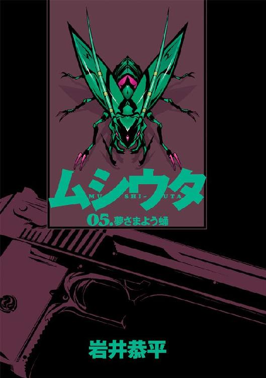
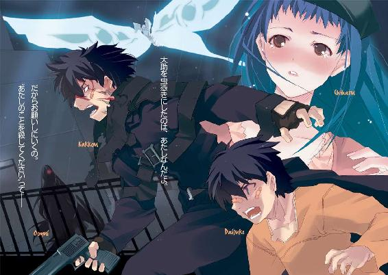
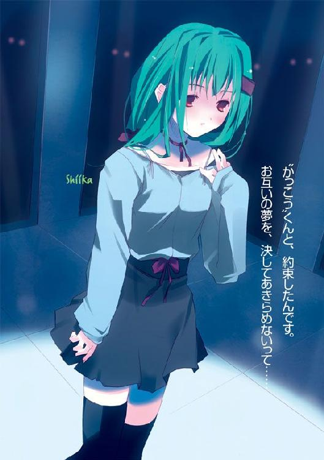
ムシウタ
05.夢さまよう蛹
岩井恭平
角川スニーカー文庫
本作品の全部または一部を無断で複製、転載、配信、送信したり、ホームページ上に転載することを禁止します。また、本作品の内容を無断で改変、改ざん等を行うことも禁止します。
本作品購入時にご承諾いただいた規約により、有償・無償にかかわらず本作品を第三者に譲渡することはできません。
本作品を示すサムネイルなどのイメージ画像は、再ダウンロード時に予告なく変更される場合があります。
本作品は縦書きでレイアウトされています。
また、ご覧になるリーディングシステムにより、表示の差が認められることがあります。
ムシウタ
０５．夢さまよう蛹
ＣＯＮＴＥＮＴＳ
口絵・本文イラスト／るろお
プロローグ 0.00 The others
仰向けに倒れた大助の顔に、激しい雨が打ちつけた。
雨の匂いに混じって感じる空気は、五年前と変わらない。
生まれ故郷の匂いだ。
大助はこの地で生まれ、小学校の高学年になる時期までをこの地ですごした。
だが大助の瞳に映った夜空には、あまりに現実離れした光景が拡がっていた。
黒雲の裂け目に垣間見えたのは、あまりに巨大な紫色のアゲハチョウだ。街全体を覆うような四枚の翅には、人間の眼のような模様が浮かんでいる。燐光を放つ紫色の鱗粉は、天上の蝶々から降り注いでいた。
「私に勝てる──そう自分に言い聞かせて、ここまでやってきたのね？」
冷たい地面の上で雨に打たれる大助の耳に、〝大喰い〟の声が飛び込んだ。
「貴方は、知っていたはずなのに......私の能力を知ってる貴方だけは、今の私には決して勝てないことを知っていたはずよね？」
〝大喰い〟の甘い囁きは、大助がここにやってきた時とまったく変わらない。聴く者の理性を奪う妖艶な声が、命を懸けて戦う大助を翻弄し、玩具のように弄ぶ。
「勝てないことを知っていながら、それでも貴方はここにやってくるしかなかった......」
雨の匂いに混じって感じる空気は、五年前と変わらない。
あの時と変わらない、忍び寄る絶望の匂い。
「貴方は独りで背負って、独りで戦い続ける。五年前から、今もそれは変わらない」
残された力を振り絞り、大助は身を起こす。
立ち上がろうとする大助の全身を濡らす雨に、とめどなく流れる鮮血が混ざっていた。赤い流れが、すでに廃校になった小学校の屋上の排水溝へと吸い込まれていく。身を包む特別環境保全事務局のロングコートが雨と血を吸って変色していた。
「五年前の俺と......今の俺は、違う......」
立ち上がった大助の顔面は、雨と血と泥で汚れていた。
顔を上げ、まっすぐに〝大喰い〟を睨む。
「いいえ、何も変わらないわ」
傷だらけの大助を見据え、〝大喰い〟が嗤う。
「あの日......貴方が虫憑きになった時と同じことを、また繰り返すだけ」
深紅のロングコートを纏った女の周囲に、紫色の鱗粉が降り注いだ。
鱗粉は空中で無数の塊となり、異形の〝虫〟へと変貌していく。視界を埋め尽くすほどに密集した〝虫〟たちが、雨雲を切り裂くような咆哮を上げた。
「千莉を助けた時に、〝浸父〟は俺が倒した。──お前も必ず倒してみせる......！」
大助は拳銃を持ち上げ、かっこう虫の顎と同化した銃口を〝大喰い〟へと向けた。
引き金を引き絞る。
──カチン、と虚しい金属音が響いた。
〝浸父〟を倒したという大助に対し、〝大喰い〟がますます笑みを深めた。クスリ、と意味ありげに嗤い、屋上から見える街並みを見下ろす。
「ようやく、メインディッシュがご到着のようね」
「......！」
大助は目を見開いた。
〝大喰い〟の視線の先には、大助には何も見えない。しかし〝大喰い〟だけは、この場所へと近づきつつある人物の存在を察知しているのだろう。
間に合わなかった──。
こみ上げる絶望感を、心の中で打ち払う。
いや......まだ、間に合う──。
拳銃を捨て、大助に残された力をかき集める。頰や拳に浮かんだ緑の模様が、鮮やかな輝きを放った。大助と同化したかっこう虫が、大助に力を分け与えてくれる。
「させるかよ──」
血に染まった顔で〝大喰い〟を見据え、いきおいよく地面を蹴った。
夜闇を切り裂く緑色の光が、〝大喰い〟に向かって突き進む。
「〝大喰い〟っ！」
〝大喰い〟の周囲に生まれた〝虫〟たちが、大助に襲いかかった。ある〝虫〟は紫色の鱗粉でつくられた口器を拡げ、ある〝虫〟は翅を拡げて炎や氷の塊、電撃や衝撃波を放つ。
大助は右の拳を振りかぶった。渾身の力を込めた拳に刻まれた模様が、緑色に輝く。
全力の一撃が、迫りくる〝虫〟に叩きつけられた。
殴りつけた〝虫〟を消滅させ、なお止まらない衝撃の波が、周囲の〝虫〟を木っ端微塵に打ち砕いた。小学校の屋上の地面が陥没し、縦横無尽に亀裂が走る。エネルギーの余波が、金属製の柵を吹き飛ばした。
大助は走るスピードを上げ、一直線に〝大喰い〟を目指す。残った〝虫〟たちが次々と攻撃を放つが、大助は止まらない。何匹もの〝虫〟が大助に嚙みつくが、それらをひきずって〝大喰い〟との距離を詰める。
「俺はあの時より──強くなった」
〝虫〟たちのカーテンをくぐり抜けた大助の眼前に、悠然と嗤う〝大喰い〟が居た。
大助は光り輝く拳を振りかぶる。
「──どれだけ強くなったとしても、私には勝てない......貴方はそのことを、知っていたはずよね？」
愉しげに嗤う〝大喰い〟の前に、一匹の〝虫〟が現れた。
紫色の鱗粉でつくられた、偽りの〝虫〟──二叉に尾が分かれたその〝虫〟に、大助は見覚えがあった。
これは、有夏月の──。
目を見開く大助の視界が、無数のレーザ光線で埋め尽くされた。
空に向かって放たれた光の奔流が、大助を射貫いた。
「......っっ！」
特別環境保全事務局のロングコートを貫通し、数本の光線が大助の腹と肩、さらに脚を射ち抜いていた。
激しい雨を蒸発させ、さらにレーザ光線が発射される。
空中へ投げ出された大助を、次々と熱線が貫いていく。すでにとりかえしのつかない重傷を負った大助は、避けることもできない。
どさり、という振動と身体に触れる冷たい感触で、自分が地面に落下したことを知る。
流れる血とともに、自分の命がこぼれ落ちていくのを感じる。
急速に弱まっていく心臓の音が、耳元で聞こえた。
「戦うことも、守ることも、全て忘れて......ゆっくりと、おやすみなさい」
〝大喰い〟の声が、やけに遠くから響いた。
死に向かいつつある自分と向き合いながら──。
それでも大助は、立ち上がろうとしていた。
1.00 千晴 Part. 1
＊
ゆらゆら揺れて。
ふわふわ浮かぶ。
そんな平穏で暖かい毎日だった。
幼い頃から好奇心が旺盛で、危機感や防衛本能といったものが欠落していた。周囲の人間からは、ずいぶん危なっかしい子供だと思われていただろうと思う。
だから、その〝碧い蛹〟を見つけた時も、怖いとは思わなかった。
小川を泳ぐ魚を追いかけるように。
田んぼで見かけた蝶々を追いかけるように。
誰もいない空き地で、それに触れた。
触れた指先が痺れ、蛹から〝何か〟が自分の身体へと潜り込んだ。
どくん。
鼓動が聞こえた。自分の心臓ではない、もう一つの命の息吹。
──見えない力によって、身体が真っ二つに分けられた。
そう感じた。頭の先から足の指先まで、余すところなく全ての部分が二つに分かれた感覚。
次の瞬間、自分から分離した〝彼女〟が、目の前に立っていた。
それは実体のない、ただの幻覚。
引き裂かれた自分だけあって、自分とうり二つの恰好をしていた。自分よりほんのちょっとだけ、意地悪そうな顔をした自分。
〝彼女〟は元の自分──つまりこちらの顔を見るなり、なんともいえない表情をした。
『あちゃー、今度の宿主さんはずいぶん間抜けヅラしたガキだなー。大ハズレだよ』
生まれつき下がり気味の目尻が、絶望的にさらに下がっていた。ご丁寧に額に手をあて、空を仰ぐリアクションつきだ。
自分の顔、自分の声でバカにされ、腹が立った。
なによ、間抜けヅラで悪かったわね──。
怖いモノ知らずの子供らしさで、頰を膨らませたのをおぼえている。
諦めた様子で、そいつがこちらに向かって両手を差し出した。
なんとなく自分も両手を差し出す。
二人の細い指が、からみあった。
感触はない。
だがほんのりとした暖かさが伝わった。ほっとするような、心地よい暖かさだった。
それで、悟る。
口は悪くて態度も悪いけれど──それに加え、目の前にいるのが、幻覚でしかないと分かっていても、はっきりとした予感があった。
こいつは、悪いヤツじゃない。
『ま、しょーがないか。はじめまして、宿主さん。あたしの名前は──』
「千晴」
後ろから声をかけられ、振り返った。
夕日を背に、小柄なシルエットが浮かんでいた。
逆行になって顔は見えないが、影の輪郭で分かった。声で分かった。雰囲気で分かった。
「大助」
小学校六年生の薬屋千晴は、満面に笑みを浮かべた。
「迎えにきてくれたの？」
「母さんが心配してさがしてこいって。ほら、さっさと帰ろうぜ」
「うん！」
『あたしの名前は、アリア・ヴァレィ──って、ちょっと！ 聞いてんの？』
大助に声をかけられた時点で、もう一人の自分の幻覚は消えていた。だが自分の声はあいかわらず、耳元で聞こえていた。
「かわいー弟を持って、あたしは世界一のシアワセ者だよね！」
「なっ......や、やめろよ！ 手をつないでくんなよ！」
『あ、あれ？ うそっ？ 聞こえてない？ ひょっとして聞こえてませんかー？ 初対面だからってカッコつけてみたのに、ザ・空回り？ アリア、超ショック！』
弟の手を振り回して夕暮れの住宅街を歩きながら、千晴はクスリと笑った。
聞こえてるよーだ──。
心の中で、舌を出してみせる。
先ほど、千晴を大ハズレ呼ばわりした仕返しだ。
耳元で聞こえる声が幻聴なのか白昼夢なのか、それとも他の何かなのかは分からない。だが今この時を、誰にも邪魔をされたくなかった。
「はなせってば！ 恥ずかしいだろ、姉弟でこんなの！ 千晴！」
ゆらゆら揺れて。
ふわふわ浮かぶ。
平穏な生活の中を、ふらふらとたゆたう。
危なっかしい千晴を幸福な日々につなぎ止めてくれるのは、弟の手の温もり。
弟の存在を、自分のものにしていられる今の瞬間だけは手放したくない。
『な、なんだよ、聞こえてるんじゃん！ フライングで泣くところだったじゃん！ 宿主をいじめるのはこっちの役目なのに、人の仕事とんないでよね！』
非難しながらも、どこかほっとした様子の声が聞こえた。
「はなさないもんねー。大助、力よわーい」
必死に手をふりほどこうとする弟の手を、しかし千晴は握ったまま離さない。一つ年下の弟よりはまだ、千晴のほうが力が強かった。
橙色の空の下を、弟と並んで歩く。
それは、千晴がはじめてあの異様な存在と出会った日。
災厄にまみれた〝虫〟を生む、全ての元凶。
安住の地を求めて彷徨い続ける、碧い蛹の放浪者。
其の名は──アリア・ヴァレィ。
＊
前略 いかがお過ごしでしょうか？
あたし、鮎川千晴は青春のまっただ中にいるよ。
来月からは高校三年生になるんだ。友達はいっぱいいるし、生徒会の仲間ともまた生徒会でいっしょに仕事をする約束もしたよ。同級生に告白されちゃったりもしてる。あ、でも断ったんだよ。嫌いだったわけじゃないけど、中途半端な気持ちでお付き合いをするのも失礼な気がしたんだ。ホント、それだけ。
──でもね、それもこれも、もうやめるんだ。何もかも忘れてシアワセに生きるのは、もうやめたの。楽園みたいに楽しい毎日は、昨日でおしまい。
だって、思い出したんだよ。
あたしが鮎川千晴じゃなくて、薬屋千晴だった時のこと。
そして、キミの名前もね。
......ね、大助？
「うーん......」
西遠市の郊外にある、ビジネスホテルの寝室。
鮎川千晴は大きな鏡の前で、仁王立ちになっていた。
鏡に映っているのは、十七歳に成長した自分の姿だ。失っていた五年前までの記憶を取り戻した千晴は、少し下がり気味になった目尻が生まれつきであることも思い出していた。髪は長いが、前髪は短めに切り揃えている。同級生の平均身長より高めの身体は、すらりと細い。
キミももう、十六歳になってるんだよね──。
鏡を見ながら、もう何年もつきあい続けている習慣、〝語りかけ癖〟が自然と出た。
今までは宛先のない妄想だった。
だが、今は違う。
誰に向かって語りかけているのかを、はっきりと思い出した。
今のキミは、どんな顔をしてるのかな。大助──。
「もう起きてんの？ 起きてるならさっさと出てこいっての」
寝室をノックする音が聞こえた。愛想のカケラもない、そっけない声が千晴を呼びつける。
千晴は元気よくドアを開け、リビングに姿を現した。
「グッモーニン！ 気持ち良い朝だねっ」
「はあ？ 気持ちよくなんてねーわよ。こっちは怪我でろくに動けねー──」
ソファに座った小柄な少女が、こちらを見た。途端に、表情を凍りつかせる。
床の上に座っている制服姿の少女も、チラリと千晴を一瞥した。だがすぐに興味を失った様子で、手元のティッシュを細切りにする作業──何のためにそんなことをしているのかは分からないが、とにかく元の作業に戻った。
「アンタ......」
小柄な少女、菰之村茶深が眉間に指をあててうつむいた。千晴よりも頭半分ほど身長が低く、短い髪は毛先がはねている。レンズの薄いメガネをかけた顔には、バンソウコウが貼ってある。長袖のＴシャツの裾から、腹部に巻いた包帯が見えた。
「はあ......まあ、いーわ。ほら、さっさとこっち来いっての」
「ええっ？ リアクションそれだけなの？ 冷たいよ、寂しいよ、茶深ちゃん！」
大胆に素肌をさらけ出した状態──ビキニの水着を着た千晴は、頭を抱えた。水着はクローゼットの中にあった、屋内プール施設を利用するための貸し出し用のものである。
──昨日は鮎川千晴にとって、人生の転機ともいえる一日だった。
ようやく本来の自分を取り戻した日、と言ったほうが正しいかもしれない。
五年もの間、中学、高校と平穏な日々を過ごしてきた。母がかつての同級生と再婚し、鮎川姓を名乗るようになり、友人や周囲の人々にも恵まれた。つい昨日まで鮎川千晴は西遠創成高等学校の二年生、生徒会の副会長として幸福な日々を送っていた。
だが千晴の中には、幸せな生活を送ることに対する疑問が常にあった。青春という舞台で、〝主役〟になることに罪悪感を抱いていた。
その理由を、千晴はついに思い出したのだ。
西遠市のメガシティプロジェクトの一環として建てられた巨大タワー、『ＵＲＢＡＮ』での戦い。いま目の前にいる少女、菰之村茶深が〝脇役〟でしかない自分の運命に立ち向かうべく企てた決戦。特別環境保全事務局という政府機関を相手どった戦闘に千晴は巻き込まれ、そのショックで思い出すことができた。
なぜ自分が、こんなにも幸せな日々を過ごしていられたのか。
なぜ自分が、幸せな現状に不安と焦燥感を抱いていたのか。
今の千晴はその理由を、知っている。
「昨日の今日で二人とも疲れてるだろうと思って、癒してあげようと思ったのに！ どう？ 男子だったら卒倒モノのこのナイスバディ！ ほらほら、せくしーぽーずだよー」
眉間に皺を寄せている茶深に向かって、前屈みになってみせる。投げキッスのおまけつきだ。
「バ、バカなことしてんじゃねーわよ」
意外と効いた。茶深の頰がうっすらと紅潮する。
「女どうしでそんなことされても、嬉しくねーわよ！ そんなことより、さっさとこっち来て説明しなさいよ！ 昨日は『ＵＲＢＡＮ』から脱出するのに精一杯で、なんの説明も受けてねーんだから！」
「ねーねー、綾ちゃんは癒されてくれたよね？」
怒る茶深をスルーして、絨毯の上に座った制服姿の少女に声をかける。
杉都綾というその少女は、昨夜、傷ついた茶深や千晴を介抱してくれた人物だ。茶深の仲間の一人らしい。長い黒髪と白い顔が日本人形を連想させる和風美人である。ティッシュを細切れにし続ける指は長く、細い。
綾が切れ長の瞳で水着姿の千晴を見上げ、すぐにまたうつむいた。
「こうして少しずつ何かを壊してると、とても落ち着くのよ」
「へー、そうなんだー。──べつにそんなことを聞いたんじゃないけどね......うっ」
テーブルの向こう側へと行こうとして、千晴は後退った。
ソファの後ろに、不気味な生き物が隠れていたのだ。金属の鎧のような瑠璃色の体殻は三つに分かれ、頭部と胴部は尻部に比べて小さい。金属光沢を放つ上翅の下では柔らかそうな腹が絶えず鳴動していた。オレンジ色の鋭い触覚と脚がギチギチと音を立てて動いている。
形態だけ見れば昆虫のゴミムシに似たそれは、しかし異常なほど大きい。そんなことは絶対にしたくないが、千晴が抱きしめて両手の指先がつくかどうかといったところだろう。乱雑に床に転がった缶ジュースを、ゴム状の口器から次々と呑み込んでいる。
千晴の反応で思い出したように、茶深が足元の少女に言う。
「あんまり長い間、自分の〝虫〟を出してるんじゃねーわよ、綾。力を消費するわよ」
「アルミニウムが好物なのよ」
「......人の話をカンペキに聞いてねーわね。ていうかアンタ、性格変わってねー？」
〝虫〟──。
日本において不可解極まるその存在が発見されたのは、およそ十年ほど前とされていた。
視覚的には実存する昆虫類と共通するところが多いことから、〝虫〟と称されている。だが〝虫〟の存在は物理的に解明されてはおらず、また政府は人々の発見報告が数多いことにもかかわらず、その存在を公式には否定している。
〝虫〟は少年少女に寄生し、宿主の夢を喰って成長する。〝虫〟に取り憑かれた人々は虫憑きと呼ばれ、実在しないものとされながらも、恐怖と差別の対象とされていた。虫憑きとなった者は〝虫〟の超常的な力を駆使するが、同時に自らの体力や精神力、そして〝こうありたい〟という願望──夢を喰われていく。
夢を喰い尽くされることは体力、精神力の枯渇を意味し、宿主は〝虫〟とともに激しい衰弱によって死に至る。またそうならずとも、〝虫〟を殺害された時、自らの一部となってしまった〝虫〟を失った反動で生ける屍、欠落者と化してしまう。
「ガスは空気中から補充できても、金属はそうもいかないから......」
ぶつぶつと呟く綾は虫憑きで、ソファの裏にいるのは彼女の〝虫〟だ。
綾だけではない、ソファに座る茶深も虫憑きである。それも秘密裏に虫憑きを捜索し捕獲することを目的とする政府機関、特別環境保全事務局に所属していた。昨日までは、だが。
茶深や綾とは違い、千晴は虫憑きではない。ごく普通の、なんの特別な力もない一般人だ。
「あらためて訊くけど、アンタが薬屋大助の姉だということは間違いないわけね？」
ソファに座ったまま、茶深は振り向かない。したがって彼女の表情は見えなかった。
茶深の質問の意味が分からず、千晴は首を傾げた。だがすぐに納得して頷く。
「そっか。茶深ちゃんは大助のことを知ってるって言ったけど、あたしが大助のお姉ちゃんだなんて分からないもんね。うーん、何かないかな？ 証拠みたいなもの」
「証拠なんて、いらねーわ！」
急に茶深が大声を上げた。
「これでやっと、納得がいったわよ！ どうして五年間も、アンタの監視をするよう命令され続けてきたのか！」
千晴はゴミムシに威嚇されながらも、ソファの向こうへ回り込む。
「〝一号指定の虫憑きに関わった人間だから、いちおう監視しておこう〟──つまりはそういうことだったわけ？ はっ、十号指定の雑魚だった私にふさわしい、くそったれな任務だわ！」
怒りも露わに、茶深がテーブルを叩いた。傷が痛んだのか、顔をしかめる。
「特環は一号指定の虫憑きの出現を、極端に怖れてる......だから〝かっこう〟と深い関わりのある千晴もまた強力な虫憑きになってるんじゃないかと、疑心暗鬼になった特環が〝念のため〟に監視していたってわけ！ 虫憑きになる可能性があるのは、思春期の少年少女......母親に監視がつかなかったのが、その証拠だわ！」
「あ、あたしが虫憑きに......？」
「ちくしょう、こんなどうでもいい任務に五年間もつけるなんて......特環のくそったれどもめ、私をナメやがって！」
憤慨している茶深に、千晴はためらいがちにたずねた。
「ねえ、茶深ちゃん。あたしも茶深ちゃんに、まだちゃんと訊いてないことがあるよ」
「ああ？ なによ？」
「大助のことだってば！ 茶深ちゃん、あたしの弟のこと、知ってるんでしょ？ 今、どこにいてどういうことをしてるのか、教えてよ」
「ああ。あの悪魔のことね」
茶深が吐き捨てるように言った。口に出すのも嫌と言わんばかりだ。
「悪魔？ 違うよ、大助のことだってば！ く・す・り・や・だ・い・す・け！ いくら茶深ちゃんでも、聞き間違いにもホドがあるよ！ すごく失礼だよ！」
水着姿のまま、千晴は両拳を握って抗議する。茶深が眉をひそめた。
「いや、だから、あの悪魔」
「大助は悪魔なんかじゃないよ！ ちょっと素直じゃないところがあるけど、誰よりも優しい良い子だよ！」
頰を膨らませ、茶深を睨む。
「......」
──気がつくと、リビングが重い沈黙に包まれていた。
誰も何も言わないので、仕方なくもう一度、繰り返す。
「大助は誰よりも優しい良い子だよ！」
茶深がまるで幽霊を見るかのような目で、千晴を凝視した。助けを求めるように、足元の綾に視線を送る。綾が無表情で、首を左右に振った。何かを諦めたらしい。
「えっと......まあ、アンタのブラコン、もとい弟バカっぷりはこの際、置いとくわ。お互い、どっちかが人違いしてる可能性もなきにしもあらずだし。うん、人違いだわ、きっと」
「人違いなんかじゃないよ！ 大助は良い子だよ！ 良い子が大助だよ！」
「何言ってんのか分かんねーから。とりあえず落ち着けっての。......説明しろって言われりゃ、私が知ってる薬屋大助についてはいくらでも教えてやるわよ。でもそれを聞いて、アンタはどうしようっての？ ただ久しぶりに会いたいってだけなら、聞かねーほうがいいかもよ」
茶深が冷たい口調で言い、斜に千晴を見やる。
「アンタのことなんて成り行きで助けただけで、どこで何をしよーが知ったこっちゃねーのよ。こっちはアンタが取り戻した記憶ってのに、何か利益になるようなものがありゃめっけモンって程度しか期待してねーし。でもヘタに勝手なことされちゃ迷惑なわけ」
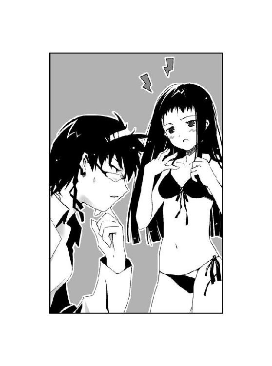
茶深が突き放すような口調で言う。実際、その通りなのだろう。
そう、千晴は記憶を取り戻した。
五年前、あの時。
たった一人の弟である大助に、姉の千晴が何をしたのか。
まだはっきりと思い出すことはできていないが、自分が犯した罪だけは理解している。
「茶深ちゃんの言う通りだよ。あたしは大助に会いたい......ううん、会わないといけないの」
かつての自分は、大助にとてもひどいことをしたのだ。
──思い出さなけりゃ、ずっと幸せに暮らしていられたのに。
どこからか、懐かしい声が聞こえた。
千晴が弟にした、償いきれない罪。それは──。
「──大助を虫憑きにしたのは、あたしなんだよ」
茶深と綾が、目を見開いた。
「大助はきっと、あたしのことを恨んでると思う。だからお願いしに行くの」
千晴はにっこりと笑みを浮かべた。
「〝あたしのことを殺してください〟って──」
それが五年前に抱いた想い。
現在の千晴が、取り戻した願いだった。
1.01 大助 Part. 1
西遠市の中心街、駅へと繫がる大通りは大勢の通行人で混雑していた。
朝のラッシュ時ということもあり、スーツを着た会社員や制服姿の学生たちの姿が多い。
薬屋大助は、そんな人々の中に紛れて歩道を直進していた。
大助は十六歳の高校生の中でも特に目立つ要素のない、中肉中背の体格をしている。髪型も地味なうえに肩に背負うスポーツバッグもありふれたメーカー製。ただし彼が着たブレザーと同じものを着ている学生は一人もいない。桜架市という別の街にある高校の制服だからだ。
ごく普通としか言いようのない外見をした大助を、振り返る者はいない。誰にも意識されないよう、わざと特徴のない外見をしているからだ。
それにもかかわらず、大助はあることに気づいていた。
尾けられてるな──。
それも一人や二人ではない。大助は目立たぬよう、背後の気配を探っていく。
「四人、いや五人か......」
ぽつり、と口の中で呟く。彼の呟きは車道から響いたクラクションにかき消され、肩に触れるほど近くをすれ違った女性ですら、気づくことはなかった。
大助は思考を巡らせる。
......尾行されはじめたのは、俺が大通りに出てからだ。俺が〝かっこう〟と分かっていて尾けてるのか？ ヘタに仲間を呼ばれても面倒だ。今のうちに人気のない場所へ誘い込んで、捕まえておいたほうがいいかもしれないな──。
大助にとって高校生という肩書きは、本来の素顔を隠すためのものでしかない。
特別環境保全事務局東中央支部、監視班火種一号局員〝かっこう〟。それが薬屋大助という自分の本当の立場である。
虫憑きでありながら同じ虫憑きを狩る彼を恨む者は、数え切れないほどいるだろう。
だがあくまでそれは、大助が〝かっこう〟であることを知られた上での話だ。普段の彼は、ごく普通の高校生を演じている。〝かっこう〟の素顔を知る者は少ないはずである。
「......？」
大助が対処法を考えているうちに、尾行されていた気配が消えていた。
相手の目的が分からず、首をひねる。
「まあ、いなくなったなら放っておくか」
特別環境保全事務局の東中央支部に所属する大助の管轄は、桜架市を中心としたエリアだ。
ここ西遠市は管轄外であり、管轄外である以上、大助は必要以上に戦闘行為を行うわけにはいかない。以前、管轄外で大規模な戦闘をしたことが問題になったこともあった。
余計な戦闘をせずに済むのなら、それにこしたことはない。
「ふあ......」
緊張が緩むと、あくびが出た。昨日、西遠市に到着してからほとんど眠っていないせいだ。
「まずはこの街で何があったのか、確かめないとな」
大通りの先は、ロータリーになっていた。
西遠駅だ。横を見ると、そばにある高級ホテルの周辺が、警察のテープで囲まれていた。見上げると、上階の窓のあたりが破壊されているのが分かる。ホテルの入り口は地元警察や工事関係者が行き来しているせいで、建物に入ることはできなそうだ。
気にはなるが、ホテルは後回しにすることにする。それよりももっと気になる場所があった。
西遠市メガシティプロジェクト、『ＵＲＢＡＮ』。
駅の向こうに見える塔は、アーバン・タワーと呼ばれていたらしい。
かつてはさぞ美しい姿を誇示していたであろうそれは、今や見る影もなくなっていた。
──大助が昨日、西遠市に到着した時、巨大な塔は紅蓮の炎に包まれていた。タワーを取り囲んだ大型の消防車が放水を行っているのも見えたが、火の勢いは凄まじかった。消防車の数に比べて救急車が少なかったのは、建設が中断されていて無人の状態であったからだろう。
一晩を費やし、火災は完全に鎮火していた。全焼して黒い塊となり果てたアーバン・タワーを、駅を出入りする人々が複雑な顔で見上げていた。
「まずは『ＵＲＢＡＮ』だな......俺がこの街に来たのと、あまりにタイミングが合いすぎる」
大助は駅のロータリーを通り過ぎ、『ＵＲＢＡＮ』を目指す。
「〝ふゆほたる〟と......詩歌と関係があるかもしれない」
自然と歩調が速くなった。
大助がこの街へとやってきた理由は、ある人物から「〝ふゆほたる〟が西遠市にいる」との情報を得たからだ。
秘種一号指定虫憑き〝ふゆほたる〟。
杏本詩歌。
「詩歌──」
無意識に、自分の手のひらを見つめていた。たった一度だけ握った詩歌の手の温もりは、今でもはっきりとおぼえている。控えめな少女の笑顔を、思い浮かべる。
虫憑きであることを忘れ、尾行されていることすらも忘れ、大助の表情が緩んだ。誰しもが悪魔と怖れる〝かっこう〟ではなく、薬屋大助の素顔に戻る。
「......」
会いたい──そう口走りそうになり、開きかけた口を閉ざす。
西遠市へやってきたはいいが、実際に詩歌と会ってしまったらどうなるか。そんなことは、すでに分かり切っている。
二人はまた、戦うことになるだろう。
詩歌は虫憑きとして唯一、欠落者からの蘇生を果たした重要人物だ。大助は特別環境保全事務局の一員として彼女を追う立場であり、詩歌は逃亡の身である。ましてや二人は虫憑きとしては最も危険な実力の持ち主。もし戦いになれば、二人とも無事ではすまないだろう。
唇を嚙みしめる大助の表情は、〝かっこう〟のそれへと戻っていた。
「もし関係があったとしても......もういないだろうな」
道路に面した『ＵＲＢＡＮ』の入り口は警察のバリケードが張られ、敷地内を関係者たちが行き交っている。マスコミらしき姿も見えた。
ここに来るまでにコンビニで読んだ新聞によると、『ＵＲＢＡＮ』を襲った火災は人為的なもの、つまり放火であると断定されたようだ。
しかし行きずりの放火にしては、規模が大きすぎる。おそらく何者かが何らかの目的を持ち、塔を利用したのだろうと大助は考えていた。『ＵＲＢＡＮ』は本来の存在理由とは異なる役柄を強制され、その役目を全うしたのだろう。
大助の眼前にあるのは、ただの残骸だ。役者が去った後の舞台にすぎない。
とはいえ、何らかの痕跡は残っているはずだ。それを調査しなければ、この街へやってきた意味がない。
「〝みんみん〟が歩いてきたのも、『ＵＲＢＡＮ』がある方角からだった。ここで戦闘があったのは、まず間違いないだろうな」
大助は敷地をぐるりとまわり、バリケードや人の目がない場所をさがす。
詩歌の足取りを摑むために西遠市にやってきた大助が出会ったのは、しかし違う人物だった。
元・特別環境保全事務局東中央支部、火種六号局員〝みんみん〟。
去年のクリスマス、〝ふゆほたる〟捕獲の任務において欠落者になったはずの少女だ。
──気をつけなよ、〝かっこう〟くん......中央本部は〝始まりの三匹〟のうちの一匹を隠してるよ......。
本名を堀崎梓というその少女は、大助にそう言い残し、再び欠落者となった。
──もう一度、会いたかったなぁ......圭吾さん......。
東中央支部長、土師圭吾を慕っていた少女は、最後にそう呟いていた。
同情や慈悲などといった感情は、とうの昔に捨ててきた。だが、それでも〝みんみん〟の身の安全を優先したのは──彼女の気持ちに、同調してしまったからだろう。
大助は結局、自分のために用意されていた潜伏先で一晩中、寝ずに〝みんみん〟の身を守ることに徹した。そのために詩歌を探すチャンスを失ったことになる。
「中央本部が〝始まりの三匹〟を隠してる、だと？ 奴らがコソコソと隠しごとをするのは、ずっと前からだが......連中、いったい何を企んでやがる──」
これまで抱いていた中央本部に対する不信感が、決定的に高まっていた。
もう、中央本部を信用することはできない。
「ここで証拠の一つでも摑むことさえできたら、今度こそ決着をつけてやる」
道路から逸れた敷地に、人目の少ない入り口を見つけた。大助は『ＵＲＢＡＮ』の敷地に潜り込み、焼け跡と化したタワーへと近づいていく。放置された重機の陰を移動し、タワー側面に空いた大穴から内部へ入る。
建物内は火災現場を写真におさめる警官や、少数の報道関係者がいた。彼らは建物中央にある停止したエスカレータを使って、タワー内を移動しているようだ。
大助は壊れた柱の裏を渡り歩き、奥にある非常階段を目指す。壁のコーティングが真っ黒に炭化したそこは人の往来がないようだ。
大助は上階を目指しながら、バッグの中から取り出したゴーグルを装着した。顔をすっぽり覆うくらい大きなゴーグルだ。特別環境保全事務局の標準装備である。
「一階にあった傷跡......あれは〝虫〟による戦闘の痕だな。上の階に向かって続いてる」
靴音を殺しながら、大助は階段を上っていく。
一階のロビーに刻まれた破壊の痕は、大型の〝虫〟によるものに違いなかった。地元警察の鑑識がどう判断を下すか分からないが、大助がそれを見間違えるはずもない。
虫憑きの戦闘の痕なんて、見飽きてる──。
他のどの虫憑きよりも戦いの経験を積んできた大助が見たかぎり、そこに詩歌の能力の面影はなかった。〝ふゆほたる〟が戦ったとしたら、塔そのものが跡形も残らないだろう。
「詩歌はもっと上の階にいたのか......いや、そもそも詩歌はここにいなかったのかも......」
もし本当に詩歌がいたとしても、詩歌は力を使わなかった。それは、つまり──。
「誰かが詩歌を、守ってるのか？ それとも、全く別の何かが戦いに関わっていた......？」
現状では、そこまでを推測するのが限界だった。
上を目指す途中でたまにロビーに顔を出し、荒れ果てた建物内の様子をうかがう。現場検証をしている警察関係者がいるところもあれば、いない階もあった。
「実際に戦っていた虫憑きは、最低で二人ってところか」
建物に刻まれた傷跡は、火災のそれを除けば二種類に分けられていた。巨大な爪でひっかいたような痕と、熱をともなう衝撃によってえぐりとられたような箇所だ。前者は分離型の虫憑きである可能性が高いが、後者は特定するのが難しい。
「しかし......」
もし詩歌を巡る戦いだったとすると、一方は中央本部からの刺客と思うのが自然だろう。
もう一方、詩歌を守る立場にある者といえば──〝むしばね〟と考えられる。
「利菜以外にこれほど強力な虫憑きが、まだ〝むしばね〟にいたのか......有夏月のことといい、まだやっかいな虫憑きを隠してる可能性は高いな」
特別環境保全事務局に対抗する形で、一般社会に潜む虫憑きらによって組織されたレジスタンス、〝むしばね〟。
立花利菜──レイディー・バードというリーダーを失った時点で、〝むしばね〟は弱体化していく一方だと思いこんでいた。だがこれからは認識をあらためる必要がありそうだ。
「詩歌が特環に捕まったなら、柊子さんからすぐに連絡が来るはずだ。それがない以上、詩歌は無事に逃げたか......それとも、中央本部がそのことを隠してるか、だ」
大助の視界が、急に開けた。
非常階段が終わり、透明な空間が現れていた。
展望台だ。四方がガラス張りになっている。
大助以外に、フロア内には誰もいない。中央のスペースに、停止したエスカレータの続きがあった。もとはキューブ状のプラスティックで周囲を囲っていたのだろうが、熱で溶けて無惨な姿を晒している。
エスカレータを昇ると、屋上へ出た。
解体していた途中なのだろう、クレーンの残骸があった。燃料を入れていたと思われるドラム缶はいびつにひしゃげ、中身は失われている。奥には破壊された給水ポンプが見えた。
西遠市上空の風が、大助が着たブレザーを揺らす。
「......ちっ」
詩歌のものでなくても良い。ここで戦っていた何者かの手がかりとなるような、衣服の切れ端でも見つからないかと思ったのだが、何もなかった。
全て炎に焼き尽くされたか、地元の特環支部がすでに隠滅を図っているのかもしれない。虫憑きに関わる事件は特環が処理するよう、システムが出来上がっているのだ。
「空振りかよ。地元の支部に協力を要請するとなると、俺がこの街にいることが色んなところにバレるしな......柊子さん経由で探りを入れるくらいなら、大丈夫か？」
煤で汚れた柵によりかかり、ポケットから携帯電話を取り出す。
東中央支部の情報班へと繫がる番号をプッシュし、反応を待つ。相手はすぐに出た。
『半径十メートル以内に第三者がいないことを確認しとはぐちっ！ ──か、嚙んでません！ 嚙んでませんよ！ どんまい、〝まいまい〟ちゃん！ 何事もなかったかのよーに言い直せばバレませんから！』
「......お前、いい加減にしないとホントにクビにするぞ......」
大助が所属する東中央支部の情報班に所属する局員は何人かいるが、ハズレを引いてしまったようだ。落ち着きのない少女の声が、慌てた様子で言い直す。
『え、えっと......半径十メートル以内に第三者がいないことを確認し、局員番号を──』
少女の声を遮り、大助は自分の局員番号を暗唱した。
特別環境保全事務局に繫がる通信回線は全て、リアルタイムで最新鋭の情報機器によるチェックを入れられている。局員以外は虫憑きに関する情報を入手できないようにするためだ。
『局員番号を確認。声紋照合。──完了。特別通信に回線を切り替えちゃいます。えー、特別環境保全事務局東中央支部、情報管理部です。これより先の会話は、東中央支部監視班、火種一号局員〝かっこう〟の利用記録として録音されるりらっ。──ど、どんまいっ、まだ失敗はバレてませんよ、ぎりぎりセーフです！』
「お前、俺が今度帰った時は覚悟しとけよ......それはともかく、柊子さんに繫いでくれ。直通でかけるほど急ぎの用じゃないから、もしつかまらなかったら伝言だけ頼む」
『はいっ、支部長代理ですね。所在を確認するので、待っててくださいね。お待ちの間、歌でもいかがですか？ らーららーらー......きゃんっ！』
『あっ、〝かっこう〟さん？ 〝かっこう〟さんですかっ？ よかったぁ、ちょうど話さないといけないお話があったので──』
「柊子さん？ なんで情報班のところに......」
電話の相手をしていた少女を、五郎丸柊子が突き飛ばしたのだろうか。『ど、どんまい、〝まいまい〟ちゃんっ！ ぎりぎりデスクの角に頭をぶつけてませんよっ！ 血とか流れてませんから！ 視界が真っ赤で明日が見えなくても輝ける未来は──』などと騒ぐ声が聞こえた。
『西遠市を管轄している支部と連絡を取り合っていたところです。機密レベルの高い情報を交換する場合の、支部長どうしの連絡の取り合いとか分からなくて直接、こちらに......』
とても二十三歳とは思えない、そして支部を束ねる上司とは思えない、情けない声だった。彼女のことだから、今日もまた寝グセを直しもせずにフラフラと働いているのだろう。
「重要な情報？ こっちの支部と？」
『は、はい。えっと......あ、そうだ。〝かっこう〟さんのほうで何か変わったことはありましたか？ できれば、そちらの用件からうかがっておいたほうがいいかなーなんて』
電話から聞こえる柊子の声は、いつになく硬かった。先ほどの電話の少女に次いで東中央支部の中でも特に緊張感とは無縁の彼女にしては、珍しいことである。
大助は眉をひそめたが、一応は上司である柊子の言うとおり、先に用件を話すことにした。
「〝みんみん〟を確保したよ」
『......！』
前置きもなしに言いはなった大助の言葉に、息をのむ気配が伝わった。
「今はもう欠落者に戻ったけど、最後に気になることを言ってた。──中央本部はもう信用できないと考えたほうがいいよ、柊子さん」
『〝みんみん〟さんが、ホントに蘇生してたんですか？ あっ、でもまた欠落者になったって、どうして......なっ、なんで中央本部が信用できないと......？』
「今は俺のために用意しておいた潜伏先にかくまってる。場所は俺と柊子さんしか知らないはずだから、できるだけ早く移送の手配をしてくれ」
パニック状態の柊子を無視し、大助は続ける。
「〝ふゆほたる〟は確認できなかったけど、現地に大規模な戦闘の痕を見つけた。それでこっちの支部が何か知らないか聞こうと思ってたんだけど......柊子さんがもう連絡をとりあってるとは思わなかったよ。たまにはちゃんと仕事するんだね」
『し、失礼ですねぇ。私だってたまには......じゃなくて、いつも仕事してますけど......そのぉ、今回は、ちょっと気がかりなことがあったので──』
「気がかりなこと？」
『は、はい。あの、ええとですね......』
柊子が言いよどむ。大助はいよいよ首を傾げた。
『落ち着いて聞いてくださいね、〝かっこう〟さん？ ね？』
「なんだよ、柊子さん。気持ち悪いな」
『現地の支部に確認をとってもらったので、間違いないのですが......あ、でも〝かっこう〟さんの言う戦闘に巻き込まれたのかどうかまでは、確認できていないんです。だから危険に晒されていると決まったわけではないのですが。ただの家出ということもあり得ますし』
「......家出？」
おうむ返しに聞き返す。柊子が何を言おうとしているのか、さっぱり分からなかった。
『西遠創成高等学校に通っている、ある高校生の少女が一人、昨日から失踪しています。少女を監視していた現地支部の下級局員も一名、音信不通になっている状態です』
何かにつけては泣き言を言う柊子だが、今日の彼女は普段にも増して狼狽していた。
『いやな予感が、していたんです。ウメさんから西遠市の名前を聞いた時から......でも、ただの偶然だと思ってたんです。だってこのことは土師センパイと私しか知らないはずで、土師センパイは現地の支部長にさえ彼女が何者なのか隠していたくらいで......！』
「落ち着けよ、柊子さん。その女ってのは、いったい──」
『書き置きらしきメッセージが、彼女の自宅に残されていました。〝思い出しました。弟を捜しに行ってきます〟と書かれていたそうです』
とうとう覚悟を決めたように一呼吸おいて、柊子が言った。
『少女の名前は......鮎川千晴』
風が、止んだ。
同時に大助の呼吸も、詰まっていた。
目に見える光景が凍りついていた。
『彼女のお母様が再婚される以前の名前は、薬屋千晴──〝かっこう〟さん』
柊子の苦しげな声が、ひどく遠くから聞こえていた。
『貴方の、実のお姉さんです』
何もかもが動きを失った世界で、心臓の鼓動だけが高まっていた。
大助の姉、千晴。
五年前に生き別れになって以来、顔を見るどころか、どのような生活を送っているのかすら確かめたことのない少女。
そんな姉がこの街に住んでいて、昨日から行方不明になっている──。
『お母様の無事は確認しています。しかし千晴さんのほうは、ご友人の証言からもその後の足取りが摑めていないのが現状です。原因を摑もうにも、彼女を担当していた監視者──ご存じのように、同化型の高位局員の近親者には監視班を就けるのが決まりだったのですが、とうの監視者の行方も......』
立ちつくす大助は、しかし姉が行方知れずになったということも、彼女が残したという書き置きの内容のことを考えていた。
──〝思い出しました〟。
ずっと昔に離ればなれになった姉がいったい、何を思いだしたのか。
それは、分からない。
しかし他ならぬ姉が〝思い出した〟と言い残し、姿を消した。
その事実が、大助の中に埋もれていた記憶を呼び起こした。
『......〝かっこう〟さん？ 聞いてますか？』
大助がまだ小学生だった頃、鼓膜に焼きつけられた妖艶な声。
──ふふ、貴方のお姉さんがもし、いつの日か......。
否応のない敗北感とともに網膜にこびりついた、虹色の瞳。
「〝いつの日か〟──」
大助の口が、勝手に動いていた。
──今日のことを、完全に思い出した時は......。
「〝今日のことを、完全に思い出した時は〟──」
『〝かっこう〟さん？ どうしたんですか？ 何を言って......』
強く嚙みしめすぎて奥歯が軋む音が、耳に響いた。
杏本詩歌の捜索や『ＵＲＢＡＮ』で行われた戦闘の調査など、頭から消え去っていた。
まさか〝今〟が、五年前に聞かされたその時なのか......？
心臓の動悸が激しくなり、冷静さを失いつつある自分を必死で抑える。
『〝かっこう〟さん？ 聞こえていますか？』
「あ、ああ......」
それだけを言うのが、精一杯だった。
『よ、よかった。ええとですね、彼女が非常に危険な状況なのは認めざるを得ません。監視者ごと姿を消したということは、特環が危惧していた事態──千晴さんもまた、〝かっこう〟さんと同様に虫憑きであったという想定に当てはまるからです。特に中央本部がこのことを知ったら、千晴さんを危険人物として認定することも有り得るわけでして......』
「千晴は──」
言いかけ、ハッとする。
もし大助が恐れている事態が起こりつつあるとしたら──。
時間が、ない。
それに加えて、それを阻止するのに特別環境保全事務局はあてにはできない。
中央本部はもう、信用ができない。大助の行動を妨害する可能性すらあった。
かといって、大助が所属する東中央支部は──今の段階では、あらゆる要素が足りない。
そもそも今おこなっている通信は全て、録音されている。柊子と話している内容は、その気になれば中央本部も知ることができるのだ。中央本部に知られたら、全て台無しである。
「──いや」
大助は顔を歪め、携帯電話を握りしめる。
最悪の事態が起こりつつあることを、おそらく世界でたった一人、大助だけが知っていた。
「柊子さん」
行方不明になった姉が残した、〝思い出しました〟という書き置き。
大助の記憶の底に焼きついた、ある出来事。
それら二つの事実が結びついた今、大助が行動を起こさなければならない。
たとえそこに、絶望しか待っていないと知っていても──。
「俺がもし東中央支部からいなくなったとしても、中央本部に負けないでくれよ」
大助の言葉に対し、柊子が一瞬、言葉に詰まった。
『え......えっ？ ええっ？ そ、それって、どういう意味──ひゃあっ』
ドンッ、という何かを突き飛ばすような音とともに、柊子の声が消えた。
『当回線に外部からの影響を感知しちゃいましたっ』
情報班所属の少女の声だ。
『発信地点の逆探知──失敗っ。周波数特定──失敗っ。使用機器検索──失敗っ。どんまい、〝まいまい〟ちゃんっ。虫憑きの能力による侵入を受けたものと推定します。東中央支部機密規定第三条の十二項に従い、〝まいまい〟が該当機器を強制破壊しますっ。それでは〝かっこう〟さん、さよーならー』
「なっ......？」
『追伸、〝かっこう〟さんこそ失敗してるじゃないですか。どんまい、〝かっこう〟さんっ』
少女の声が終わると同時に──。
大助が持っていた携帯電話から、黒い斑点を浮かべた液体がにじみ出ていた。液体が蠢き、急激に膨張する。
驚いて手放した携帯電話が、地面に落ちるよりも先に内側から粉々に破壊されていた。
電話の少女、〝まいまい〟の能力によるものだ。彼女は異種の虫憑きで、東中央支部の局員が扱っている全てのゴーグルには彼女の〝虫〟の一部が棲みついている。
「──『〝みんみん〟を確保したよ』」
背後から聞こえた声に、大助は振り返った。
「......！」
タワーの屋上に立つ大助を、黒い影が取り囲んでいた。
「『薬屋千晴。──〝かっこう〟さん。貴方の、実のお姉さんです』」
録音した音声を再生するように、大助と柊子の声が屋上に響いていた。
声を発しているのは、アンテナのように膨らんだ触覚を揺らした〝虫〟だった。黒光りした体殻が鏡面加工されたように輝いている。
大助はとっさにバッグから、漆黒のロングコートを引っ張り出した。空になったバッグを投げ捨て、東中央本部の標準装備であるコートを身に纏う。
コイツ、盗聴能力を持ってるのか──。
黒い〝虫〟の他にも数体、分離型の〝虫〟が大助を包囲していた。傍らに立つ人間たちは誰もが黒いマスクで顔を覆っている。
人間の数は、五人。目に見える〝虫〟の姿は、三匹だ。
「堀崎梓を、どこに隠した」
大助の正面、ポンプ小屋の屋根に立った長細いシルエットの人物が口を開いた。声からすると男のようだが、そばに〝虫〟らしき姿はない。
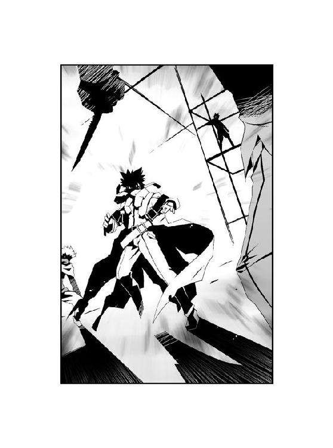
キンッ、と大助の鼓膜の奥で耳鳴りがした。
いつの間にか、風の音が止んでいた。大助が脚を踏みしめる音も、聞こえない。
それどころか、今まさに目の前にいる男たちの気配すら感じない。
「気配を消すことができる特殊型か......ちっ、いちど俺に気配を悟らせたのは、油断させるためだったってことか」
電話の少女の言う通り、大助のミスだ。尾行している者がいることには気づいていたのに、いつの間にか気配が消えたことで周囲に対する警戒を怠ってしまった。
しかも不意を突かれるだけならともかく、柊子との会話の内容まで盗み聞きされてしまった。
〝みんみん〟を確保したことだけでなく、大助の姉の存在まで知られてしまった──。
「堀崎梓は、どこだ」
屋根の上の人物が、繰り返した。
あらゆる音が消えた空間で、その場にいる人間の会話だけが聞こえる。
音を操る能力......いや、聞こえる音を特定させる、精神汚染タイプか......？
内心で相手の能力を探りつつ、逆に訊き返す。
「お前らは、なんだ？ 〝みんみん〟を追ってきたのか？」
「堀崎梓の居所を訊いている」
「中央本部の殲滅部隊......とやらか？ 千晴と関係があるのか？」
殲滅部隊とは特別環境保全事務局の中央本部が、非公式に管理しているといわれる暗殺部隊のことだ。部隊の正式な名称や規模などは不明だが、これまでに中央本部が不穏な動きを見せるたびにその存在が見え隠れしている。
「......」
「答えない、か」
無音の空間に、緑色のかっこう虫が舞い降りた。
大助は制服の腰に隠したホルダーから、大型の自動式拳銃を抜き放つ。
「答えない以上──敵だな」
大助の呟きに呼応するように、肩にとまったかっこう虫の躰が弾けた。無数の緑色の触手が大助の身体に突き刺さり、浸透するように身体と同化する。緑色の模様を浮かべた腕の中で、拳銃とかっこう虫の顎が一体化した。
大助を包囲した黒マスクたちに、緊張が走ったのが分かった。大助の放つ殺気に耐えられなくなったのか、一匹の巨大な〝虫〟が襲いかかった。
「馬鹿野郎......！ 手を出すなっ！」
屋根の上の男の叱咤が、銃声でかき消された。
大助が放った拳銃の弾丸が、身長の数倍はある巨大な〝虫〟を粉々に打ち砕いていた。
直後、頭の中を大音量のノイズが襲った。すさまじい雑音が、大助の平衡感覚を失わせる。
「やむをえん......今のうちに仕留め──」
指示を出そうとした男の口を、大助の左手がふさいで遮った。
人間離れした脚力で、大助が一瞬にして屋根の上に飛び移っていた。
「聴覚を操るのか。感覚遮断系の能力は、戦い慣れてる。俺には効かないぜ」
拳銃のグリップで、男を殴り飛ばす。
マスクの男が吹っ飛んだ直後、周囲に聞こえる音が蘇った。宿主が気絶したことで、〝虫〟の能力も解除されたようだ。
周囲に大きな影が落ちた。
頭上から平たい〝虫〟が、大助に向かってのしかかった。屋上全体を覆うほどの巨軀が、そばに放置されていたクレーンごと大助を押しつぶす。
だが直後、巨大な〝虫〟が甲高い咆哮を上げた。
ビキビキという硬いものが割れる音が響くにつれ、〝虫〟の鳴き声も高まっていく。
とうとう鳴き声が、断末魔へと変わった。
大助が力ずくで、真っ二つに〝虫〟の躰を引き裂いていた。息絶えた〝虫〟が、虚空に溶け込むように消えていく。
全身に〝虫〟の体液を浴びた大助が、周囲を見渡す。
「二匹、逃がしたか......」
荒れ果てた屋上に、すでに残りの黒マスクたちの姿はなかった。大助の身体に付着した体液が、染み一つ残さず消え去っていく。
「今の連中が殲滅部隊だったとしたら......千晴のことも、中央本部に知られたことになるな」
唇を嚙みしめる大助。
──〝思い出しました〟。
姉の言葉が真実ならば、大助は行動に移らなければならない。
「千晴──」
虫憑きになってから現在まで、戦いに明け暮れてきた。
今では悪魔と呼ばれ、最強の虫憑きとしての称号でもある一号指定に認定されている。相手が誰であろうと負けるつもりはないし、どんなに厳しい戦闘でも生き残ってきた。
だが今回ばかりは、絶望的な結末しか思い浮かばなかった。
自分一人の力では、決して目的を達成することができないこともまた、知っている。
だが、それでも──他の誰でもない、大助がそれをしなければならない。
「......」
頭からゴーグルを外し、地面に放り捨てる。
ゴーグルには局員の位置を知らせる機能が備わっている。──特別環境保全事務局に自分の居場所を知られるわけにはいかない。大助の目的を察したら、中央本部はおそらく彼を妨害するだろう。かといって、東中央支部を巻き込むわけにもいかない。
銃声が鳴り響いた。
粉々に破壊されたゴーグルを背に、大助は『ＵＲＢＡＮ』をあとにした。
1.02 千晴 Part. 2
＊
ゆらゆら揺れて。
ふわふわ浮かぶ。
幼い薬屋千晴の、そんな平穏な日々に割り込んできた闖入者。
それは自らを〝始まりの三匹〟のうちの一匹、アリア・ヴァレィと名乗った──。
『はい、せーの』
市立紫央小学校のグラウンド脇に設置された体育倉庫内で、面倒そうな少女の声が響いた。
──否。
その声は、倉庫の中にいる一人の女子児童以外には聞こえなかったはずだ。
「うん、やるよ」
紫央小学校の六年三組に所属する薬屋千晴は、丸められた体操マットへ手を伸ばした。足元には彼女の持ち物である赤いランドセルが転がっている。
「うあー」
指先に伝わった奇妙な感触に、千晴は思わず間の抜けた声を上げる。
千晴の細い指が、分厚いマットに突き刺さっていた。
いや、突き刺さっているのではない。埋まっている、という状態とも異なる。
『はいはい、よくできまちた。それがあたしの同化能力でちゅよ、よかったでちゅねー』
同化──つまり、体操マットと千晴の指が一つになっているのだ。説明ではブンシコウゾウがどうとか、千晴の身体を構成するサイボウソシキとやらを割り込ませるとか、そのようなことを言われたが、もちろん千晴の頭ではちんぷんかんぷんだ。
「むっ」
千晴は頰を膨らませ、マットから手を抜いた。能力を使った状態だとマットはゼリーのような、少し抵抗がある程度のやわらかい感触に変わっていた。最初は不気味な感触だったが、慣れると意外とキモチが良いかもしれない。
「なんでそんな言い方するの？ うまくできたら褒めてあげないとダメなんだよ」
後ろを振り返り、千晴は不満を漏らした。
彼女の視線の先には、誰もいない。体育倉庫の中にいるのは、千晴一人だけである。
『褒めたじゃん！ ていうか、そんなのはできて当たり前なんだよ！ あたしと一つになった以上、身体の一部を他の物質と同化させるのは呼吸をするのと同じくらい簡単なの！ これが身体全体となると、また別問題なんだからね！』
「うー」
姿の見えない声は、しかし千晴の耳元でやかましいくらいはっきりと聞こえた。
千晴と同じ声。
千晴と同じ口調。
それなのに千晴とは似ても似つかない、意地悪な性格。
数日前に自宅の近くの空き地で〝碧い蛹〟を見つけ、それに触れた途端、〝そいつ〟が千晴の中に潜り込んできた。
〝そいつ〟は自らをアリア・ヴァレィと名乗った。
『っていうか、同化能力をちっとも怖がらないってどうなの？ あたしが居着いた時だって、そうだよ！ 〝あたし、おかしくなっちゃったの？〟とか〝幽霊に取り憑かれたー！〟とか、最初に怖がってもらわないと、イジメがいがないじゃん！ 責任とってよ！』
千晴は同世代の少年少女と比べると、恐怖感や危機感といったものが薄いところがあった。好奇心が強く、興味がわいたものを追いかけては、周りの人々に止められる。そんな彼女を周囲はよく〝危なっかしい子〟と呼んでいた。
「え......？」
千晴は青ざめた顔で、壁に背中をぶつけた。ガタン、と運動会用のフラッグが倒れる。
「アリアって、幽霊だったの......？ そんな......怖いよお」
『幽霊じゃないって知ってるクセに！ なんだよ、その無駄に迫真の演技！ 逆に虚しくなるよ！ きー！』
「責任とれって言ったの、アリアじゃん。アリアは怒りっぽいね。しつこいし」
怖がる芝居から一転、千晴は唇を尖らせてマットの上に座った。
『それも千晴のせいだって説明したじゃん！ もう忘れちゃったの？』
アリア・ヴァレィの声が、猛抗議する。
そう、千晴はこれまでにアリアから多少の説明を受けていた。
「忘れてないよ。えーと......人間の夢を食べちゃう〝虫〟っていうのがいて、取り憑かれた人は虫憑きっていうんでしょ？ それでアリアは虫憑きを生んじゃう〝始まりの三匹〟とかいう人たちの一人で」
『そうそう、あたしってば超コワくて悪いヤツでしょ？ さあ、思いっきり怖がっていいよ！』
「他の二人と違って、アリアは自分で移動できないから、誰かの身体の中でキョウ......キョウ......キョウセイ？ することで生まれ変わっていくんだったっけ」
『すンごい無視された！ アリア、ショック！ ......はあ、でもだいたいそんな感じだよ』
「そして生まれ変わるたびに、性格が変わるんだよね？」
埃で汚れた天井を見上げ、千晴は確認する。いくぶん疲れた様子の声が返ってきた。
『そう、アリア・ヴァレィとしてのオリジナルの人格は、もうとっくにこの世から消滅してるんだよ。残ってるのは、ただの本能。存在しない残像。今のアリアとしての人格は、宿主──つまりキミの記憶と感情をもとにして造られた鏡像、コピーにすぎないんだよ』
「......むずかしくて、分かんないよ」
『いいよ、分からないままで。どうせ、役割を終えたら、キミはあたしのことなんて忘れちゃうんだから。〝虫〟のことも忘れるし──自分が虫憑きにした人間のことも忘れちゃうんだ。アリア・ヴァレィに関わったことは全部、何もかもね』
アリアの声が少し寂しげに聞こえたと言ったら、彼女は怒るだろうか？
千晴は両膝を抱きしめ、うつむいた。
「どうして......忘れちゃうの？」
『そういうふうになっちゃった、としか言えないよ。でもあたしは今のエルやディオ......他の〝始まりの三匹〟とは違って、常に眠ってるような状態だからね。あたしは誰にも知られずに彷徨う夢──これは願望とかじゃなくて、眠っている間に見る夢っていう意味だけど、とにかくずっと夢を見てるようなものだから。眠りから醒めれば、夢のことなんて忘れて......夢はまた、別の人間を求めて彷徨う。キミはあたしの眠りに巻き込まれたようなものなんだよ』
「アリアはずっと、眠ったままなんだね」
千晴の呟きに、アリアは答えなかった。
沈黙が落ちた体育倉庫に、グラウンドから野球部の掛け声が飛び込んだ。紫央小学校で部活動という形で活動しているのは、野球部とサッカー部だけだ。それも少子化の影響を受けて、近年中に別の小学校に統合されることに決まっている。
『ホントにさあ、困るんだよね』
アリアの声が、唐突に言った。
『もっとこう怖がったり......恨んでもらわないと、やりにくいったらないんだよ』
「恨む？ どうして？」
『どうしてって......全部、忘れちゃうんだよ？ あたしがキミに宿ったっていうことは、キミの近くに美味しい〝夢〟があるってことで──キミにはそれが誰の夢なのか、分かってるクセに！ キミは彼のことも忘れちゃうんだよ？』
「忘れないもん」
はっきりと言う。
千晴は忘れない。決して、忘れない。何があろうとも。
『ムリだね』
アリアが一言で切って捨てた。
『あたしと共存してる状態でいるかぎり、千晴からはずっと〝飢え〟が消えることがないんだ。そして飢えている以上、それを満たさないかぎり千晴は消耗していく。いずれは必ず──』
「そうかな？」
『そうだよ！ 今までにアリア・ヴァレィを宿してきたヤツらだって、みんなそうだったんだから！ 絶対、ムリに決まってるね！ ムリだよ、ムリムリ！』
千晴はマットから立ち上がった。
そろそろ家に帰らないと、母を心配させてしまう。
体育倉庫の扉を開けようとして、手を止めた。──思いつき、先ほどの感覚を思い出すべく意識を集中させる。
取り替えっこをするように──あるいは一から別の自分を再び組み立て直すように、千晴がもう一人の別の千晴と入れ替わったのが分かった。
千晴の髪が、風に煽られたように波打った。髪の色が一瞬にして、碧く染まる。
『あ、あれ？ 千晴......さん？』
〝アリア・ヴァレィ〟へと変わった千晴が、扉へと腕を伸ばした。
音もなく、扉の中へと指先から千晴の身体が吸い込まれた。顔が扉を通過する時には思わず息をとめたが、その必要もなかった。
あっという間に、千晴は閉めたままの扉を通過していた。
「えへへ、便利だね、コレ」
千晴が笑顔を浮かべた時にはすでに、髪はもとの黒色に戻っていた。
『さっき、はじめて同化を覚えたばかりだったような......な、なんだよ、もう！ 隠れて特訓とかしてたな！ あ、でも、あたしに隠れてって、できるわけが......あ、あれ？』
千晴は鼻歌を口ずさみながら、グラウンドに沿って歩いていく。背負ったランドセルは地面に置いておいたせいか、ひんやりと冷たかった。
ゆらゆら揺れて。
ふわふわ浮かぶ。
そんな千晴の幸福な毎日は、変わらない。
アリア・ヴァレィという奇妙な隣人が現れたところで、千晴の日々はずっとこのまま、いつまでも続いていく──。
『あーあ......まず最初に、この世に誕生したはじめての同化型の虫憑きの話をしたのは、失敗だったよ』
アリアの声は後悔よりも、諦めの気持ちが強いようだった。
『そのせいでキミはそれ以上のこと、たとえば〝始まりの三匹〟が生まれた理由なんて聞こうともしないし。なにより──今、虫憑きを生むことを嫌がるようになっちゃったんだね』
校門に向かって歩きながら、千晴は微笑した。
『ムキになって脅かしてやろうと思って話したはいいけど、逆効果だったよ。ある意味じゃあキミはとっくに怖がってたんだね』
はじめてアリア・ヴァレィになった者が生んだ、最初の同化型の虫憑き。
千晴はアリアから、その人物のことを語り聞いていた。
「最初のアリアが虫憑きにした人......悩んで、傷ついて、戦って、苦しんで、いろんなものを失くして、夢を食べられて......死んじゃった人。──そんなの、あたしは絶対に生んだりしたくないもん」
アリアのため息が、聞こえたような気がした。
「アリアだって、ずっとあたしの中にいればいいじゃん。そのほうが楽でしょ？」
『ずっと......ね。──ずいぶん懐かしくて、ずいぶん難しい注文だよ、それって』
「簡単、簡単」
気楽に言う千晴に呆れかえったのか、アリアが沈黙した。
正門にやってきたところで、千晴は世界で一番見慣れた顔を見つけた。
男子用の黒いランドセルを背負った、千晴よりも少し身長が低いくらいの男の子だ。これといって目立つ要素のない少年だが、睨むような目つきで正面を見据えている。彼はいつだってそうやって物を見ているような気がする。
薬屋大助。
千晴の、たった一人の弟。
「大──」
声をかけようとした千晴の視界を、数人の男性が駆け抜けていった。大助と同じくらいの背丈の少年たちは大声で笑いながら、大助のランドセルを蹴飛ばして門を通り抜けていく。
後ろから蹴られた大助が、地面に転がった。しかし少年たちは振り返って笑うだけだ。
「こらーっ！」
千晴が目を吊り上げて怒鳴ると、少年たちは余計に笑い声を上げた。千晴に向かって舌を出し、校門の外へと走り去っていく。
「この、クソガキぃ......ねえ、アリア！ あいつらを殺す必殺技とかないの？」
『千晴さん、性格変わってます......』
千晴が急いで駆けよると、大助がむくりと機械的に起きあがった。千晴のことは一瞥しただけで、無言で校門に向かって歩いていく。
「あ、ちょっと、大助......！」
千晴は後ろから追いすがり、服についた砂を払い落としてやる。
「なんなのよ、あのバカたちは......！ 大助、ケンカでもしたの？」
「うるさいな。なんでもねーよ」
大助がぶっきらぼうに言い放ち、迷惑そうに顔をしかめた。しかし千晴は動じない。
「困ったことがあったら、なんでも言ってよね！ あいつらの名前、なんていうの？ あたしが今度、きっちりシメといてあげるよ！」
「なんでもないっつってるだろ！ 触るなよ、ウゼーな！」
「ウザくないよ！ 普通だよ！」
『すいません、ちょっと普通じゃないと思います......』
アリアの声は、大助には聞こえない。大助が小走りに千晴から離れ、少し前を歩いていく。
いつもなら追いすがって、問いつめるところだ。
だが今の千晴は、我慢して少し距離を置いて歩く。
微笑を浮かべながら。
近づきたくても、必要以上に近づかないよう自制する。
『それにさ、千晴。辛くない？』
アリアが複雑な声音で言った。
『目の前に──とびきり美味しい〝夢〟があるってのにさ』
大助の背中から、感じ取る波動。
甘く、濃厚で、吸い寄せられるような香り立つ夢。
それを弟が、発していた。
それを姉の千晴が、欲していた。
「......」
千晴の髪が、ざわめいた。
ほんの一瞬だけ、髪に碧色の波紋がさざめいた。
気を抜けば、このまま後ろから大助に抱きついてしまいたかった。
抱きついて彼の首に手をまわし──彼の夢を──この口から──。
だが千晴はこれ以上、大助に近づかない。
失いたくないから、手を伸ばさない。
『べつに構わないけどさ、無駄な努力をするぶんには』
アリアが嘆息した。
大助の背中を見守る千晴の頰に、何かが触れた。
『でもぐずぐずしてると、欲張りな誰かさんに横取りされちゃうかもよ──』
怪訝に思って頰に触れると、指先に何かがついていた。
紫色に輝く粒状のもの。
好奇心にまかせて追いかけた経験があるため、それが何なのか分かった。
それは──蝶々の鱗粉だった。
＊
ホテルのリビングは、緊張感をともなう静寂に包まれていた。
水着姿のままソファに座った千晴を、茶深と綾が血の気を失った顔で凝視していた。
「......と、ここまでは思い出したんだけどね」
千晴から、茶深が慎重に遠ざかった。
「......」
鋭い目つきをした綾が、茶深と千晴の間に割って入る。細い左腕には、先ほどまで缶を食べていたゴミムシが張りついている。
「あ、大丈夫だよ。もうあたしの中に、アリアはいないから。力も何にも残ってないよ」
気楽に笑う千晴に対し、しかし茶深は警戒を解かない。
「アンタがかつてアリア・ヴァレィ、つまり〝三匹目〟だった──そんなウソくせー話を信じろっての......？」
「〝三匹目〟？ あ、思い出した。特環はアリアのことをそう呼んでるって聞いたっけ。信じてくれたから、そんなリアクションとってるんじゃないの、茶深ちゃんたち？」
千晴は行儀良くソファに座ったまま、口を尖らせた。話を信じてもいないのに露骨に怖がられているとしたら、失礼な話だ。
「つまりあの〝かっこう〟を虫憑きにしたのが、姉であるアンタだとでもいうわけ？」
「そこらへんの記憶はまだ曖昧だけど......大助って同化型の虫憑きでしょ？」
「......そうよ」
「ね。あたしが、大助を虫憑きにしたの。それは間違いないよ」
膝の上で組んだ手を、見つめる。
千晴が大助を虫憑きにした。
記憶はまだ不完全だが、感触は今でもはっきりとおぼえている。
あの、この世のものとは思えない甘美な味──。
それを一口で頰張る、最高の瞬間──。
夢を喰われ、人々に恐怖され、救いのない人生に、千晴が実の弟である大助を追い込んだ。
「きっと大助は、あたしのことを憎んでるよ。虫憑きになって辛い目に遭ってると思う。痛い思いをしてると思う。それもこれも全部、あたしのせいなんだよ。それどころかあたしは何もかも忘れて、幸せに過ごしてて......大助から見れば、居場所を知ったらすぐにでも殺してやりたいくらいだと思う」
言い、千晴はにっこりと笑う。
「だからね。あたしは大助に会って──殺されてあげるの」
身構えていた茶深が、顔色を変えた。額に手をあて、考え込むようにぶつぶつと呟く。
「......作り話にしちゃあ......いや、そもそもこんな......〝三匹目〟がそうやって虫憑きを生んでから、宿主の記憶を消した上で移り渡っているとしたら、今まで発見報告が皆無だったのも辻褄があうじゃねーの......アリア・ヴァレィ......同化型を生む原虫指定......まさか......」
千晴の説明を反芻するように呟いていた茶深が、厳しい顔つきで千晴を睨んだ。
「くだらねー監視任務だとばかり思ってたけど......とんでもねー。千晴も虫憑きだったっていう状況より〝大物〟が釣れたっての？ ある意味、〝ふゆほたる〟よりも強力なカードだわ」
綾を押しのけ、茶深が千晴の前に立ちはだかった。
「もし、アンタの言うことが本当だったなら、の話だけどね」
「疑い深いなー。茶深ちゃんらしいっていえば、茶深ちゃんらしいけど」
「他に、思い出したことは？ 〝大喰い〟や〝浸父〟の能力は？ ──いいえ、そんなことは後回しでいーわ。私が知りたいのは、なにもかも全ての核心」
茶深に目配せされた綾が、千晴の正面に進み出た。左腕にしがみつかせたゴミムシの口器を、千晴の鼻先につきつける。
「〝虫〟とは何か──かつて〝始まりの三匹〟だったなら、知らねーとは言わせねーわよ」
鋭い茶深の視線と、感情を感じさせない綾の視線。二人の眼差しが千晴を追いつめる。
だが千晴は照れ笑いとともに、頭をかいた。
「えーとね。実はゼンゼン知らないんだ」
「──綾」
「頭を半分くらい削ってみればいいかしら」
「えっ、えっ、何？ きゃー！ なんか〝虫〟の口からヘンな臭いがするよ！ なにが出てくるの？ 頭を半分なくしたら、死んじゃうよっ！」
慌てる千晴の頭を、茶深が両手でつかんだ。顔を寄せ、真剣な表情で言う。
「こっちはふざけてる時間なんて、ねーのよ。何かに使えるかもと思ってアンタを助けたせいで、私はもう特環からも逃亡の身なんだから。いつ刺客に殺されるとも分かんねーの。後戻りはできねーの。生き残るには、勝つしかねーのよ。あのくそったれな組織、特環にね」
「ち、茶深ちゃん......」
「特環に勝つためには、連中よりも核心を摑む必要があんのよ。〝虫〟とは何か。虫憑きとは何か。それを知って、奴らを出し抜く。アンタにはその道具になってもらう。私の手駒になってもらう。これは決定事項よ。イヤとは言わせねー」
身を乗り出して問いつめる茶深に対し、しかし千晴は困惑する。
「協力したいのは、あたしもヤマヤマなんだよ。茶深ちゃんのおかげであたしは大助のことを思い出せたんだし、〝かなた〟からも助けてもらったんだし。でもさっきも言った通り、あの頃のあたしはアリアの話を、あんまり聞きたくなかったんだよ」
「それを信じろっての？」
「ほ、本当だよ！ でも、もっと色々と思い出すことができたら、茶深ちゃんの役に立つことも分かるかも......？ アリアとはたくさんお喋りしたし。思い出したらすぐに、茶深ちゃんに教えるよ。それじゃ、ダメかな？」
上目遣いに、茶深を見上げる。メガネをかけた少女は不満そうだった。
「......ちっ、しょーがねーわね。私も怪我で今は派手に動けねーし、しばらくはおとなしくしてるしかねーわ。さっさと思い出さねーと、追い出すわよ」
「う、うん。それで、あのね、茶深ちゃん」
「なによ」
「今度は、茶深ちゃんが教えてよ。大助が今、どこで何をしてるのか」
千晴が真剣な表情でたずねると、茶深が顔つきを変えた。
「アンタ、まさかこの私と、取引しようだなんて考えてんじゃねーでしょーね。私が教えないと、そっちも〝虫〟についての情報を渡さないってんじゃ──」
「ち、違うよ！ 誤解だよ！ あたしがまだちゃんと思い出せないのは、本当だよ！」
「......」
「うわ、すっごい疑いの眼差しだね、茶深ちゃん！ 取引だなんて、あたしがそんな難しいことできる人間に見えるの？」
必死に弁明する千晴。茶深が、嘆息した。
「弟のことを知って、弟に会って......それで、殺されるために？」
五年前に離ればなれになった後の大助を、千晴は知らない。
虫憑きになってからの大助を知らない。
彼が今、どのような人生を送っているのか。虫憑きである以上、苦しい思いをしているはずだ。千晴はそれを知らなければならない。
大助の苦痛を知った上で、千晴は彼の手で断罪されなければならない──。
「......うん」
微笑する。
もし千晴にも夢があるとしたら──こうなりたいと望む未来があるとしたら、それこそが千晴の願い。
自らの幸せを望む資格など、千晴にはない。
そんな千晴の笑顔を見た茶深が、顔を歪めた。
「......気に入らねーわ」
「え？」
「弟に殺してもらおうだなんて、自分の死に方を勝手に決めてんじゃねーわよ。私の手駒になった以上、私の許可なく死んでもらっちゃ困んのよ。こっちは使い捨ての役立たずなんていらねーの。最後の最後まで舞台に立っていられるよーな、上等な手下しかいらねーのよ」
死ぬな、とそう言っているのだろうか？
言葉は粗いが、千晴には茶深がそう言っているように聞こえた。
「まあ、アンタの場合は〝かっこう〟と会う以前に、他の虫憑きから殺されねーように注意しねーと生きてることすら難しいでしょーけどね」
「ど、どういうこと？」
「〝かっこう〟──薬屋大助がそれくらい、たくさんの虫憑きに恨まれてるってことよ」
千晴は目を見開いた。
「アイツは現時点でおそらく、最も多くの虫憑きを欠落者にしてきた最悪の虫憑きよ。まさに虫憑きの天敵、冷酷な悪魔。あのクソ野郎を怖れてねー虫憑きは、一人もいねーわ」
茶深が何を言っているのか、誰のことを言っているのか、理解できなかった。
だが彼女が薬屋大助の説明をしているのだと気づくと、反射的に千晴は声を張り上げる。
「そ、そんなわけないよ！ 大助は人の痛みが分かる良い子だよ！」
「......アンタの弟バカっぷりはこの際、関係ねーわ。五年前のアイツがどうだったか知らねーけど、少なくとも今の薬屋大助は良い子でもなんでもねーの。むしろこの世で最もタチの悪い殺戮者扱いだわよ」
呆然とする千晴。
向かいのソファに座り、茶深が語り出した。
約四年ほど前、特環の東中央支部のクーデターに荷担した者を一人残らず欠落者にすることで、同支部の造反を鎮圧したこと。
さらに〝ふゆほたる〟という恐るべき虫憑きを欠落者にし、捕獲したこと。
その後も特環の局員として、数々の虫憑きらを捕獲してきたこと。
そして昨年のクリスマス・イヴ、〝むしばね〟との決戦。〝むしばね〟のリーダーであったレイディー・バードを殺害し、その上で〝ふゆほたる〟を再捕獲したこと。
数え切れない虫憑きたちの夢を奪い、終止符を打ってきた悪魔。
それが薬屋大助──火種一号の最強の虫憑き、〝かっこう〟だと茶深は言う。
「誰もがアイツを憎んでる。でも誰一人、アイツに敵わない。今まで何度も死ぬような場面に立ち会ったはずなのに、〝かっこう〟はことごとくそれらを乗り切ってきた。私みたいに地方にいる下っ端の虫憑きにとっちゃ、伝説ですらあるヤツなのよ。薬屋大助は虫憑きをめぐる戦いの、まさにド真ん中を突っ走ってきたよーなヤツよ」
淡々と説明する茶深の表情は、口調とは裏腹に羨望と嫉妬が入り交じっていた。
「でも私が思うに、あの悪魔はこれまでに何度もこの国そのものがどーにかなっちまいそーな局面を打破してきた。それもたった独りで。東中央支部のクーデター然り。〝ふゆほたる〟然り。レイディー・バード然り。──買った恨みが多すぎて、誰もそのことを認めたがらねーでしょうけどね」
「......」
「そーいう意味じゃ、特環からしてみれば今までは必要不可欠の存在だったはず。それなのに最近は中央本部との衝突が表面化してきたわね。......レイディーを倒して〝むしばね〟を弱体化させたことで、もう用済みってことなんだと思う。最大の敵を倒した今、強力すぎる〝かっこう〟はむしろ危険で邪魔な存在......でも東中央支部がバックにいる以上、迂闊に手をだすわけにはいかないのが現状......」
茶深の口から出る言葉は、いつの間にか独り言になっていた。
「大助が──」
身体の奥から、震えがこみ上げた。
あたしのせいで──。
頭の中が真っ白になっていた。目眩がして、ぐらりと頭が揺れる。
「ち、ちょっと！」
茶深が慌てて千晴の肩を支えた。
急に室内の気温が下がったように感じた。寒気がこみ上げ、震えが止まらない。
五年前にアリアの話を聞き、怖れていたことが現実となっていた。
いや、そんなものは比ではない。
子供心に恐怖した、たった一人の虫憑きを生むことの恐ろしさ。
あらゆる悪夢のような現実が、全て千晴の手によって──。
「何もかも自分のせいだ、なんて考えてんじゃねーでしょうね」
「......っ！」
千晴はビクリと肩を揺らした。茶深が顔をのぞきこみ、怒りの表情で睨みつける。
「思い上がってんじゃねーわよ。アンタの話がもし本当で、〝かっこう〟を虫憑きにしたのがアンタ自身だっとして......アンタが負うべき責任は、そこまでなのよ。その後のことは虫憑きになった〝かっこう〟の責任。アイツ自身が決めて、アイツ自身の手でしてきたことなのよ」
「だ、だって......！ あたしが大助を虫憑きにさえしなければ──」
「それが思い上がりだってのよ。勝手に主役ぶって、悲劇のヒロイン演じてんじゃねーわよ」
「そんなこと、思ってないよ！」
「確かに全部ひっくるめてアンタのせい──そう考える連中もいるでしょーよ。いえ、アイツに恨みを抱いてるヤツらのほとんどが、そう思うのは間違いないわね。どいつもこいつも根性ナシで甘えてんのよ。自分が舞台を降りたのを、誰か他の人間のせいにしてるんだわ」
茶深が千晴の肩を摑んだまま、顔を歪めていた。
千晴は彼女がなぜ怒っているのか、さっぱり分からない。何に対して敵意を剝き出しにしているのか、分からなかった。
「自分が負けたのは、〝かっこう〟のせい。だから〝かっこう〟を虫憑きにした、千晴のせい。それじゃあ次はなによ？ 千晴を選んだ〝三匹目〟のせい？ 〝三匹目〟を生んだのは？ はっ、どこまで他人のせいにすれば気が済むってゆーのよ」
横で綾が小さく頷いたことに、茶深は気づいただろうか。
「自分の夢と戦うことを忘れた虫憑きから、惨めに負けて消えていくんだわ」
茶深が憎悪すら込めた口調で言う。
「それでも目をそむけ続ける連中こそ、くそったれだわ。私はそんな観客の目なんていらない。全ての始まり、〝虫〟を生んだ何かを私がぶっ壊してやるわ。そうすれば、誰のせいにもできねーでしょう。くだらねーよそ見なんか、させてやんねーわ。ざまーみろっての」
『ＵＲＢＡＮ』で自らを卑怯で汚くて弱いと叫んだ茶深が、拳を握りしめていた。
大胆不敵で大それた、茶深の野望。
だがもしそれが叶った時。
救われるのは茶深自身よりも、むしろ──。
千晴は漠然とした思いを、しかし口には出せなかった。言葉にしたら茶深は否定すると分かっていたからだ。
「ぶっ壊す──あるいは〝かっこう〟も、私と同じことを考えてやがるのかもしれねーわね」
「......え？」
「私が知ってる〝かっこう〟は所詮、伝聞にすぎねーってことよ。アイツが何を考えて、何をしようとしてんのか、本当のところを知らねーのよ。私みてーな雑魚キャラにあんな大物は計り知れねーって言われたら、それまでだけど」
スイッチが切り替わったように、茶深が冷静な表情を見せた。
「特に納得がいかないのは、レイディーを殺したことよ。今まで虫憑きは必ず欠落者にしてきた〝かっこう〟が、どうしてレイディーだけ......葉芝市の被害がとんでもないのも、気になるのよね。私は自分の手で摑んだ情報しか信じない。もしかしたらレイディーは〝かっこう〟が殺したんじゃなく──」
茶深の言葉を聞いて、千晴は表情を輝かせた。
「本当は、大助は今でも優しくてめちゃくちゃ良い子かもしれないってこと？」
「......いや、それは正直、あり得ねーと思うけど」
「大助に会えば、分かるよね？」
「完全に記憶を取り戻すまでは、私が会わせねーわよ。でもそのことを差し引いても、会うのは困難でしょーね。相手は火種一号の虫憑き。居場所を探るだけでも、どれくらいの時間と労力がいるか......」
「じゃあせめて、大助と直接会ったことがある人は？ 大助のことを知ってる人から、大助のことを直接聞けば本当のことが分かるよね？」
身を乗り出す千晴に対し、茶深はしかめっ面だ。頰杖をつき、露骨に不機嫌な顔になる。
「あのね。こっちはわざわざアンタのワガママを聞いてやる義理なんて──」
「大助のことがはっきりすれば、昔のことも思い出すよ！ うん、マチガイナイ！ 急にそんな気がしてきたよ！」
「アンタ......やっぱり取引しよーってんじゃねーの」
「手伝ってくんなきゃ、思い出しても教えてあげないよ！」
頰を膨らませ、そっぽを向いてやる。すると茶深が、目を細めた。
「それはさっきと言ってることが違うわね。つまり、裏切りだわ。──綾」
「手足は四本あるし、どれか一本くらいなくなっても大丈夫な気がするのよ」
「ウソだよ！ 冗談だよ！ ごめんなさい！」
詰めよる綾に向かって両手を拳げながら、千晴は茶深に懇願する。
「それじゃあ、聞くだけ！ たとえば、どんな人がいるのか、教えてよ。それ以上は、何もしないから、どんな人がいるのか話をするだけ。ね？ ホント、それだけ！」
嘆息し、茶深が綾を手で制した。気のせいか少し残念そうな綾を尻目に、茶深は「ふむ」と考え出した。彼女自身も何か思うところがあるのかもしれない。
「〝かっこう〟と面識のある人間......東中央支部の幹部クラスなら当然、知ってるでしょーね。でもコンタクトをとる難しさは、〝かっこう〟とそう変わんねーし。他には昔、東中央にいたことのある〝霞王〟、〝ねね〟、〝Ｃ〟......は今じゃ全員、中央本部の大物になってる。ある意味、〝かっこう〟自身と連絡をとるより命がけだわ。〝コノハ〟にはできるだけ中央本部内では動き回らせたくねーし」
当たり前だが、茶深の口から次々と出てくる名前はどれも、千晴の知らない名前だ。しかもことごとく却下されていく。
「何かと因縁がある一号指定ども......レイディーは死んじまってるし、ハルキヨは──考えただけで焼き鳥にされそうだわ。例の女はどこにいるかも探し出せてねーし......はっ、なによ、このそうそうたる顔ぶれは。〝かっこう〟が邪魔しなけりゃ、どいつもこいつも一人で国をぶっ潰せそうな連中ばかりじゃねーの」
皮肉っぽい笑みを浮かべて指折り数えていた茶深が、顔つきを変えた。
「......？ どうしたの、茶深ちゃん？」
「いるじゃねーの......同じ一号指定で、とてつもないのが。かつての特環をして手がつけられなかった、薬屋大助が〝かっこう〟として怖れられるきっかけになった虫憑き。一度は欠落者になりながらも蘇生した上で、今も逃走中の化け物が......！」
「ば、化け物......？」
逃走中という単語からは、指名手配中の脱走犯のようなイメージしか浮かばなかった。大助と何度となく相見えているようだが、仲が良いようには聞こえない。
茶深が千晴を見据え、はっきりと言った。
「アンタも会ったことがあるわ。それもつい最近ね」
「......へ？」
「秘種一号指定虫憑き、〝ふゆほたる〟。──そいつの本名は、杏本詩歌よ」
千晴の思考が一瞬、停止した。
杏本詩歌という名を思い出すのに、時間はかからなかった。
──えっと......杏本詩歌です。
西遠市で偶然に出会い、切符代を借りた少女だ。
彼女と会ったのは、最近どころではない。つい昨日のことである。
銀色の塔、『ＵＲＢＡＮ』。その内部で繰り広げられた激しい戦闘のさなかで、なぜか詩歌が現れた。燃えさかるロビーに唐突に現れた彼女を、そういえば茶深が〝ふゆほたる〟と呼んでいたことを思い出す。千晴は茶深がどうしてあのタワーで他の虫憑きらと戦っていたのか、まだ説明を受けていない。
「詩歌ちゃん......？ え？ 〝ふゆほたる〟って、詩歌ちゃんが？」
あどけない顔をした、可愛らしい女の子だった。西遠駅で会った時は、こんな妹が欲しいなと思ったほどだ。千晴は反射的に言い返す。
「そんな......そんなの、ウソだよ！ 詩歌ちゃんは優しくて可愛い、良い子だよ！」
「なによ、アンタの弟バカは他人にも伝染するわけ......？ ──良い悪いじゃねーのよ。恐ろしい力を持ってることが、問題なの。見た目に騙されんじゃねーわ。あの女は冗談抜きで、虫憑きの中でも最強に等しい力を持ってんのよ。だから私もアイツを狙って、『ＵＲＢＡＮ』で戦ったんだもの。......失敗したけどね」
茶深が苦々しく言い放った。千晴は驚く。
「力が強いってだけで、詩歌ちゃんを狙うの？ そんなの、ダメだよ！ 茶深ちゃんは良い子だって信じてたのに、ショックだよ！」
「落ち着けっての。それと人を勝手に良い子呼ばわりするんじゃねーわ。──力が強いってだけで狙われるのが当然なのよ。でもそれだけじゃない、〝ふゆほたる〟は欠落者から蘇生した唯一の虫憑きなのよ。あの女を手中に収めるってことはつまり、虫憑きに関わる全ての主導権を握るってこと。今の世界がそうなっちまったのよ」
「そんな......」
「それとアンタ、一番大事なところから目をそむけてんじゃねーわよ。──そんな優しくて可愛い良い子を、アンタの弟は二度もうむを言わさず捕獲してんのよ」
千晴は、絶句した。
見知らぬ赤の他人にすぎなかった千晴に向かって、迷わず硬貨を差し出してくれた少女。
──でも、行きたそうですね。
少し控えめな笑みを浮かべていた杏本詩歌を、大助は二度も傷つけた。
「他の誰よりも〝かっこう〟を恨む理由がある女ね。アンタが〝かっこう〟の姉だと知れたら──私はやっぱり納得いかねーけど、まあ間違いなく殺されるわね。〝かっこう〟について話を聞いても、よっぽどのバカでシアワセ者でもないかぎり、恨み言しか聞けねーでしょうよ」
恨む。
当たり前だ。詩歌には、その権利がある。
「それに〝ふゆほたる〟は今ごろ、〝むしばね〟にがっちりガードされてるでしょーね。いくらなんでも秘種一号の虫憑きにそう簡単に会えるわけがねーわ」
「明日、〝むしばね〟の幹部を集めた大集会があるのよ」
唐突に、横から抑揚のない声が話に割って入った。
千晴は白い顔をした少女を振り向く。
杉都綾。──千晴は茶深から、彼女が〝むしばね〟の一員であると紹介された。
「〝ふゆほたる〟も出席するらしいわ」
テーブルを転がして脚を貪りはじめたゴミムシの頭を撫でながら、綾があっさりと言った。
「はあ？ 聞いてねーわよ、そんな話！ なんで今まで言わなかったのよ、綾！」
「昨夜、姉さんから連絡があったのよ。言ってなかったかしら」
「マジでどーしたのよ、アンタ！ 最近、おかしいわよ？」
「心配してくれるの？」
綾がはじめて嬉しそうな笑顔を見せた。茶深が言葉に詰まる。
千晴は綾に向かってたずねる。
「詩歌ちゃんに......会えるの？」
「〝ふゆほたる〟そのものを奪うのは、もちろんムリでしょうけど。近づくだけなら──」
「バカ言ってんじゃねーわ！ 私はまだ思うように動けねーし......あっちにはアイジスパや他の虫憑きもいんのよ！ それだったら特環に情報を流して襲撃させて、混乱に乗じて〝ふゆほたる〟を狙う手も──」
「ええ、もちろん私は茶深が望まないなら、何もしないわ。でも幹部の他にも大勢、メンバーが集まるそうよ。顔は隠せばいいし、特環が襲撃するには時間がなさすぎると思う。──それにアイジスパとかいう男は、茶深の目では火種三号から二号程度だったんでしょう？ 今の私なら、べつに負けはしないと思うけれど」
さも当然といった口調で言葉を並べる少女に対し、茶深が訝しげに凝視する。
「な、何言ってんのよ？ アンタは火種八号くらいの力しか──」
「どっちにしろ、私は行くことになるわよね。〝ふゆほたる〟の動向は気になるもの。だから千晴に関しては茶深の命令に従うわ」
綾が顔を上げた。じっと正面から茶深を見つめる。
「今までは〝オゥル〟の世話くらいしかできなかったけど、あの猫はもういないわ。でも今の私は役に立つ。西遠市から離れたあとも、置いていかないで。私を使って、茶深」
千晴もまた、茶深を見た。
「茶深ちゃん、お願い！」
たとえ聞けるのが罵詈雑言のみだったとしても。
怒りを買い、命の危険に晒されようとも。
それが大助の歩んできた、本当の道を知ることができるのなら。
千晴はそれを、知りたかった。
「あたし、もう一度、詩歌ちゃんに会いたいよ！」
何も知らないまま、大助と会うわけにはいかない──。
「......アンタたち、自分たちが命令される立場だってこと、分かってないんじゃねーの？」
二人の視線に晒された茶深が、重々しいため息をついた。
1.03 千晴 Part. 3
＊
ゆらゆら揺れて。
ふわふわ浮かぶ。
薬屋千晴の毎日は、そんな感じだった。
父親はいないけれど。
母親はいつも忙しくて、あまりかまってくれないけれど。
弟の大助がいるから、平気だった。
たくさん友達がいる学校に通い、放課後は好きなことをして遊んで、狭いアパートへ帰る。
そんな日々が続いていた。
そして、それはこれからもずっと変わらない。
空に浮かぶ雲のように、ゆらゆらと揺れて、ふわふわと浮かぶ心地よい世界。
それが千晴の周りを構成する世界の全てだった。
『ちょっ......！ 千晴！ 前、前！』
「なにやってんだよ、千晴」
腕を引っ張られ、千晴は足を止めた。
目の前を、自動車が猛スピードで通過していった。
紫央小学校への登校路で、いつの間にか交差点にやってきていたようだ。ぼんやりと空を眺めて歩いていた千晴は、赤信号の横断歩道を進もうとしていたらしい。
「......」
きょとんとした千晴を、弟の大助が呆れた顔で見つめ返している。
「な、なんだよ」
「えへへ。ありがとう、大助」
「うわっ、なんで笑ってんだよ、気持ちわりーな」
大助が早足で、青信号に変わった横断歩道を歩いていく。
「もう、ついてくんなよ。姉弟で学校に行くなんて、恥ずかしーだろ」
「なんで恥ずかしいの？ 普通だよ」
千晴は大助のあとを、少し離れて歩く。
背中を見て歩いていると、大助が最近、また身長が伸びていることに気づいた。千晴よりも低いと思っていたが、よく見るとそう変わらないくらいだ。背負ったランドセルが少し窮屈そうだ。今日の学校が終わって家に帰ったら、背負い紐のベルトを少し緩めてやろう。
紫央小学校は、大きな丘の上に建っている。薬屋姉弟は丘のふもとから、学校に向かって坂道を歩いていく。
『〝仲の良い姉弟〟って思われるのが、照れくさい年頃なんだよ。冷やかされたりするしね』
頭の中で、千晴の意思とは関係のない声がした。
奇妙な同居人、アリア・ヴァレィ。
千晴自身と声と口調がそっくりなもう一人の千晴は、あいかわらず彼女の中に居た。
『千晴のことを〝お姉ちゃん〟って呼ばないのも、そのせいじゃない？』
千晴は頰を膨らませた。
そんなことないよ、ちょっと反抗期なだけだよ──。
頭の中で、アリアに抗議する。意識を共有しているアリアに対しては、言葉を思い浮かべるだけで意思の疎通ができる。
『はいはい。でもさ──』
大助の背中を見つめているうちに、千晴の中で膨らんでいく衝動があった。
弟から、甘い香りが漂っていた。
それは日増しに香りを強くし、ますます千晴の理性をぐらつかせる──。
アリアが千晴の中に棲みついて、一カ月が経とうとしていた。
『よく我慢してるよ、キミは。これだけ目の前に美味しそうな夢があるってのにさ』
不意に、坂道を歩いていた大助がこちらを振り向いた。
千晴はギクリとして、我に返る。
〝食欲〟を見透かされた──そう思った。
「おまえ、明日は学校やすめよ」
「え？」
「また風邪でもひいたんじゃねーの？ よくぼーっとしてるしさ。顔、あおいし」
そっけなく言い放ち、再び大助が前を向いて先に歩き出す。
もともと身体が丈夫ではない千晴は、よく風邪をひいたり熱を出しては、学校を休んでいた。大助は彼女がまた身体を壊したと思って、心配してくれたらしい。
ほーらね、アリア──。
「えへへ」
千晴は心の中で、隣人に語りかけた。
大助はすごく優しい、良い子だよ──。
「また笑ってんの。気持ちわりー」
そんなことを言い、大助がまた歩調を速めた。二人の距離がさらにひろがる。
千晴はニコニコと上機嫌に微笑んだまま、大助の背中を見守る。
距離が離れても、弟が背負ったランドセルに小さな傷があるのがはっきりと分かった。少し前から、傷は増える一方だった。大助自身も膝や頰にバンソウコウを貼っている。
『良い子かどうかは知らないけどさ、千晴と大助がそっくりなのは分かるよ』
「え？ あたしたち、よく似てないって言われるよ？」
千晴は小声でアリアに聞き返した。大助までは声は届かないだろうし、坂道を歩く小学生もまばらだ。紫央市は年々進む過疎化に悩まされている。
『意地っ張りなところとか、弱音を吐かないところなんて、そっくりだよ。どうせキミの風邪だとかだって、ギリギリまで我慢して余計に周りに心配かけてきたんでしょ？』
「う......」
図星だった。
『弟クンだって、ホントは辛いクセにさ。同級生にいじめられてるのだって、絶対に千晴には言おうとしないじゃん』
そう──。
大助は同級生から、何かとからかわれては乱暴される対象にされているようだった。千晴はこっそり下級生のクラスに探りを入れることで、そのことを知った。
しかも大助は、決してやり返そうとはしないのだという。そのために相手はますます調子に乗り、大助をからかうのをやめないのだそうだ。
いじめられる原因も、分かっている。父親がいないということが、そうだ。
千晴を身ごもった当時、まだ若かった母は、親の反対を押し切り、父と駆け落ちをする形で家を飛び出した。その後、大助を産んで間もなく、父は交通事故で他界した。
残された母は生活のために仕事に追われ、授業参観日に学校へ訪れたこともない。そのことも大助が中傷の標的にされている理由の一つだ。
大助だけがいじめられて、千晴がそうでないのは、アリア曰く『性格のせいだよ』という。千晴は『いじめられても気がつかなそうなくらい明るい』反面、大助は『無愛想でナマイキ』だからだそうだ。
境遇が同じなのにそんな違いだけで、大助だけが辛い思いをするのが千晴には我慢がならなかった。いずれ大助を苦しめている男子児童をリストアップしてキツくお仕置きをしてやろうと思うが、大助が千晴を頼ってこないのが少し寂しくもあった。
『少しくらい、やり返してやればいいのに。何もしないから、余計にいじめられるんだよ』
「だから、いつも言ってるでしょ。大助は人の痛みが分かる良い子なんだよ」
『そうかなー。ちょっと違うと思うんだよね、あたしは。そのあたりが......そう、怖いんだ。とんでもなく怖い。今までのアリアでも、ここまで怖いことはなかったよ』
千晴は首を傾げた。
怖い？ 千晴は大助のことを怖いなどと思ったことはない。言うまでもなく。
『本当にキミら姉弟は、似てるんだよ。大助がやり返さないのは、相手を怖がってるわけじゃないんだ。──ううん、むしろぜんぜん怖くないんだと思う。千晴、キミがあたしを怖がらなかったみたいにね』
「あたりまえだよ。大助はいじめっ子になんて負けない強い子だよ」
『......強いかどうかはともかく、それだけじゃないよ。弟クンは千晴と同じ──自分が傷つくことも、ちっとも怖がってない。〝敵〟を怖がらないし、自分が傷つくことも怖れない。自分のことがどうでもいいから、相手を憎みもしない。千晴、キミがあたしを憎まないようにね』
アリアの口調が、いつの間にか真剣になっていた。
『でも、その反面、というか反動というか、とにかく怖いものは徹底的に怖がる。千晴、キミが怖いことって、なに？ それを避けるためなら、なんでもする気だったりしない？』
言われ、千晴は口をつぐんだ。
千晴が怖れること。
大助が虫憑きになり──かつての同化型の虫憑きがそうだったように、苦痛と絶望にまみれた人生を送らせることだけは、避けたかった。
大助を守るためなら、そう──アリアの言うとおり、千晴はなんでもするだろう。
そのためなら、千晴は自分がいくら傷つこうと、いくら夢を求めるアリアの習性によって飢えに苦しもうとかまわない。
「......むずかしくて、わかんないよ」
肯定するのがなんとなく嫌で、そう言ってみせる。しかしアリアは構うことなく続ける。
『きっと弟クンも、同じなんだよ。自分が攻撃されるぶんには何もしないけど、もし──なにか〝理由〟みたいなものを見つけた時、どうなるか。あたしは、そのことが怖いんだよ。敵を怖れることもなく、自分が傷つくことも構わない。そんな彼が虫憑きになって、もし戦う理由を見つけたら......どれだけ強くなっちゃうのか、想像もつかないんだよ』
「だから、大助のことは虫憑きにしないってば」
『い、いやでも、ほら、それとこれとは別だから。あんなに美味しそうな夢、千晴だって食べてみたいでしょ？ ぱくっと一口だけでいいからさ、ね？』
「だーめ。そんなのドラキュラみたいじゃん」
『ちょっと虫憑きになれば、大助の傷もパッと治っちゃうんだよ。ね、お得でしょ？』
「そうなの？」
『同化型の虫憑きは、〝虫〟と本当の意味で一心同体になるから、他の虫憑きとはちょっと違うんだよ。身体が一から生まれ変わるってやつ？ あ、でも病気とかだとダメかも。身体機能がヘンにおかしい状態で身体が作り直されるから、どうなるかはあたしも知らないんだ。今まで病気の人間を虫憑きにしたことはないし』
「でも、だーめ。そんなのに騙されないんだから」
アリアの『ちぇっ』という残念そうな声と、チャイムの音が重なった。
紫央小学校の正面門が見えた。
大助が一足先に門を通り抜け、敷地内に入っていく。
「あっ、おくれちゃう──」
駆け出そうとした千晴の脚が、ピタリと止まった。
紫色の輝きが、視界を通り抜けた。
いつから、そこに居たのか。
いつから、そうしていたのか。
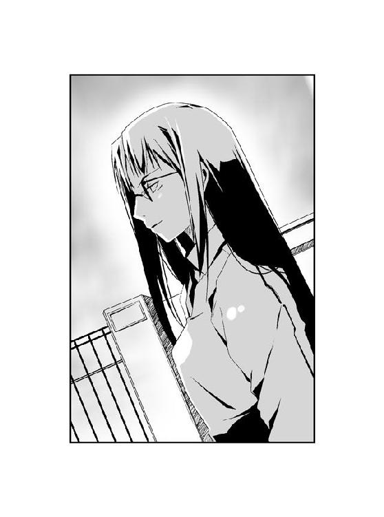
校門の前に──。
深紅のロングコートを着た長身の女が──。
敷地を走っていく大助をじっと見つめて──。
──佇んでいた。
「う......」
千晴の全身から、冷たい汗が噴き出していた。女の姿を一目見ただけで、思考が麻痺する。何も考えられなくなった原因は、底知れない恐怖だ。
「うう......」
恐怖に身が竦み、金縛りにあったように動くことができなかった。
紫色に輝く鱗粉を纏い、深紅のロングコートをなびかせ、サングラスで虹色に煌めく瞳を隠した女、それがただの人間などではないことを──否、人間ですらないことを、アリア・ヴァレィと一つになった千晴の本能が告げていた。
舌なめずりでもしそうな視線で大助を見送り、女が千晴に虹色の瞳を向けた。
「──ごきげんよう、〝今回〟はずいぶんと可愛らしい姿ね、アリア・ヴァレィ」
女が艶美な声で、囁いた。足音もなく、千晴に向かって歩み寄る。
千晴の心臓が、激しく鼓動していた。震えがとまらず、声も出せない。
『あーあ、やっぱり見つかっちゃったか。あんなに美味しそうな夢をキミが見逃すはずがないと思ってたよ、エルビオレーネ』
千晴の中にいるアリアが、軽い口調で答えた。
女にはアリアの声が聞こえるようだ。ゆっくりと歩きながら、エルビオレーネが嗤った。
「まだ最高の味に熟れるまでには──」
『──時間が、かかる』
「貴方がそれまでに喰らわないのなら──」
『──キミが、喰らう』
「それが同じ夢を欲した時の──」
『──あたしたちの、ルール』
「貴方は再び眠りにつくために──」
『──キミは、喰らい続けるために』
「競争しましょう」
『競争を、しよう』
ついにエルビオレーネの長い脚が、千晴の横にたどり着いた。カチカチと歯を鳴らしてうつむく千晴の耳元に、女の唇が近づく。甘い吐息を受け、首筋が総毛立った。
「アリアの意地悪に負けちゃダメよ、薬屋千晴ちゃん？」
ビクリ、と千晴は肩を震わせた。
「あなたの弟の大助ちゃん......彼の美味しそうな夢は、私に頂戴ね」
微笑を含んだ囁きを残して。
千晴のそばから、じっとりとまとわりつくような女の重苦しい気配が消えていた。
あたかも白昼夢でしかなかったように、忽然とエルビオレーネが姿を消していた。
始業のチャイムが鳴り響いても、千晴は──。
「......エルビオ......レーネ......」
硬直したまま、一歩もその場から動くことができなかった。
＊
少しずつ、思い出してきた。
鮎川千晴が、まだ薬屋千晴だった頃。
アリア・ヴァレィが、千晴の中に棲んでいた頃の記憶。
「どうかしたの？」
千晴に振り向いたのは、リスをデザインした白い仮面だった。ぼんやりとしていた千晴は、ぎょっとする。
建築中の商業ビルの地下は、広い駐車場になっていた。地上のビル本体はまだ鉄骨だらけで形にはなっていないが、敷地だけは異様に広い。完成すれば相当大きいビルになるだろう。
一方、地下駐車場は一足先に工事が進められているようだ。地下四階にわたってくり貫かれた空間には、すでに駐車スペースを仕切る仮のラインまで引かれている。
「うん......また昔のことを思い出しただけだよ。ちょっとだけ、だけどね」
千晴はなぜ自分がここにいるのかを思いだし、冷静を装う。かくいう千晴自身もまた、猫をデフォルメした白い仮面で顔を隠していた。
「そう。あとで茶深に教えてあげるといいわ」
リス面の少女、杉都綾が興味なさそうに言い、前を向いて歩き出した。千晴もあとを追う。
二人がやってきたのは、〝むしばね〟の大集会が行われる予定の場所だった。
綾は〝ふゆほたる〟のこれからの動向を探るために、そして千晴はその〝ふゆほたる〟当人と接触するために潜入することになったのである。〝むしばね〟の幹部扱いである綾の同行者ということで、千晴は厳しいチェックもなく敷地内に入ることができ、現状に至っている。
「それにしても、暗くてちょっと不気味だね。綾ちゃん、手、つないでいい？」
千晴と綾が歩いているのは、本来は自動車が通るための地下道路だった。照明設備はまだ電力供給が不完全らしく、非常灯しか点灯していない。集会の会場は、最下階だ。
「〝ふゆほたる〟の〝虫〟って、やっぱり蛍みたいに光るのかしら。きっと綺麗でしょうね」
「名前からして可愛いよね、〝ふゆほたる〟って。......そんな話をしてたんじゃないけど......」
地下へと向かって歩いているのは、千晴たちだけではなかった。同じように動物の面をかぶっている者や、構わず素顔を出した者、たまに窓にスモークを貼った自動車も地下へと向かって下りていく。
秘密の集会をこのような密閉空間で行うのは危険な気もしたが、綾曰く、建設中ということもあって抜け道は他にもあるそうだ。いざ襲撃された時に備えての逃げ道は確保しているらしい。ビルの持ち主が〝むしばね〟の協力者なのだという。
「茶深ちゃん、とうとう最後まで怒ってたね。あたしたちのこと、心配してくれてるのかな？」
茶深は結果的には、〝ふゆほたる〟に会いたいという千晴の申し出を承諾した。
だがその結論に至るには、千晴との激しい口論があった。茶深からすれば、まだ情報を引き出しきっていない千晴を失う危険を避けたいのだろう。だが千晴は弟の大助のことを、どうしても〝ふゆほたる〟──杏本詩歌から直接、聞き出したかった。
結局、茶深が千晴のワガママ、もとい駄々をこねる彼女に折れた形となった。
ただし、条件付きだ。
千晴の顔は、詩歌とアイジスパに知られてしまっている。したがって仮面を外さず、誰にも素顔を見られないこと。
また綾のそばを決して離れないことも、条件の一つだ。万が一、逃げだそうとした場合は、綾が千晴を殺すことになっている。そう言った茶深は、ただの脅しを言う顔ではなかった。
──〝ふゆほたる〟の顔は見れたとしても、接近した上にお喋りなんてできるわけねーじゃねーの。これほど割に合わねー無茶はねーわ。......でもアンタに記憶を一刻も早く取り戻してほしいってのも、本当のところなのよ。ある意味、こういう無茶ができるのも、私やアンタが消息を絶ったばかりで特環からの手配が全国に浸透していない今のうちでもあるわ。
怪我のためにホテルで安静にしている茶深は、千晴にそう言った。
──アンタの失った記憶の中に〝虫〟の謎が含まれてるとしたら、やる価値のある賭けではあるのよ。〝かっこう〟の居場所さえ分からない今、〝ふゆほたる〟に会うことで記憶を取り戻せるなら儲けものよ。その代わり、何も思い出せなかったらアンタ、どうなるか分かってるでしょーね。
分からない。思い出さなかった場合、千晴はどんなお仕置きを受けるのだろう？
ともあれ、そういったやり取りもあり、千晴は綾に同行することを許されたわけである。
「私は茶深に怒られるのは、キライじゃないわ」
先を行く綾が、振り向きもせずに言った。
千晴は表情をひきつらせる。
「そ、そうなんだ。綾ちゃんは本当に茶深ちゃんのことが好きなんだね」
「茶深はいつだって怒っているのよ」
「......」
「〝虫〟とか、虫憑きとか、特環とか、〝むしばね〟とか、勝手に誰かをどうこうしようとするものが何もかも、気に入らないのよ。だってそれをするのは、茶深なんだから」
綾の口調は淡々としていて、抑揚がなかった。だが茶深を信じ切っていることが分かる。
「......ねえ、綾ちゃんの夢って、なに？ なんだか急にすごく知りたくなったよ」
千晴は制服姿の少女の背中に、訊いた。
感情を感じさせない、行動の全てが機械的な少女。彼女が胸に秘めた願いを、千晴はのぞき見てみたくなった。
「私は、私だけを見てくれる人と出会いたかった。一人はとても寂しいもの」
今度は、はっきりとした答えが返ってきた。
「でも、それは──叶わなくてもいいの」
「え？」
「本当に私を見てくれる人がいたとしても、私はきっとすぐにわずらわしくなってしまうと思うもの。きっとそれは、私の独りよがりを押しつけているだけだから」
なぜか──ドキリと千晴の心臓が高鳴った。
「だから私は、茶深が好き。たまに冷たくて、たまに優しいもの。そのぶん優しくしてくれた時は、とても嬉しくなるのよ。茶深が見ているものは私なんかじゃなく、もっと大きなもので──でも、たまに私のことも見てくれるの。その瞬間が、私は好き。利用されるだけだと分かっていても、好き」
綾が紡ぎ出す言葉は単調で、淀みがない。千晴が訊きさえしなければ、口に出すまでもないことなのだろう。
「茶深を助けるために、いつか私は死ぬと思うのよ。茶深は他にもたくさんの手駒がいて、もっと先のことばかり見ていて、私のことなんて振り向かないし、すぐに忘れるの。でもいつか、何かの気まぐれで私のことを、ちょっとだけ思い出すの。そう──あの猫みたいに。その瞬間のことを思い浮かべるだけで、私は茶深のために何でもするわ」
「し、死ぬって......そんな、綾ちゃん──」
「一番に好かれるのは、嫌い。わずらわしいもの。何番目かに好かれて、たまにほんの一瞬だけ、その瞬間だけ、本当の意味で私のことだけを思ってくれる人が──私は好き」
綾は千晴に向かって言っているという意識すら、なくなっているのかもしれない。彼女の口からこぼれる言葉は、そう思ってしまうくらい純粋だった。
何と言っていいか分からず、千晴は首をひねった。
だから素直に、思ったことを口にする。
「あたしも綾ちゃんのこと、好きだよ。何番目なのかは、分からないけどね」
にっこりと笑って、綾の背中に言う。
一番に好きになられるのがキライだという綾の感性は、よく分からなかった。とても難しい理屈があるようにも思えるし、何よりも素直であるようにも思える。
不思議な少女としか言いようがないが、千晴は少なくとも彼女を嫌いではない。
「そう」
綾が急に立ち止まった。こちらを振り向いて、リスの面を持ち上げる。
「それなら私も、あなたのことを好きになるわ」
黒い瞳で千晴を見つめ、言った。すぐにまた面をかぶり、歩き出す。
千晴はびっくりして、立ちつくす。
「そ、そういう好かれ方は、どうかと思うんだよ......」
突然の言葉に戸惑い──彼女の言葉の意味にも気づかず、千晴はあわてて彼女のあとを追いかけようとした。
しかし不意の衝撃に襲われ、よろめく。
「あっ──」
道路を駆け下りてきた小柄な人物と、ぶつかってしまったのだ。
千晴よりもぶつかった相手のほうが、大きくバランスを崩していた。勢いを止められず、そのまま壁に頭をぶつける。
「だ、大丈夫、キミ？ ごめんね！」
慌てて千晴が駆けよると、白い面をかぶった人物がふらふらと壁から身を離した。
「『鱗は自爆した』──『鱗は12のダメージを受けた』」
「へ......？」
幼さの残る声からすると、少年のようだ。しかしキューブシャツに革のパンツという肌の露出が大きい身体は、ずいぶんと華奢である。
「ごめんなさい、お姉さん......『鱗は謝った』──」
面の上から額をさすりながら、少年が頭を下げた。そのまま千晴の返事も待たず、下の階に向かって走り去っていく。
「早く行かないと、始まってしまうわ」
横を駆けていく少年を見もせずに、綾がこちらを振り返った。
「う、うん」
数分ほど歩いていくと、ようやく最下階にたどり着いた。
「うわ......」
地下の薄暗い空間にひろがった異様な光景に、千晴は思わず小さな声を上げた。
数え切れない数のコンクリートの柱が並んだ駐車場に、大勢の人々が佇んでいた。白仮面で顔を隠した者が多いが、服装や体つきで若い少年少女が多いことが分かる。
なかには大人らしき姿も、ちらほらと見えた。自動車のパワーウィンドウを開けて車内から様子をうかがっている者や、オートバイを停めて脇に佇んでいる者もいる。
圧倒される千晴の腕を、綾が引っ張った。地下駐車場のど真ん中を突っ切っていく。
「あ、あの、綾ちゃん......あんまり目立っちゃマズイと思うんだけど」
「私はあまり目が良いほうじゃないのよ」
スペースの中央を一直線に歩く二人に、周囲の仮面たちの視線が集まるのが分かった。だが綾はいっこうに気にした様子がない。綾の姿を見て「よう、ジェンシス」と声をかけてくる者もいたが、綾はそれらをことごとく無視した。
駐車場の奥に、照明工事のために設置された足場があった。三段に組み立てられた鉄パイプの上に、鉄板が敷かれている。
千晴と綾は地下駐車場入り口と足場の、ちょうど中間地点あたりで足を止めた。
カンカンと足場を昇る靴音が響いた。
大勢の白仮面たちが見守る中、数人の男女が足場を昇って姿を現した。
──始まったようだ。
「右から二番目は私の姉さん、杉都纏よ」
壇上に現れた者たちのほとんどが、仮面を着けてはいなかった。綾に言われて注意してみると、たしかに綾と雰囲気が似た少女がこちらを見ていた。
「綾ちゃんに似て、美人さんだね」
「私も本当なら、あそこまで行かなきゃいけないんだけど......このあたりでいいわね」
普段と変わらぬ口調で言い、綾がその場に腰を下ろした。服が汚れるのもかまわず、興味はないといわんばかりに地面に転がっていた石灰の塊をいじりだす。
「〝ふゆほたる〟が現れたわね」
地面を見下ろしたままで、どうして分かったのか。
顔を上げると、綾の言う通り、見覚えのある少女が姿を現していた。
西遠駅で見たときと同じ──そしてアーバン・タワー内部で鉢合わせした時と変わらない、触れたら消えてしまいそうな儚い印象の女の子。前髪の一部を結んでいるリボンも、あの時と同じままだった。
杏本詩歌。
赤の他人でしかなかった千晴に硬貨を差し出してくれた、優しい少女。
そして茶深曰く──現存する中で最強の能力を持つ虫憑き、〝ふゆほたる〟。
詩歌が姿を現しただけで、白仮面たちがどよめいた。それは驚きというよりも、恐怖。何人かにいたっては、その場から数歩、後退る者もいた。
「詩歌ちゃん......」
場所を空けた幹部たちの中で、たった一人だけ詩歌のそばに立ったままの人物がいた。千晴は彼の顔にもおぼえがあった。
アイジスパという少年だ。動揺する白仮面たちに対し、しかし興味もカケラもなさそうな顔をしている。眠たげな目は、今にもあくびをしそうなくらいだ。
「皆、静かにしてくれ」
足場で作られた壇上の端から、声が上がった。スーツを着た中年の男だ。
「宗方槐路よ。このビルの持ち主で、〝むしばね〟のパトロンともいえる人」
石灰を指先で押しつぶしながら、綾が説明する。
「今日、集まってもらったのはサウス、ウエストで生き残った者たち、そしてイーストの大部分とノーズの少数のメンバーとそれぞれのエリアの幹部たちだ。もちろん集まることができなかった者は大勢いるが、今の〝むしばね〟の分裂を止めるには早ければ早いほど良い。ノーズリーダーも欠席しているが、基本的にはこの場での決定に従うという意思は確認してある」
宗方という男の低い声が反響し、地下駐車場に浸透していく。白仮面たちの騒ぎが、次第におさまっていった。
だが──。
「本来は裏方である私がこの場を設けたのは、今の〝むしばね〟の分裂状態に歯止めをかけるためだと思ってほしい。レイディーを失って以来、〝むしばね〟は組織としての機能を失ってしまった。統率をなくした我々は、遠くないうちに特環に蹂躙されるだろう。それを防ぐ方法はただ一つ、〝むしばね〟の再構成──新しいリーダーのもとに、新たな形で活動していく必要があると私は思う」
宗方が詩歌へと向き直り、はっきりと言った。
「そこで私は、我々の新しいリーダーに〝ふゆほたる〟を推薦しようと考えた」
たちまち地下駐車場が、騒然となった。
戸惑いの声と怒声が飛びかい、場内が混乱状態に陥っていた。
「あ、綾ちゃん！ なんだか大変なことになってるよ！」
耳をふさぎながら、千晴は足元に座った綾を見た。しかし綾は素知らぬ顔で、次の石灰の塊を手元へと転がしている。
だが意外な形で、場内は急に静かになった。
詩歌が一歩、前に進み出たのだ。
たったそれだけの行動が、白仮面たちから言葉を奪っていた。千晴の目には頭をなでてやりたくなるような可愛らしい女の子にしか見えないが、この場にいる他の人々はそうではないようだ。場の混乱を収拾したのは、純粋な──恐怖だった。
「あ、あの......」
詩歌が控えめな第一声を放った時、声を出している者は一人もいなかった。
「私は......利菜みたいに強くないし、皆さんに命令......とか、できるような人間でもないから、リーダーになんてなれるかどうか分かりません。でも宗方さんから、私の考えていることを皆さんの前で言ってほしいと言われたので、言おうと思います」
完全なる静寂の中、詩歌はうつむきがちに語りだした。
「──私は、特別環境保全事務局と戦いたくありません」
その一言を発した瞬間。
場内が冷たい緊張感に、包まれたのが分かった。
誰も声を出さないのはあまりにも驚いたからだろう。詩歌もそのことは理解しているようだ。再び混乱が訪れる前に、次の台詞を口にした。
「特環の局員のほとんどが、私たちと同じ虫憑きなんです。それなのにどうして、虫憑きどうしで戦わなくちゃいけないんでしょうか？」
うつむいたまま、しかし詩歌は必死な様子で続ける。
「白樫初季という人がいます。私を特環から逃がしてくれた恩人です。彼女は特環の局員で、でも戦うことが嫌いだと言っていました。でも特環に生まれ故郷を奪われて、しかたなく特環に従っていると言いました。──他の局員の人たちも、そんな人がほとんどだと思うんです。私たちはお互いに戦いたくないのに、戦っている......」
「──きれいごとはよせよ」
我慢できない、といった感じの声は横手から上がった。
同じ壇上にいた幹部の一人、ラフな恰好をした少年だ。怪我をしているのか、頭に包帯を巻いている。
「梶取洋壱。イーストリーダーよ。ここでの名前はシニカ」
すかさず綾が説明する。
「バカじゃねぇのか？ つい一昨日、特環に襲撃されたばっかりだってのに、その口でよくそんなことが言えるな。こっちは戦いたくなくても、特環はそうじゃねぇんだよ！」
「一昨日、襲ってきた人も......とても辛そうでした。自分のことをくだらない兵隊だと言って......」
「ああ？ ふざけんな、こっちは死にかけたんだぞ！」
詩歌に詰めよろうとした洋壱の前に、アイジスパが無言で立ちはだかった。プシッ、という空気が弾ける音とともに、彼の両腕を白い雲が駆け抜ける。
怯んで立ち止まった洋壱を尻目に、アイジスパが詩歌を振り返る。
「先に具体的な話をしたほうがよさそうだ。オレが代わりに説明してやろうか？」
「え、えっと......お願いしていいですか？」
「それくらいは、してやるさ」
アイジスパが観衆に向き直り、あからさまに面倒そうな口調で説明を始めた。
「彼女の案は、こうだ。やることは利菜──レイディー・バードが生きていた頃と、変わりはない。特環よりも先に虫憑きを見つけ、保護する。ただしその過程で特環との戦闘になっても、〝むしばね〟側からは極力、攻撃を加えない。虫憑きを保護し、速やかに撤収する。やむを得ず攻撃する必要がある場合もあるだろうが、それはあくまで例外だ。バカでも分かるように言えば、守って、逃げる──それだけだ」
「攻撃を、加えないだと......！」
「もちろん敵を倒さずに防御に徹するには、敵以上に強くなければムリだろう。だから戦闘要員も大幅に削り、選定する。感情にまかせて敵を迎え撃つようなヤツは、むしろ邪魔だ。他のメンバーは能力に合わせて戦闘要員をサポート、保護する虫憑きの確保に徹する」
睨みつける洋壱を一瞥し、アイジスパが冷淡に言い放つ。
「どうせ今までのお前らは、〝レイディーさえいれば負けない〟なんて考えていたんだろう。これからは、そんな甘い考えは捨てろ」
「アイジスパさん、そんな言い方は......」
詩歌が口を出すが、アイジスパは涼しい顔だ。洋壱が奥歯を嚙みしめる。
「横で仲間がやられるのを見ながら、それでも何もしないで逃げろってのか......！」
「仕返しして、自分もやられるのか？ 今まではそうだったんだろう。だがこれからは、仲間を守れなかったのは自分のせいだと思え。そうなりたくなかったら、強くなればいい。強くなって仲間を守った上で、自分自身の身も守りきれるようにな」
アイジスパの言い方は、千晴にも分かるくらい突き放した口調だった。
「お前らがレイディーのために次々と殉死していくのは勝手だが、〝レイディーがいなくなったせい〟だなんて死ぬ理由まであいつのせいにされるのは我慢できんからな。オレはあいつを守れなかったが、その責任くらいは果たしてやる。こいつを守って、な」
冷たい口調で淡々と語ってはいるが、千晴にはようやく分かった。
アイジスパは、本当はここにいる誰よりも──怒っている。
レイディーという人物を守れなかった白仮面たちに対して。そして、同じくらいに自分自身に対して、彼は怒っている。
「確かに、犠牲者は出るだろう。だが防御に徹していれば、最低限に抑えられる。ディフェンスを続けているうちに、強い虫憑きも仲間になるだろう。オレたちは力を蓄えられる。力を蓄えた上で──」
アイジスパが、詩歌を振り返った。
詩歌が頷き、顔を上げた。先ほどまでとは一変し、駐車場にいる全員に向かってはっきりと宣言する。
「〝始まりの三匹〟を見つけ出し、倒します」
今度こそ。
地下駐車場に、完全なる静寂が訪れた。
「その上で〝虫〟とは何かを、解き明かすつもりです。虫憑きどうしの戦いをやめて、〝虫〟そのものを倒す戦いをしようと思います」
詩歌が唇を嚙んだ。
「とても苦しい戦いになると思います。特環と戦うよりも、ずっと......私はこれ以上、夢の途中でいなくなっていく虫憑きを見たくないんです」
そう言って、詩歌が──自分が弱いと語る最強の虫憑きが、深々と頭を下げた。
「どうか、お願いです。私を手伝ってください。やられたら、やり返す──それをしない戦いは、虫憑きどうしで戦うよりも......〝虫〟を殺されて欠落者になるよりも、命を奪われて死んでしまうよりも、辛い戦いになると思います。でも、誰かが手伝ってくれるのなら──」
髪をたらして頭を下げる詩歌の肩が、かすかに震えているのが分かった。
戦うことが、怖いのだろう。
他の虫憑きを戦いに誘うのが、恐ろしいのだろう。
だが詩歌は不安と恐怖に耐えて、なお前を向こうとしている。
「今の戦いを終わらせるために、私は......最期まで戦い抜くことを、誓います」
しんと静まりかえった空間に、さざ波のように囁き合う声が飛びかう。
洋壱は自分の中の何かと、必死に戦っているようだった。顔を歪め、拳を震わせている。周囲から聞こえるのは「そんなこと、できるのか......？」という困惑の声だった。
「ねえ、綾ちゃん」
千晴は足元に座り込んだ少女に向かって、笑みを浮かべた。
「詩歌ちゃんはやっぱり、優しい良い子だよ」
綾は「どうかしらね」とつれない。
詩歌はまだ、頭を下げたままだ。
場内の戸惑いはおさまらない。彼女に同調する声は上がらなかった。アイジスパが舌打ちし、詩歌に頭を上げさせようと手を伸ばす。
「......どうしようもなく弱い虫憑きでも、かまわないだろうか」
かすかな怯えを含んだ声は、駐車場の入り口付近から響いた。
振り向くと、大勢の白仮面の中から一人、姿を現した人物がいた。仮面をかぶらず、鋭い目つきと口元を露わにしている。怪我を負っているらしく、ギプスで固めた右腕をヒモで首から支えていた。
スーツを着た二十歳前後に見える女性は、しかし苦しげな顔を上げようとはしなかった。
「かつて、きみを守ると誓ったにもかかわらず......それができなかった私のような人間でも、きみは受け入れてくれるのだろうか......？」
壇上の面々が、女性を見た。宗方が驚いた顔で声を上げる。
「〝なみえ〟か」
女性が震える声で、訴え続ける。
「きみを守ることが、できなかった。四年前、きみを守ることこそ正義だと誓ったのに、私にはそれができなかった。今、きみと顔を合わせることすらできない、無力な私でもきみの戦いに連れていってもらえるのだろうか......？」
詩歌が顔を上げた。
しばし困惑していた詩歌だが、彼女の台詞の中に思い当たる節があったのか、驚いた様子で目を見開いた。
「あの時の......お姉さん......？」
詩歌が思い出したのを見て、〝なみえ〟という女性が唇を嚙みしめた。
壇上の詩歌も言葉を発するのを、躊躇っているようだった。だが、やがておずおずと女性に問いかける。
「手伝って、もらえるんですか......？」
「......！」
女性がはじめて、顔を上げた。次の瞬間、深く頭を下げている詩歌を見て愕然とする。
「ありがとうございます......！」
見る見るうちに〝なみえ〟の顔が歪んでいく。双眸から大粒の涙があふれ出した。
「今度こそ......！ 本当に、今度こそは、きみを守る......！ 必ず、守ってみせる......！」
震える声を絞り出す女性。
千晴の足元で、綾が言った。
「彼女は高鍬みのり。瀕死の重傷を負っていたところを、仲間の反対を押し切ってレイディーが助けたのよ。最近、ようやく意識を取り戻したの。──四年前に何があったのか知らないけれど、去年までずっと葉芝市の欠落者収容所で〝ふゆほたる〟を監視していたらしいわ」
千晴は眉をひそめた。
「元は特環の東中央支部の局員だったのよ。かなり古株の虫憑きだわ。弱いだなんて、とんでもない。一度は火種三号にも指定されていたらしいわ」
綾がつまらなそうに「話を聞いた茶深が目をつけてたんだけど、〝ふゆほたる〟にとられちゃったわね」と付け足した。
高鍬みのりのことを知っていたのは、他の白仮面たちも同様だったようだ。ざわめきが一気に大きくなっていく。
「......条件がある」
絞り出すように言ったのは、洋壱だった。
「他の誰を許せても、あのクソ野郎だけはどうしても許せねぇ......！」
千晴の見ている前で、少年が憎悪に顔を歪めた。
他ならぬ、千晴の目の前で──洋壱が叫んだ。
「〝かっこう〟だけは、絶対に殺すっ！」
「......！」
これほどまで人が人を憎む様を、人が人に向ける殺意を──千晴はいまだかつて、見たことがなかった。
「レイディーを殺した〝かっこう〟だけは、どんなことをしてでも殺してやるっ！ レイディーだけじゃねぇ！ あいつ一人に今までどれだけの仲間がやられてきたか、てめぇには分からねぇだろう、〝ふゆほたる〟！ ──いや、てめぇだって憎いに決まってんだ！ なぁ、あいつを殺して、それから何もかも始めりゃいいじゃねぇか！ 今がチャンスなんだよ！」
怒鳴り散らす少年を目の当たりにして、千晴は震えがこみ上げた。
〝かっこう〟の名前が出た途端、地下駐車場が怒号のるつぼと化していた。口々に〝かっこう〟に対する罵詈雑言を吐き出す。
彼らが今、罵倒しているのは、他ならぬ千晴の弟だ。
薬屋大助という千晴の弟は、これほどまでに人に憎しみをばらまいている。
「うぅ......」
耳をふさいでしまいたい衝動を、かろうじてこらえる。
くずおれそうになる脚を、懸命に力を入れてこらえる。
もしこれが本当に大助が生み出した憎悪ならば、千晴は受け入れなければならない──。
「チャンス？ どういうことだ、シニカ」
訝しげに訊く宗方に対し、洋壱が歪んだ笑みを返した。
「あのクソ野郎──〝かっこう〟は昨日から、行方をくらましてやがるんだとよ！ 失踪したっきり、特環でも連絡がとれない状態なんだよ！」
「......！」
千晴を含む、その場にいる全員が息をのんだ。
「オレたちが見つけ出せば、特環のサポートもない状態であいつを殺せる！ どうだよ、またとないチャンスだろうが！ 〝かっこう〟を殺すことさえできれば、あとはてめぇの手伝いでもなんでもしてやるよ！」
洋壱の言葉に、いっせいに白仮面たちの怒号がボリュームを増した。
「シニカ......！ いったいどこから、そんな情報を──」
宗方の詰問の声も、人々の声にかき消された。
詩歌は哀しげに下唇を嚙んでいた。アイジスパは冷めた表情で白仮面たちを見下ろし、詩歌のそばに歩み寄った〝なみえ〟が警戒の眼差しで場内を見回す。
〝かっこう〟に対する殺意が、地下駐車場を満たしていた。
「詩歌ちゃん──」
人々の怒りが、憎しみが、千晴の心を引き裂こうとしていた。
だが千晴は、どうしても認めることができなかった。心の奥で、弟がそのようなひどい人間ではないと信じたがっていた。
「詩歌ちゃん......！」
すがる思いで、壇上の少女を見上げる。
他にも大勢、〝ふゆほたる〟に向かって詰めよろうとしている白仮面の波に押し潰されそうになりながら、千晴は詩歌だけを見ていた。
この優しくて強い少女に憎まれているのなら──その時こそ、千晴は諦められる。
「詩歌ちゃんっ！」
我を忘れ、叫んでいた。
ピクン、と詩歌が顔を上げた。きょろきょろと白仮面たちの顔を見回す。
「大──〝かっこう〟っていう子は、本当に......！」
千晴の声は、爆音にかき消された。
詩歌たちのいる足場の横の地面に、ぽっかりと大穴が空いていた。そこにあったはずの地面はおろか、数十本の柱と壁が跡形もなく蒸発していた。
大穴から飛び立ったのは、一匹の白い蝶々。翅を白い炎へと変えた波江白蝶だった。
「鎮まれ、馬鹿どもが。訓練されていない烏合の衆は、これだから始末におえない」
白い軌跡を残して舞う〝虫〟が、〝なみえ〟の肩にとまった。
訪れた静寂の中、アイジスパが嘆息する。
「これから〝戦わない戦い〟をしようって時に......ずいぶん短気なのが仲間になったもんだ」
「貴様も貴様だ。〝ふゆほたる〟のそばにいる以上、〝ふゆほたる〟の意志を尊重するよう努めろ。彼女が話せないだろうが」
言い合う二人の中央で、詩歌がオロオロと戸惑っている。綾が「一号指定の〝ふゆほたる〟を守る二人の三号指定クラス......茶深の邪魔にならなければいいけれど」とぽつりと呟く。
「〝かっこう〟くんと、約束をしたんです」
白仮面たちの視線が集まる中、詩歌が静かに切り出した。
「お互いの夢を、決して諦めないって......」
詠うような詩歌の声には、一遍の噓も感じられなかった。彼女は相手を信じ、自らも相手に信じられていることを信じている──。
「約束をした四年前からずっと、〝かっこう〟くんは戦い続けています。今は敵にしかなれないかもしれないけど、彼も戦いを終わらせようとしています。だから私は〝始まりの三匹〟を見つけ出すことができれば、その時こそ──」
詩歌が迷いのない口調で、はっきりと言い放った。
「〝かっこう〟くんと──特別環境保全事務局と力を合わせることができると思っています」
静寂。
それはまさに、嵐の前の静けさだった。
「特環と戦わないだけじゃなく......力を合わせるだと......！」
「正直なところ〝かっこう〟とやらには、オレも思うところはある。だがそれでも、堪えなければならない。今の憎しみを乗り越えられないようでは、この先の戦いを生き抜くことも不可能だろうからな」
アイジスパの突き放した言葉が、引き金になった。
洋壱を含む白仮面の大多数が、いっせいに怒声を上げた。〝かっこう〟に対する復讐を唱える者もいれば、中には〝ふゆほたる〟を責める声までもが飛びかう。
「これ以上、ここにいるのは危険ね。退散しましょう」
綾が立ち上がった。呆然としていた千晴の手を引き、身を翻す。
「で、でも......」
千晴は壇上の詩歌を振り返った。
大助に対する〝むしばね〟の憎悪は、嫌と言うほど思い知った。
だが詩歌の言葉を聞いて、大助のことがまた分からなくなっていた。
弟と約束をし、いつかは力を合わせたいと言った少女──詩歌はきっと、本当の大助を知っている。そのことは分かったが、詩歌の態度が憎しみを乗り越えた上でのものなのか、それとも別の何かを根源としたものなのか、千晴はまだ確かめていなかった。
「今の状態で〝ふゆほたる〟に接近できると思っているの」
綾は冷静そのものだった。
「それに千晴はさっき、〝ふゆほたる〟の本名を叫んでしまったでしょう。──今も何人か、私たちを見ているわ」
「......！」
「幹部に知られると面倒よ。場が混乱しているうちに脱出しましょう」
外見とは裏腹に、綾の力は強かった。千晴はなすすべもなく、地下駐車場の出入り口へと引っ張られていく。
「後ろから、ついてきてるわ。急いで」
地上へと繫がる自動車道を駆け昇りながら、綾が振り向きもせずに言った。
「う、うん！」
息を切らせ、千晴は懸命に走る。
薄暗い車道を昇っていくと、明るい日射しが差し込んだ。前方に地下駐車場の出口が見えた。
「ジェンシス？ もう集会が終わったのか？」
地上と駐車場の境目にいた二人の白仮面が、綾の姿を見て声をかけた。建物に入る時にメンバーのボディチェックなどを担当していた見張り番だ。
「ええ」
短く言い放ち、綾が千晴とともに出口を通過しようとする。
だが直前で後方から声がかかった。
「待て！ そいつらを止めろ！ 確かめたいことがある！」
振り向くと、背後からも二人の白仮面が駆けよりつつあった。
綾が脚を止めた。
見張り役だった白仮面たちが、戸惑いつつも二人の進路に立ちはだかっていた。
出口を目前に、千晴と綾は四人の白仮面に挟まれる形となってしまった。
「どういうことだ？ ジェンシスが何かしたのか？」
「ジェンシス......となりのそいつは、何者だ？ さっき〝ふゆほたる〟を別の名前で呼んでいたが、それが本名だとしたら幹部しか知らないはずだ」
綾が握っていた千晴の手をはなした。切れ長の瞳で、静かに白仮面を見据える。
「......」
「どうして、答えない？」
「あ、綾ちゃん」
緊張する千晴に対して、綾の表情は動かない。
「おい、幹部に連絡して確かめろ。ハレンかシニカに──」
「連絡はさせないわ」
変わらない口調で言い放ち、綾が左腕を横に振るった。
いつの間にか、綾の指先に小さなゴミムシがとまっていた。一瞬で躰を膨張させたゴミムシが、綾の左腕にしがみつく。ゴム状の口器から、黒いガスがこぼれた。
突然の臨戦態勢に、白仮面たちが色めき立った。自らもそれぞれの〝虫〟を具現化する。
「お前......なんのつもりだ！ 裏切るつもりか、ジェンシス！」
「黙って通してくれるだけでいいの。私は〝むしばね〟を仲間だなんて思ったことはないけれど、そっちはそうじゃないんでしょう？ 一応、警告だけはしておくわ」
綾の言葉は普段とまったく変わらなかった。それだけに、ある種の威圧感がある。
白仮面たちは動揺したようだ。しかし白仮面の一人が懐から無線機を取り出すのを見て、綾が千晴の背を押した。
「走って」
「え......？」
「はやく」
言われるがまま、千晴は地面を蹴った。白仮面たちの横を通り抜け、出口を目指す。
「逃がすな！」
背後から、叫ぶ声が聞こえた。
無数の脚を蠢かせた〝虫〟が、千晴の前方に回り込んだ。思わず立ち止まった千晴の横を、一陣の風が通り抜けた。
トンッ、軽い靴音とともに、前方の〝虫〟の上に人影が降り立っていた。
綾だ。──千晴は彼女がいつの間に自分を追い越し、大きな〝虫〟の上に飛び乗ったのか、まるで分からなかった。
〝虫〟の上に立った時点で、綾はゴミムシをしがみつかせた左腕を振りかぶっていた。
長い髪をなびかせ、綾が左腕を真下に振り下ろす。
「......っ！」
地響きが千晴の身体を一瞬、宙に浮かばせた。
ゴミムシの口器から白い閃光が迸り、大きな〝虫〟を打ち抜いたのだ。超高圧の何かだったのだろう、真っ白に輝く杭に貫かれた〝虫〟は形すらも残さなかった。地面にぽっかりと空いた大穴から、ジリジリと焦げる煙が立ち上る。
「なっ──」
愕然とする白仮面たち。後方にいた一人が、ガクリと脱力して地面にくずおれた。
「ジェンシス、お前......！」
怒りの声とともに、二匹の〝虫〟が綾に襲いかかった。
嚙みつこうとする〝虫〟の顎を、しかし綾は猫のような──否、それ以上の瞬発力で避け、あっという間に横に回り込む。二匹が一直線に並んだ位置から、左腕を〝虫〟に叩きつけた。
ゴミムシの口器から、緑色の杭が打ち出された。光沢を放つ太い金属の杭が、二匹の〝虫〟をもろともに串刺しにした。
「ぐっ......！」
苦痛の声を上げる白仮面たちに構わず、綾がさらに腕を振り上げた。
上翅を拡げたゴミムシの尻から、大量のガスが噴き出した。オレンジ色の触覚が揺らめく。
「警告は、したわ」
綾が串刺しにした二匹の〝虫〟に向かって、再び左腕を振り抜いた。
紅蓮の輝きが、〝虫〟を呑み込んだ。大爆発は〝虫〟を焼き尽くしただけではおさまらず、横の壁に千晴の身長の三倍はありそうな巨大な穴を生み出していた。
千晴は声もなく、立ちつくすしかできない。
綾の〝虫〟は口から取り込んだ物質を、成分を変えて放出できるのだろう。ガス状の熱線や金属の塊、そして超圧縮の爆炎など、あらゆる種類の杭で攻撃できるようだ。千晴の目にも、彼女の能力が恐ろしく強力であることが分かる。
「お、お前......本当にジェンシスか......？」
あっという間に、白仮面が一人を残すのみとなっていた。恐怖の声を上げ、身を翻す。
綾は獲物を狩る肉食獣のように身をかがめ、すかさず白仮面を追いかけようとする。
「追わなくていーわよ。これだけ騒いだら、さすがに下の連中にも気づかれてるっての」
出口の向こうから響いた声で、綾が動きを止めた。
「茶深ちゃん？」
千晴と綾が振り向くと、小柄な少女が立っていた。まだ痛んでいるはずの腹をおさえ、厳しい顔つきでこちらを見ている。
「結局、茶深も来たのね。心配してくれたの？」
「バカ言ってんじゃねーわ。アンタたちだけじゃ不安で、傷よりも胃のほうが痛くなってきただけよ。ほら、さっさとずらかるわよ」
「う、うん」
千晴と綾は、茶深の前を通って表へ出ようとした。
しかし、茶深はその場から動かない。
「どうしたの、茶深？」
「綾。アンタ──」
振り返った綾に、茶深がゆっくりと歩み寄った。
「やっと分かったわ。アンタにも〝かなた〟と同じ現象が起きてたのね。私がアンタに仕込んだ能力のせいで、心身のバランスがおかしくなってんだわ。そうじゃなきゃ、あんな動きや〝虫〟の急成長は説明できねーもの。私の能力は、まだ私自身にも分からねー作用がある......〝オゥル〟が猫らしからぬ知能を持ってた時点で、気がつくべきだったわ」
言い、綾に向かって手を掲げようとする。
だが茶深の腕をつかんで止めたのは、他ならぬ綾自身だった。
「......なにをするつもり？」
「決まってんでしょーが。私の能力を解除すんのよ。いくら強くなろうとも〝かなた〟みたいにぶっ壊れちゃ、意味がねーのよ。途中で使い物にならなくなるような役立たずなんて、私は必要ねーの」
「私はこのままでいいわ。最近はとても、調子が良いのよ」
平然と言う綾を、茶深が睨みつけた。しかし綾は引き下がらない。
「それに茶深の能力を解除したら、私は茶深の言うことをきかなくなるかもしれないわ。茶深は手駒が必要なんでしょう」
「......アンタは私の能力を知りながら、それでも私に従ってる。必要になった時は、また迎えに行くわよ」
「噓ね。茶深はもう帰ってこない。そして戦いから外された私のことなんて、もう二度と思い出さないんだわ」
「バカ......！ アンタが抱いているその〝寂しい〟って感情も、私の能力で増幅してるせいなのよ。自分で分かってんでしょーが！」
「とにかく私は、このままでいいの。私を引き込んだのは、茶深よ。それを茶深から放り出すのはルール違反だわ」
一方的に話を打ち切り、綾が茶深に背を向けて歩き出す。
「......ちっ、後悔しても知らねーわよ」
言い放ち、きっ、と茶深が千晴を睨んだ。
「えっ？ な、なに？」
「アンタのほうは、どうだったのよ。収穫はあったんでしょーね」
言われ、千晴は口ごもった。
〝むしばね〟の新しい動き。
杏本詩歌の覚悟。
虫憑きたちから憎まれる、大助の存在。
様々なことを知った千晴の中で、結論はますます遠のいていた。
「昔のことは少しだけ、思い出したけど......大助のことは、まだよく分かんないよ」
千晴の中途半端な答えに、茶深は「ふん」とつまらなそうに視線をそらした。
「一人の虫憑きのことが、そう簡単に分かってたまるかっての。──行くわよ」
今の大助のことを理解するには、まだまだ足りない。
拝啓、いかがお過ごしですか──。
大助のいない日々で、弟を忘れた毎日の中でいつからか身についていた〝語りがけ癖〟が、心の中に現れた。
キミのことを見つけ出すには、もう少し時間がかかりそうだよ。でも絶対、今のキミのことを知った上で会いにいくからね──。
前を歩く二人の虫憑きの少女を見つめ、千晴は頷いた。
「うん」
五年間という月日をかけて思い出した、語りかける相手の名前を。
だから、待っててね、大助──。
千晴は心の中で、そっと呟いた。
1.04 大助 Part. 2
＊
ぽっかりと。
穴が空いているみたいだった。
胸の奥、自分の真ん中の部分が欠け落ちているような感じだった。
真ん中がないから、痛みは我慢できた。
真ん中がないから、何もしたくなかった。
真ん中がないから──毎日に、現実味がなかった。
「......」
紫央小学校の教室の外からは、虫の鳴く声が聞こえていた。
ランドセルを手に持った大助を、虫の声とクスクスと笑う声が取り囲んでいた。
大助の瞳に映っているのは、教室の真ん中にぽっかりと空いた穴。
彼の心の中を象徴するかのように、そこだけが欠けた光景だった。
──朝、登校すると、大助の机がなくなっていた。
「ひでー。誰がやったんだよ。イジメじゃん」
「イジメだ、イジメ」
窓際の席で、クラスメートの男子児童がおかしそうに笑っていた。いつも大助をかまってくるグループだ。周りで笑ってるのはその仲間たちだけで、他の男子や女子はあえて見ないフリをしているようだった。
「誰がやったんだろーなー。なあ、津村」
「あ、あの......薬屋くん......」
躊躇いがちに大助に声をかけてきたのは、同じクラスの男子児童、津村蜜樹だった。小さな身体をさらに縮めるように、うつむいている。
「ぼく......その......ゴメ──」
蜜樹を無視し、大助はその場で身体の向きを変えた。出入り口に向かって歩いていくと、足をひっかけられた。床に転倒した大助を見て、また笑い声が上がった。
「......」
膝に鈍い痛みが走った。擦り剝いたようだ。
しかし大助は唇を嚙んで立ち上がり、ランドセルをつかんで教室を出た。そのまま廊下を通り過ぎ、階段をのぼっていく。
大助がやってきたのは、校舎の屋上だった。出入り口の横の壁によりかかり、床の上に座り込む。放り出したランドセルから教科書が飛び出したが、見向きもしなかった。
考えて屋上へやってきたわけじゃない。
他に行く場所がなかっただけだ。
大助の居場所は──どこにもない。
「バッカじゃねーの......」
自分の膝を抱きながら、唇を尖らせて呟く。机を隠したクラスメートに対して言ったのか、それとも仕返しも何もせずに教室を出た自分に対して言ったのか、分からなかった。
少しでも反抗すれば、かまわれることはなくなるのかもしれない。
だが、それだけだ。
クラスでたった一人、大助が浮いているのは変わらない。大助が無愛想なことや、父親がいないという事実は何も変わらない。
そう考えると、抵抗する気が起こらなかった。
──数時間後。
昼寝をしたり、教科書に落書きをしたりして時間を潰しているうちに、チャイムが鳴った。
下校時間だ。
給食が食べられなかったので、腹が空いていた。児童たちが一通り、学校から下校した後の時間帯を見計らって屋上を後にした。
途中、自分の教室に立ちよってみる。
クラスメートは皆、下校したようだ。無人の教室の中央に空いていた空間が、ちゃんと埋まっていた。
「......」
誰かが戻してくれたのか、それとも担任教師が生徒を叱って戻させたのか、とにかく大助の机が元の場所にあった。大助は教室を後にする。
下駄箱で靴を履き替え、校舎を出た。
するとすぐ近くから、何かを言い合う声が聞こえた。
「津村はウラギリモノだな！」
「だ......だって......」
「言うこときかねーのは、ウラギリモノだぞ！」
クラスメートに囲まれた津村蜜樹が、腹を殴られてうずくまった。
なんだよ、あいつもイジメられてんじゃん──。
大助は無視して、正門に向かおうとした。
「なんで薬屋の机を戻しやがったんだよ！」
ピタリ、と大助は足を止めた。
大助の胸中に、はじめて──。
「......」
苛立ちが、湧いた。
蜜樹は無理矢理に大助の机を隠すよう指示されたはいいが、いたたまれずに元に戻したのだろう。どっちにしろイジメられていれば、世話がない。
だが蜜樹が責められている原因が大助だというのは、気に入らなかった。
自分が何かされるぶんには無視していられるが──自分のせいで、他の人間まで平穏な生活を追いやられるのは気分が悪かった。
「......やめろよ」
少年たちの集団に向かって、大助は言った。
「お、薬屋だ」
「なんだよ、まだ学校にいたのかよ」
「こっちに連れてこいよ。こいつら二人で遊ぼーぜ」
一人が近づいてきて、大助の腕を引っ張ろうとした。
「......」
大助は腕を振り払った。
「痛っ！ なんだ、こいつ。やんのかよ！」
突き飛ばされた。
「......」
「うわっ」
突き飛ばした。
少年たちがびっくりした顔で、大助を見た。だが見る見るうちに彼らの顔が、怒りに歪んでいく。
──その後は、自分でもどうやって相手に立ち向かったのか分からなかった。
ただ大助は殴られるのに慣れていたし、怖いという感情があまりなかった。だが相手はそうではなかったようだ。
一発、殴り返すとすぐに顔をおさえてうずくまった。そうなると他の面子は怖がって大助に近づこうとしなかった。二人ほどが泣き出したところで、全員がいっせいに逃げ出したのはおぼえている。大助よりもよっぽど軽傷だったし、なかには無傷の少年もいた。
「......痛て......」
いくら慣れていても、痛いものは痛い。鼻血を乱暴に袖で拭いて、転がったランドセルを拾いあげる。そのまま立ち去ろうとした大助に、蜜樹が慌てて駆けよってきた。
「だ、大丈夫？ 薬屋くん」
「......」
「あの......あ、ありがとう！」
「別に──」
「薬屋くんて、すっごく強いんだね！ なんで今まで、何もしなかったの？」
蜜樹は学校の敷地を出てからも、しつこく大助につきまとってきた。帰り道の間ずっと、ずっと大助に尊敬の眼差しを向けていた。大助はむず痒い感覚に襲われ、蜜樹を見つめ返すことができなかった。
「いいなぁ、薬屋くんは強くて。ぼくなんて弱っちいから、またイジメられたらやだな......」
そんなことを言ってうつむいた蜜樹に対し、大助はそっけない態度で言う。
「あいつらが何かしてきたら、また俺がなんとかするよ。なんかお前がやられてたのも、俺が何もしなかったから調子に乗ったんだろーし......」
「ホントっ？」
心から嬉しそうな笑顔を向けられ、「うっ」と大助は言葉に詰まった。
大助からすれば彼を助けるというより、たんなる責任感でしかなかった。だが蜜樹はそうは思わなかったようだ。彼を優しい人間だと思いきり勘違いしている。
蜜樹と別れた大助は、自宅であるアパートの階段を上ろうとした。
ふと誰かに見られている気がして、道路を振り向いた。
「......？」
気のせいだった。
後ろを見た大助の目に映ったのは、夕日を反射する粒状の物体。
紫色に輝く粉だった。
首を傾げつつ、大助は階段を上っていく。
声が聞こえた。「滞納した家賃......十日後までに......」とまくし立てている。
階段を上りきると、大助の自宅の部屋の前に中年の女性がいた。その顔に、大助は見覚えがあった。アパートの大家だったはずだ。
一方、玄関で頭を下げているのは、大助の母だった。いつもパートの仕事に追われている母は最近、ますます線が細くなったように見えた。
大助の存在に気づくと、大家の女性は何かを母に言い残し、立ち去っていった。
「ただいま」
「おかえりなさい」
母は疲れが混じった嘆息をこぼし、家の中へと入っていった。思い詰めた表情の母は、大助の顔も見なかった。彼が怪我を負っていることにも気づかなかったようだ。
「......」
大助も家の中に入り、玄関を閉める。
居間と寝室しかない狭いアパート。それが母と姉、そして大助が暮らす家だった。
──大助は、この家があまり好きではなかった。
狭いとかいう以前に、家にいる時の母がいつも辛そうだったからだ。疲れているのだろう、ため息ばかりつく母は滅多に大助の顔を見ようとしない。話しかけても上の空で、聞こえていないような時もある。
大助がいてもいなくても、何も変わらない空間。それは学校の教室と何も変わらない。いや、母のため息の原因が大助にもあるとしたら、むしろ──。
家にいると、色々と余計なことを考えてしまう。
それが大助は嫌だった。
「ただいまー。あ！ 大助、帰ってるじゃない！」
寝室でランドセルを置くと、玄関のほうから声がした。
「もう！ いっしょに帰ろうと思ったのに、大助ったらどこにもいな──きゃーっ！」
ふすまを開けて寝室に飛び込んできた少女が、この世の終わりのような悲鳴を上げた。
──大助の姉、千晴はバカだ。
ことあるごとに大袈裟に騒ぐ。さながら、舞台の上で劇を演じる主人公のように。
本当に自分と血が繫がっているのかと疑ってしまうくらいに、明るくて能天気だ。
「大助、け、怪我してるよっ！ ほら、こっち来て！ お姉ちゃんが消毒してあげるよ！」
「いーよ、もう痛くねーし。やめろってば」
取っ組み合う子供たちに向かって、母は「静かにしなさい。おとなりに迷惑よ」と流し台の前から声をかけただけだ。
「どうして、怪我したの？ 誰かにやられたの？ ......まさか、エル──おとなの女の人とかじゃ......？」
「はあ？ 違うよ、えっと......転んだ」
「ホントに？ もしかして──違うよ！ 大助は強い子だよ！」
「......誰に言ってんだよ、おまえ」
「あっ、ちがっ、えっと、独り言だよ。ちょっと叫びたかったんだよ。ホント、それだけ」
大助の頰にバンソウコウを貼りながら、千晴が必死に否定する。
この頃の姉は、ちょっと様子がおかしい。
今まで以上に大助につきまとうようになったし、たまに一人で誰かに話しかけているような素振りを見せることもあった。それに本人は気づいていないようだが、「ホント、それだけ」はウソをついている時に口にする彼女のクセだった。
「あとお姉ちゃんのことを、〝おまえ〟だなんて呼んじゃダメだよ。──明日からは、あたしが帰りもついていてあげるから、大丈夫だからね。もう、こんなことさせないから」
「転んだって言ってるだろ。うるせーな！」
姉の手を振り払い、大助は居間へと移動する。
「うるさくないよ！ 普通だよ！」
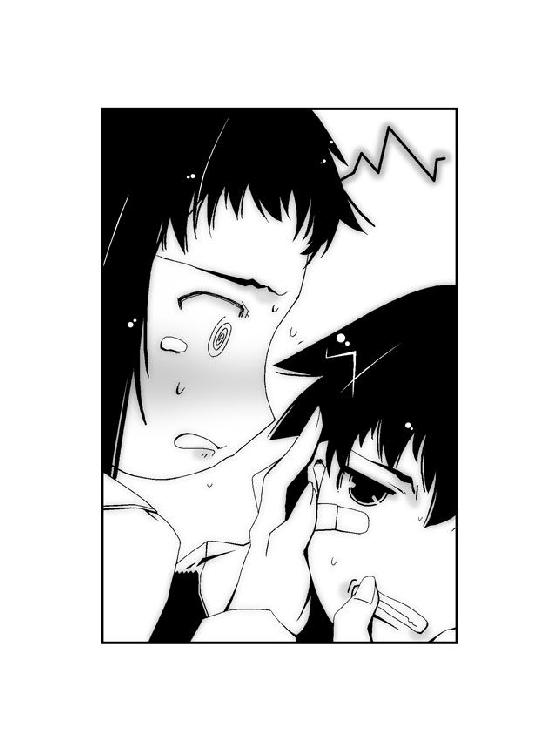
千晴は、何かと大助の世話を焼きたがる。
大助にとっては他の何よりも、そのことが嫌でたまらなかった。照れくさいという理由も、もちろんある。
「ぜんっぜん、普通じゃねーよ」
千晴はおそらく、今の大助をとりまく世界でたった一人しかいない存在だ。
──他の誰でもない大助を、必要としている人。
弟を守る姉としての義務なのだろう、千晴は大助に対してとても優しい。
優しすぎた。
千晴が自分の友達と遊ばなくなったのは──最近になって、過剰に大助のことを心配するようになってからだ。
何よりも大助のことを優先するあまり、千晴をとりまく世界は千晴を孤独にしていく。
大助なんかのために、自分の居場所を少しずつ削って切り離していく。
そして彼女自身、そのことに気づいていない。
「学校の行き帰りも、もうついてくんなよな」
大助が冷たく言うと、千晴は寂しげな顔をした。チクリと胸が痛んだが、顔には出さない。
──大助の姉、千晴はバカだ。
バカだから、千晴のそばもまた他の場所と同じように。
大助がいるべきではない、と思った。
＊
それは、五年前の記憶。
大助が独り、あの安アパートに置き去りにされる前の想い出だった。
「うっ──」
名も知らぬ街の裏通り。
人気のない路地の片隅で眠っていた薬屋大助は、まぶたを開いた。寒さをしのぐために身体にかけていた特環のロングコートをどかし、立ち上がる。
仮眠のつもりが、いつの間にか本格的に寝入ってしまったようだ。
「寝過ぎた......くそっ」
舌打ちし、ロングコートを着直す。周囲に人の目がないことを確認し、走り出す。
だが地面を蹴ろうとした脚から、ガクンと力が抜けた。少し程度の睡眠では、疲労は抜けなかったようだ。
──西遠市の『ＵＲＢＡＮ』で千晴の失踪を知った大助は、あれからずっと〝ある場所〟を目指して走り続けていた。
一体、何十キロという距離を走り続けていたのか分からない。一昨日に西遠市に到着してからこれまでで、今のほんの少しの睡眠がはじめての休息だった。身体の節々が悲鳴を上げ、疲労もだいぶ蓄積していた。
大助がどこを目指しているのか。
それを知る者は、大助自身を除いて他には誰もいない。
「くっ──」
膝に再び力を入れ、立ち上がる。
特別環境保全事務局から居場所を探知する機能がついたゴーグルは、自らの手で破壊した。
大助の居場所をつかむのは、簡単ではないはずだ。全国に行き届いた特環の捜索網にかからないため、公共の乗り物にも一切頼らず、多少の遠回りを覚悟で人気のない道を選んで走り続けてきた。
大助を邪魔者とみなしつつある中央本部に発見され、妨害されるわけにはいかない。
自らが所属する東中央支部を、巻き込むわけにはいかない。
だから大助は自分自身の判断で、特環と連絡を絶った。
「急がないと、先にアイツが......」
奥歯を嚙み、大助は顔を上げた。再び走り出す。
──昔の夢を見たのは、偶然ではなかった。
大助の姉、千晴が行方不明になったことを知った。
だから大助は、急がなくてはならない。
今、千晴がどこで何をしているのかは、分からない。
だが、だからこそ──。
時間が、なかった。
たとえそこに最悪の事態しか待っていないと知っていても、大助が行かなければならない。
「なんとか、アイツより先に......」
自分独りだけで、果たして目的を果たすことができるだろうか？
──そんな考えが、頭をよぎった。
向かいつつある場所で待っている絶望の正体を、大助は知っている。他の誰でもない、大助だけが知っているのだ。
東中央支部の力を借りることができれば、あるいは──。
「いや......」
甘い考えは、捨てた。
今の東中央支部では、足りない。そのこともまた、大助だけが知っていた。
「俺一人で、いい。今度こそは必ず──」
今までずっと、独りで戦ってきたのだ。
これからも大助は、独りで戦い続ける。
「今度こそは......！」
かっこう虫が、大助の身に降り立った。
消耗するのも気にせずに。
夢を削ることもいとわず。
自らの〝虫〟と同化した大助が、ある方角を目指して地を駆け抜けた。
1.05 The others
病室のカーテンが、そよ風に舞った。
五郎丸柊子は面会者用の椅子から立ち上がり、開いていた窓を閉めた。
暖かくなってきたとはいえ、風はまだ冷たい。新鮮な外の空気も、あたりすぎるとベッドに横たわっている人物にとっては毒だ。
窓を閉めると、外から聞こえていた雑音がピタリとなくなった。密室となった個人病室は、柊子とベッドの上の人物だけの二人だけの空間となる。
「この時間帯になると、さすがにちょっと寒いですね。大助さんも今ごろ、凍えてないといいですけど、たはは」
ベッドに横たわった青年に向かって、締まらない笑みを浮かべる。
返答は当然のごとく、なかった。柊子は苦笑し、再び椅子に座り直す。寝癖がついたままの髪が、ふわりと揺れた。顔にかけたメガネの位置を、人差し指で直す。
「あっ、土師センパイもちょっと寒そうですね。ご、ごめんなさい、気づかなくて......」
毛布がずれているのを見て、慌てて腰を浮かせた。毛布をかけ直し、一仕事終えたとばかりに息を吐く。
ベッドの上で静かに胸を上下させているのは、土師圭吾。特別環境保全事務局の東中央支部長を務める青年である。トレードマークである鋭い目つきと薄ら笑いも、眠っている状態では面影すら残っていなかった。顔のラインが細くなったのは、だいぶ瘦せたせいだ。
土師は昨年のクリスマス・イヴに葉芝市で繰り広げられた〝むしばね〟との決戦以来、ずっと意識を失ったままだった。妹の千莉が毎日のように訪れてはかいがいしく介護をしているが、現在まで目を醒ます予兆すら見せていない。
「あっ、千莉さんですか？ 今日は訓練がある日なんです。でも、もうすぐ終わる時間だから、あとからお見舞いにいらっしゃると思いますよ。──あっ、いえっ、私が強制したんじゃないです。彼女が自分も戦いたいと志願していて......だから、そのう......妹さんが戦闘に加わることになってしまったこと、怒らないでくださいね」
身動き一つしない土師に対し、柊子は身振りを加えて弁明した。
土師と同じ血を引いているだけあって、千莉は非常に頭が良い。先天的に視力を失っているというハンディを背負ってはいるが、訓練による成長は驚くべきものがあった。
「それに、あの......彼女にはまだ言ってません。大助さんが、消息を絶ったということは......」
自然と、視線が落ちた。膝元で組んだ自分の手を見る。
「大助さんのお姉さん──千晴さんの行方も、いまだに摑めていません」
西遠市へ訪れた大助が音信不通となったのは、柊子の口から千晴の失踪を告げた直後のことだった。
大助のゴーグルが、現地のアーバン・タワーという建物の屋上で発見された。彼の携帯電話の残骸も、同じ場所から見つかった。戦闘の痕跡が残っていたことから彼の身が心配されたが、塔から走り去る大助らしき少年の無事な姿の目撃証言も得ている。
地元の人間に姿を見られているあたり、よほど急いで現場をあとにしたのだろう。ゴーグルは大助の拳銃によって破壊されているということも、確認済みだ。
つまり大助は自らの判断で、特環を避けるようにして姿を消したということになる。
姉の千晴の居場所に、心当たりがあるのだろうか？
そうかもしれない。
そうじゃないのかもしれない。
ただ分かっていることは、大助は特別環境保全事務局という組織を無視し、動き出した。
中央本部だけではない。
仲間であるはずの東中央支部の存在すらも、ゴーグルとともに『ＵＲＢＡＮ』に残して。
──俺がもし東中央支部からいなくなったとしても、中央本部に負けないでくれよ。
電話を通じて、大助が最後に言った言葉。
彼は自分が言った言葉の意味を分かっているのだろうか？
彼の意志が確かならば、柊子は東中央支部を束ねる指揮官として、ある決断を下さなければならない──。
「ほ......ほんっと、彼は何を考えてるんでしょうね！ 私が思うに、きっと反抗期なんですよ！ 何も言わずに姿を消すなんて、心配かけて！ 帰ってきたら私、ビシッと叱っちゃいますから！ いつも叱られてる仕返し──じゃなくて、大人の人間としてですねぇ、怒るべき時は怒らないとダメなんです！」
土師は穏やかな表情で目を閉じたまま、何も言わない。
薬屋大助という少年を〝かっこう〟という最強の虫憑きに育て、自らもまた二十八歳という若さにもかかわらず中央本部と互角に渡り合っていた手腕の持ち主。大助を身を挺して救った彼は、非情とは言われながらも揺るぎない知性と強さを持っていた。
一方、現在の東中央支部長代理である柊子はというと。
──無能。
彼女の評価は、その一言で尽きた。自分自身も認めているあたり、救いがない。
だが他ならぬ無能な柊子を、土師は自らの後継者として選んだ──。
「だいたいですねぇ、大助さんがちょっといなくなったところで、東中央支部はビクともしませんから！ この私の敏腕で火種二号の有夏月さんだって仲間になったし、中央本部が最優先とされていた命令系統を覆したんですよ！ そうでもなきゃ今ごろ西遠市に行った大助さんだって、問答無用で戦闘許可が下りなかったはずですし──」
柊子は胸を張り、笑ってみせる。しかし両腕はしっかりとベッドのシーツをつかんでいた。
無能なりに、がんばってきたつもりだ。
杏本詩歌──〝ふゆほたる〟という少女を取引の道具として中央本部に引き渡した、あの時に誓ったのだ。戦う覚悟とともに。
〝虫〟という理不尽な存在のせいで、戦い傷つけ合う人々を救いたい。
「だから、ぜんっぜん心配ないんです！ 東中央支部は大丈夫！ うん、大丈夫です！ 絶対に大丈夫なんです！ 大丈夫......」
土師にもらった信頼と。
かつてどんな敵を前にしても決して敗北したことのない、大助さえいれば。
無能な柊子でも、それができると思っていた。
しかし──。
「大丈夫です......私が......なんとか......」
声が、震えた。ゆっくりと視線が下がっていき、白い床が視界に映った。
「私が......」
火種一号局員〝かっこう〟。
最強のカードは今、柊子の手元から失われた。
自らの意志で、東中央支部から去った。
「......私じゃなくて土師センパイだったら、彼が姿を消すこともなかったんでしょうか......」
ぽつり、と無意識の言葉が口からこぼれた。ハッとして頭を上げる。
「な、なんでもないです。今のナシです、ナシ！ うん、私はやりますよ！ 〝虫〟がナンボのもんですか！ 〝むしばね〟がナンボのもんですか！ 中央本部がナンボのもんですか！ でも魅車副本部長やハルキヨ、殲滅部隊はちょっと手加減してくれれば嬉しいですけど......と、とにかくがんばりますよ！ 見ててください、土師センパ──痛ぁっ！ 脛っ......脛っ......ベッドの角がっ......！」
勢い込んで立ち上がろうとして、柊子は脚をベッドにぶつけてうずくまる。
床の上で丸くなった、柊子の耳に──。
聞き覚えがある笑い声が、聞こえたような気がした。
ひどく皮肉めいた、薄笑い。
「──」
身体を丸めたまま、柊子は目を見開いた。
弱気になった自分の心が生んだ、たんなる幻聴にすぎない。──そう思った。
確かめるのが怖くて、顔を上げることができなかった。
──威勢が良いのは、結構だけどね。キミは張り切るほど、空回りするクセがある。
学生時代、柊子の家庭教師だった頃から変わらない、土師の皮肉げな口調が耳に蘇る。
──見てくれ、この成績表。キミは天才だ。ボクに生まれてはじめて絶望の二文字を教えてくれたという意味で、逆に授業料を払いたいくらいだよ。
この上なく嫌味で、この上なく意地の悪い家庭教師だった。
だが彼のほうはどこか楽しそうで、柊子もまた彼の指導が嫌ではなかった。当時の自分らしくもなくちょっと張り切ってみたのも、そのせいだったのだと思う。
「──」
張り切って勉強をしたテストは、本当はもっと解答できそうな気がした。
ただ、ある考えが頭をよぎったのを憶えている。
──成績が良くなったら、家庭教師を雇う必要もなくなっちゃうのかな。
結局、問題が解けそうな気がしたのは、柊子の勘違いだったようだ。それ以来、どうしても勉強に集中できず、成績はますます悪くなっていった。
ただなんとなく選んだ進学先、土師と同じ大学の入試試験の時だけは、またがんばった。
その結果、柊子は奇跡的に大学入試に合格して──。
「土師──センパイ──」
聞こえた薄笑いが、ただの幻聴でしかないことを確かめるために。
柊子は、ゆっくりと顔を上げた。
──窓の外の風は、ますます強くなりつつあった。
窓を閉めてから、一時間は経過しただろうか。透明なガラスに飛んできた葉っぱがあたり、小さな音を立てていた。
そよ風が、強風へと変わる。
病室から見える外の景色が、橙色に染まっていた。
もう、夕方だ。
「──あ、はい。どうぞぉ」
椅子に座って見舞い品のリンゴを剝いていた柊子は、病室の扉を振り返った。
ノックをした人物が、入り口を開けた。
緒方有夏月と、土師千莉だ。目が不自由な千莉の手を、有夏月が優しく引いている。
「支部長代理、あの......え？」
柊子が手にしたリンゴを見て、有夏月がぎょっとした。
「そのリンゴ......まさか、支部長が目を醒ま──」
「ご、誤解です、有夏月さん！」
柊子は慌てて、椅子から立ち上がった。リンゴとナイフを振り回し、必死に弁解する。
「お見舞い品のつまみ食いなんて、そんなつもりじゃ......！ ほら、そのぅ、そ、そうそう、もう千莉さんたちが来る頃だと思ってたんです！ お一ついかがですか？ 甘くて美味しいですよ！ ──違っ！ 甘いと知ってるわけじゃなくてですね、その」
「......」
有夏月が見る間に、呆れ顔になる。
慌てる柊子の横では、土師圭吾があいかわらず白い顔で眠り続けていた。そのことを確認した少年が、肩を落として嘆息する。
「べつに言いふらしたりしませんから、ナイフを振り回さないでください......あれ、少し目が赤いですよ？」
「たはは、ベッドにぶつけた脛の皮がめくれて、しかもすごく腫れちゃった状態で......さすがの私もマジ泣きです。あ、そぉだ、うちの支部で独自で救護班というものを創って──」
「大丈夫ですか、柊子さん？」
土師千莉が心配そうな表情を浮かべた。彼女は他の誰よりも、他人の変化に敏感である。
「声の調子が、いつもと少し違います。よっぽど痛かったんじゃ......」
「そんなに真剣になることないよ、千莉。この人はいつもこんな感じだから。──そんなことよりも、支部長代理。少しお話があるんです。ちょっといいですか？」
「あ、はい。──うぅ......千莉さんが優しいぶん、有夏月さんの冷静さが際だつなぁ......」
元は〝むしばね〟の一員だった有夏月は、特別環境保全事務局を嫌っている。親友である千莉さえいなければ今すぐにでも抜けたい、というのが彼の本音だろう。
柊子はリンゴを諦め、棚に置いた。千莉がベッドを見つめていることに気づき、視線を追う。
「......こちらは私に任せてください、土師センパイ」
まぶたを閉じたままの青年に向かって、言う。
「え？ なにか言いましたか？」
「あ、いえ！ ただの独り言ですよ、千莉さん」
愛想笑いを浮かべながら病室を出ると、廊下に見知った顔が並んでいた。
有夏月と同じ制服を着た少年は、〝兜〟というコードネームの局員である。戦闘能力はそれほど高くないが、任務の成功率は飛び抜けて優秀だ。どんな任務でもそつなくこなす彼のような部下は、きわめて貴重な人材である。
もう一人は、大人びた外見をした少女だった。先日、退院したばかりの白樫初季である。頭に巻いたターバンは、得意とする飛行能力を使った際に髪が視界を遮らないようにするためのものだ。彼女は大助と同じ同化型の虫憑きでもある。
「あれ？ 皆さん、通常任務......というか、待機中のはずじゃあ？ あ、土師センパイのお見舞いでしょうか」
「柊子さん。大クンが行方不明って、本当なんですか......？」
首を傾げる柊子に対し、不安そうな口調で言ったのは千莉だった。
「え......？ どうして、そのことを──」
「本当みたいだな」
壁際で腕を組んだ〝兜〟が、嘆息した。苛立っているようだ。
「えへへぇ。アタシが仲良しになった〝まいまい〟たんから、聞いちゃったんだよん。情報班が必死になって探しても、まだ見つかってないってねん」
独特なしゃべり方で言ったのは初季だ。
「はあ、彼女と仲良くできるなんて珍しい──って、ええっ？ あ、あれっ、それってかなり重い規律違反じゃなかったでしたっけ？ いえ、それよりも初季さん、貴女はまだ一応、中央本部の局員ですし、病み上がりですし、あんまり動き回られると非常に困るわけでして」
「失踪したのは一昨日だそうだな。なぜ俺たちの誰にも、捜索命令が出ていないんだ？」
四人の少年少女の視線が、柊子を睨んだ。
彼らそれぞれに、思いがあるのだろう。柊子は押し黙る。
「状況からすると、〝かっこう〟は自分から特環との連絡をとらないようにしているように見える。──今までに何度も、こういうケースは見てきた」
〝兜〟が厳しい口調で言う。
「これは局員が脱走したり、裏切る時にとるパターンだ」
「......」
柊子は黙り込んだ。静かに局員たちの視線を受け止める。
〝兜〟の言葉に、真っ先に反応したのは千莉だった。
「大クンが私たちを裏切るなんてこと、ありませんよね？」
有夏月から手をはなし、柊子の服をつかむ。
「どうして早く探し出してあげないんですか？ 大クンは色んな人に狙われてるんでしょう？ 今ごろ、危ない目に遭ってるかも......！」
「そうかも──しれませんね」
柊子の言葉に対し、千莉が絶句した。
「皆さんに捜索命令を出さなかったのは、それが不可能だからです。あらゆる種類の任務の中で人物の捜索という点で、貴方がた四人を起用するわけにはいかないんです」
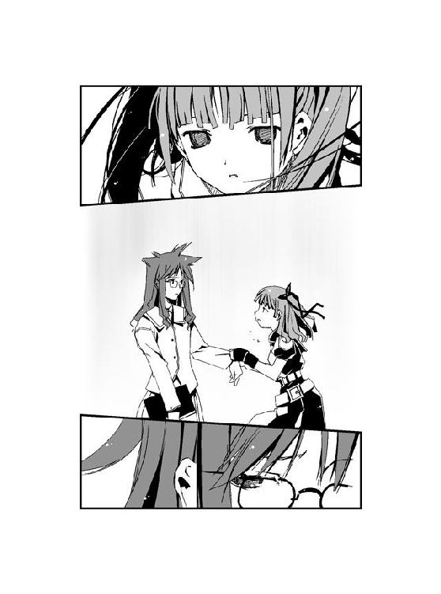
「どういうことですか？」
「有夏月さん。貴方は最も捜索任務に出すわけにはいきません。〝かっこう〟さんがいないという情報が万が一、〝むしばね〟に漏れたとします。その時は東中央支部もまた狙われる可能性があります。以前、彼らの仲間が襲ってきたように。もともと貴方を勧誘したのは、〝かっこう〟さんが不在の時に彼に代わる強力な局員を手元に置くためです」
有夏月が静かに、柊子を睨んだ。思惑を見透かされた気持ちなのだろう。
柊子が言った理由の半分は、実は噓だった。
緒方有夏月という少年は、〝かっこう〟としての大助に殺意を抱いている。もし彼を大助の捜索任務にあてたら、感情にまかせて単独行動をとった挙げ句、問答無用で戦闘を行うことは目に見えていた。事実関係を確かめるまでは、味方どうしで戦う最悪の事態は避けたい。
有夏月に代わって手を挙げたのは、白樫初季だった。
「じゃあアタシが行くよん！」
「初季さんは機動力こそ優れているものの、捜索という点では無力です。〝コノハ〟さんのように特別な索敵能力でもないかぎり、一人の人間を空から捜し出すのは困難でしょう」
「〝索敵〟能力なら──私が今日で訓練を終えました」
真剣な千莉の言葉を聞いて、柊子は言葉を詰まらせた。
優秀だとは思っていたが、予想を上回る成長の早さだ。柊子は彼女に訓練を許可したことが本当に正しかったのか、今さらながら迷いをおぼえる。
土師センパイ、千莉さんは戦いに不可欠な人間になってしまうかもしれません──。
「......残念ながら千莉さんは、機動力がありません。そして万が一、戦闘になった時に身を守る術も。戦闘力に不安があるという点は、初季さんとチームを組んでも同様です」
「......！」
悔しげに顔を歪めたのは、初季だった。強力な戦闘力を持つ他の同化型と異なり、彼女は戦う術を持たない。彼女が自らの戦闘力にコンプレックスを抱いていることも、知っている。
代わりに名乗り出たのは、〝兜〟だった。
「俺が組めばいい」
「怒りを買うことを承知で言えば......貴方と千莉さんのペアリングは、とても中途半端です。機動力、戦闘力、ともに不安要素が残ります。〝かっこう〟さんを狙う敵が多い以上、かなり危険な任務になるでしょう。捜し出すことができず、さらに二人ともやられてしまうことがあれば......それは最悪の事態です」
これまでならば、大助一人に任せれば良い任務だ。彼ならば機動力や情報収集能力をはじめとする捜索能力、そしてもちろん戦闘力を全て最高値で持ち合わせている。
だがその大助本人が、行方をくらましているのだ。
それどころか、状況は最悪といえる。
大助は自らの意志で、東中央支部を離脱したのだ。彼の行動は特別環境保全事務局において最大の規律違反を犯したものと判断される。
〝兜〟の言った通りだ。
大助の真意は分からずとも、現実として彼が行った行為、それは──。
特別環境保全事務局からの脱走。
暫定的とはいえ組織を束ねる指揮官として、柊子は決断を下さなければならない。
「〝かっこう〟さんの捜索に関しては手は打ってあります。石巻支部長補佐に、中央本部に出向をお願いしました」
怪訝そうに眉をひそめる局員たちに向かって、柊子は真剣な表情で言い放つ。
「だから皆さんは、いつでも動けるように待機していてください。〝かっこう〟さんを見つけた時こそ、皆さんの力が必要になります」
土師センパイ──。
心中で、土師圭吾に語りかける。
私は私のすべきことをします──。
「〝かっこう〟さんのとった行動は、東中央支部の規定に反する裏切り行為とみなさざるを得ません。彼の行方を摑み次第──」
柊子は支部長代理として、命令を下した。
「東中央支部は総力をもって、火種一号局員〝かっこう〟を捕獲します」
2.00 千晴 Part. 4
＊
ゆらゆら揺れて。
ふわふわ浮かぶ。
千晴が何もしなくても。
千晴が何もしなければ。
ずっと続くと思っていた、平穏な日々。
いつまでも。
大人になってからも、ずっと──。
『ねえ、千晴ー。今日こそ、弟クンの夢を食べちゃおうよー。あたし、お腹空いたよー』
帰りのＳＨＲも終わろうかという時刻、千晴の頭の中でアリア・ヴァレィが声を上げた。
教壇では教師が連絡事項を伝えている。
千晴はぼんやりとしたまま、上の空だった。
『千晴だって、もう食欲の限界のクセに』
アリアは不満そうだ。
『それにさぁ、千晴、この前、エルビオレーネに会ってから考えごとばっかりしてるしさー。さすがの千晴もアレを怖がるのは分かるけど、もっとあたしの相手してよー』
千晴は窓の外を見やり、自分の中に棲みついたアリアに語りかける。
あの人も......アリアと同じなんだよね──。
姿こそ見えないものの、肌で感じて分かっていた。
深紅のロングコートとサングラスを身につけた女、エルビオレーネ。彼女は今も、この近くに存在している。
『同じっていや同じかな。美味しい夢に惹かれる存在なのは、お互い様だしね。人の夢を喰って、虫憑きを生む。違うことといえば、生まれる虫憑きの種類が違うってこと』
〝始まりの三匹〟──。
『おー、ちょっと話しただけなのに、よくおぼえてたね。感心だよ！ あたしたちが極上の夢に誘われて、鉢合わせすることもたまにはあるよ。今回みたいにね。だからといって敵ってわけじゃないから、お互いのルールを決めてるんだけどね。ようは早い者勝ちってこと』
早い者勝ち──。
『エルはさぁ、たくさん喰らうクセに、妙に味にこだわるんだよね。夢が極上の味になるのを待って、喰らう。〝大喰い〟なんて呼ばれたりもしてるよ。その点あたしなんかは量や味よりも質を大事にする、こだわり派だね。好みの種類の夢を選ぶんだよ。一方、ディオレストイってのは珍味好きでさ、夢をわざと歪めて貶めてから食べる物好きなヤツだよ』
虫憑きを生むのは、同じ──。
『うん。逆に言えば、あたしたちの共通点はその点だけかもね。あたしはもう人格なんてないし、ディオは中途半端な人格が残ってるし、エルの人格はもう凝り固まっちゃってる。性格は違えど、性質は同じ。火に誘われる蛾と同じ。そういう習性なんだ。美味しい夢に誘われて、現れる。あ、でも性能はだいぶ違うけどね』
性能──。
『そうそう、あたしは平和主義者だからさ。戦うための能力は、ほとんどないんだ。そのクセ、同化型の虫憑きは超強力ってのは皮肉だけどね。よっぽどのイレギュラーがないかぎり、あたしは一人の夢を喰らった時点でまた眠りにつくからかな』
あたしには、戦う能力がない──。
『あたしはともかく、ディオはそこそこ強いかな。でもあの女、エルはめっちゃくちゃ強いよ。強いし、滅ぼせない理由もある。断言できるよ、今のエルを滅ぼせる存在はこの世界に存在しない。──それはそうと、やっと詳しい話を聞いてくれる気になったんだね！ このまま一気に、あたしたちが生まれた理由も聞いてみる？』
「ううん、聞きたくない」
千晴は声に出して、きっぱりと拒絶した。
偶然に終業のチャイムと重なったおかげで、千晴の声は誰にも聞かれなかった。
「〝虫〟とか虫憑きとか......〝始まりの三匹〟とか、そんなのあたしたちには関係ないもん」
小声で呟き、ランドセルを持って教室を出た。友達が声をかけてこようとしたが、急いでいる千晴はそれを無視する。
『関係ないって......それは問題発言だよ！ キミの中にいるあたしは、どうなるの？ ひどいよ、人権侵害だよ！ 訴えてやる！』
アリアの抗議を黙殺し、千晴は階段を駆け下りた。
下級生の教室の前で、弟が出てくるのを待つ。
大助はすぐに姿を現した。
「......げっ」
千晴の顔を見るなり、弟が顔をしかめた。千晴は衝撃を受ける。
「なに、そのリアクション！ お姉ちゃん、ショックだよ！」
「う、うるせーな！ 人の教室まで来て、大声だすなよ！ 恥ずかしーだろ！」
「恥ずかしくないよ！ 普通だよ！」
「ついてくんなよ、バカ千晴！」
早足で廊下を歩く大助の少し後ろを、千晴はついていく。
大助が同級生にイジメられていることは知っている。大助は優しいから、仕返しをしない。
だから姉の千晴が彼を守ってやらなければならない──。
『少し過保護すぎると思うけどね』
「過保護じゃないよ。普通だよ──」
階段を下りていく大助を、見つめる。
前を歩く弟から、甘い香りが漂っていた。
空腹でも、喉が渇いているわけでもない。しかし、大助から立ち上る芳醇な香りは、それが千晴にとって必要不可欠の栄養であるかのように彼女を誘った。
階段を下りる、大助。
千晴は今すぐにでも階段を飛び下り、邪魔な通行人をアリア・ヴァレィの能力ですり抜けて、背後から飛びかかりたい衝動にかられる。
「......大......助──」
千晴の髪が、ざわりと波立った。
最高に美味しい彼の夢を頰張ることを想像しただけで、千晴の口元に微笑が浮かび──。
「ご、ごめんなさいっ！」
どんっ、と後ろから肩を突き飛ばされ、我に返った。
『あーっ！ 惜しいっ！ もう少しだったのに邪魔しないでよ、もう！』
千晴とぶつかったのは、おとなしそうな少年だった。千晴に謝り、すぐにまた走り出す。
我を取り戻し、千晴は青ざめた顔を両手で覆う。息が荒くなっていた。
危なかった。
もう少しで千晴は、アリア・ヴァレィとしての衝動に負けてしまうところだった。
「しっかりしなきゃ......あたしは、大助のお姉ちゃんなんだから......」
ぶつぶつと呟く千晴の前方で、先ほどの少年が大助に声をかけた。
「大助くん！ なんで先に帰っちゃうの？ いっしょに帰ろうよ！」
「あ、ああ、うん。ごめん、蜜樹」
「今日こそ強くなるための方法、教えてね！ この前のテレビでやってたよ！ 強くなるには正義の心と慈愛の気持ちが必要なんだって！」
「あははっ、肉食戦隊だろ？ おまえ、あんなの観てんの？」
千晴は目を見開いた。
思わず、その場に立ちつくす。
大助が声を出して──笑っていた。
弟の楽しげな笑顔を見たのは、いつ以来だろうか？
『キミがそこまで我慢する意味なんて......ないんじゃない？』
アリアの声は、穏やかだった。自分自身を意地悪だというくせに、まるで千晴が苦しんでいるのを見たくないとでもいうような口ぶり。
『弟クンは、千晴がいなくてもきっと大丈夫だよ』
千晴がいなくても、大丈夫。
それはつまり、千晴が彼のことを忘れても大丈夫だということ。
しかし、千晴は──。
「......えへへ」
笑って、大助のあとを追いかける。靴を履き替え、大助と蜜樹の少し後ろをついて歩く。
「今日は記念日だね。大助に友達ができたんだよ」
友達と語る大助の横顔は、とても楽しそうだ。
千晴はまた〝食欲〟をそそられるが、懸命に衝動を抑え込む。
「よかったね、大助」
上機嫌に、弟と友達の邪魔にならないよう帰途につく。
そんな千晴に対し、アリアが震えた声で言った。
『なんなの、キミ──』
今まで一度も聞いたことのない、低い声だった。こらえきれなくなったようにアリアが叫ぶ。
『なんなんだよ、キミってさぁ！ なんであたしのことを恨まないわけ？ 勝手にキミに棲みついたのは、あたしなんだよ！ なんで弟クンのこと、恨まないわけ？ あたしがキミに棲みついたのは、彼がそばに居たせいなんだよ！ それなのにキミだけ、必死に我慢してさぁ！ 弟クンのために自分の友達なくしちゃったのに、その弟クンは自分だけ友達つくって笑ってるんだよ！ そんなヤツのことなんて、構うことないじゃん！ 何もかもあたしのせいにして、弟クンのせいにして、我慢なんてやめちゃえばいいじゃん！』
アリアの罵声は、千晴以外には聞こえない。アリアの声以外は、静かな帰り道だ。
「大助は虫憑きになんて、させないよ。そんなこと、あたしが絶対にさせない」
千晴は微笑する。
「うんとかわいがってやるのよ。もうイヤというほどね。──だってあたしは、大助のお姉ちゃんなんだもん」
『......っ！』
怒りのあまり、声にならなかったようだ。アリアが悶えているのが分かった。
学校がある丘を下りて住宅街に入ると、周囲にますます人気がなくなった。
小学生の下校時間は、早い。ただでさえ過疎化が進んでいる通りを歩く者は、大助とその友達、そして千晴しかいなかった。
「それにあたしは......大助のことを忘れたくないもん」
ぽつり、と千晴は言った。
『あたしとともに過ごした時間は、キミにとってはただの幻想。あたしの永い眠りに巻き込まれただけだからね。彼の夢を喰えば、それを栄養にしてまたあたしは蛹へと還る......』
「大助を虫憑きにしたことも、あたしは忘れちゃうんでしょ？ それだけは、イヤだよ」
弟から平穏な日々を奪って、自分はそのことを忘れてしまう。
そんな未来は、想像したくもない。
姉として守るべき弟を地獄に突き落としておいて、自分だけ平穏な日々を取り戻す。
千晴にとって、それは死ぬことよりも恐ろしいことだった。
「そんなの、ひどすぎるよ。お姉ちゃんのすることじゃないもん......」
『どっちにしろ、彼は虫憑きになるんだよ。──キミが彼の夢を喰わなければ......エルが喰らうんだ。第一、これまでのアリア・ヴァレィは誘われた夢を喰いそびれたことはない。キミが食欲に耐えられるはずがないんだよ』
「どっちにしろ、大助は虫憑きになるの？」
『そうだよ。キミが喰わなきゃ、エルが喰う。そのためにあたしはキミに棲みついて、エルもまた彼のそばへと誘われた』
「......ちがうよ」
千晴は微笑した。
住宅街の一角で、足を止める。
大助たちの背中が、少しずつ遠ざかっていく。
そして──。
背後からは──。
「どんどん美味しくなっていくわね、大助ちゃんの夢......」
紫色の粉が、降りかかった。
「まだ貴女は食べないのね、アリア？ 今回はずいぶん手こずってるみたい」
振り向かずとも、分かる。返事をせずとも、誰がそこにいるのか分かっていた。
「あたしはアリアのことを、恨んだりしないよ」
笑みを浮かべ、背後を振り返った。
佇んでいるのは虹色の瞳を持つ、深紅のロングコートの女。
〝始まりの三匹〟の一匹、エルビオレーネ。
『ま、まさか......冗談だよね、千晴......？』
アリアの声が動揺に揺れる。
千晴の髪が、一瞬にして碧く染まった。
自らも〝始まりの三匹〟の一匹、アリア・ヴァレィへと変貌した千晴がにっこりと笑う。
「アリアがあたしに棲みついたのは、大助を守るためなんだもん」
「どういうことかしらね、アリア？」
『いや、あの、ちょっと待った！ 何かの間違いだよ！ ち、千晴！ 千晴さん！ さっきのあたしの話、聞いてたよね？ あたしとエルじゃ、まるっきり戦闘能力が──』
慌てふためくアリアをよそに、千晴はエルビオレーネを睨みつける。
ゆらゆら揺れて。
ふわふわ浮かぶ。
千晴と大助の平穏な日々は──この先も決して、変わることがない。
「あたしがこの人をやっつけて、あたしは大助の夢を食べない。そうすれば......大助は虫憑きにもならないし、あたしは大助のことを忘れたりしないもん！」
『きゃーっ！』
アリアの悲鳴を聞きながら、千晴はエルビオレーネに飛びかかった。
サングラスの女が、虹色の瞳を細めた。
「ふふ──」
紫色の鱗粉が、はじけた。
鱗粉が集まって生まれたのは、巨大な昆虫の脚と一対のツノだった。ツノが道路に突き刺さり、コンクリートをめくれ上がらせる。
何トンもの重さを持つコンクリートの塊が、千晴にのしかかった。
千晴の碧い髪が、輝いた。頭から突っ込んだ自分の身体が、コンクリートにめり込んだ。
同化能力によってコンクリートを突き抜けた千晴は、エルビオレーネに向かって右腕を振り抜いた。
『ちょっと、待ってよ──』
千晴の軌跡を描いた空間が、歪んだ。地面を爆発させ、電柱の一部をえぐり取り、碧色の輝きがエルビオレーネに向かって襲いかかる。
『なんでキミが、その力を使えるんだよ！ あたしは教えてないのにっ！』
エルビオレーネが横に移動し、碧色の輝きをかわす。
「......っ！」
千晴は返す刀で左腕も振り抜こうとした。
『ダメだよ！ その力は......一歩間違えれば、キミの身体ごと吹っ飛んじゃうんだよ！』
「──そんなことはこれっぽちも怖くない。そんな顔ね」
笑うエルビオレーネを、紫色の鱗粉が取り囲んだ。空気に溶け込むように姿を消す。
千晴は慌てて周囲を見回し──。
「ねえ、アリア？」
女の声は、背後から聞こえた。
振り返ろうとした千晴の首筋を、衝撃が打ち抜いた。
意識が急速に遠ざかっていく。
「その子を躾けるのが、貴女の仕事。何度も許すほど、私たちは仲良しではないはずよね？」
『わ、分かってるよ、エル......』
「ふふ。ちょうど良い食前酒も見つけたわ。早くしないと、今回ばかりは私が勝ってしまうかもしれないわよ？」
『食前酒だって......？』
自分ではない二人が話し合う声を聞きながら──。
千晴は意識を失った。
＊
〝むしばね〟の大集会に潜入した、翌日。
断続的に続く振動が、シートに座った千晴を揺らしていた。
平日の昼間を走る快速列車の車内は、乗客もまばらだ。特に千晴たちは列車の最後尾にある車両の、さらに隅に陣取っている。同じ車両内には他に数人の乗客がいるだけだ。
窓の外を流れる街並みは、工事中の建物の姿が目立った。
千晴は西遠市以外の地理に詳しくないが、茶深によるとこのあたりの地域は国の計画で開発特区に指定されているそうだ。
三角形の伊達メガネを通して見るツギハギだらけの街は、田舎の西遠市とは違って活気に溢れているように見えた。千晴が乗る快速列車も、中心街に向かうにつれて乗客が増えていくことだろう。
「お気楽そうな顔で、鼻歌なんて歌ってんじゃねーわよ。それにあまり顔を上げんなっての」
千晴のとなりで腕を組んだ茶深が、諦め口調で言った。千晴のキャスケットを目深にかぶった彼女は、遠目に見たら少年のようにも見える。
「へ？ あたし、鼻歌なんて歌ってた？」
千晴が聞き返すと、やれやれといった様子で茶深が小さく首を振った。
「雑魚局員の私はともかく、アンタは今や第一級の指名手配犯なのよ。中央本部にもアンタの正体がバレてるってことが、〝コノハ〟を通じて分かったんだから。......ったく、薬屋大助の姉ってことが中央本部にバレるには、もう少し時間がかかると思ったのに、そのせいで行動を急がなきゃならなくなったのよ」
「ねえ、あたしって、そんなに危険だと思われてるの？」
千晴の無邪気な問いかけに、茶深が眉間に皺を寄せて答える。
「アンタは知らねーでしょうけど、過去に同化型の虫憑きと深い関わりのあった人間が、強力な力を持っちまった前例がいるのよ。それを抜きにしても、『ＵＲＢＡＮ』で中央本部殲滅班の〝かなた〟をやっつけたのは、アンタだと思われてるでしょーね」
「えっ？ そんなのはじめて聞いたよ！ なんでそうなるの？」
「〝かなた〟は強力な虫憑きだった。火種三号ってところね。私はもちろん、〝むしばね〟にもヤツを倒せるほどの虫憑きはいない。──アイジスパは最近になって〝むしばね〟に入ったばかりで、特環のデータにはねーの。かといって〝ふゆほたる〟が戦った形跡もない......となれば、もともと一号指定の関係者で私とゆー監視者をつけてまで危険視してたアンタが倒したってことになるわ。ご丁寧に失踪ってゆー怪しさ全開の行動をとってるしね」
「あたし、虫憑きじゃないよ！」
「もっと悪りーっての。かつて〝始まりの三匹〟だったんだから。──ともあれ、中央本部にしたら心中穏やかじゃねーわ。同化型の強力な虫憑きを危険視してる中央本部はなりふり構わず殺しにかかるでしょーね」
今さらながら、千晴は自分の置かれた状況に戦慄をおぼえた。同級生から危機感がないと言われるのも、仕方がない。
千晴と茶深はお互いのアイテムであるメガネとキャスケットを交換し、それぞれ身につけていた。髪の長い千晴だけは三つ編みにして、イメージチェンジをはかってみた。
変装というには心許ない気もするが、茶深曰く「アンタは何しても様になっていーわね。ちゃんと別人に見えるわよ」らしい。
「だから一刻も早くアンタを守る必要があって、今ここにいるわけ。何度も説明させるんじゃねーわ。──綾、アンタは一応、周りを警戒しときなさいよ」
「西遠市からここまでの線路沿いの電柱の数は、一万三千五百八十三本よ」
シートの窓際に座った綾が、外の景色をじっと凝視したまま呟いた。綾だけはいつもと変わらない制服姿だ。「こいつら......人の言うことを聞きやしねー」と茶深が毒づく。
「そう、アンタが──〝かっこう〟の姉貴である薬屋千晴が行方不明になったことは、〝むしばね〟にもバレてると思っておいて間違いねーわね」
茶深が人差し指でキャスケット持ち上げ、窓の景色を見る。あまりに熱心に凝視している綾に、つられたのかもしれない。
「そうなの？」
「〝かっこう〟が失踪したことを、あまりに簡単に〝むしばね〟が知ってるのが何よりの証拠だわ。結局、〝むしばね〟は〝ふゆほたる〟派と過激派の真っ二つに分裂して、どっから情報を手に入れたのか分からずじまいになった。アンタの姉貴はそう言ってたんでしょ、綾？」
「いま、一万三千六百五十二本よ」
「わあ、すごい動体視力だね、綾ちゃん」
「......〝むしばね〟の中にスパイがいんのよ。そいつの目的は〝むしばね〟の自滅と、あわよくば〝かっこう〟のような危険な人物との相討ちね」
茶深がこともなげに言いはなった。千晴は首をひねる。
「スパイ？」
「そーよ。おそらくは──特環の中央本部、それもかなり中核にいる人間が送り込んでるのね。鴇沢町での土師千莉の護送任務で〝むしばね〟の残党と〝かっこう〟を戦わせたのも、そうなるようにスパイが誘導したのよ。そしてまた、同じことを繰り返そうとしてるってわけ」
「よく分からないけど......そこまで分かっちゃうなんて、茶深ちゃんは頭が良いんだね」
千晴の素直な感想に反応したのは、綾だった。窓から千晴へと視線を移す。
「当然でしょう。悪巧みで茶深に勝てる人間なんていないもの」
「......それって微妙に褒めてないよ、綾ちゃん」
「私じゃなくても、ちょっと考えりゃ分かるっての。それだけ〝むしばね〟がバカの集まりってことよ。参謀役──ブレーンさえいない、指揮も戦いも何もかもレイディー・バードに頼りきってたの。あの女は冷静に作戦を考えられるよーなガラでもないってのに、そんなことすら〝むしばね〟のバカどもは分からなかった。相談役もなしにたった一人で、よくあそこまで巨大な組織を引っ張ってられたもんだわ、レイディーは」
話しているうちに苛ついてきたのか、茶深の口調が次第に強くなっていく。
「私に言わせりゃ、レイディーを殺したのは他ならぬ〝むしばね〟だわ。ブレーンさえいれば、土師圭吾の策略にハマることもなかった。誰もが舞台の中央で戦うレイディーに見とれるだけで、自ら舞台に上がろうとしなかった。脇役すらいない舞台の上で、レイディーは孤独に戦い続けて──散っていった。この私がひきずり下ろしてやる前にね」
綾の言っていた通り、茶深は自分の知らぬところで〝物語〟が進んでしまったのが気に入らないようだ。
菰之村茶深も、虫憑きの一人。
自らの夢を──見果てぬ野望を追い求める一人の少女だ。
「今はレイディーって人の代わりに、詩歌ちゃんがリーダーなんでしょ？」
千晴は茶深に向かって、たずねた。
「詩歌ちゃんも......レイディーみたいになっちゃわないよね？」
「〝ふゆほたる〟は強力な両腕、アイジスパと〝なみえ〟がいるからそうは簡単に行かねーでしょーけどね。でもやっぱり戦闘力だけだわ。結局は特環の魅車八重子や土師圭吾──はまだ意識不明だけど、とにかく手玉にとられるのは目に見えてる。アイジスパは頭の回転は速そうだったけど、じっくり作戦を練るようなタイプじゃねーだろーし」
茶深が嘲笑を浮かべた。
「断言してやるわ。〝ふゆほたる〟は〝むしばね〟の雑魚どもに力を借りようとしてるみてーだけど、よっぽど上手く使わねーかぎり連中は必ずまた足を引っ張る。レイディーの時みてーにね。果たして〝ふゆほたる〟は手駒を扱う才能ってのが、あんのかしらね？」
「......ねえ、それって茶深ちゃんなら、どうなの？」
「なにがよ」
「あたしには詩歌ちゃんのやろうとしてることが、とても立派に見えたよ。もし茶深ちゃんが詩歌ちゃんのお手伝いをしたら......それって、すごく助けになるんじゃないかな？」
千晴の言葉に対し、茶深は思いのほか動揺を見せた。目を丸くして千晴の顔を見つめ返す。
いつの間にか綾までもが、茶深を見つめていた。二人の視線が、茶深に集中する。
「バ、バカ言ってんじゃねーわ。なんで私が〝ふゆほたる〟を助けてやんねーといけねーのよ。私は誰に従うのも、まっぴらだっての」
「従うとかじゃなくて、力を合わせるんだよ。今だって、茶深ちゃんはすごく頭が良いのに力が足りないから、私を東中央支部に守らせようとしてるんでしょう？」
茶深が悔しげに、唇を嚙んだ。
千晴たちが向かっているのは、桜架市──。
東中央支部がある街だ。
綾一人しか戦力がいない現状では、万が一の時に千晴を守りきることができない。
そこで茶深が企てたのが、次の計画である。
千晴は自ら東中央支部に〝保護〟されると同時に、大助が所属している同支部で彼に関する話を聞き、記憶を完全に取り戻す努力をする。
茶深は別行動をし、〝コノハ〟と合流した後に大助の行方を捜索する。
必ず茶深のもとへ戻るという条件で、千晴は茶深が捜し出した大助と再会する──。
それが二人の間で交わされた取引──否、約束だった。
「だったら茶深ちゃんと詩歌ちゃんが組んだら、敵ナシだよ！ 最強コンビだよ！」
勢い込む千晴に対し、茶深は目をそらした。鼻で笑い飛ばす。
「はっ、くだんねー。私は〝ふゆほたる〟と仲良しになりてーわけじゃねーの。『ＵＲＢＡＮ』では敵どうしだったし......なにより秘種一号の〝ふゆほたる〟にとっちゃ、私みてーな雑魚なんて眼中ねーに決まってるわ」
「そんなにヒクツになることないじゃん！ 茶深ちゃんはやればできる子だよ！ それとも、ひょっとして......自信がないの？」
「はあ？ アンタ、口の利き方に気をつけなさいよ。バカには分かんねー次元の話だっての」
「バカじゃないよ、普通だよ！ 茶深ちゃんこそ、つまらないことで意地を張りすぎだよ！ そんなだからいつまでたっても地味なんだよ！」
「地味──てめー......ぶっ殺す！」
互いの服をつかみあう千晴と茶深を、しかし綾は止めようとはしなかった。再び窓の外を眺め、電柱の数を数え出す。
「ねえ、茶深」
──綾がぽつりと言った頃には、千晴と茶深はシートに座って顔をそむけ合っていた。両者ともに髪は乱れ、不機嫌顔だ。メガネも壊れてしまったので、変装も台無しである。
「......なによ」
「千晴は茶深にとって、大切な情報源だわ。〝始まりの三匹〟に関する記憶は、〝虫〟のことを知るためになくてはならないものだもの」
唐突に語り出した綾に、千晴と茶深は怪訝な顔を向けた。
「でも私は違うわね。私が死んだ時は、たとえばさっきの千晴の話みたいに〝ふゆほたる〟を利用することができれば、戦力を手に入れられるもの」
「何を言い出すかと思ったら......〝ふゆほたる〟と手を組む気なんてねーし、コソコソ動くぶんには綾だけでじゅうぶんよ。私の許可もなく、勝手に死ぬとか口走ってんじゃねーわ」
「ただ、そう思っただけよ。気にしないで」
あくまで機械的な口調で言い、綾が再び窓の外を眺める。
茶深は眉をひそめたが、特に追及はしなかった。
「さて、そろそろ別の車両に移動するわ」
シートから立ち上がり、茶深が千晴と綾を見下ろす。
「千晴は東中央支部に〝保護〟されつつ、私からの連絡を待つこと。アンタがかくまわれてる間に、私は〝コノハ〟と合流して〝かっこう〟の行方をつかんでおくから」
茶深の言葉に、千晴は頷いた。
「綾は何があっても、千晴といっしょにいなさい。何も喋るな。何もするな。ただし東中央支部で守りきれないと判断した時は、千晴を守って私のところまで連れてくること」
綾が小さく頷く。
「次に合流するのは──〝かっこう〟の行方をつかんだ時よ」
「うん！」
「ええ」
三人で見つめ合い、茶深が前方の車両へと去っていく。
綾とともに最後尾の車両に残された千晴は、ぼんやりと窓の外を流れる景色を眺める。
わずかに開いた窓から、桜架市の風が薫った。
西遠市とは違う、都会の匂いがする。
「ここで大助は暮らしてるんだね」
自然と微笑が浮かんだ。独り言だと理解したのかどうか、綾は無言だった。
拝啓、いかがお過ごしですか──。
流れていく景色を眺めていると、我知らず〝語りがけ癖〟が出た。
キミが住んでる街に来たよ。けっこう都会なんだね。......今はこの街にいないのかもしれないけど、ここで暮らしてるキミはあか抜けてたりするのかな？
海が近いのか、風に運ばれて潮の匂いがかすかに鼻孔をくすぐった。
「キミはこの街で色んな人と出会ってるんだろうね。あたしが西遠市で、そうだったように」
胸の高揚を抑えられず、口に出して語り出す。
「友達は、できた？ 恋人は......いるのなら、ちゃんとお姉ちゃんに紹介しなきゃダメだよ」
意地悪っぽく笑うと同時に、桜架駅に到着を知らせる車内アナウンスが響いた。
快速列車が減速し、停止する。
途端に、車内が暗くなった。
桜架駅のホームに到着した先頭車両を、異様な集団が取り囲んでいた。
顔全体を覆うような機械的なゴーグルを装着し、漆黒のロングコートを纏った人々だ。乗車口はもちろんのこと、窓の外や、天井の上からも足音が聞こえた。滑るように車内に入り込むと同時に、同じ車両に乗っていた乗客を拘束し、壁におしつける。
シートに座った千晴と綾の周りも、黒コートたちに囲まれていた。立ち上がる暇もない。
しかし、千晴は動じない。綾も平然としていた。
茶深の言っていた通りだ。──公共の乗り物を使おうものなら、たちまち特別環境保全事務局の情報網にひっかかる。そのことを承知で、千晴はあえて彼らに〝保護〟されるべく、電車に乗って桜架市へとやってきたのである。
今ごろ、茶深は別の車両から脱出しているはずだ。完全に停車する直前に、彼女は窓から逃げる算段となっている。
「薬屋千晴さんですね」
黒コートたちの間から現れたのは、スーツ姿の女性だった。書類を抱え、頭に寝癖をつけたままの若い女性が、落ち着きのない口調で言う。
「えっとですね、細かい事情は説明は後からさせていただきますが、現在のところ貴女は非常に危険な立場にありまして......政府機関であるところの我々といっしょに、来ていただくことになります。なぜ貴女が桜架市へやってきたのか、その理由も後に聞かせていただくことになるでしょう」
東中央支部長代理である彼女の特徴は、茶深から聞いている。五郎丸柊子というのは、彼女のことだろう。
「薬屋千晴さん。特別環境保全事務局の規定により、貴女の身柄を拘束します」
千晴はぐるりと自分を取り囲む面々を見回し、にっこりと微笑んだ。
立ち上がり、弟の上司だという女性に向かって一礼する。
「はじめまして。あたしの可愛い弟が、お世話になっております」
顔を上げると、千晴は何よりもまず大切なことをたずねた。
「──ところで大助は、誰よりも優しくて良い子ですよね？」
2.01 The others
千晴や綾と別れ、茶深は赤牧市へとやってきた。
キャスケットを目深にかぶっただけの変装でここまで乗り物を乗り継いで来られたのは、茶深のような小物など特別環境保全事務局にとってはどうでもいい存在だということだろう。
「〝ふゆほたる〟と手を組めですって？ くそったれな思いつきもいーところだわ」
ぶつぶつと呟きながら、目的地を目指して街を歩いていく。
赤牧市は特別環境保全事務局の中枢、中央本部の本拠地がおかれている街だ。中心街には、高層ビルが立ち並んでいる。はじめて赤牧市を訪れた茶深は、排気ガスの臭いがたちこめる都会の空気を吸い込んで顔をしかめる。
「あっちは、そう......虫憑きを救おうと戦いはじめたプリンセスね。頼もしい騎士を味方につけて、いざ出陣ってなところよ」
大通りに沿って並んだビルの一つに、足を踏み入れる。中心街にある建物の中でも、特に背の高いオフィスビルだ。
「一方、私は──」
入り口前にいた警備員が、茶深を止めようとした。
茶深は警備員の顔も見ずに、軽く腕を振り払った。
直後、茶深の腕から噴き出した紅い影が、警備員の背後で収束した。深紅に輝く女王蜂が、鋭利な針を男の延髄に突き刺した。
「リンゴに毒を仕込むくらいしか脳のない、卑怯で汚ねー魔女──」
茶深にしか見えない女王蜂が、警備員の中に吸い込まれていった。「う、あ......」と呻いて警備員の動きが止まる。
菰之村茶深の〝虫〟の能力は、精神汚染。干渉した人間の最も強い感情を増幅させ、冷静な判断力を奪うのだ。汚染の濃度によって杉都綾のように茶深が扱いやすいように思考能力を鈍らせたり、眼前の警備員のように前後不能に陥らせることもできる。
「舞台の中央で踊る主人公に嫉妬してつけ狙う、ただの脇役にすぎねーのよ」
人形のように立ちつくす警備員の横をすり抜け、茶深はエレベータへと向かっていく。
ボタンを押すと、扉はすぐに開いた。
無人の機体に乗り込む。
壁によりかかった茶深の目の前で、勝手に最上階を示すボタンが点灯した。エレベータの扉がゆっくりと閉まっていく。
「誰にも尾けられてねーでしょーね、〝コノハ〟」
茶深の声が、機体内に反響した。
視界が歪んだと思った直後、茶深の前に異形の怪物が現れた。
二枚に重ねた葉っぱのような躰に大きな眼をつけた、大きな〝虫〟だ。光の屈折率を操って姿を消す能力を持つハムシの横には、階数を示すボタンの前に立った少女の姿があった。
「......」
中央本部戦闘班所属の火種四号局員、〝コノハ〟だ。中央本部の白いロングコートを纏い、ゴーグルを装着している。背を向けたまま黙り込んでいる彼女もまた、茶深の能力を植えつけ、言うことをきかせている手駒の一人である。
「返事くらいしろっての」
「ご、ごめんなさい......大丈夫、誰にも姿は見られてないわ......」
茶深が背中を軽く蹴飛ばすと、〝コノハ〟がぼそぼそと答えた。
「ほら、モタモタしてねーで報告。さっさとしなさい」
「ち、ちゃんと報告するから......そ、そんなに、蹴らないで」
〝コノハ〟を支配している感情は、〝怒り〟である。彼女に関してはごくわずかしか茶深の能力を植えつけていないため、定期的にこうやって感情を刺激する必要がある。
「中央本部も東中央支部も、まだ〝かっこう〟を発見できていないみたい......」
白コートの少女が屈辱に唇を嚙みながらも、言われるがままに報告を始めた。
「ただ中央本部内で動きがあるのは、分かってる。四号指定の私じゃ情報を引き出せないのは、西遠市の時と同じ......」
「魅車八重子直属、殲滅班──〝かなた〟のお仲間ってことね」
殲滅班という高位局員で構成された特殊チームの存在を、茶深はすでにつかんでいた。表向きには実在しないが、〝コノハ〟を通じての鴇沢町と西遠市の『ＵＲＢＡＮ』で起きた出来事から、茶深はその存在を確認している。
「鴇沢町の時と同じね。〝かっこう〟を中央本部は消したがってる。音信不通で東中央支部のサポートもない現状は、まさに暗殺する千載一遇のチャンスだわ。中央本部の情報収集能力はハンパじゃねー。必ず〝かっこう〟を見つけるでしょーね」
「この数日、ずっと中央本部の動向を探っていたけど......ついさっき、数チームが出動したのを確認できたわ。見たこともない局員ばかりだったけど、きっと──全員がすごく強い」
茶深は舌打ちした。
「このタイミングで〝かっこう〟捜索とは別の殲滅班──くそったれ、千晴の所在がバレたわね。思った通り、情報を摑む速さは異常だわ」
「千晴は大丈夫なの......？」
「東中央支部と綾に期待するしかねーわ」
苦々しく言い放った茶深の耳に、電子音が響いた。
最上階にエレベータが到着した。二人は機体を降りて、目の前の階段を上っていく。
屋上へ出ると、赤牧市の街並みが拡がっていた。
突風で茶深がかぶったキャスケットが宙に舞った。遠くに見える観覧車めがけて、帽子が赤牧市の上空を飛んでいく。
「こっちはこっちで、やるべきことをやるだけよ。〝コノハ〟」
「ええ......」
屋上の中央に進み出た〝コノハ〟の横で、異形のハムシがさらに躰を膨らませた。〝コノハ〟の三倍はある躰の中央で、ギョロリと大きな眼が目の前の景色を観測する。ハムシの脚が伸びて、〝コノハ〟のゴーグルにある端子と繫がる。
「特環の局員の暗殺なんつー裏の任務に〝コノハ〟を動員できなかったのは、さぞ悔しかったでしょーね。まあ時間はかかるでしょーけど、アンタの能力なら今日中には──」
「条件指定、完了。望遠、倍率指定、完了。──無限モード、解放......」
〝コノハ〟の声が響いた瞬間、風船のようにハムシの躰が一気に膨張した。
「なっ──」
驚く茶深の見ている前で、ハムシの眼が望遠鏡のレンズのように躰からせり出した。
「探索をはじめるわ......」
「〝コノハ〟......ア、アンタ、いったい何よ、こりゃあ......？」
「観測地点からの直線方向にある視界だけじゃなく......鏡やガラスから人間の瞳まで、死角を映し出す反射物の映像まで拡大して辿っていくの。たとえ隠れていたって、その姿は何かしらの反射物に映し出されているわ。──最近、調子が良いの。今じゃ密室以外の映像は、大幅に探索範囲がひろがったわ......」
茶深は絶句した。
綾だけでなく、〝コノハ〟まで、急速に能力を成長させつつあるようだ。もはや彼女らの言う、調子が良いとかいうレベルではない。
「〝コノハ〟......この能力のことは、中央本部に報告するんじゃねーわよ。やっぱりアンタは当分、四号指定のままでいーわ」
「どうして......？ ──い、痛い、分かったわ、言うとおりにするから、蹴らないで......」
これまでは探索能力を持つ虫憑きの一人にすぎなかったが、あまりに能力が高いと火種ではなく秘種──中央本部に敵をなす勢力に対する秘密兵器として扱われる可能性がある。そうなれば今までのように、茶深がコンタクトをとることも困難になるだろう。
そんなことを考えているうちに、〝コノハ〟が声を上げた。
「──見つけたわ。〝かっこう〟本人と断定」
あまりにも早すぎる発見報告に、背筋に冷たいものが走った。
コイツが中央本部に操られるようなことでもあったら......私なんて一瞬で見つかっちまうでしょーね──。
「遅せーわよ。手を抜いてんじゃねーっての」
「ご、ごめんなさい......い、痛い......」
「ほら、さっさと報告」
「私の能力でできる探索範囲ギリギリ......かなり遠いわ......それに──」
茶深の蹴りに顔をしかめながら、〝コノハ〟が言う。
「戦ってるわ」
舌打ちする。相手が何者であるか、訊かずとも想像がついた。一足、遅かったようだ。
「......いちおー訊いとくけど、相手は？」
「白い仮面をつけた虫憑きの集団......」
「〝むしばね〟──あのバカどもが独自に〝かっこう〟を見つけられるわけがねー。また言いように踊らされてるってわけ」
吐き捨てるように言い、茶深は身を翻した。
「行くわよ。そこらで車かバイクをかっぱらう。アンタの能力で姿を隠せば、中央本部の捜索網にひっかからずにすむでしょ」
「どうするの......？」
「悪巧みは私の専売特許よ。毒リンゴを送りつけて、そのことを思い知らせてやるわ」
〝かっこう〟が自分の意志でどこかへ向かっているのなら、何か目的があるはずだ。
茶深は己の目で真相を確かめるべく、その場をあとにした。
2.02 大助 Part. 3
＊
紫央小学校からの帰り道。
ランドセルを背負った大助は、小走りに帰り道を急いでいた。
学校から伸びる坂道を駆け下り、住宅街へと入る。
「いっしょに帰ろうって言ったのは、蜜樹のほうなのに、あいつ」
不機嫌な表情を浮かべはしたものの、内心はそれほど怒ってはいなかった。
同じクラスの津村蜜樹という男子児童と友達になってからは、以前ほど学校へ行くのがイヤではなくなっていた。
今では大助にからんでくるクラスメートもいない。机を隠されることもないし、大助が屋上で下校時間まで時間をつぶすこともなくなった。
なにより大助に友達ができたことを知ると、姉の千晴が必要以上に彼をかまうこともなくなっていた。このまま千晴が大助ではなく自分の居場所を取り戻してくれるなら、あんな姉でも少しは仲良くしてやってもいいと思う。
閑散とした住宅街の角を曲がろうとした大助の前で、一人の女性が姿を現した。深紅のロングコートを纏った長身の女だ。丸いサングラスが夕日を反射している。
「もっと美味しく......もっと熟した夢を──」
すれ違い様に、女性が呟いた。
ぞっとするほど艶やかな声だった。一瞬、女が舌なめずりをしたように見えた。まるで──濃厚なワインを飲んだばかりで、なお抑えられない食欲を剝き出しにするかのように。
悪寒をおぼえて振り返ると、すでに女性の姿は見えなくなっていた。曲がり角の向こうに消えていったのだろうが、怖くて確認はできなかった。
大助は逃げるようにして、地面を蹴った。
「あっ、蜜樹」
通りの先に見慣れた友達の後ろ姿を見つけ、ほっとする。
「なんだよ、おまえがいっしょに帰ろうって言い出したんだろ。先に帰るなよな」
駆けよって、笑みを浮かべてみせる。気弱な蜜樹もまた、意地の悪いクラスメートの標的にされていた。大助は彼を守ると約束したのだ。
だが蜜樹は大助を無視し、先に歩き出した。
「......？ おい、蜜樹」
肩をつかんでとめようとした大助の腕を、蜜樹が振り払った。
振り返った蜜樹は、笑顔を浮かべていた。
それまでの彼とは別人のような──大助を見下した笑み。
「──」
蜜樹が、口を動かした。
突風の吹きすさぶ音で、その言葉はすぐにかき消された。
だが大助にだけは、彼が口にした台詞が聞こえていた。
──大助くんは、もういらない──。
言葉の意味を理解するのに、時間がかかった。
──ぼくは強くなったから──。
理解すると、何も考えられなくなった。
「......でだよ」
消え入りそうな大助の声を黙殺し、蜜樹が去っていく。
大助は独り、その場に立ちつくした。
「なんでだよ......蜜樹......」
呆然と呟く大助の眼前を、紫色に輝く鱗粉がよぎった。
＊
五年前のあの時、はじめて自覚したのかもしれない。
俺は──。
はじめて自分が抱いていた苛立ち、不安の正体を知ったのかもしれない。
誰にも必要とされていない──。
幼いが故の弱さ。
幼いが故の純粋さ。
イチかゼロしかない極端な思考回路で、短絡的に思ってしまったのだろう。
居場所が、欲しい──。
誰にも見向きもされず、むしろ居るだけで争いの種となるような教室でもなく。
怪我をしても気づいてもらえない、無関心の母親のもとでもなく。
弱さを補うための道具でしかないような、かりそめの友人のもとでもなく。
自分を犠牲にしてまで守ってくれる、優しすぎる姉のもとでもない。
そんな、居場所。
もしこの世にそんな居場所があったら、他には何もいらない──。
そう、願ってしまった。
「......っ！」
──一瞬、疲労のせいで意識が飛びかけていたようだ。
閃光のように、五年前の光景がよぎっていた。
現実へと引き戻された大助の眼前に現れたのは巨大な口器──大助の頭を嚙み切ろうとする〝虫〟の姿だった。
「ちっ......！」
ロングコートをはためかせ、大助は両腕で口器を受け止める。
かっこう虫と同化した大助の腕が、〝虫〟の顎を力まかせに上下に引き裂いた。背負い投げをするように地面に叩きつけ、脚を暴れさせる〝虫〟の腹に拳を叩きつける。
轟音とともに、〝虫〟の躰が四散した。岩肌が剝き出しになった地面に亀裂が走り、大きな水柱が上がる。
「はあっ......！ はあっ......！」
荒い息をつきながら、鋭い視線を周囲に向ける。
大助を取り囲む白仮面の集団が、威圧感に圧されて一瞬、動きが止まった。どさり、と一人の白仮面が倒れ臥す。大助が殺した叩き潰した〝虫〟の宿主だろう。
西遠市の『ＵＲＢＡＮ』で、自ら消息を絶ってから二日間。
大助はろくに睡眠をとらず、中央本部や〝むしばね〟の捜索網をかいくぐるために乗り物も使わず、ひたすらに走り続けた。
できるかぎり人目を避けてきたが、どこかで目撃されてしまったのだろう。市街地を抜けた途端に、〝むしばね〟のメンバーたちがいっせいに襲いかかってきた。
大助が今いるのは、自動車道からは離れた山間地帯だ。山越えのために道ではなく小川沿いに走っていると、いつの間にか〝むしばね〟たちに囲まれていた。
すでに十人ほどを返り討ちにしていたが、〝むしばね〟は決して諦めようとしなかった。次から次へと大助に躍りかかってくる。
「休ませるんじゃねぇっ！ 全員でかかるんだよっ！」
カミキリムシに似た〝虫〟を従えた少年が、怒りの声を上げた。仲間たちがシニカと呼んでいる彼が、白仮面たちを束ねるリーダーのようだ。
大助は身を翻し、小川を駆け下りていく。立ちふさがった〝虫〟の牙を受け止め、複眼に拳を叩きつける。頑丈な甲殻を纏った〝虫〟が吹っ飛び、周囲の木々をなぎ倒して砕け散った。
〝虫〟と同化して肉体が強化されているとはいえ、素手で〝虫〟を打ち倒す大助に白仮面たちが怯む。数では勝っているものの、戦闘能力の差は歴然としていた。
「ばっ、化けモンだ......人間じゃないっ......！」
「人間に決まってんだろうが！ 確実に弱ってきてるのが証拠だ！ あと少しだぜ！」
指示を出すシニカの声には、しかし焦りの色が浮かんでいた。
「ちくしょう、鱗はどこに消えやがった？ あいつさえいりゃあ──」
「くっ......」
再び走り出そうとした大助の意識が一瞬、朦朧とした。
二日間の疲労と〝虫〟の力を使いすぎたせいで、心身ともに消耗していた。特に力の消費が激しい拳銃による攻撃を温存しているとはいえ、戦いが長引くほど不利になるのは明らかだ。
それでも気力を奮い起こして走る大助を、白仮面たちが襲いかかる。
「なにが〝戦わない戦い〟だ......！ ンなもん、クソくらえだぜ！」
何匹の〝虫〟を殺しただろう。
何人の白仮面が山の合間に倒れていっただろう。
わきめもふらずに小川を降りていく大助は、もう自分が戦っているという感覚すら、麻痺していた。眼前に立ち塞がった〝虫〟を、機械的に打ち倒していく。
拳で〝虫〟の頭を砕き、木を蹴った反動で跳躍する。空から攻撃を繰り出そうとしていた別の〝虫〟の腹に腕を突き刺し、地面に落下する勢いで岩肌に叩きつける。
四散した〝虫〟の体液が、大助や白仮面たちに降り注いだ。
「てめぇだけは許せねぇんだよ！ 〝かっこう〟......てめぇだけはっ......！」
無心で走る大助の耳に聞こえ続けるのは、シニカが吐き出す憎悪。
純粋な怨嗟が込められた言葉だった。
「レイディーは、俺たち虫憑きの希望だったんだ......！ それなのに、てめぇがレイディーを殺した......！」
大助めがけ、切断された木が倒れ込んだ。
木を跳び越えた彼の視界に、翅を振動させて飛行する〝虫〟が襲いかかる。
「俺たちのレイディーを......てめぇが殺したんだ......！」
山全体に、銃声が木霊した。
とっさに抜いた自動式拳銃から撃ち出された銃弾が、〝虫〟を粉砕する。
「〝かっこう〟......てめぇだけは......」
「うおおおおっ！」
大助が吼えた。身体に浮かんだ緑色の模様が、鈍い輝きを放った。
拳を振るうたびに、蹴りを放つたびに、拳銃の引き金を引くたびに〝虫〟が跡形もなく粉砕され、一人ずつ白仮面が倒れていく。──大助が駆け下りてきた小川に、延々と欠落者になった白仮面たちの列ができていた。
大助は前転をするように跳躍し、小川の中にいる〝虫〟めがけて拳を振り下ろした。〝虫〟を打ち砕いてなお余った衝撃が吹き荒れ、一瞬だけ小川の流れを逆流させる。
仮面をかぶった者たちの、それが最後の一人だった。
静けさが訪れた山間部に、絶望にうちひしがれた素顔を晒したシニカが佇んでいた。
「......」
大助は肩で息をしながら、悠然とシニカを睨みつける。
数だけで、大助に勝てると思っていたのだろうか？ 〝むしばね〟で彼と対等に戦うことができたのは、レイディー・バード──立花利菜だけだ。そのことは誰よりも〝むしばね〟自身が知っていたはずである。
真っ先に大助を発見したことといい、裏で糸を引く者の姿が垣間見えたような気がした。
「......おい、〝かっこう〟......」
無言で拳銃を構える大助に対し、シニカが呟いた。
「レイディーは最期に......なんて言っていた......？ 死ぬ前に......あとに遺していく俺たちのために、たった一言でもいい......なにか言い残してくれてはいなかったか......？」
自らの敗北を悟った上で、シニカが大助に尋ねる。
少年の姿を見て、大助もまた悟っていた。
今こうして大助と戦っている最中も、彼らは大助を見てはいない。
シニカが見つめ、追い求めているのは利菜の残影──命を失ってなお彼らの心に焼きついたままのかつてのリーダーの姿だ。自分が虫憑きであることで忍び寄る死の恐怖の中、利菜だけが希望の光だったのだろう。それほどまでに〝むしばね〟は利菜に憧れ、すがっていた。
「〝今になって、思い出した〟──」
大助は静かに言った。
──あたしは......とっくに負けてたんだ......自分の〝虫〟に......。
彼の腕の中で息絶える直前、利菜は微笑んでいた。
虫憑きのために身を削って戦い抜いた少女は、嬉しそうに笑っていたのだ。
「〝本当の夢......シアワセになれる、居場所が欲しかった〟──あいつは自分の〝虫〟に夢を喰い尽くされる直前までそう言って、笑っていた」
「......！」
シニカが顔を上げた。絶句し、しかしようやく分かったとばかりにうなだれる。
「そうだよなぁ......そうに決まってるんだ。レイディーだって俺たちと同じ、虫憑きだもんな。自分の夢を持ってたはずなのに、俺たちがレイディーの夢を忘れさせたんだ......俺たちは彼女に色んなもんを背負わせすぎた......」
「......」
「レイディーは〝むしばね〟を守るために戦って、そのせいで自分の〝虫〟に夢を喰い尽くされて......そして、死んだ......てめぇが殺したんじゃなかったんだな」
少年の頰を、透明な滴が伝った。足元に落ちた水滴が、小川の一部となって下流にいる大助のもとへと流れる。
大助はシニカの言葉を、肯定も否定もしなかった。
立花利菜という少女に対する想いは、大助の中にも語り尽くせないものがある。
「──俺が、最後だ」
シニカの足元で、カミキリムシが触覚を揺らした。
「レイディーが背負った〝むしばね〟は、俺で終わる。これからは〝ふゆほたる〟──いや、スノウ・フライが〝むしばね〟を新しく生まれ変わらせてくれる。虫憑きの戦いを終わらせるまで戦い抜くと誓ったからな。あいつは強いぜ。なにしろてめぇら特環なんて、眼中にねぇんだからな」
〝ふゆほたる〟。
杏本詩歌もまた、大助や利菜と同じ夢を抱いている。
ただの偶然なのか、それとも同じ夢を持っているからこそ三人の虫憑きは交錯し、戦い合う運命にあるのか。それは分からない。
だがこれからは、詩歌が率いる〝むしばね〟と戦うことになる。
自然と大助の拳銃を握る手に、力が込められた。
「だから俺は、心おきなくてめぇと戦ってやる。レイディーの敵討ちなんかじゃなく──俺自身の夢を守るためにな！」
カミキリムシが跳躍し、大助めがけて襲いかかった。
大助は奥歯を嚙みしめた。引き金を引こうとして──。
「『〝かっこう〟は油断した』──『鱗の攻撃』！」
「！」
飛びかかったカミキリムシの躰から、鋭い刃を持つ円盤が現れた。
──否、死角からカミキリムシを貫通し、何枚もの輝く円盤が大助めがけて飛来したのだ。
大助はとっさに、耐刃性のあるロングコートで防御した。だが衝撃に負けた大助の身体が、吹っ飛ばされる。
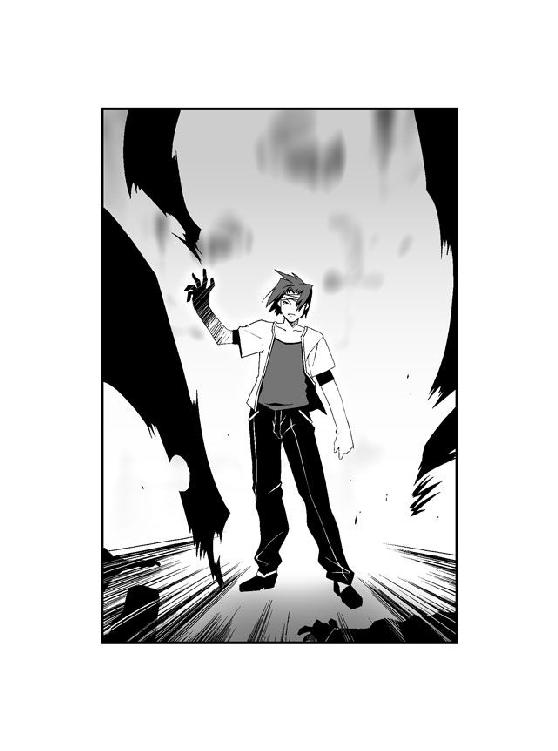
木に激突した大助に、小川の中から現れた岩の塊が突進した。
無数の岩が集まって生まれた〝虫〟が、大助に体当たりをかける。
「ぐああっ！」
超重量の体当たりが、山を揺るがした。木と岩の塊に挟まれ、大助の全身の骨が軋む。
「『２コンボアタックが成功した』──『クリティカルヒット』！ 『〝かっこう〟に１２８のダメージを与えた』！」
膝をついた大助を、三人の黒い人影が遠巻きに包囲していた。
正面に立っているのは、小柄な少年だ。キューブトップの服の上から特別環境保全事務局のロングコートを纏っている。両目の下に隈のようなアイブラックを塗った顔には、歪んだ笑みが貼りついていた。
光の模様を浮かべた円盤が、アイブラックの少年──鱗の周囲で一列に並んだ。それが彼の〝虫〟なのだろう、整列した円盤から無数の脚が飛び出し、少年の身体を這うワラジムシになった。分離型の〝虫〟にも見えるが、自在に形態を変えることができるのは特殊型の特徴だ。
小川の下流には、やはり特環のコートを纏った女がいた。ゴーグルとマスクで顔を隠した女の足元の岩が盛り上がり、大きな〝虫〟となる。この女も特殊型の虫憑きだと分かる。
さらに上流にいるのはコートとゴーグル、マスクの装備をした男だ。男のそばにいる〝虫〟には見覚えがあった。丸い躰にアンテナのような触覚を揺らした〝虫〟──西遠市の『ＵＲＢＡＮ』で戦った、盗聴能力を持つ〝虫〟だ。
「てめぇ......鱗──」
体液をまき散らすカミキリムシの横で、シニカが両膝をついた。
「〝かっこう〟を弱らせるための捨て駒になってくれて、ありがとうございました......『鱗の攻撃』」
ペコリと頭を下げた鱗から、円盤が発射された。何枚もの鋭い円盤が、地面の上で悶えていたカミキリムシを無惨に切り刻む。
「っ......！」
「『シニカに２８６のダメージを与えた』──『鱗はシニカを倒した』」
声もなく倒れたシニカを見て、鱗がにっこりと笑みを浮かべる。
大助は苦痛に顔を歪めながらも、立ち上がる。
「──殲滅部隊か......！」
『ＵＲＢＡＮ』で大助を襲った男たち。
そしてシニカを含む〝むしばね〟を扇動し、大助に対する捨て駒に使った眼前の少年。
アンテナを持つ〝虫〟の存在が、両者のつながりを証明していた。
麟が首を左右に振る。
「『鱗は首を振った』──ちがうよ......正式名称は殲滅班だよ......」
中央本部副本部長、魅車八重子直属の戦闘部隊、殲滅班。
特別環境保全事務局にとって邪魔な存在を捕獲するのではなく、抹消するためだけに存在するチームが、ようやく大助の前で正体を現していた。
「鴇沢町の時も......千莉の時も、お前らが〝むしばね〟を扇動したんだな......！」
「『鱗は頷いた』──〝むしばね〟はおバカばっかりだよね......」
声を荒らげる大助とは対照的に、鱗は消え入りそうな小声で囁く。
「同化型の虫憑きは危険......レイディーが死んで、ハルキヨがこっちについた今、〝かっこう〟くんは危険すぎるよね......」
「......はっ」
大助は笑い飛ばした。
「魅車が、そう判断したんだろ？ 俺たち同化型の虫憑きの扱いづらさは、あの女ならよく知ってるものな」
「『鱗は首を傾げた』──もうお喋りはここまでだよ......『鱗の攻撃』」
棒立ち状態の大助めがけて、無数の円盤が襲いかかった。
「ちっ......！」
舌打ちし、大助は横に跳んで攻撃をかわす。地面を蹴り、鱗との間合いを一瞬で縮める。
無防備になった鱗めがけて、拳銃の引き金を引いた。
かっこう虫と同化して強化された弾丸が、鱗に命中した。大爆発が地表をえぐり、土煙が少年を呑み込む。しかし──。
「『鱗は防御した』──『鱗にダメージはない』」
円盤を集めて盾にした鱗が、涼しい顔で大助を見据えていた。
大助が動揺した隙をついて、岩の集合体がのしかかった。反射的に大助は拳銃を持っていないほうの拳を振り回す。
だが大助の拳が命中する寸前で、ガラガラと音を立てて岩が崩れた。攻撃が空を切った大助の背後で、別の岩が盛り上がって〝虫〟となる。
「ぐあっ......！」
がら空きになった大助の背中を、岩でできた〝虫〟の脚が殴り飛ばした。
なすすべもなく小川の中へ投げ出された大助に向かって、円盤と岩の塊、さらにアンテナを生やした〝虫〟が襲いかかった。
「もうヘロヘロだね、〝かっこう〟くん......『鱗の攻撃』」
まともに攻撃を受けてしまったために、大助の手足が一時的な麻痺状態に陥っていた。大助は攻撃をかわすことができない。
それでも大助が立ち上がろうとした時──。
まさに激突しようとする両者の間に、一匹の青白い蝶々が現れた。
パチパチと火花を散らす蝶々の翅には、英語のスペルである〝Ｃ〟の形の模様があった。
「......！」
大助が転がるようにして、川の流れから飛び出した直後──。
電撃の渦が、視界を埋め尽くした。
「うああああっ！」
鱗の悲鳴が、落雷のような轟音にかき消される。
小川と天空をつなぐほどの閃光が、大助に襲いかかろうとしていた〝虫〟を貫いていた。
岩の塊でできた〝虫〟が、生じた熱によって真っ赤に染まり──ボロボロと砕け散る。
アンテナを生やした〝虫〟の表面に電流が迸り、内側から爆発するように粉々になる。
「う、うぅ......！ 『鱗は攻撃を受けた』──『鱗は１６０のダメージを受けた』」
円盤の大半を防御に用いた鱗だけが、電撃から逃れていた。
だが鱗が小川から後退した時にはすでに、大助が円盤の盾に拳銃を突きつけていた。
弾丸が高速回転する銃口から、炎が噴き出す。
「できるだけ、力を温存しておきたかったんだけどな」
「『鱗は防御──え......？」
大音響の砲撃音が、山を揺るがした。
銃口から放たれた衝撃が、鱗を撃ち抜いた。地面をえぐり、木々を打ち倒し、直線上にあった全てのものを破壊する。
大助の全力の一撃を受けた鱗が、陥没した地面の上に倒れていた。死んでこそいないものの、盾にした円盤はほとんど形を残していない。
「はあっ......はあっ......！」
危機を脱した途端、極度の疲労が大助を襲っていた。脱力し、仰向けに倒れ込む。
『〝かっこう〟さん』
小川の中から、聞き覚えのある声がした。
歯切れの良い冷静な少女の声は、小川の中で倒れた女のゴーグルから響いていた。小川の下流から伝わった青白い電流がゴーグルへとつながっている。
『ゴーグルを通して受信した音声から危険な状況であると判断し、攻撃を行いました。無事ならば応答願います』
「〝Ｃ〟か......」
中央本部に所属する秘種二号の局員で、〝Ｃ〟という少女がいる。かつて東中央支部に所属していたこともあり、大助とは顔見知りでもある人物だ。特殊型の虫憑きである彼女の〝虫〟は、電子と同じ性質の能力を持っている。
正直、危ないところだった。〝Ｃ〟に助けてもらわなければ、敵の攻撃をまともに受けていただろう。
『──貴方を助けた、とはまだ思わないでください』
戦闘態勢を解いた大助に対し、しかし少女の声は冷ややかだった。
『五郎丸支部長代理の指示で、中央本部に石巻支部長補佐がやってきました。〝かっこう〟さんの捜索のために、私の助力を求めてきたんです。それも秘密裏に』
柊子さんが──。
自分の上司である五郎丸柊子。
自ら音信を絶った大助に対し、彼女はどのような判断を下すつもりなのだろう？
『彼女は〝かっこう〟さんを見つけ出すのは殲滅班だろうと予想していたようです。だから私は殲滅班のゴーグルに自分の〝虫〟を仕込んで、動向を探ってました。私たち特殊型の〝虫〟は、媒体を通してなら遠距離でも能力を発揮できますから......そして、実際にこうして貴方を見つけ出した』
できることならば、誰にも見つからずに目的地へたどり着きたかった。
だが考えが甘かったようだ。
殲滅班は特別環境保全事務局の情報網と〝むしばね〟を利用し、さらにその殲滅班を利用する形で〝Ｃ〟が大助を見つけ出した。
人目を避けてきた大助の行動も、ただの時間稼ぎにしかならなかったようだ。
『私が五郎丸支部長代理の協力要請に応じたのは、貴方に訊きたかったからです』
〝Ｃ〟がはじめて、感情を露わに声を張り上げる。
『どうして、特環から逃げ出すようなことをしたのですか......！ 貴方の目的は、いったい何なのですか......！』
〝Ｃ〟は強力な虫憑きだが、実際はまだ小学生にすぎない。すがるように叫ぶ。
『私は貴方が特環にいてくれるから、今まで耐えてこられたんです！ 虫憑きになって、特環に捕まって......東中央支部から中央本部へと異動になった時も、〝かっこう〟さんが特環にいてくれたから、我慢してこられたんです！ 今だって......私の能力を利用するために秘種にされて、あんなひどい実験まで──』
「──西遠市で〝みんみん〟を確保した」
『......！』
「あいつが欠落者から生き返ったのは、明らかに〝ふゆほたる〟とは原因が違う......海老名夕に渡されたディスクを見たかぎり、それをやったのが〝Ｃ〟──お前なんだろう？ 中央本部はいったい、何をしようとしてるんだ？」
『そ、それは......』
「それどころか、〝みんみん〟は中央本部が〝始まりの三匹〟のうちの一匹を隠してるとまで言ってた。それが本当なら......俺は今からどこへ行こうとしているのか、何をしようとしてるのか、絶対に言うことはできない」
はっきりと言い放つ。〝Ｃ〟が息をのんだのが分かった。
『そ、それなら、東中央支部はどうなのですか？ この通信は特環の記録に残りません。五郎丸支部長代理も〝かっこう〟さんの真意を確かめるために、私に協力を申し込んできたんです。土師支部長はまだ意識を取り戻されていませんが、東中央なら......』
東中央支部。
虫憑きになって以来、ずっと大助が所属してきた組織だ。土師圭吾という男とともに、大助は東中央支部で戦う力を身につけていった。
確かに東中央支部に頼ることも考えた。
だが結論は、否だ。
今の東中央支部では、不可能なのだ。
もし、力を借りるとすれば──。
「......ハルキヨは今、どこにいる？」
『ハルキヨ......？ ハルキヨですか？ 東中央支部をさしおいて、どうしてよりによってあんな得体の知れない男のことを......！』
少女の声には、明らかな嫌悪が滲んでいた。
『あの男なら、また雲隠れしているようです。そうでもなければ、殲滅班を出動させた時点で真っ先に〝かっこう〟さんに対する刺客として送られているはずでしょう。もともと彼と魅車副本部長の関係は、よく分からない状態で......』
「想像しただけで嫌になるが......ハルキヨがいれば、あるいは今でも......利菜がいない今、残っているのは詩歌だけで......俺かハルキヨのどちらかが......」
『〝かっこう〟さん......？ 何のことを言っているのですか？』
「いや──独り言だ」
息を吐き、大助は身を起こした。身体を支える腕から力が抜け、顔面から地面にぶつかる。
疲弊しきっているのは承知で、大助は力を振り絞って立ち上がる。
やはり大助が、一人でやるしかない──。
『〝かっこう〟さん』
歩き出した大助に、〝Ｃ〟が食い下がる。
『どうして、何も言ってくれないのですか？ どうして、頼ってくれないのですか？ 私は〝かっこう〟さんがいつか、虫憑きの戦いを終わらせてくれると信じてきたから......こんな特別環境保全事務局という理不尽な組織の中でも、戦ってこられたのに......！』
「──俺は今までずっと独りだったし、これからも同じだ」
『......！』
「だからもう俺に頼るのはよせ、〝Ｃ〟」
俺がいなくなっても、自分の〝虫〟と戦い続けていけるように──。
心中で付け足す。
『わ、私は......』
大助は脚をひきずって、小川を降りていく。
『〝かっこう〟さんを、信じていたから......！』
ゴーグルを通して聞こえる〝Ｃ〟の声が、かすかに震えていた。
『──分かりました』
少女の声が、うって変わって別人のように冷淡に言う。
『中央本部所属、秘種二号局員〝Ｃ〟は〝かっこう〟の離反を確認しました。ただちに魅車副本部長に報告し、正式に中央本部として同局員の捕獲を申請します。また五郎丸支部長代理にも同様の報告をした上で、東中央支部と連携して同局員を捕獲します』
「柊子さんにも、伝えろ」
振り向かずに、大助は言い放つ。
「俺のことは、放っておけ。無駄な犠牲を増やしたくなかったらな」
『中央本部で正式に判断が下された時点で、全支部に〝かっこう〟の捕獲命令が発動します』
大助の言葉を無視し、〝Ｃ〟が機械的な口調で続ける。
『特別環境保全事務局は全力で、〝かっこう〟を殲滅します！』
欠落者になった女のゴーグルから、青白い火花が散った。
『──貴方の出生データを知っている私には、向かっている方角から目的地だけならば推測がついていることを忘れないでください......！』
〝Ｃ〟が能力を解除したのだろう。それきり少女の声は聞こえなくなった。
「......」
大助は無言で川を下っていく。
しばらく歩くと、大助の視界が急にひらけた。
眼下に拡がっているのは、小さな街並み。
湿り気を含んだ風に乗って、なつかしい匂いがした。
やってきたのは、紫央市。
大助の生まれ故郷だった。
2.03 千晴 Part. 5
＊
ゆらゆら揺れて。
ふわふわ浮かぶ。
そんな平穏な毎日が続く。
これからも、いつまでも。
そう、決めた。
大切な日々と大切な人を守るためなら──。
「千晴は弟のことが大好きなんだね」
下校路である住宅街で、となりを歩く友達の少女が言った。
「うん」
ランドセルを背負った千晴は、屈託なく頷いた。
『大好きにもホドがあるよ！ いくら弟クンを守るためだとはいえ、エルビオレーネと戦おうだなんて！ 信じられないよ！ アンビリバボーだよ！』
千晴の中で、アリア・ヴァレィがやかましくわめき立てる。
『この前はエルが手加減してくれたから助かったけど、今度また戦うようなことがあったら、ぜったいに殺されるよ！ 勝てるわけないのにさ！』
よほど怒っているのだろう、アリアはことあるごとに先日の出来事を叱るようになっていた。
千晴は大助を守るためにエルビオレーネに立ち向かい、あっけなく返り討ちにあった。幸い、警察が来る前に意識を取り戻して現場を逃げることができたが、破壊された道路は今でも修繕工事をしている。
『だいたいキミが使った〝あの力〟だって、本来は同化するための能力をわざと不安定にしたものなんだ！ 同化した空間を再生せずにそのエネルギーを崩壊させる──あんな強引な力の使い方を続けたら、千晴の身体だってバラバラになっちゃうよ！ あたしの能力は戦闘に向いてないって言ったじゃん！』
延々と続くアリアの説教を聞き流し、千晴は満面に笑みを浮かべた。
「あたしは大助のお姉ちゃんだもん。うんと可愛がってやるのよ、もうイヤというほどね」
「......そ、そうなんだ......あ、噂をすれば」
友達が道路の先を指さした。
「......っ！」
むせかえるほど濃厚な甘い香りに一瞬、千晴は我を失いかけた。
大助が一人で歩いていた。千晴たちの会話が聞こえていたらしい。こちらをチラリと見て、小走りに先へ走っていってしまう。
「千晴？ どうしたの？」
──昨日からだ。
大助から漂う夢の気配が、格段と芳醇になっていた。
強く嚙みすぎて裂けた唇から、血の味がした。
千晴はありったけの理性をかき集めて、自制を保つ。
「ごめん、先いくね！」
「え......ち、ちょっと、もう！ 千晴！」
友達を置いて、千晴は大助を追いかけた。
『時間切れだね、千晴。──〝食べ頃〟だよ』
アリアが冷めた口調で言った。
「どうして......！ こんなに急に、大助の夢が──」
大助に追いついて、千晴は彼の肩に手をかけようとした。
だが思いとどまり、手を引く。彼に一度でも触れたら、そのまま力ずくで彼の夢に喰らいついてしまいそうだった。
「待ってよ、大助。いっしょに帰ろ？」
弟の横に並んで、笑顔を向ける。
「......」
「今日は、あのお友達といっしょじゃないんだね。津村蜜樹クンだっけ？」
何気なくたずねると、大助が一瞬、唇を嚙んだ。
「あいつは......」
弟が冷めた顔で──前に見た笑顔が幻でしかなかったかのように、冷え切った声で言った。
「──もう、俺のことなんていらないんだってさ」
千晴は目を見開いた。
「強くなったから、もう俺はいらないって」
大助の声には蜜樹に裏切られたことに対する怒りも、憎しみもなかった。
空虚だけだ。
自らの感情を押し殺し、空っぽになった心が、自らを満たしたいと叫んでいた。
『エルはただ待つだけじゃない──』
アリアが言った。
『〝味つけ〟もする。本当に欲しい夢を、自分好みの味にするためにね』
ざわり、と千晴の髪がざわめいた。自我を失いそうになった千晴の髪が、碧い輝きを放った。
大助の夢を食べたい......たったそれだけのために......？
自分の中でつなぎ止めていた最後の迷いが、プツリと断ち切れたのが分かった。
千晴は本当の意味で、自分のシアワセな日々を壊す敵を知った。
エルビオレーネ。
〝大喰い〟が千晴と大助のそばにいるかぎり、シアワセな日々は帰ってこない。
「──きっと大助のカンチガイだよ」
灼きつくような怒りを隠して。
ある一つの決意を胸に秘めて。
「大助の友達が、そんなことを言うわけないよ。明日、もう一回、訊いてみなよ」
──千晴は、笑った。
「明日はきっと、蜜樹クンとも仲直りできるよ！ うん、マチガイナイ！」
大助は無表情だったが、やがてコクリと頷いた。
「......うん」
「えへへ。大助は優しい良い子だね」
千晴が笑いかけると、大助は恥ずかしそうに顔をそむけた。だがいつものように、逃げだそうとはしなかった。
『......ねえ、千晴。いい加減に認めなよ。エルにはどうしたって、勝てるわけがないんだよ。だったら千晴が彼の夢を食べてあげるほうが、弟クンだってシアワセに決まってる──』
なんで──。
心の中で、千晴は吼えた。
......どうして、忘れなきゃならないのよっ！
『っ！』
あまりにすさまじい激情の波に、アリアが絶句した。
弟の頭を、なでる。
姉弟二人で歩く帰り道の空を、夕日が橙色に染めていた。
「もし仲直りできなくても、お姉ちゃんがずっと大助についていてあげるよ」
気楽に笑いながら、言う。
心の中で泣きながら、思う。
......この、空も......？ キミの顔も......？ ぜんぶ、あたしは失くしちゃうの......？
大助が顔をしかめる。
「や、やだよ、そんなの。そーゆーの、ストーカーっていうんだぜ」
「ストーカーじゃないよ。普通だよ」
思う。
......じゃあ、あたしは......いったい、誰になるの？
もし千晴が大助の夢を食べてしまったら。
今、たった一人きりの弟のことも忘れてしまう。
彼を守りたいと思っている自分も、失ってしまう。
『......苦しいのは、今だけだよ』
静かに言うアリアの声も、しかし何かをこらえているように聞こえた。
『キミの今の迷いも......苦しみも、なにもかも──キミは全部、忘れられる』
笑顔のまま、千晴は奥歯を嚙みしめた。
そんなの......ひどすぎるじゃないっ！
「あっ、そうだ。学校に忘れ物してきちゃった」
千晴は立ち止まった。
お姉ちゃんのあたしが、弟の大助を虫憑きにして......そんなひどいことをしたことも全部、忘れちゃうんでしょ......？ それがなによりも本当に、ひどいことだよ......。
大助が振り返る。
「ちょっと取りに行ってくるね。大助は、先に帰っててね」
「......」
「どうしたの、大助？ 返事は？」
「......なんだか千晴、いま泣きそうな顔をしてたよ」
ほらね──。
自分の中にいるアリアに向かって言う。
大助は人の痛みが分かる、とても優しくて良い子なんだよ──。
『そんなの、あたしだって......見てれば分かるよ......』
千晴は満面に笑みを浮かべた。
「目にゴミが入っただけだよ。ホント、それだけ」
「......」
「気をつけて帰るんだよ。少し遅くなるって、お母さんに言っておいてね」
言い残し、千晴は下校路を戻っていく。
夕日を背にした丘の上に見える小学校に、駆け足で戻る。
坂道を上っていく千晴の横を、下校途中の児童たちがすれ違っていく。
『......前にも言ったけどさ』
アリアが静かな声で千晴に語りかける。
正門を通り抜け、校舎に入る。
『あたしって今まで、狙った夢を食べられなかったことが一度もないんだよ』
靴を履き替えるのももどかしく、廊下を走って階段を駆け上る。
『だってそれが、あたしたちなんだもん。そこに美味しい夢があるから、現れるんだ。そういうふうに生まれ変わったんだ。だから夢を食べ逃した事なんて、一度もないんだよ』
二階、三階、と人気の少なくなった階段を昇り続ける。
『そんなのも、運命っていうのかな？ 今までのアリア・ヴァレィは必ず目の前の夢を喰らってきた。たとえ何が起ころうとも、最期は結局、そうなったんだよ。でもさ──』
四階にたどり着いたところで、目の前に扉が現れた。
千晴の髪が、碧色に輝いた。
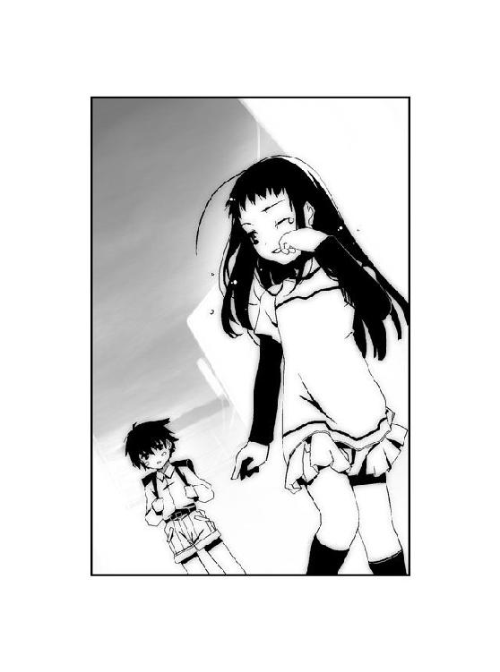
『本当は、いつも考えてたんだ。もしかして......運命とかなんとか、そんなものをぶち壊すくらいの大きな力があって、そのせいで歯車がほんのちょっとでもズレたとして──』
アリア・ヴァレィの力を解放した千晴は、扉に向かって手を掲げた。
指先が金属製の扉と同化して、向こう側へとすり抜けていく。
『いつか何人目かのアリア・ヴァレィが、もし誰の夢も喰らわずにいられたら......どうなるんだろうって。夢に取り残されたアリア・ヴァレィは、いったいどうなるんだろうって』
扉をすり抜けて、千晴は屋上へ出た。
橙色の夕日が降り注ぐ屋上に、小柄な少年の姿があった。
『確かめるのが怖くて......心地よい眠りにつきたくて......あまりに夢が美味しそうで......いつのアリア・ヴァレィもそんなことをしたくなかったけど──本当は心の底で、ずっとそんなことを思ってたんだよ』
アリアの独白が千晴を通じ、風に流された。
「......あれ？ 入り口には鍵をかけておいたはずなのに」
振り返った少年は、津村蜜樹だった。
蜜樹の横には、大きな〝虫〟──エルビオレーネの匂いがする怪物がいた。千晴はその匂いをたどって、ここにやって来たのだ。
上翅を拡げた〝虫〟の頭上には、大きな光の塊が浮かんでいた。
「あのさ、キミにお願いがあるんだよ、蜜樹くん」
千晴は蜜樹に向かって、歩み寄っていく。
「お願い？」
突然に現れた千晴に対し、蜜樹は落ち着いていた。同時に〝虫〟もこちらを向く。
「弟と......大助と、これからも友達のままでいてあげてくれないかな？」
蜜樹の正面で立ち止まり、苦笑する。
「こんなこと言ったら、また大助に怒られちゃうだろうけどさ......蜜樹クンは、大助の友達なんでしょ？ だったら虫憑きになっちゃったことなんて、関係ない──」
「大助くんは、もういらないんだ」
蜜樹がにっこりと笑んだ。
「ぼくは大助くんより強くなったんだもん。──大助くんだけじゃないよ。こんな、なんにもおもしろくない学校だって、いらないんだ」
少年がここで〝虫〟の力を使って、何をしようとしているのか。
千晴は彼と顔を合わせた時から、理解していた。
「や、やめなよ......今、学校を壊したら、まだ残ってる人たちが死んじゃうよ」
「ああ、そっか」
蜜樹が愉しげに笑った。
まるで──彼を虫憑きにした、エルビオレーネのような笑みだった。
「学校を壊しても、大助くんより強くなったっていう証拠にはならないよね。それじゃあ明日は、大助くんをやっつけなきゃ」
千晴が必死につかもうとした希望の紐が、手の中で途絶えた。
『彼はもうダメだよ、千晴......虫憑きになったばかりの時期は、とても不安定な状態になるんだ。夢を喰われて、〝虫〟を植えつけられ、虫憑きに生まれ変わった反動で──ちょっとしたきっかけで暴走する』
「危ないからそこで見てるといいよ、大助くんのお姉さん」
蜜樹の横で、〝虫〟の上に浮かび上がった光の球が膨らんでいく。千晴にはそれが、膨大なエネルギーの塊であることが分かる。
「ダメだよ、蜜樹クン......やめなよ......」
それでもすがりつこうとする千晴を見ても、蜜樹は止まらなかった。〝虫〟が蓄えたエネルギーが今にも弾けそうになり──。
『......千晴は、悪くないよ』
千晴が振り下ろした右腕に、碧い輝きがまとわりついていた。
腕が描いた軌跡にそって、コンクリートの地面がえぐり取られる。
地面だけではない、爆発しつつあった光の球も、そして蜜樹の〝虫〟の躰の大部分もまた、ぽっかりと空間ごと消し飛んでいた。
力の反動に耐えられず、千晴の右腕が服ごと裂けた。
『だからキミが、泣くことなんてないんだ』
千晴を凝視する蜜樹の瞳から、光が消えていた。〝虫〟の躰が空気に溶け込むように消え、宿主たる蜜樹は人形のようにその場に倒れる。
──夕日が沈むと、あっという間に小学校が暗闇に包まれた。
いつの間にか雲が空を覆い、星の輝きを遮っていた。
「......ねえ、アリア」
千晴は屋上の真ん中に座り、抱いた膝に顔を埋めていた。
津村蜜樹は保健室へ連れて行った。〝虫〟を殺されて欠落者となった彼は、明日の朝には病院へ運ばれるだろう。アリアが言うには、そこからは特別環境保全事務局という組織が彼を管理するだろうとのことだった。表向きはただの政府機関だが、実は虫憑きを管理するために存在しているらしい。
「あたしのこと、キライ？」
千晴の右腕は、血で真っ赤に染まっていた。動かせないほどの重傷ではない。それにこれもアリアから聞いた話だが、アリア・ヴァレィとなった千晴は、自己治癒能力が常人よりも高まっているらしい。すぐに治るだろうとアリアは言った。
『キライに決まってんじゃん！ あたしの話なんてちっとも聞かないし、無謀なことばっかりするし！ 今までのアリア・ヴァレィの中でも、一番の問題児だよ！ 一心同体になっちゃったあたしの身にもなってよね！』
意地悪なアリアが、むきになって言う。
『千晴のことなんて、だいっキライだよ！ これからもずっと、キライなまんまだね！ いつまでたっても、ずーっとキライなんだからね！』
千晴は顔を上げた。
涙はもう、消えた。
「うん、そうだね。ずーっと......あたしの中に、居ていいよ」
『......』
「もう大丈夫だよ、アリア」
立ち上がった千晴の髪が、碧い輝きに包まれる。
『千晴はホント、バカだよ』
「バカじゃないよ、普通だよ」
千晴の笑い声とアリアの笑い声が、重なった。
同じ人格、同じ声。
二人の千晴で、一つのアリア・ヴァレィ。
『居るんでしょ、エルビオレーネ。出ておいでよ』
同じ〝始まりの三匹〟の呼びかけに応じ、紫色の鱗粉が降り注いだ。
歪んだ夜の暗闇の中から姿を現したのは、深紅のロングコートをはためかせた美女。
丸いサングラスの奥で、虹色の瞳を細めたエルビオレーネ。
「良い夜ね、アリア・ヴァレィ」
愉しげに嗤う女に向かって、千晴は地面を蹴った。千晴の足元で光がはじけた。
次の瞬間、碧色の軌跡が女の右半身をえぐり取っていた。
足元で生んだエネルギーの反動を利用し、千晴が一瞬でエルビオレーネの横を駆け抜けたのだ。すれ違う瞬間に女の躰を攻撃したのである。
「大助の夢は、誰にも食べさせないよ。エルビオレーネにも......それに、あたしの中にいるアリア・ヴァレィにも」
振り返る千晴の腕の動きにそって、碧色の輝きが煌めく。
「──それが貴女の出した答えなのね、アリア」
千晴の見ている前で、エルビオレーネの躰の中から紫色の鱗粉が噴き出した。鱗粉は指先ほどの大きさの甲虫となり、何百という数のそれが削り取られた右半身へと変貌する。
『この千晴っていう子が、本当に能天気なんだよ。バカともいうけどね』
女の躰が再生される光景を目の前に、千晴の中のアリアが言った。
『でも居心地は悪くないかな。このまま次の眠りにつくよりも......心地よいかもね』
「眠り続ける貴女は、安住の地を見つけた」
『──喰らい続けるキミは、まだ喰らい足りない』
「それなら戦うしかないわね、アリア・ヴァレィ」
『──戦おう、エルビオレーネ』
降り注ぐ紫色の鱗粉を、千晴をとりまく碧い輝きが切り裂いた。
＊
無人のバイパス道路を、五郎丸柊子が運転するビートルが疾走していた。
「桜架市の湾岸地区を一部、埋め立てて造られたのが葉芝市です。陸地につながっている線路と二本の道路を含む橋を全て閉鎖し、関係者以外の通行を禁止しています。事実上の孤島状態であり、完全に特別環境保全事務局東中央支部の統括区域に認定している葉芝市を、我々はこう呼んでいます。──〝ＧＡＲＤＥＮ〟」
ハンドルを握った柊子が、淡々とした口調で説明した。
「〝ＧＡＲＤＥＮ〟......」
助手席に乗った千晴は、柊子の言葉を口の中で繰り返す。
海の上に造られた道路の先に、小さな街が見えた。背の高い建物や電波塔らしき構造物が、海洋上に密集している。
一方、バックミラーの中で小さくなりつつあるのは、桜架市だ。自動車を使わずとも時間さえかければ、歩いて渡ることも可能だろう。
「あたしは、そこに監禁されるんですか？」
「実際は保護という形になります。まあ、名目上はそうなってしまうんですけどね」
運転席の柊子が、締まらない笑みを浮かべる。
「あのぉ、もう一度だけ確認させていただきますが──千晴さんは本当に、虫憑きではないのですよね？」
前方を見ていた柊子の目が、チラリと千晴を見た。千晴は頷く。
「違います」
「どぉですか、千莉さん？」
柊子が視線を移したのは、バックミラーだった。
「〝虫〟を出していない状態だとはっきりとは分からないですけど......」
後部座席に乗った土師千莉という少女が、顔を上げた。特環のロングコートを纏った千莉のとなりには、やはり完全装備の緒方有夏月という少年が座っている。二人は千晴を葉芝市へと連れて行くための護衛だという。
また、後部座席にはもう一人の少女の姿もあった。
杉都綾だ。千晴とともに東中央支部に捕らえられた彼女は、茶深の言いつけを守って一言も喋ろうとはしなかった。無表情に窓の外を眺めている。
「ここに来るまでに〝視た〟かぎりだと、普通の人のように感じます」
「そぉですか。よかった、安心しました」
柊子が安堵の笑みを浮かべた。千莉が綾に顔を向ける。
「こちらの人は、虫憑きみたいですけど......」
「......」
「綾さん、でしたっけ？ ずいぶん無口な方なんですねぇ、たはは」
バックミラーに映る綾を見て、柊子が愛想笑いを浮かべる。
「えっと、千晴さんは貴女を監視していた局員から東中央支部のことを聞いて、桜架市へやってきたと言っていましたね？」
「はい」
「しかし、その監視者は『ＵＲＢＡＮ』での戦いで亡くなられてしまった。遺体が発見されないのは敵の〝虫〟に喰われてしまったから、というわけですか。綾さんは西遠市に住んでいた〝むしばね〟の一員で、たまたま千晴さんと以前から友人だったので助けた......」
千晴は頷いた。
東中央支部に保護を求める上で、茶深から言い渡された二つの厳守項目。
一つは千晴がかつてアリア・ヴァレィだったということを、決して明かさないこと。
もう一つは、茶深が死んだことにすることだ。
「さぞ凄惨な光景を目の当たりにされたことでしょう。心中、お察しします」
前を向いて運転をする柊子の口調は、変わらない。組織をまとめる上司というより、ただの気の良い年上の女性といった柊子だが、それだけに本当は何を考えているのか読めない。
「〝ふゆほたる〟と殲滅部隊との戦いに偶然、巻き込まれてしまったことも不運としか言えませんが、そのショックで五年間も忘れていた大助さんのことを思い出すとは......なんていうんでしょう、まさに運命ってやつですね。そう思いません？ 有夏月さん」
「〝かっこう〟の肉親だというだけで、僕はこの人を憎んだりはしません。でも──」
後部座席に座る有夏月の口調は硬かった。口ではそう言いながらも、複雑な心境であることを隠しきれていないのが分かる。
この緒方有夏月という少年も、大助を憎んでいる──。
「ずいぶん都合が良い話だとは思いますよ。特に記憶がどうというところはね」
「有夏月くん」
千莉が有夏月をたしなめる。
「そぉなんですよね。実際のところ、状況はかなり厳しいです」
柊子が困った顔で頰をかいた。
「真実がどうあれ、状況的には千晴さんも〝かっこう〟さんと同じように虫憑きで、殲滅部隊を倒したのも千晴さん......と見えちゃうんですよねぇ」
「......」
「〝始まりの三匹〟に対して積極的な殲滅姿勢を持たないどころか、黙認しているような節がある中央本部も、同化型を産む原虫指定──〝三匹目〟に対してだけは、執拗に行方を探って滅ぼそうとしていますしね。同化型の虫憑きは能力的にも性格的にも、扱いきれないところがあるからだと思いますが」
たはは、と柊子が苦笑いを浮かべた。
「千晴さんが実は強力な虫憑きだったように見える上に、弟の大助さんと接触しようとしているとなると......中央本部からしたら姉弟が揃っちゃう前に、一刻も早く暗殺したくなっちゃうんだろぉなぁ。捕獲なんていうレベルじゃなく」
千晴は神妙な面持ちで、柊子の横顔を見つめた。
「ですから千晴さんには、しばらく〝ＧＡＲＤＥＮ〟にある収容施設で身を隠していてもらいたいんです。あそこなら情報も外に漏れませんし、外敵に備えることもできますから」
「はい」
──ここまでは、茶深が予想していた通りの展開になっていた。千晴が狙われる理由も、そして千晴がこうして東中央支部に保護されるであろうことも、茶深の想像通りである。
千晴はこのまま東中央支部にかくまってもらう。
その間に茶深と〝コノハ〟が、大助の行方を捜し出すという手はずになっている。
「でも、大クンにお姉さんがいるなんてはじめて聞いたから、びっくりしました。大クンもお兄ちゃんも、そんなこと一度も言ってなかったから」
そう言ったのは、土師千莉だ。口ぶりからして、大助のことをよく知っているようだ。千晴は後ろを振り向いて、たずねる。
「ねえ、千莉ちゃん、訊いてもいいかな？」
「はい」
「大助は......私の弟は、どんな子だった？」
千晴の問いかけに、千莉が微笑んだ。
「とても優しかったです。少なくとも、私の前では......」
有夏月へ視線を移す。少年が一瞬だけ顔を歪め、窓の外へと目をそらす。
「......僕からは、何も言えません。貴女を不快にさせる理由はありませんから」
正反対の態度をとる少年と少女。
千晴はまた、分からなくなる。
「そっか......うん、ありがとう」
千莉は素直に、大助に対して好意を抱いてくれている。一方、有夏月は大助のことを憎んでいるのに、姉である千晴のことを気遣おうと自分を抑えている。
千莉と有夏月はともに優しく、それゆえに大助に対する正反対の態度も正直なのだろう。
「二人とも、優しい良い子だね」
千晴の言葉に、二人はびっくりしたようだ。千莉は頰を赤らめ、有夏月は「なっ......」と戸惑いつつもやはり照れている。
「ここからが〝ＧＡＲＤＥＮ〟と呼んでいる施設になります」
橋を過ぎたところで、柊子が言った。
その光景を目の当たりにし、千晴は絶句した。
まるで、爆心地だ。
駅の前方に広範囲にわたって地面が剝き出しになっている箇所があり、半径数百メートル内にある建物が軒並み破壊されていた。現在は修復工事の途中なのだろう、あちらこちらに建設用の重機が放置されていた。
「ここで大助さんは、〝むしばね〟のリーダー、レイディー・バードと戦ったそうです。この被害のほとんどが、レイディー・バードたった一人にもたらされたものであるとか......彼女の〝虫〟がここで成虫化し──宿主だったレイディー・バードは亡くなられたんです」
千晴たちが乗るビートルが、廃墟と化した駅前を通り過ぎていく。
有夏月が顔を歪めた。厳しい口調で否定する。
「僕は信じません。利菜が成虫化したと証言しているのは、〝かっこう〟だけだ......！」
「私は実際に戦いに加わっていないので、なんとも言えません。でも〝かっこう〟さん以外にも、彼らならその光景を見ていたのかもしれません」
千晴は目を見開いた。
ビートルが走る葉芝市の街並みに、様々な人々が歩いていた。
少年や少女が多いが、その誰しもが無表情だった。ガラス玉のように生気のない瞳で前方を見つめ、無事な姿を残した街を行き交っている。
感情の欠片も残さず、命令された行動を機械的に実行する人形たち。
「あ、あの人たち、みんな......欠落者──」
「〝ＧＡＲＤＥＮ〟は東中央支部が独自に設けた欠落者の隔離施設であり、実験施設でもあります。限られた実験班と監視班の局員だけが最低限の命令をし、欠落者だけでどの程度まで一般生活を送ることが可能なのかデータをとっています。以前は〝ふゆほたる〟、杏本詩歌さんもここに収容されていました」
かすかに肩を震わせる千晴を見て、柊子が続ける。
「詩歌さん同様、〝ＧＡＲＤＥＮ〟に収容されている彼らの半数近くが──〝かっこう〟さんによって欠落者にされた人々です」
「......！」
悲鳴が漏れそうになった口を、反射的に両手で押さえる。
千晴の眼前に存在する大勢の欠落者。
それは疑うべくもない、これまでの大助の行いによるものだとしたら──。
「だ、大助が......こんな──」
千晴の頰を、一筋の涙が伝った。
「あたしが──」
大助の夢を喰らい、虫憑きにしたせいで──。
後半の言葉は、かすれて声にならなかった。
アリア......ねえ、アリア──。
もう自分の中には居ない、もう一人の千晴に向かって語りかける。
あたしが思っていた通りだよ。大助を虫憑きにしたら──大助も、その周りの人たちもみんな、不幸になる......戦って、傷ついて、失って......こうなることは分かってたのに──。
「どうして......！ どうして、あたしは......！」
自分はどうして、大助を虫憑きにしたのだろう？
弟をこの手で虫憑きにしたのは、おぼえている。彼の甘く芳醇で、とろけるように濃厚な夢の味は確かに記憶に残っていた。
だが千晴は、自分が大助を虫憑きにした瞬間を、まだ完全には思い出せずにいる──。
「──一つ、おうかがいしていいですか、千晴さん？」
取り乱しそうになった千晴に声をかけたのは、柊子だった。穏やかな表情で言う。
「大助さんと離ればなれになってからの、五年間......貴女は幸せでしたか？」
千晴は涙を浮かべた瞳で、年上の女性を見た。
質問の意味を理解するよりも先に、怒りがこみ上げた。
自分に対する、やりきれない怒り。
「──はい」
あまりにもシアワセすぎて、逆に不安になるくらいに。
千晴は、シアワセだった。
それこそ、千晴の償いきれない罪。
弟を虫憑きにし、全てを忘れ、戦いを知らず、千晴はのうのうと幸福な日々を送っていた。
「大助さんの初任務は、四年前だったそうです」
柊子が微笑し、言った。
「〝ふゆほたる〟と呼ばれるたった一人の小さな女の子の暴走を、当時の特別環境保全事務局はおさえることができませんでした。しかもその混乱に乗じ、クーデターを企てた人物がいるそうです。この二つの事件を解決したのが、大助さんでした。〝ふゆほたる〟を欠落者にし、さらにクーデターに利用された虫憑きたちを欠落者にしたんです」
大助がたくさんの虫憑きの夢を奪った。──そんなことは眼前の光景を見れば分かる。千晴には柊子がなぜ、さらに彼女を追いつめるようなことを言うのか分からない。
「大助さんが多くの夢を奪ってきたことを否定はできません。でも彼があの時、もしそれをしなかったら......〝ふゆほたる〟は自らの〝虫〟に夢を喰い尽くされ、命をなくしていたでしょう。クーデターは成功し、この国は戦争に巻き込まれたかもしれません。──繰り返しますが、大助さん一人がしたことです。大助さんが一人で彼らの痛みを背負い、そのおかげでこの国は平和を保っている。千晴さんの幸せな日々が、守られていた──」
千晴は大きく見開いた目で、柊子を見つめる。
「大助さん自身、これまで何度も迷ったことでしょう。負けそうになったことでしょう。でもそのたびに彼は前を向いて、今も戦い続けています。それがどれほど辛くて強いことか、彼のお姉さんである貴女なら、分かってあげられるのではないですか？」
千晴は溢れそうになる涙を、懸命にこらえる。これ以上、泣くことは千晴には許されない。
「──ええ、分かります」
頷き、顔を上げる。
柊子の言うとおりだ。たった一人きりの姉弟である千晴が信じてあげられなくて、他の誰が信じられるのだろう。
もう何を見せつけられても、千晴は大助を信じられる。
「大助は、あたしの可愛い弟ですから」
にっこりと笑みを浮かべる。
「大助は昔も今も......誰よりも優しくて強い子ですから」
──だからこそ、千晴は大助に会わなければならない。
大助にたくさんのものを背負わせてしまったのは、千晴だ。
千晴は弟の手で裁かれなければならない。
彼が背負った痛みを、ほんの少しでも千晴が背負うことができるのなら──。
「こちらに接近しつつある気配があります」
緊張の色を含んだ声で、千莉が言った。街の外側、海洋上へと顔を向ける。
「数は二十人以上──全員、強力な虫憑きです......！」
「ええっ？」
柊子が一転、情けない声を上げた。
フロントガラス越しに前方を見ると、千晴の目にもこちらへと向かって飛ぶ〝虫〟らしき影が見えた。海沿いの道路へ出たビートルを目指して、一直線に近づいてくる。
「も、もう追っ手が来ちゃったんですか？ あれってやっぱり、殲滅部隊ですよねぇ。基地まではまだ距離があるし......」
「周辺にいる〝ＧＡＲＤＥＮ〟の監視班に掩護要請を出します」
有夏月がゴーグルを操作する。無線機能がついているのだろう。赤い光が点灯したゴーグルに手をかけ、早口で救援を求める。
「来ます......！」
千莉が言うと同時に、空を舞う影の一つがミサイルのように加速した。
猛スピードで飛来したのは、鮮やかな色をした蕾のような物体だった。千晴たちが乗る車の前方で、地面に突き刺さる。
花開くように、蕾が拡がった。
中にいたのは黒いマスクをした少女だった。蕾から花へと変化したのは、平たい体軀に長い脚を持つ〝虫〟だった。花びらのような翅を拡げ、背中に少女を乗せた〝虫〟が大きな口器を開いた。口器から広範囲に白い霧が噴き出す。
「あわわっ！」
柊子がハンドルを切り、ビートルを急停車させる。
スピンして停止した自動車の前方、霧に触れた道路が腐臭を上げて溶けていく。
「ち、千晴さん、綾さん、外に出てください！ 早く！」
「は、はい......！」
千晴を含む五人が、急いでビートルから降りる。
こちらが怯んだ隙に、葉芝市に次々と黒マスクたちが上陸した。一様に装備しているコートとマスクは、有夏月たちが着ているものと素材が似ているように見えた。
柊子が懐から、小型の拳銃を引き抜いた。
「下がって！」
女性らを守るべく、有夏月が前に出た。黄金色の外郭を纏った〝虫〟が現れる。腹部には無数の空洞があるヒメカゲロウだ。光り輝く二叉の尾が、ピシャリと地面を打った。
直後、〝ＧＡＲＤＥＮ〟のあちらこちらから、有夏月と同じ装備をした人々が姿を現した。
東中央支部の監視班たちが、有夏月とともに千晴たちを守る形に展開する。
黒マスクたちが〝虫〟とともに、いっせいに襲いかかった。
「このっ......！」
有夏月の背後で、黄金のヒメカゲロウが尾を振り回した。腹部の空洞から、何十本という数のレーザ光線が発射される。
「なっ──」
圧倒的な数の光線に対し、しかし命中したのは最初に毒ガスをまき散らした〝虫〟一匹だけだった。他の黒マスクたちは統率のとれた動きで、ことごとく熱線をかわしていく。
「さ、さすがに強いですね......攻撃を分散する余裕はなさそうです。一人ずつ各個撃破していきましょう、有夏月さん......！」
柊子の指示を手始めに、黒マスクたちと東中央支部の戦闘が始まった。
数では東中央支部が勝っているものの、戦闘能力の差は明らかだった。千晴たちを守りつつ戦っている有夏月以外は、次々と〝虫〟を殺されていく。
「あ......ああ......」
千晴の身体の奥底から、震えがこみ上げた。
一人、また一人と千晴の目の前で、虫憑きが欠落者となっていく。
千晴を守るために──。
「これが殲滅部隊──一人一人が火種五号から三号クラスの戦闘能力の持ち主とは......覚悟はしてましたが、これはちょっと厳しいかもしれませんね」
拳銃を構えながら、柊子が呻いた。千莉が唇を嚙みしめる。
「私も戦列に加わります......！」
「だめだよ、千莉！ 戦闘訓練がまだ終わっていない以上、力の反動が大きすぎる......！」
前に進み出ようとした千莉に気をとられたことで、有夏月に隙が生じた。
黒マスクたちが他の局員を無視し、有夏月へと標的を定めた。数匹の〝虫〟が、いっせいに有夏月に襲いかかる。
「くっ......」
有夏月の背後でヒメカゲロウが躰の向きを変えるが、間に合わなかった。無数の光線を発射するが、迫り来る〝虫〟から狙いがそれる。
「──力押しでは、勝ち目がないわね」
単調な声と同時に、千晴の腕が引っ張られた。
それまで黙ったまま立ちつくしていた綾が、千晴の腕を引いた。
「綾ちゃん......！」
千晴は綾とともに、地面を蹴った。自分を守る有夏月から離れ、葉芝市の街に向かって走り出す。
「いけません、千晴さん！」
柊子が叫ぶ。
有夏月を攻撃しようとしていた〝虫〟が、寸前でピタリと動きを止めた。狙いを変え、千晴と綾に追いすがる。
「バカなことを......！」
有夏月が舌打ちし、千晴を追う〝虫〟を攻撃しようとした。だが他の黒マスクに牽制され、その場に釘付けにされてしまう。
数人の黒マスクを連れ、千晴と綾は海沿いの道路を離れていく。自動車道からそれ、背の高いビルに挟まれた路地を走る。
「いくらあの有夏月という人が強くても、足手まといが大勢いる状態じゃいずれ全滅するわ」
「ど、どこへ行くの、綾ちゃん？」
「追っ手を振り切るわ」
言い、綾が千晴の腰に手を回し、強引に横に投げ飛ばした。
「きゃあっ！」
千晴の悲鳴と、コンクリートが爆発する音が重なった。
数匹の〝虫〟が、直前まで千晴がいた場所に鋭い爪を突き立てていた。
「走り続けて、千晴」
ビルに激突する千晴に、自らは壁を蹴って高く跳躍した綾が言った。振り上げた左腕には、彼女の〝虫〟であるゴミムシがしがみついていた。
地面に集まった〝虫〟めがけ、綾が左腕を振り下ろす。白光が弾け、高熱の杭がコンクリートの地面に大穴を空けた。
だが敵の〝虫〟は、素早かった。統率のとれた動きで後退し、綾の攻撃をかわす。
「さあ」
綾の言葉に従い、千晴はビルの合間を駆け出した。後方から迫りくる〝虫〟たちに向かって、綾が左腕を振り回す。ゴミムシの口器から爆炎が噴き出すが、やはりただの牽制にしかならなかった。爆発をやりすごした黒マスクたちが、やや遅れて千晴を追う。
「はあっ......！ はあっ......！」
ビルの間から飛び出すと、再び大きな車道に出た。
様々な種類の店が建ち並んだ大通りは、西遠市の駅前通りを思い出させた。歩道にはまばらに通行人が歩いていて、息を切らせる千晴を振り向くこともなく無表情に歩を進めている。
あまりにありふれた光景に、千晴は一瞬、自分が追われているのが夢なのではないかという錯覚をおぼえた。
決められた毎日を送る〝ＧＡＲＤＥＮ〟の住人の瞳に、千晴の姿は映っていない。
「薄気味の悪い場所ね」
綾の平坦な声と、続けて鼓膜を揺らした爆音で、千晴は我に返った。
後方の敵を牽制する綾を見て、悲鳴を上げる。
「綾ちゃん......！ その傷──」
「なんでもないわ。行きましょう」
綾の制服の裾が裂け、横腹に裂傷が刻まれていた。スカートとソックスが、鮮血で紅く染まっている。だが本人は顔色一つ変えず、千晴の背中を押しやる。
「で、でも......！」
「何度も言わせないで。貴女を守るのが、私の役目なのよ」
黒い瞳で見つめられ、千晴は顔を歪めた。何も言うことができず、綾とともに車道を突っ切り、向かいの歩道へ向かって駆け抜ける。
それは、異様な光景だった。
懸命に走る千晴と綾を、街の住人たちは一瞥もしない。後方から追いかける黒マスクたちの存在も、彼らは見向きすらしなかった。
千晴たちの周りだけが、別世界の出来事を演じているかのようだ。映画館のスクリーンに四方を囲まれた中を走っているような、とてつもない違和感をおぼえる。
決して触れ合うことのない両者の世界が、しかし後方から響いた声で接触した。黒マスクの一人が、「欠落者ども！ その髪が長い女たちをつかまえろ！」と叫ぶ。
次の瞬間──。
ぐるん、と周囲を歩いていた人々が頭の向きを変えた。
「ひっ──」
ガラス玉のような瞳に見つめられ、千晴は思わず足を止める。
立ち止まった千晴に向かって、感情を失った者たちが身を低くし──弾かれたように全速力で押し寄せる。
「止まりなさい、と命令しても遅そうね」
綾が振り上げようとした左腕を、しかし千晴が慌ててつかんで止める。
「だ、ダメだよ、綾ちゃん！ この人たちは──」
「言ったでしょう、私の役目は貴女を守ること。──それに、べつに殺したりはしないわ」
千晴の手を振りきり、綾がゴミムシをしがみつかせた左腕を地面に叩きつけた。
紅蓮の爆発がコンクリートを砕き、生じた衝撃波で欠落者たちが吹っ飛んだ。
さらに綾が道路沿いに建っていたレストランめがけて、左腕を振るう。閃光とともに打ち出された白光の杭が、ガラス張りになった壁面に大穴を穿つ。
「広い場所は不利ね。邪魔が入らない場所に移動しましょう」
綾が千晴の腕をつかみ、店内へ足を踏み入れる。
店の中は無人で、客はおろか店員も見あたらない。外から見たかぎり、通り沿いに並ぶ店はどれも人影が見あたらなかった。
直後、綾が後方を振り返った。千晴の背中を突き飛ばした綾の姿が、視界から消える。
「綾ちゃ──」
すさまじい轟音が、レストランを揺るがした。千晴をかばった綾に、大きな〝虫〟が襲いかかったのだ。椅子をまき散らし、カウンターを破壊し、素手で〝虫〟の口器を受け止めた綾が建物の奥へと突き抜けていく。
「綾ちゃん！」
顔色を変えて追いかけようとした千晴の視界を、白光が閃いた。
立て続けに吹き荒れた衝撃が、店の壁に穴を空ける。
「こっちよ、千晴」
大きな〝虫〟の遺骸を踏みつけた綾が、駆けつけた千晴を迎えた。頭から血を流し、肩や腕に傷を負いながらも、少女の表情は微塵も動じていない。
絶句して立ちつくした千晴を見て、焦れたように綾が腕をつかんで強引に引っ張った。
レストランに黒マスクたちが入ってくるのを尻目に、壁に空けた穴からとなりの建物へと移動する。
走る千晴の前を、閃光と衝撃が繰り返し突き抜けていく。目の前に壁や障害物が現れるたびに、綾が〝虫〟の能力を使って破壊していた。レストランを抜け、ブックショップを抜け、服飾店を駆け抜けていく。
千晴の頰に、綾の血が飛び散った。傷だらけになった少女を見て、震えがこみ上げる。
もう、いいよ──。
そう言おうとして、千晴は口を開いた。
あたしのために、綾ちゃんがそんなに傷だらけになるなんて嫌だよ──。
「忘れてもらっては、困るわ──」
千晴が言葉を発するのを遮るように、綾が言った。
眼前の壁を破壊して飛び出した千晴たちを、そよ風が出迎えた。
そこは、駅前の広場だった。
かつて大助とレイディー・バードが戦ったという、決戦の地だ。
「茶深の手駒になった以上、あなたはあなたの役目を果たしてもらうわよ」
吹き抜ける風に、綾の髪がなびく。周囲を見回し、千晴の腕を引いて広場に躍り出る。
二人が向かったのは、桜架市につながるバイパスだ。
「それに......私はあなたのことを好きになると言ったでしょう？」
千晴たちに続いて、黒マスクたちも建物から飛び出した。
地響きが〝ＧＡＲＤＥＮ〟を襲った。
両者が通り抜けてきた建物が、次々と倒壊していた。走る千晴たちの背後で、柱を失った建物が周囲の建築物を巻き添えにして崩壊していく。
「......！」
──それなら私も、あなたのことを好きになるわ。
〝むしばね〟の集会に潜入した時、綾は千晴に対してそう言ったのだ。
千晴は彼女の言葉の意味を、今になって理解した。
綾は好きになった人間のためになら、なにも躊躇わない──。
「ここからは一人で行って、千晴」
海に浮かぶバイパスに入ったところで、綾が足を止めた。千晴の背中を押す少女の腹からは、あいかわらず大量の血が流れている。
「大丈夫、あなたには指一本、触れさせないわ」
綾が微笑した。
「やだよ、綾ちゃん......」
千晴が伸ばした手は、しかし綾に触れることはできなかった。
すでに綾が、身を翻していた。
今にも千晴に嚙みつこうとしていた〝虫〟の頭部に、綾がゴミムシをしがみつかせた左腕を叩きつける。ゴミムシの口器から、純白に輝く杭が打ち出された。
バイパスが揺れた。
轟音とともに、粉々になった〝虫〟もろとも片側車線が崩壊を起こす。支えきれなくなった防波壁が海へ落下し、大きな波を立てた。
「ダメだよ、綾ちゃん......」
立ちつくす千晴の見ている前で、黒マスクたちと綾の戦闘が始まっていた。
殲滅班が綾を取り囲むように移動し、一斉攻撃を仕掛ける。
綾が地面を蹴った。弾丸のような駿足で、包囲網の一角をなす〝虫〟に左腕を叩き込む。
白い閃光とともに放たれた杭が、〝虫〟を打ち砕いた。
立て続けに綾が次の〝虫〟へと立ち向かう。
「あたしのことなんて、いいから......」
だが次の瞬間、綾が金縛りにあったように硬直した。
地面から染み出した黒い液体が、綾の脚を這い上がっていた。背中にのぼった液体が凝固し、〝虫〟の形となる。無数の脚でがっちりと綾を羽交い締めにし、鋭い牙を生やした口器が綾の左肩にめり込む。
「──」
千晴は、声にならない悲鳴を上げた。
身長の何倍もある〝虫〟が、動きを止められた綾に体当たりをかけたのだ。自動車が衝突したような振動に混ざって、綾の肋骨が折れる音が千晴の耳に飛び込む。目を見開いた綾の口から、大量の血の塊がはき出された。
しかし──。
「......綾ちゃん、もう、やめ──」
ジロリ、と綾の双眸が、さらに自分を串刺しにしようとした〝虫〟を睨んだ。
ゴミムシが、翅を拡げた。綾の左腕を飛び立ち、眼前の〝虫〟の頭部に降り立つ。
紅蓮の輝きが〝虫〟を包んだ。超高圧のガス熱が、〝虫〟の躰を焼き尽くす。
さらに翅を拡げて宙を舞ったゴミムシが、口器から緑色の液体を吐き出した。
それは強力な酸だった。液体をかぶった〝虫〟が暴れだし、綾の拘束を解く。綾の右腕へと舞い降りたゴミムシが、振り向きざまに紅蓮の杭で悶える〝虫〟を炭へと変える。
鈍い音が、綾の身体を揺らした。
鞭のように伸びた一匹の〝虫〟の尾が、綾の胸と脚を貫いた──。
「イヤ──」
空に舞った別の〝虫〟が、異様に長い脚を海へ降ろした。脚についた管を使ってポンプのように海水を飲み込んでいくたびに、〝虫〟の躰が膨張していく。
「──大丈夫よ、千晴」
左肩に重傷を負い、肋骨は砕け、胸と脚を貫かれた綾の声は、しかし迷いも恐怖もないまま変わらない。急速に光を失いつつある瞳で、千晴を一瞥する。
「茶深に──もらった役柄──を果たすまで私は──死なないわ」
喋るたびに吐血をしながらも、綾が自らを貫く〝虫〟の尾を摑んだ。
力を込め、一気に尾を引っ張る。
尾を伸ばした〝虫〟が、綾の力によって力ずくで宙を舞った。手元へと引き込まれた〝虫〟を、綾の右腕が待ちかまえていた。
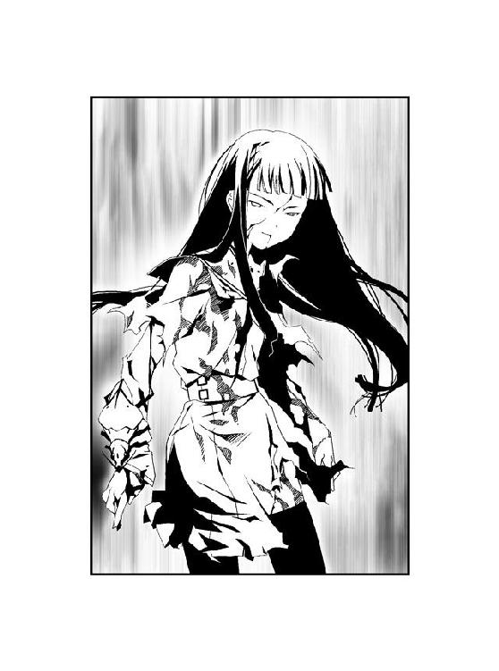
純白の閃光が、跡形もなく尾の長い〝虫〟を消し飛ばす。
「だから──大丈夫──」
虚ろな瞳で、人形のように綾が呟く。がくり、とその膝が折れた。
上空から、高圧の水柱が落ちた。溜め込んだ海水を〝虫〟が吐き出したのだ。
「......ああああっ！」
無意識に、千晴は駆け出していた。棒立ちになった綾に抱きつき、そのまま道路の上へ転がっていく。
直前まで綾がいた地面が、地響きを立てて崩れ落ちた。水圧で砕かれたコンクリートが、大音響をたてて海上へ落ちていく。
「う......うう......」
呻く千晴を押しのけ、綾が何事もなかったかのように立ち上がった。
地面の上から、綾を見上げる。
綾の肩越しに見えた空──上空を舞う〝虫〟の上に、翅を拡げたゴミムシが降り立っていた。
「だから──何の心配もいらないわ──さあ、立って──千晴──」
白い閃光が、視界を埋め尽くした。
最後の一匹を倒したゴミムシが、綾の肩へと舞い降りた。
「立って──千晴──今のうちに──ここを離れなきゃ──」
綾が、笑みを浮かべていた。
かつて茶深のことを語っていた時と、同じ笑顔。
「綾......ちゃん──」
差し伸べられた白い腕は、しかし力が感じられなかった。千晴は綾の微笑みに操られたように、自力で立ち上がる。
〝ＧＡＲＤＥＮ〟では、まだ激しい戦闘が続いているようだった。視界の端に、空を射貫く無数のレーザ光線が見えた。
「振り向か──ないで──」
綾の手が、千晴の身体の向きを変えさせる。呆然とする千晴の背を、暖かい感触が押した。
「言った──でしょう？ あなたには私よりも大切な──茶深に与えられた役目が──」
抵抗できず、千晴は人形のように足を踏み出す。
「弟に会わないと──いけないんでしょう？ ──それが、いつかは茶深のためになる──」
「綾ちゃん......綾......ちゃん......」
「私は大丈夫──だから──もう寂しくない──から──」
「......」
「茶深と──貴女が──」
千晴は、歩いていく。
前方には桜架市。
後方には〝ＧＡＲＤＥＮ〟。
「──いつか──一瞬だけ──私のことを──思い出して──くれるなら──」
歩いていく千晴の背後から──。
絶望的な音が、聞こえた。
重いものが地面に倒れる音。
千晴の中で、最後の理性が途切れた。
「............っ！」
千晴の髪が、水平に弧を描いた。
迷うことなく振り返り、地面に倒れた少女のもとへ駆けつける。
動かなくなった綾にしがみつき、大声を上げる。
自分が何を言っているのかも分からない。
ただなりふり構わず、泣き叫んだ。
まぶたを閉じた少女の身体が、ゆっくりと温もりを失っていく。
──電子音が響いた。
綾に抱きついた際に、綾の懐から携帯電話が落ちていた。
連絡用に茶深から渡されたものだ。
携帯電話を手に取ったのは、無意識だった。すがりつくように機体を両手でつかむ。
千晴の第一声は、叫び声以外の何物でもなかった。
ただ事ではないことを察したのだろう。茶深の緊張を孕んだ声が鼓膜を打つ。
『......なにがあったのよ！ 落ち着けっての！ 千晴っ！』
「綾ちゃんが......！ 綾ちゃんがぁっ......！ あたしを守るために──」
理性を失って叫ぶ千晴の言葉に対し、茶深が息をのんだのが分かった。
沈黙が、電話の向こうに落ちた。
だが、やがて──。
『......死んだの？』
きわめて冷淡な声が、聞こえた。
千晴は自分の耳を疑った。
『だったら綾は、そこへ置いていきなさい。アンタはすぐに──』
あまりに強く握りしめたせいで、携帯電話の機体が軋んだ。
綾の死を知った上での茶深の冷静な声を聞いて──。
千晴は生まれて初めて、一人の人間に憎悪を抱いた。
あれほど茶深を慕い、茶深のために戦おうとした綾を──。
この少女は、たった一言で片づけた。
「──イヤだよ」
『千晴？』
「茶深ちゃんの言うことなんて、きかないよ。綾ちゃんはあたしを守るために──」
『......千晴っっっ！』
携帯電話が壊れるほどの怒声が、千晴の言葉を完膚無きまでに打ち砕いた。
愕然とする千晴の耳に、耳鳴りとともに、茶深の罵声が叩きつけられる。
『アンタは何様よ！ 悲劇のヒロイン？ それで自分を守るために散った騎士のために泣いてんの？ 今のアンタはさぞ、画になってるんでしょーね！ 目に浮かぶようだわ！ 舞台の上で泣くアンタを観る観客の誰もが、涙にむせぶのよ！ 流れるＢＧＭはなに？ ピアノ独奏のバラード？ はっ、くそったれに最高なシチュエーションだわ！』
茶深が奥歯を嚙みしめる音が、電話を通じて聞こえた。
『──でもね、私はそんなこと知ったこっちゃねーのよ！ イヤでもなんでも、アンタには言うことを聞いてもらうわよっ！ 途中でも何でも幕を降ろして、アンタを今の舞台から引きずり降ろしてやるわ！ アンタには私の脚本通りに動いてもらう！ 勝手に死んで観客席すら失ったヤツらの手をひっつかんで、舞台の中心に連れ戻してやるためにね！』
「......茶深......ちゃん......」
あたしは、バカだ──。
昔、弟に言われた通りだ。
自分はバカだ。
こんなにも怒る茶深の気持ち──もう振り向くどころか、立ち止まることもできない茶深の気持ちに、これっぽちも気づくことができなかった。
──振り向かないで。
綾は、知っていたのに。
自分を守るために死んだ少女は、最期の瞬間まで茶深のことを理解していたのに。
千晴は振り向いてしまった。
立ち止まってしまった。
今の自分が誰よりも辛く、哀しいと勘違いしてしまった──。
『......〝かっこう〟の居場所が分かったわ。紫央市っていう場所に向かいなさい。ヤツはその街に入っていった』
茶深が怒りを含んだままの声で言い放つ。
紫央市。
なつかしい街の名前だ。
五年前まで、千晴が弟といっしょに住んでいた街──。
『〝かっこう〟の話を盗み聞いたけど......マズイわよ。このままじゃ特環全体でヤツを抹殺しようとするわ。そうなったらたとえ〝かっこう〟といえど、生きていられるか分からねー』
「......！」
『急いで紫央市へ向かいなさい、千晴。弟に会って、完全に記憶を取り戻すのよ』
無言の千晴に対し、茶深は返答を待たなかった。
『二度と逆らうんじゃねーわよ。途中で脚本から降りるよーな手駒は、私はいらねーのよ』
一方的に言い放ち、通話が切れた。
最後の台詞が、はたして千晴に対するものなのか、それとも綾に対するものか、確かめる間もなかった。
「......綾ちゃん......」
千晴は立ち上がった。
静かに眠る綾を見下ろし、唇を嚙みしめる。
「先に......行くね......」
深々と頭を下げる。
「助けてくれて、ありがとう」
顔を上げて、無理矢理に笑みを作る。自分の顔は見えないが、さぞ不恰好な笑みになってしまったことだろう。
「綾ちゃんのこと、思い出すね。いつでも、何度でも」
身を翻す。
歩き出し、歩調を速め、駆け出した千晴の頭上から、声が聞こえた。
「女の子、見ぃーっけ。もしもし、そこのキミが〝かっこう〟のお姉たんって人ぉ？」
直後、空から一人の少女が舞い降りた。
頭にターバンを巻き、背中に黒い翅を生やした少女だ。身につけている装備は東中央支部のものと分かる。
「柊子たんからの緊急命令で、アタシがキミを逃がしてあげるよん。ホントはアタシの出番はないはずだったんだけどねん」
少女が千晴の背後を見て、ニヤリと笑んだ。
振り向くと、戦いが続く葉芝市からさらなる黒マスクの刺客がやってきていた。
「鬼ごっこは大得意だよん。行き先のリクエスト、あるぅ？」
千晴が行くべき場所は、一つしかない。
茶深と綾が教えてくれた場所を思い浮かべ──。
千晴は、はっきりと頷いた。
2.04 The others
小川のせせらぎだけが聞こえる山間部に、少年の呻き声が聞こえた。
「う......本部に帰って報告を......」
流れる川には、まだ静電気が弾けていた。
地面は抉れ、木々が立ち並ぶ森は砲撃の痕が刻まれている。
陥没した岩肌の中央で、鱗が立ち上がった。殲滅班の他の局員たちは二人とも、欠落者になっている。鱗だけがかろうじて生き残ることができたようだ。
鱗が赤牧市に向かって歩き出そうとして、ハッとした。
「勝手に帰ろうとしてんじゃねーわよ。アンタにも端役をくれてやろーってのに」
森を背に佇む茶深は、怒りを押し殺した声で言った。
茶深の後ろには〝コノハ〟も控えている。ここへやってくる途中までに、〝かっこう〟と鱗という少年、そして〝Ｃ〟の会話は、〝コノハ〟の能力によって盗聴済みである。
「り、『鱗は敵と遭遇した』──『鱗の攻撃』！」
鱗の周囲に、光り輝く模様を浮かべた円盤が現れた。しかし円盤のどれもがヒビ割れていて、明らかに動きが鈍いのが分かった。
茶深は正面から、鱗に向かってダッシュする。
「茶深......！」
〝コノハ〟の悲鳴と、円盤が宙を駆ける風切り音が重なった。
茶深の頰、腕、脚、腹を鋭い円盤が切り裂いた。
だが傷はどれも浅く、致命傷にはあたらない。──〝かっこう〟による大ダメージを受けている今の相手ならば、むしろ距離を詰めたほうが茶深にとっては有利だと判断した。とはいえ戦闘能力をほとんど持たない茶深にとっては、命がけの賭けだ。
「『鱗の攻撃が命中した』！ 『敵に１４０のダメージ』！ 『鱗の連続攻撃』──」
「させるかっての！」
円盤の再度の攻撃よりも、茶深の反撃のほうが一瞬だけ速かった。
「これが私のくそったれの能力よ！ たっぷり喰らいやがれっ！」
距離を詰めた茶深が、叫ぶ。
鱗の背後に、深紅の輝きが煌めいた。威風堂々と翅を拡げた紅い女王蜂が、鋭い針を鱗の首筋に突き刺した。女王蜂が煙のように形を失い、針を突き立てた箇所から、鱗の身体へと吸い込まれていく。
「『鱗は敵の攻撃を受けた』──『鱗にダメージはない』──『ダメージはない』──」
空中を旋回した円盤が、ピタリと動きを止めた。鱗の顔が急速に青ざめていき、ガクガクと痙攣するように震え出す。
綾や〝コノハ〟に仕込んだ量とはケタが違う、全力の一刺しだ。茶深の能力は命中さえすれば、相手の精神を混濁させて冷静な判断力を失わせる──。
「......コソコソ動き回って、裏から舞台を操ってる気になってんじゃねーわ......」
自らの傷もかえりみず、茶深はゆっくりと鱗に歩み寄る。
裂けて血が滲むほど、唇を強く嚙みしめる。
握りしめた拳の中で爪が皮膚に食い込んでいた。
茶深は今、はっきりと敵を認識する。
殲滅班。
特別環境保全事務局、中央本部。
そして──魅車八重子。
「私らが所詮は脇役にすぎねーってことくれー、知ってるわ。〝オゥル〟や綾がいなくなったところで、主役を気取ってる連中は気づきもしねーんでしょーよ。そうよ、私らが舞台の中心に立とうなんて、出過ぎた野望......くそったれな夢なんだわ。でもね......」
震えそうになった声を、怒りに紛らわせる。
背後にいる〝コノハ〟に見えないよう、一筋だけ涙を頰に伝わらせる。
「いつまでも延々と続くストーリーを見せつけられる、こっちの身にもなりやがれ。いつまでも戦いを続けようとする魅車八重子......それにいつまでも戦いを止められない、〝かっこう〟！ 〝ふゆほたる〟！ アンタら全員、同罪だわ！」
呆然と立ちつくしている鱗の顔を、両手でがっちりと摑んで叫ぶ。
「だから......いつまでも舞台を降りようとしねー主役どもから、私が舞台の中央をうばってやるわ！ 他の出演者どもをひれ伏させて、力ずくで頭を下げさせてやるわよ！ 『どう、最高の舞台を見せてやったわよ！ もう悔いはないでしょう！ これにて虫憑きのストーリーは終演、またいつの日か会いましょう！』ってね！ イヤでもエンディングとスタッフロールを流してやるわ！」
一度でも、立ち止まってしまえば。
一度でも、振り返ってしまえば。
自ら抱いた夢に、くじけてしまいそうだ。
しかし一人、また一人と茶深を置いて去っていく者たちの見えない手が、茶深にそれをさせない。笑う白猫や寂しがりやの少女が、諦めそうになる茶深の背中を前に押し出す。
「よくも......よくも、〝オゥル〟や綾を殺しやがって......そこまでして、私に小物の役割を押しつけようってんなら、今はそうしてやるわよ。小物らしい台詞を、言ってやるわ。──伝えなさい、主役気取りのアンタのご主人様にね」
鱗の顔を両手でがっちりと摑み、はっきりと声に出して言い放つ。
「〝おぼえてろ〟──」
意識を混濁させた少年が、ビクリと反応した。
「必ず、引きずりおろしてやる......必ず......必ず......！」
押し殺した声で繰り返す茶深から、鱗が身を離した。惚けた様子で、ぶつぶつと何かを呟きながら小川をのぼっていく。
血を流しすぎたせいだろう、茶深の脚から力が抜けた。
「茶深！」
地面に座り込んだ茶深に、〝コノハ〟が駆けよる。
「......アンタの能力なら、ここからでも紫央市は見えるわね、〝コノハ〟」
「え、ええ。やっぱり〝かっこう〟の目的地は紫央市で間違いないみたい。街の中を移動して、どこかに向かっているようだわ」
「そう──」
茶深が紫央市がある方角を睨む。
「観させてもらおうじゃねーの。今の主役──〝かっこう〟が何を目指して、ここまでやってきたのか。紫央市で何をしようとしているのか、この目で確かめさせてもらうわよ」
「千晴は、間に合うと思う？」
「間に合ってもらわなくちゃ、困るわ。千晴には完全に記憶を取り戻してもらって、〝虫〟の謎を訊かなきゃなんねーんだから。そうでもしねーかぎり、私がこの先の戦いを勝っていくことはできねーんだから。それに......私の考えが正しければ、千晴にはまだ使い道がある」
紫央市の空をじっと睨みながら、拳を握りしめる。強く嚙みしめた奥歯が、軋んだ。
「そうよ......死んでもらっちゃ困るの。私の許可もなく勝手に死んだりしたら、許さねー。どいつもこいつも、この私の手駒にしてやるんだから」
〝コノハ〟が頷いた。茶深を見つめ、いつもの小声で呟く。
「大丈夫よ......私もずっと、茶深についていくわ......」
「......当たり前だっての。蹴るわよ」
茶深の頰に、一滴の水滴が落ちた。
夜が近づき、どんよりと曇った空から、雨が降り出していた。
「......！」
茶深は森の隙間から見える紫央市の空に、紫色の輝きを見たような気がした。
ゾクリと背筋に冷たいものを感じ、身震いする。
黒雲の隙間に、異形の物体が見えた。
あまりにも巨大で、あまりにも美しいそれは──。
「そ......そんな......バカな......」
我が目を疑うが、それは現実として紫央市の空に存在していた。
「ありえねー......こんなこと、ありえねーわ......！ だって〝ヤツら〟はいつどこに出現するかなんて分かるわけがねーんだもの！ 偶然......？ い、いいえ、違うわ。まさか、〝かっこう〟はこのことを知って......？」
茶深の横では、〝コノハ〟が顔色を失っていた。愕然と紫央市の空を見上げている。
「なんで......どうしてよ......？ どうしてヤツがここに現れることを知ってたのよ、〝かっこう〟......！」
雨に打たれ、暗闇に包まれようとしている小川のほとりで、茶深の呟きがいつまでも続いていた。
2.05 大助 Part. 4
＊
自宅のアパートでテレビを見ていた大助は、窓の外を見た。
夕日は落ち、だいぶ暗くなっている。
そろそろかな、と思い立ち上がる。
「千晴、まだ帰ってこないわね......大助、ちょっとさがしてきてくれる？」
「うん」
大助が思った通り、母が心配そうに大助に声をかけてきた。
姉の千晴はいまいち危機感がなく、道を歩くだけで危なっかしいところがある。風邪を引いたり熱を出したりしやすいクセに、限界まで我慢をしてこじらせる。
そんな千晴に対する母の心配性は、いつものことだった。
少し帰宅が遅れただけで、大助を迎えに出させるため、彼はどのタイミングで母から声がかけられるかもおぼえてしまった。
俺の帰りが遅くなっても、心配しないのに──。
普段は思わないことを考えてしまうのは、大助の気が落ち込んでいるからだろう。
「行ってきます」
玄関を出て、アパートの階段を下りる。
どこへ向かうべきかは、分かっていた。
紫央小学校。
千晴は大助との別れ際、学校に忘れ物をしたと言っていた。どうせ学校で友達と会ってお喋りをしているうちに、時間を忘れてしまったというところだろう。
「......」
ふと。
このまま大助が、たとえば家出をしたとしたら、母は心配するだろうか？
当たり前だ──すぐにそう思えない自分に気づき、驚いた。
だが、すぐにそんなくだらない考えを打ち消した。
少なくとも大助の身を心配する人物は、この世に一人だけは確実に存在する。
千晴。
あの弟バカと評判の姉なら、大助がいなくなったらひどく心配するだろう。心配しすぎて、ショック死してしまうかもしれない。
そんなことを考えて、思わず大助は笑みが浮かんだ。
「ったく、しょーがねーな、もう。世話のやける姉貴で」
登校路を走って、学校に向かう。
しばらく周囲を見回しながら走り続けるが、しかし千晴の姿は見あたらない。
とうとう学校がある丘の近くに着いてしまった。
「まだ学校にいるのか、あいつ......？」
辺りは真っ暗で、もちろん児童の姿は見あたらない。電灯に照らされた坂道は、過疎が進む紫央市を象徴するかのような静けさがたちこめている。
大助は学校を見上げ──校舎の屋上で何かが光ったように見えた。
「......？」
坂道を駆け上っていく。
学校の敷地と裏山を含む丘を、二周ほどしたところで小学校の正門前に到着した。
正門は鉄製の柵が閉まっている。最近は児童数も減っているため、教師たちも別の学校への転勤が増えている。校務員もいない今、学校はいつも早めの時間帯に閉鎖するのだ。
柵の前に千晴の姿は見えなかった。
大助は眉をひそめて、夜の闇に包まれた校舎を見上げた。
「......！」
グラウンドの向こうにある校舎の屋上で、また光が生まれた。
紫色と碧色の輝きが、互いに衝突して弾けていた。
輝きに照らされ、一瞬だけ映し出された人影は、千晴だった。
向かい合っている相手は、髪の長い女のようだった。
また二つの輝きがぶつかり、千晴の顔を鮮明に映す。
千晴の頰を、血が伝っているのが見えた。ここからは見えないが、身体にも怪我を負っているように見えた。
大助の脳裏に、先ほど家で観ていたニュース──不審者に小学校の児童が傷つけられたという内容の報道が浮かんだ。
「千晴っ！」
大助は無意識に柵をよじのぼり、小学校の校舎へ向かって走っていた。
＊
いつからか降り出した雨の匂いに混じって、なつかしい匂いがした。
生まれ故郷の匂いだ。
紫央市は過疎化に歯止めをかけられなかったのだろう。住宅街を照らす家の明かりの数が、五年前よりも減っているように感じた。人目を避けるため狭い路地を選んでここまでやってきたが、その必要もないくらい外を出歩いている人の数は少なかった。
「はあ......！ はあ......！」
漆黒のロングコートをなびかせ、大助は走っていく。
かつて毎日のように通っていた登校路は、はっきりとおぼえている。道の特徴も、五年前とまったく変わっていなかった。
怪我で流した血と疲労のせいで、目眩がした。
だが奥歯を嚙みしめ、大助は一直線に住宅路を駆け抜けていく。
やがて現れたのは、静寂に包まれた坂道だった。
丘を上る坂道は、錆の浮いたバリケードで封鎖されていた。
バリケードには、丘の上にある小学校は数年前に廃校になり、現在は国有地として一般人の立ち入りを禁止するといった内容の張り紙が貼られていた。
大助はバリケードを蹴ってどかし、坂道を駆け上がっていく。
道沿いに並ぶ電灯は電力供給が止められているのか、明かりを失っている。ガードレールにそって生えた草は伸び放題だ。
丘を二周ほどして、大助は小学校へたどり着いた。
五年ぶりに見る母校は、やけに小さく見えた。通っている当時は丘の上にある小学校はやけに広く感じていたはずだ。
正門を塞いだ柵を跳び越え、校舎を目指す。閉じられた正面玄関を、〝虫〟と同化して強化された拳で殴り飛ばす。
破壊された扉が、下駄箱に激突しながら派手に転がっていく。
「はあ......！ はあ......！」
拳を振るっただけで、ぐらりと身体が傾いた。下駄箱によりかかってバランスを保ち、すぐに廊下を歩き出す。
目の前に現れた階段を、一気に駆け上っていく。
「はあ......！ はあ......！」
そして──。
大助は、ようやく目指していた場所へたどり着いた。
四階の扉を抜けた、その場所は五年前と変わらず静まりかえっていた。
降りしきる雨に打たれ、大助は立ちつくす。
紫色の鱗粉が、大助の視界に吹き荒れた。
空を覆う黒雲の中に、巨大な眼が見えたような気がした。一瞬だけ姿を見せたそれは、あまりにも巨大なアゲハチョウ──。
「──良い夜ね......」
降り注ぐ雨が、ある空間だけ紫色の輝きに弾かれていた。
「月は見えないけれど──」
深紅のロングコート。
丸いサングラス。
そして、虹色の瞳。
「星空は隠れているけれど──」
雨を弾く輝きの中心にいるのは、人にあらざる異形の存在。
「降りしきる雨が、何もかも綺麗に洗い流してくれる......」
詠うように──酩酊するように独白し、虹色の瞳を細める。
「雨露に濡れた果実は、さぞ美味しいでしょうね、大助ちゃん？」
大助の身体に刻まれた模様が、緑色の輝きを放った。
拳銃を抜き放ち、今こそ万感の想いを込め、大助はそれの名を口にした。
「お前を倒しに来たぞ......〝大喰い〟！」
咆哮し、大助は〝大喰い〟に向かって引き金を引いた。
3.00 大助 Part. 5
大助が放った銃弾を、〝大喰い〟は避けなかった。
艶やかに笑う〝大喰い〟の前に、紫色の鱗粉が収束して円形の鏡が生み出された。
銃弾が鏡の中に吸い込まれた次の瞬間、同じ勢いで大助めがけて同じ銃弾が発射された。
横に跳んで避けた大助の背後で、銃弾が屋上の地面を吹き飛ばした。小学校の校舎全体が振動し、教室の窓ガラスがいっせいに割れる。
「おおおおおっ！」
すかさず地面を蹴り、大助は〝大喰い〟との間合いを詰める。鱗粉で作られた鏡を迂回し、〝大喰い〟の顔面めがけて拳を振るう。
「私たち〝始まりの三匹〟は、美味しい夢に誘われて現れる......」
大助の眼前に、紫色の鱗粉が集まってできた巨大な〝虫〟が現れた。緑色の残像を残して振り下ろした大助の拳が、咆哮を上げる〝虫〟と正面からぶつかり合う。
全力の一撃を受けた〝虫〟が、爆発するように霧散した。衝撃波が迸り、大助と〝大喰い〟の周囲の地面に大きな亀裂が走る。
「私たちはどこにでも居て、どこにも居ない存在。それなのに、貴方は私がここに居ることを知っていた......世界中でたった一人、貴方だけが今ここに私が現れることを知っていたのね」
全力で立ち向かう大助に対し、〝大喰い〟は夢に微睡むように囁いていた。大助の姿を見ようともせず、夢遊病者のように空を見上げたまま彼の攻撃をやりすごす。その横顔は昔を懐かしんでいるようにも見えた。
〝大喰い〟の周囲に、拳大の小さな〝虫〟が生まれた。
──〝大喰い〟が生み出す〝虫〟はどれも実体のなく、紫色の鱗粉で輪郭を保った幻のようだった。しかし〝虫〟の能力は強力で、銃弾を反射すれば、大助の拳を防御する。
大助はとっさにコートを盾にし、後ろに飛び退く。
小さな〝虫〟が四方に拡散し、光を放った。高温の熱を放ちながら、大助めがけて飛翔する。コートで防いだ大助の足元のコンクリートが、熱によって液状化する。
ゆらゆらと移動する〝大喰い〟の前に、無数の鱗粉の塊が生み出された。
「思い出すわね。五年前のあの日、貴方の夢はとても美味しそうで......でも、私はそれを喰らうことができなかったわ。ちょっとだけ悔しかったのかしら。虫憑きになった貴方を前にして、私は余計な一言を呟いてしまった......」
鱗粉の塊が、大助めがけて飛んだ。それぞれ異形の〝虫〟となり、怨霊のような鳴き声を上げて襲いかかる。
大助は盾にしていたコートを振り払い、拳銃を構えた。銃口から撃ち出された弾丸が、数匹の〝虫〟をまとめて吹き飛ばす。さらに身体を回転させて繰り出した蹴りが、二匹の〝虫〟の頭を粉砕した。
「うおおおっ！」
大助と同化したかっこう虫の模様が、緑色の輝きを放った。全力を込めた大助の拳が、残る〝虫〟をことごとく打ち砕いていく。
「『貴方のお姉さんがもし、いつの日か......今日のことを、完全に〝思い出した〟時は』──」
だが〝虫〟の数が多すぎた。倒すことができなかった〝虫〟が、次々と大助の身体に牙を突き立てる。
大助の瞳が、〝大喰い〟を捉えた。まとわりつく〝虫〟にかまわず、サングラスをかけた女に向かって突進する。
「──『さぞ美味しい夢を私に届けてくれるでしょうね』」
〝大喰い〟の頭上に、数え切れないほどの〝虫〟が生み出された。大きく開いた口器から、炎や氷の塊を吐き出す。
まともに攻撃を受け、大助は後方へ吹っ飛ばされた。
「ぐっ......！」
「当時の貴方は、私の言葉の意味も分からなかったでしょうに。──それに今だって、貴方のお姉さんが何を〝思い出した〟のか分からないでしょうに。それでも貴方は直感した......」
地面をバウンドし、柵に激突して大助の身体が止まる。蓄積した疲労と、ここに来るまでに受けたダメージのせいで、思うように手足が動かなかった。
だが大助は、力を振り絞って立ち上がる。
額からは大量の血が流れ、身に纏ったロングコートは真っ赤に染まっていた。
──〝思い出しました〟。
西遠市にいたという千晴が残した、短い書き置き。
〝大喰い〟の言う通り、大助はその言葉の意味が分からない。
だが──。
「もし貴方のお姉さんが、私の言ったようにあの日のことを完全に〝思い出す〟とすれば......それは五年前のあの時と同じ、この場所へまた戻ってきた時だと」
千晴が残した書き置きが、大助をここまで走らせた。
そして、急がなければならなかった。
「だから、ここへ来たのね？ 千晴ちゃんが、ここへ帰ってきて──完全に思い出す前に」
〝大喰い〟の瞳が、はじめて大助を正面に捉えた。満身創痍の大助を見て、現実離れした恍惚の表情を浮かべる。
「でも、ダメよ？ 五年前に貴方の夢をとられてしまったんだから、今度こそ最高の夢を私に頂戴？ 千晴ちゃんの、夢......五年間もの月日をかけてじっくりと熟成させた想い──」
〝大喰い〟が自らの躰を抱きしめ、身震いした。視界を埋め尽くすほどの数の〝虫〟に守られた女が、紅い舌で唇を嘗める。
「〝弟に会って、断罪されたい〟......そんな美味しい夢は、誰にも渡さない」
千晴が紫央市に帰ってくるまでに。
千晴が五年前のあの時と同じ、この場所へ戻ってくるまでに。
大助の手で、〝大喰い〟を倒さなければならなかった。
五年前に生き別れになった姉、千晴。今はどこで暮らしていて、どのような少女になっているかも分からない、たった一人の姉を守るために。
千晴を、虫憑きにはさせない。
あの能天気でお人好しの姉に背負わせるには、虫憑きという運命は過酷すぎる──。
「......断罪、だと？」
血の味を嚙みしめながら、拳銃を持つ手に力を込める。
〝大喰い〟はクスリと嗤っただけだ。向かい合っている今も、女の周囲に次々と姿形の異なる〝虫〟が生み出されていく。
「千晴がいったい、何を思い出すっていうんだ──」
五年前の、あの日。
大助がこの場所で、〝大喰い〟と向かい合う千晴を見つけた。
だが、その後の記憶は漠然としていた。
ただ耳に残っているのは、先ほど〝大喰い〟が口にした謎の呟きだけだった。
「答えろ、〝大喰い〟......！」
可笑しそうに嗤い、〝大喰い〟がまた大助から目をそらした。何もない空間に向かって、ゆっくりと腕をかざす。まるで──そこにかつての幼い姉弟がいて、その頭を撫でるように。
「貴方も、憶えていないのね？ 貴方はあの時、虫憑きになったばかりで暴走していたから、無理もないけれど。憶えていたのは、最後に私が呟いた言葉だけ......」
ピクリ、と大助の腕が震えた。
「なんの......ことだ？」
〝大喰い〟が微笑し、横目に大助を視た。薫るような吐息を漏らし、聴くだけで理性がとろけそうな甘ったるい声で語り出す。
「かつてこの街に、二つの〝始まりの三匹〟が居たのよ？ 一つは楽園を求めて彷徨う、碧い蛹......彼は──いいえ、あの時は彼女だったかしら。貴方たち特別環境保全事務局が〝三匹目〟と呼ぶ彼女の本当の名は、アリア・ヴァレィ」
「......！」
「そしてもう一つは、ひたすら喰らい続けるもの。満たされるために美味しい夢を求める紫の蝶々......貴方は私のことを、〝大喰い〟と呼ぶわね。──私たちはこの街で、とっても美味しそうな夢を奪いあったわ」
〝大喰い〟がそこにはいない誰かを撫で続ける。大助は自分の首筋に触れられているような、不気味な錯覚をおぼえた。
「私はこの躰があるけれど、アリアのほうはそうはいかなかった。人格も実体もない彼女には、〝器〟が必要だったの。だから彼女は、その夢に最も近い人間を〝器〟に選んだ」
どくん──。
心臓が、大助の胸を叩いた。
鼓動が急速に速まっていく。
嫌な予感が、じわりと大助の足元から這い上がる。
「でもアリアと一つになった彼女は、決して目の前にある夢を喰らおうとしなかったわ。それどころか夢を守るために、私の邪魔をしようとした。だから私たちは、お互いを滅ぼすために戦った──」
大助の脳裏に、閃光のように過去の記憶が蘇った。
虫憑きだという理由だけで、避けようのない戦いの数々。
土師圭吾と出会い、同じ夢を持つ杏本詩歌の〝虫〟をこの手で撃ち殺し、友人たちとなすすべもなく別れ、自分を想ってくれた立花利菜の死を見届けた。
そして今もなお、戦い続けている。
「ま......さか......」
──なぜ今、虫憑きとなってから戦いの日々が脳裏をよぎるのか。
大助の本能が、露わにされつつある答えを拒絶していた。
「私たちがとりあったのは、可愛らしい男の子だったわ。自分の居場所を求めて迷子になった、小さな男の子......」
〝大喰い〟の虹色の瞳が、大助を見て愉しげに細められる。
「──貴方は今でも迷子のままみたいね、大助ちゃん？」
今まで──。
虫憑きになってから今日まで、どれほどの痛みに耐えてきただろう？
自分の〝虫〟に夢を喰われる恐怖に怯え、他人には罵られ、やっとつかみかけた希望が手の中でこぼれ落ちていくのを、いったいどれだけ経験してきたことだろう？
傷つき、迷い、失って──それでも戦い続けてきた。
全ては大助が、虫憑きであるが故に──。
「一方、アリアの〝器〟だった子は今、どうしているのかしらね？ 役目を終えた女の子は、〝器〟だった時のことや、自分で喰らった夢に関することは忘れ去る──それはアリアの眠りに巻き込まれた代償。アリアが次の眠りへつくための、ルール。今までそのルールを破ることができた人間はいないのだけれど、その子だけは思い出してしまったようね」
次に思い浮かんだのは、生まれた時から常に自分のそばにいた年上の少女。
成長する大助を見守る彼女もまた、彼といっしょに成長してきた。
何かにつけては大助を心配し、つきまとってきた。
五年前に離ればなれになるまでは、いつも大助のそばにいた。
「かつてのアリア・ヴァレィの〝器〟──千晴ちゃんは今、ちゃんとここへ戻ってきてくれているのかしらね？」
薬屋千晴。
大助の、たった一人の姉。
生まれた時からそばにいた彼女こそ、アリア・ヴァレィ──。
大助を虫憑きにした、張本人。
「お願いをきいてくれないかしら、大助ちゃん？」
〝大喰い〟が心から嬉しそうに嗤った。
「──彼女を殺すなら、私が夢を食べてからにしてね？」
燃えるような激情が、胸を埋め尽くす。
そうかよ......そうだったのかよ──。
怒りのあまり、言葉も出ない。目の前に憎き宿敵がいるのを忘れ、拳銃をその場に叩きつけてしまいたい衝動にかられた。
五年前のあの時、千晴が〝大喰い〟と戦っていた理由がようやく分かった。
あの日、学校の帰り道。
別れ際に、千晴が一瞬だけ哀しげな顔をした理由を、大助は今さら理解する。
知ってたんだ、俺は......千晴のあの口癖の意味だって、知ってたはずなのに......！
千晴は大助と別れる直前、こう言ったのだ。
──目にゴミが入っただけだよ。ホント、それだけ。
〝ホント、それだけ〟──それは千晴が噓をつく時に、決まって言う台詞だった。
「──虫憑きになって......」
大助は無意識に、呻く。
「虫憑きになってから、戦いに巻き込まれたんだと思ってた......俺の戦いは、そこから......」
終わらせることばかり考えて、いつから大助を取り巻く絶望的な戦いが始まったかなど、考えたこともなかった。
考えるまでもなく、自分が虫憑きになってからだと思っていた。
「でも、違った──」
大助は顔を上げた。
悠然とした姿で佇む女を、真正面から見据える。
〝始まりの三匹〟の一つ、〝大喰い〟──。
「お前ら〝始まりの三匹〟は、それよりも前に......とっくに千晴を巻き込んでたんだな」
千晴は、大助を守ろうとした。
当たり前だ。
あの弟バカな姉が、大助を守らないはずがない。
そんなことは、たった一人の弟である大助自身が誰よりも知っていた。
「そしてまた、今になって千晴を虫憑きにしようとしているのか、〝大喰い〟......！」
負けられない。
今までにくぐり抜けてきた死闘は数多い。敗北は死を意味する戦いだ。
だが今回ばかりは、大助が死ぬだけでは終わらない。
「......ああ、とても懐かしいわね。五年前と、まったく同じだわ」
──食欲をそそられたのだろう。
〝大喰い〟が恍惚の笑みとともに、吐息を漏らした。
「五年前の千晴ちゃんも、今の貴方とまったく同じ顔をしていたわ」
誰かを守るための戦い。
五年前の千晴は、すでにこの場でそれをしていた──。
「貴方たち姉弟が守ろうとしているのなら......それは、あの時と同じくらい美味しい夢なんでしょうね」
〝大喰い〟が生み出した〝虫〟たちが、いっせいに大助めがけて襲いかかった。
大助は拳銃で〝虫〟の攻撃を相殺し、拳で〝虫〟の頭部を叩き割り、応戦する。
銃声が鳴り響き、大助の身体に浮かんだ模様が緑色の輝きを放つたびに、何匹もの〝虫〟が粉々になり、紫色の鱗粉へと還っていく。
だが数の多い〝虫〟の攻撃を防ぎきれず、大助はまた地面に投げ出される。
仰向けに倒れた大助の顔に、雨が打ちつけられた。
黒雲の裂け目に垣間見えたのは、あまりに巨大な紫色のアゲハチョウだ。街全体を覆うような四枚の翅には、人間の眼のような模様が浮かんでいる。燐光を放つ紫色の鱗粉は、天上の蝶々から降り注いでいた。
大助はようやく、理解した。
これが〝始まりの三匹〟の能力であり、存在のあり方なのだ。
特殊型の虫憑きを生む〝浸父〟は、〝教会〟という絶対的な領域を持つ。〝教会〟内では絶対の力を有し、領域に誘い込んだ人間の夢を喰らう。
同化型の虫憑きを生む〝三匹目〟は、〝大喰い〟の言葉が真実ならば、千晴を〝器〟としたように、ある特定の人物と一体となり、はじめて人の夢を喰らうことができる。
そして分離型の虫憑きを生む〝大喰い〟は、能力を発揮するには本体とは別個の発動体──空に浮かぶ蝶々を必要とするのだ。あまりに巨大で、あまりに手の届かない位置にある蝶々を攻撃することは、大助には不可能だろう。
虫憑きを生む原虫指定、〝始まりの三匹〟。
原虫。
まさに、虫憑きのオリジナルというべき姿。
〝始まりの三匹〟と虫憑きの相似点に気づくことで、あらためて大助は確信した。
長く続いてきた戦いに、一筋の光明が見えた気がした。
〝始まりの三匹〟が虫憑きと似ているのならば、弱点も同じ可能性が高い。
つまり能力の発動体か、本体を叩くことができれば、あるいは──。
──勝てる。
「私に勝てる──そう自分に言い聞かせて、ここまでやってきたのね？」
冷たい地面の上で雨に打たれる大助の耳に、〝大喰い〟の声が飛び込んだ。
「貴方は、知っていたはずなのに......私の能力を知ってる貴方だけは、今の私には決して勝てないことを知っていたはずよね？」
〝大喰い〟の甘い囁きは、大助がここにやってきた時とまったく変わらない。聴く者の理性を奪う妖艶な声が、命を懸けて戦う大助を翻弄し、玩具のように弄ぶ。
「勝てないことを知っていながら、それでも貴方はここにやってくるしかなかった......」
雨の匂いに混じって感じる空気は、五年前と変わらない。
あの時と変わらない、忍び寄る絶望の匂い。
「貴方は独りで背負って、独りで戦い続ける。五年前から、今もそれは変わらない」
残された力を振り絞り、大助は身を起こす。
立ち上がろうとする大助の全身を濡らす雨に、とめどなく流れる鮮血が混ざっていた。赤い流れが、すでに廃校になった小学校の屋上の排水溝へと吸い込まれていく。身を包む特別環境保全事務局のロングコートが雨と血を吸って変色していた。
「五年前の俺と......今の俺は、違う......」
立ち上がった大助の顔面は、雨と血と泥で汚れていた。
顔を上げ、まっすぐに〝大喰い〟を睨む。
「いいえ、何も変わらないわ」
傷だらけの大助を見据え、〝大喰い〟が嗤う。
「あの日......貴方が虫憑きになった時と同じことを、また繰り返すだけ」
深紅のロングコートを纏った女の周囲に、紫色の鱗粉が降り注いだ。
鱗粉は空中で無数の塊となり、異形の〝虫〟へと変貌していく。視界を埋め尽くすほどに密集した〝虫〟たちが、雨雲を切り裂くような咆哮を上げた。
「千莉を助けた時に、〝浸父〟は俺が倒した。──お前も必ず倒してみせる......！」
大助は拳銃を持ち上げ、かっこう虫の顎と同化した銃口を〝大喰い〟へと向けた。
引き金を引き絞る。
──カチン、と虚しい金属音が響いた。
〝浸父〟を倒したという大助に対し、〝大喰い〟がますます笑みを深めた。クスリ、と意味ありげに嗤い、屋上から見える街並みを見下ろす。
「ようやく、メインディッシュがご到着のようね」
「......！」
大助は目を見開いた。
〝大喰い〟の視線の先には、大助には何も見えない。しかし〝大喰い〟だけは、この場所へと近づきつつある人物の存在を察知しているのだろう。
間に合わなかった──。
こみ上げる絶望感を、心の中で打ち払う。
いや......まだ、間に合う──。
拳銃を捨て、大助に残された力をかき集める。頰や拳に浮かんだ緑の模様が、鮮やかな輝きを放った。大助と同化したかっこう虫が、大助に力を分け与えてくれる。
「させるかよ──」
血に染まった顔で〝大喰い〟を見据え、いきおいよく地面を蹴った。
夜闇を切り裂く緑色の光が、〝大喰い〟に向かって突き進む。
「〝大喰い〟っ！」
〝大喰い〟の周囲に生まれた〝虫〟たちが、大助に襲いかかった。ある〝虫〟は紫色の鱗粉でつくられた口器を拡げ、ある〝虫〟は翅を拡げて炎や氷の塊、電撃や衝撃波を放つ。
大助は右の拳を振りかぶった。渾身の力を込めた拳に刻まれた模様が、緑色に輝く。
全力の一撃が、迫り来る〝虫〟に叩きつけられた。
殴りつけた〝虫〟を消滅させ、なお止まらない衝撃の波が、周囲の〝虫〟を木っ端微塵に打ち砕いた。小学校の屋上の地面が陥没し、縦横無尽に亀裂が走る。エネルギーの余波が、金属製の柵を吹き飛ばした。
大助は走るスピードを上げ、一直線に〝大喰い〟を目指す。残った〝虫〟たちが次々と攻撃を放つが、大助は止まらない。何匹もの〝虫〟が大助に嚙みつくが、それらをひきずって〝大喰い〟との距離を詰める。
「俺はあの時より──強くなった」
〝虫〟たちのカーテンをくぐり抜けた大助の眼前に、悠然と嗤う〝大喰い〟が居た。
大助は光り輝く拳を振りかぶる。
「──どれだけ強くなったとしても、私には勝てない......貴方はそのことを、知っていたはずよね？」
愉しげに嗤う〝大喰い〟の前に、一匹の〝虫〟が現れた。
紫色の鱗粉でつくられた、偽りの〝虫〟──二叉に尾が分かれたその〝虫〟に、大助は見覚えがあった。
これは、有夏月の──。
目を見開く大助の視界が、無数のレーザ光線で埋め尽くされた。
空に向かって放たれた光の奔流が、大助を射貫いた。
「......っっ！」
特別環境保全事務局のロングコートを貫通し、数本の光線が大助の腹と肩、さらに脚を射ち抜いていた。
激しい雨を蒸発させ、さらにレーザ光線が発射される。
空中へ投げ出された大助を、次々と熱線が貫いていく。すでにとりかえしのつかない重傷を負った大助は、避けることもできない。
どさり、という振動と身体に触れる冷たい感触で、自分が地面に落下したことを知る。
流れる血とともに、自分の命がこぼれ落ちていくのを感じる。
急速に弱まっていく心臓の音が、耳元で聞こえた。
「戦うことも、守ることも、全て忘れて......ゆっくりと、おやすみなさい」
〝大喰い〟の声が、やけに遠くから響いた。
死に向かいつつある自分と向き合いながら──。
それでも大助は、立ち上がろうとしていた。
3.01 千晴 Part. 6
＊
ゆらゆら揺れて。
ふわふわ浮かぶ。
そんな千晴の平穏な日々が、突き崩されようとしていた。
千晴は必死に抵抗し、失われようとしている幸福な日々に手を伸ばす。
──いつの間にか、雨が降り出していた。
夕方まで晴れていた空は、夜になった途端に黒雲が月明かりを遮っていた。
黒雲の中に見えるのは、紫央市を見下ろす巨大な四つの眼。夜空を覆い尽くすような紫色のアゲハチョウだ。雨に混じり、燐光を放つ鱗粉が降り注ぐ。
紫央小学校の屋上で戦う薬屋千晴は、荒い息をついて地面に膝をつく。
「はあっ！ はあっ！」
雨に濡れる千晴の顔は、血で染まっていた。服は破れ、手足からも鮮血が流れている。
「大助の夢は......誰にも食べさせないよ──」
傷の痛みも忘れ、千晴は立ち上がる。
眼前にいるのは〝始まりの三匹〟の一つ、エルビオレーネ。
〝大喰い〟という名も持つ女が、虹色の瞳を細めた。女の周囲には鱗粉を集めて生まれた〝虫〟たちが蠢いている。
「強がっちゃって、可愛いものね。──よほど気が合ったのね、アリア？」
『冗談じゃないよ。今までで最悪のパートナーだよ。頑固であたしの言うことなんて聞きもしないんだ』
千晴の中に棲みついた〝始まりの三匹〟、アリア・ヴァレィが答える。
「でも、残念ね。身体が未熟すぎて、貴女の能力に耐えられていない。戦い方も、めちゃくちゃに腕を振り回しているだけ」
『......』
何十匹という〝虫〟が、千晴に向かって襲いかかった。
千晴は両腕に、神経を集中させる。碧く染まった髪がざわめき、千晴の腕が輝いた。
右腕を横に振り払う。
碧色の輝きが〝虫〟たちを呑み込んだ。空間と同化し、修復をしないまま解放したエネルギーが次々と〝虫〟を破壊していく。
左腕を突き出す。
吹き荒れるエネルギーの奔流が、地面を破壊しながら〝大喰い〟に迫った。
エルビオレーネは嗤ったまま回避しない。女の肩と首、そして顔の一部がえぐり取られる。
だが──。
「もうほとんど、力も残っていないようね」
降り注ぐ鱗粉が小さな〝虫〟となり、女の躰を這って失われた部分に集まっていく。〝虫〟が肉や骨、皮膚へと形を変え、エルビオレーネの躰を修復していく。
「ううっ......！」
千晴の腕の骨が軋んだ。アリア・ヴァレィの同化能力は本来、攻撃に用いるための力ではない。強引に力のバランスを崩した攻撃は、反動となって千晴の身体を蝕んでいく。
『だから、言ったでしょ？ エルには勝てないって。彼女を滅ぼそうとするなら、一瞬で本体を丸ごと消滅させるくらいのことをしないとムリなんだよ』
耳元で聞こえるアリアの声に対し、千晴は声を出すこともできなかった。疲労と激痛で、気が遠くなりつつあった。
このままでは、負ける。
千晴は殺され、弟である大助の夢はエルビオレーネに喰われる。
「お姉ちゃんは......弟を守るのが当たり前なんだよ......」
肩で呼吸をしながら、笑みを浮かべる。
『キミは弟バカが過ぎるけどね』
「バカじゃないよ。普通だよ」
死ぬ。
それはとても怖いことで、身体の奥底から震えがこみ上げた。
「......でも、ホントはあたし、ちょっぴり弟バカかもしれないよ」
普段通りの気楽な笑みを浮かべ、千晴は言った。
死ぬのは、怖い。当たり前だ。
だが今の千晴には、自分が死ぬことよりも怖いことがあった。
『知ってるよ。キミとは一心同体だって言ったでしょ』
アリアの声は少し怒っていて、だいぶ諦めているようだった。
千晴は笑みを浮かべたまま、エルビオレーネに向かって駆け出した。両腕を頭の前で交差し、碧色の輝きで身を包むようにして疾走する。
『キミが今、何を思ったかなんて、あたしには手に取るように分かってるんだよ』
〝大喰い〟を守る〝虫〟たちが、千晴に飛びかかった。だが一直線に走る千晴に触れた途端に、碧い輝きに巻き込まれて消滅していく。
距離を詰めた千晴に対し、エルビオレーネは余裕の表情を浮かべたまま動こうとしない。
千晴は両腕を開き──。
『弟クンを虫憑きにするくらいなら、死んだほうがマシだってね』
「......！」
アリアの声を聞いたエルビオレーネが、はじめて笑みを消した。深紅のロングコートをなびかせ、後方に移動する。
だが、もう遅い。
千晴は両腕でタックルをするように、エルビオレーネの腰に抱きつく。
「あたしの弟バカに巻き込んで、ごめんね、アリア」
碧い輝きが、千晴とエルビオレーネを包み込んだ。
『巻き込んだのは、あたしのほうなんだってば。どうしてキミが謝るのさ』
エルビオレーネが周囲に〝虫〟の大群を生み出した。だが急速に膨張していく千晴の能力に触れて、たちまち消し飛んでいく。
死ぬのは、とても怖い。
今、こうしてエルビオレーネを道連れに消滅しようとしている瞬間でさえも、震えが止まらなかった。
──だが、大助を虫憑きにさせるのは、もっと怖かった。
千晴が夢を喰わずとも、エルビオレーネが喰うだろう。
ならば、弟のために姉である自分ができることは、たった一つだ。
千晴がいなくても、大助は立派に成長していく。
弟は誰よりも優しくて強い、良い子だから。
「......バイバイ、大助......」
たった一人の弟に、別れを告げる。
千晴はまぶたを閉じ──。
「この甘いに匂いに気づかないなんて、よっぽど消耗しているのね、千晴ちゃん？」
エルビオレーネの愉しげな声が、鼓膜を震わせた。
「......！」
『......！』
千晴と、千晴の中に居るアリア・ヴァレィ。二つの意識が、屋上の入り口へ向けられた。
近づきつつある、この夢の匂いは──。
「......大助......っ！」
千晴は顔を歪めた。一度は決意した心が、脆くも崩壊した。
最期に──。
死ぬ前に、一瞬だけでいいから──。
『千晴......！』
アリアの声も、聞こえなかった。
「......大助の顔が......見たいよう......」
顔をくしゃくしゃにして涙を流す。
気が緩んだことで、千晴たちを包んでいた碧色の輝きも急速に収まっていた。
「一心同体なんでしょう、アリア？ 分かっていたはずよ、いくら同調しようと、いくら強い意志を持っていても......所詮は、小さな子供にすぎないって、ね？」
千晴の身体を、エルビオレーネが突き飛ばした。何匹もの〝虫〟が千晴に突進し、爪で千晴をはじき飛ばす。
「うっ......！」
地面を転がり、柵に激突する。アリア・ヴァレィと一体となっていることで身体の回復力が高まっているとはいえ、激痛で一瞬、手足の感覚が麻痺した。
「──さようなら、アリア・ヴァレィ」
エルビオレーネが〝虫〟を放った、直後だった。
「千晴！」
屋上に飛び出してきたのは、他でもない、大助だった。
千晴の、たった一人の弟。
大助──。
千晴は一瞬、弱々しい笑みを浮かべた。
だがすぐに表情が凍りつく。
ダメだよ──。
まるでスローモーションのように、自分に向かって駆けつける弟の姿が瞳に映った。
もう一方で千晴に迫っているのは、〝大喰い〟によって解き放たれた〝虫〟たち。
こっちに来ないで──。
千晴の表情もまた、ゆっくりと絶望に歪んでいく。
来ちゃ、ダメだよ──。
「──」
千晴の視界を、血飛沫が舞った。
＊
鮎川千晴は、激しい雨が降る空から、紫央市の街に降り立った。
抱えていた千晴を解放するなり、白樫初季が荒い息をついて地面にくずおれる。
「言われた通り......ここまで来たけど......！ アレって、まさか......！」
遠くに見える丘を覆う、巨大なアゲハチョウを見上げて呻く。
「で、でも、もう、限界だよん......！ 少し回復してから、また飛んで──」
桜架市からここまで、数時間も全速飛行を続けてきたのだ。体力、精神力、ともに最後の一滴まで振り絞ってくれたのだろう。
「ありがとう、初季ちゃん！」
いくら感謝しても足りないが、千晴には時間がなかった。初季を置いて、住宅街を駆ける。
「あっ......千晴たん、待っ──」
初季が慌てて千晴を追いかけようとするが、脚をもつれさせて転んでしまう。
千晴は住宅街の向こうに見える丘に向かって走っていく。
雨の匂いと、懐かしい街の匂い。
それらに混じって、かつてアリア・ヴァレィだった千晴は感じ取っていた。
昔、ここに存在していたアリア・ヴァレィの残り香ともいうべき気配。
そして──。
「エルビオレーネ......！」
西遠市を覆い尽くした黒雲の中を舞う、巨大なアゲハチョウを見上げる。
エルビオレーネが、いる。
千晴は〝始まりの三匹〟の一匹であるその存在を、確かに感じていた。
丘にたどり着き、バリケードを抜けて坂道を駆け上っていく。
嫌な予感が、胸を締めつけた。
母校に到着するなり、千晴は息をのむ。
グラウンドの向こうに見える校舎の屋上に、紫色の鱗粉が降り注いでいた。
柵を乗り越え、校舎を目指して走る。正面口は扉が破壊されていた。千晴は下駄箱を抜け、廊下を走っていく。暗闇に包まれた階段を駆け上げる。
そんな、まさか......。
千晴は四階にたどり着き、屋上へつながる扉をくぐる。
そんなはずない、よね......？
つきまとう絶望を必死に振り払い、千晴は屋上へと飛び出した。
＊
薬屋千晴の視界を、血飛沫が舞った。
「──」
これ以上ないくらいに目を見開いた千晴の上に、どさりと弟の身体がのしかかる。
千晴に向かって襲いかかった〝虫〟の攻撃が──。
間に割って入った弟の大助を──。
切り裂いて──。
「っっああぁぁああああぁあぁああああ！」
自分の声とは思えない絶叫が、小学校の屋上に響き渡った。
大助を抱きしめる腕が、生暖かい鮮血に染まっていく。弟の背中に刻まれた裂傷を必死に押さえるが、尋常ではない出血は止まらない。
「何の迷いもなく──少しの躊躇いもなく自分が盾になるなんて、思わなかったわね」
エルビオレーネの声も、千晴の耳は認識できていない。
「もったいないことをしてしまったわ......目の前でご馳走が台無しになるなんて」
『結局、こうなるの......？ 結局、あたしは──』
二つの〝始まりの三匹〟の言葉も、千晴にとってはどうでもよかった。
激しい雨に打たれながら。
ただ血を流し続ける弟を抱きしめながら。
千晴は、絶叫し続けていた。
＊
屋上に飛び出した鮎川千晴は一瞬、思考が停止していた。
廃校となった紫央小学校の屋上だ。
それはまるで、五年前のあの時と同じ光景。
激しい雨が降り注ぐ中、長身の女性が佇んでいる。
深紅のロングコート、丸いサングラスの奥の虹色の瞳、そして愉しげな笑み。
エルビオレーネ。〝始まりの三匹〟の一つであり、〝大喰い〟という名も持ち合わせた存在が千晴を振り返った。
「──お帰りなさい、千晴ちゃん」
五年前とまったく変わらない姿のエルビオレーネが、愉悦の笑顔で千晴を迎えた。
「思った通り、とても美味しそうな夢を届けてくれたわね？」
エルビオレーネの前に、一人の少年が倒れていた。深手を負い、ピクリとも動かない。
「──」
思考は回復していなかったが、千晴は無意識に駆け出していた。
五年前とまったく変わらない光景の中、成長した少年の姿だけが月日の経過を顕していた。
まず第一に、背が伸びた。小学生の頃は、千晴と同じくらいだったのだ。だが今の彼は体つきも男の子らしくなっていて、身長も千晴より高いだろう。
顔つきは少し精悍になっただろうか。髪型はあいかわらず地味だが、かつての面影を残す顔はずっと男前になったと思う。きっと同世代の女子には人気があるに違いない。──だが頭から血を流し、まぶたを閉じたまま青ざめた顔はぞっとするほど痛々しい。
着ているのは、特別環境保全事務局の東中央支部の局員たちが着ていたロングコートだった。中に着ているのは、どこかの高校の制服だろうか。血で真っ赤に染まっているせいで、シャツの元の色すら判別ができない。
千晴はたまらず、絶叫した。
「──大助ぇっ！」
地面の上で動かないたった一人の弟、大助を抱き上げる。
生暖かい大量の血が、あっという間に千晴の服を深紅に染めていく。
──五年前と同じだ。
自分の腕の中で、弟が急速に体温を失っていく──。
「──」
蘇る記憶と、現実として今まさに死に近づきつつある弟の姿。
二つの混同する意識に耐えきれず、千晴は絶叫した。
3.02 千晴 Part. 7
＊
ゆらゆら揺れて。
ふわふわ浮かぶ。
そんな千晴の幸福に満ちた日々が──跡形もなく、消えてなくなろうとしていた。
打ちつける雨が、大助の身体から流れる血と混じって流れを作っていた。
紫央小学校の屋上にいる人間は、二人だけだ。
動かなくなった大助と、彼を抱き上げた千晴。
それに人でないもの──エルビオレーネと、アリア・ヴァレィ。
「大助っ！ 大助っ！ 大助ぇっ！」
どうして、こんなことになったのだろう？
小学六年生の千晴の中に、アリア・ヴァレィという奇妙な存在が棲みついた。
同時にエルビオレーネという存在もまた、現れた。
それら二つの存在が狙っていたのは、大助が抱いた甘く美味しい夢。
「大助っ！ 大助っ！」
千晴は弟を虫憑きにする彼らを阻もうと、戦うことを決意した。
それなのに──。
どうして今、千晴の目の前で、守るべきたった一人の弟が──。
「大助っ！ 大助っ！ やだよう......！ 目を開けてよぉっ......！」
何がどうなっているのか分からず、ただ叫ぶことしかできない。
分かっているのは、たった一人の弟が自分の身代わりとなって傷ついたこと。
「あたしのことなんて大っきらいって言ったじゃん......！ ウザいって言ったじゃん......！ それなのに、どうしてあたしのことなんてかばって......！」
泣き叫ぶことしかできない千晴の中で、アリア・ヴァレィが震える声を絞り出す。
『あたしは、バカだ......！ 分かってたのに......この姉弟は自分が傷つくことなんかちっとも怖れないって、知ってたのに......！』
「今回こそはと思ったけれど──やはり、こうなるのね、アリア。貴女が狙った夢を横取りすることは、できないのかしら？」
エルビオレーネは、もう嗤ってはいなかった。自らのせいで大助を失いつつあることに対して、何の感情も抱いてはいない。
「大助っ！ 大助ぇっ！」
千晴の腕の中で、大助の身体が重みを増しつつあった。
流れる血。
体温を失っていく、弟の身体。
『千晴！ 千晴っ！』
恐怖のあまり、何も考えられなくなっていた。
大助が今まさに、命を失おうとしている。
いくら呼びかけても、どんなに強く抱きしめても、腕の間から大助の命がこぼれ落ちていく。
それは自分が死ぬことを覚悟した時とは、比べようのない恐怖だった。
「ああぁあ......大助がぁ......死んじゃう......死んじゃうよう......」
『千晴！ しっかりしてよ、千晴っ！』
「やだぁ......やだよう......大助ぇ......」
どこから、おかしくなったのだろう？
いつから、失っていたのだろう。
──ゆらゆら揺れて。
──ふわふわ浮かぶ。
千晴を取り巻く世界は、そんな暖かい日々だったはずだ。
平穏な生活を脅かすものなど、何一つなかったはずだ。
「やだよう......いなくなっちゃ、やだぁ......大助ぇ......」
そんな毎日の中で、千晴は大好きな弟をうんと可愛がってやるのだ。
少し無愛想で、そのせいで孤独になりがちな弟。
千晴だけが、知っていた。
大助は本当は誰よりも優しくて強い、良い子だということを。
だから他の誰でもない、姉である千晴が彼を大切にしてやろうと思った。
うんと甘やかして、うんと可愛がってやる。
大助が──寂しがらないように。
『──千晴！』
「アリアぁ......大助が......大助がぁ......アリアぁ......」
これからも、ずっとそんな毎日を送るつもりだった。
たとえ〝始まりの三匹〟というワケの分からない存在に邪魔をされようと、千晴が守ってみせるつもりだった。
どんなに傷ついても。
どんなに辛くても。
平穏で幸福な毎日を、いつまでも守るつもりだった。
それなのに、そんな日々の中心だった弟が、自分の腕をすり抜けて消えていこうとしている。
『......大助の夢を喰らおう、千晴』
千晴は泣き濡れた顔を上げた。
悠然と佇むエルビオレーネが、恍惚の笑みを取り戻していた。──苦しむ千晴を見届けるように。千晴の選択を自らの食欲をそそらせる調味料にするように。
「──やだ......ダメ......ダメだよう......」
千晴は大助を力いっぱい抱きしめた。
弟は動かず、かすかに感じる心臓の鼓動の間隔が、ゆっくりと遅くなっていく。
大助を虫憑きにする。
それはたった一人の弟を、自らの手で地獄に突き落とすのと同じことだった。
アリアから聞いた、これまでの同化型の虫憑きが送った人生は想像を絶するものだった。
虫憑きになった者は傷つき、戦い、失い、そして──哀れな末路を辿っていく。夢を喰いつくされて死ぬか、千晴が大助の友達だった津村蜜樹をそうしたように、〝虫〟を殺されて感情のない欠落者に成り果てる──。
『前にも言ったでしょ！ アリア・ヴァレィであるあたしが生み出す同化型の虫憑きは、夢を喰うと同時に一度、生まれ変わる──この怪我だって、治るはずなんだよ！』
「やだよう......大助にそんな......ひどいこと、できないよう......」
とくん、とくん、と大助から伝わる鼓動が弱まっていく。
青ざめていく大助を見つめ、顔を歪める。
こんな時でさえ──。
あれだけ大切にしていた弟が息絶えようとしている、この瞬間でさえ──。
アリア・ヴァレィと一心同体になった千晴は、惹かれている。
大助の夢は──あまりにも美味しそうだった。
「それに、大助を虫憑きにしたら......あたしは......」
唇を嚙み、衝動をこらえる。
千晴がアリア・ヴァレィの食欲にまかせて夢を喰えば、弟は虫憑きとして生まれ変わる。
そして千晴からアリア・ヴァレィが去り、千晴は大助のことを何もかも忘れる。
それがアリア・ヴァレィの眠りに巻き込まれた者のルール。
千晴は大助のことを──たった一人の弟を虫憑きにしたことさえ、忘れ去る。
「大助のことを忘れたら......あたしはいったい、誰になるの......？」
弟を抱きしめながら、とめどなく涙を流す。
──とくん、とくん......。
大助の鼓動を、はっきりと感じる。
「そんなの、どっちにしろ......あたしの前から、大助がいなくなっちゃうのと同じだよ......」
『このままじゃ、死ぬんだよ！』
アリアが千晴を責め立てる。
千晴と一心同体となった、アリア・ヴァレィ。
声も人格も千晴とうり二つの、もう一人の千晴。
彼女の声もまた──啼いていた。
『キミだって分かってるんでしょ！ 他に方法なんてないんだよっ！』
「大助のことを虫憑きにして......そのことさえ忘れちゃうなんて......そんなのひどすぎる......ひどすぎるよう......」
今、ここで何もせずに弟を見殺しにするか。
それとも弟を虫憑きにし、絶望しか待っていない人生へと突き落とすか。
──まだ小学生の千晴にとって、あまりにも過酷な選択だった。
『勘違いしないでよ、千晴......！ 確かに虫憑きになったら、辛い思いをするはずだよ！ きっと傷ついて、失って、それでも戦って......死んでいく虫憑きもたくさんいるよ！ でも彼らは精一杯、生きてたんだ！ 虫憑きになっても諦めないで、必死に生きたんだよ！』
「やだよう......大助には、そんなことさせたくない......」
『虫憑きを生む〝始まりの三匹〟であるあたしが、恨まれることも憎まれることも承知で言うよ！ 虫憑きになった人たちはみんな、必死で生きているんだよ！ 生きてさえいれば、傷ついて、失って、それでも戦うことができるんだよ！ 夢の続きを見るために！』
──とくん......とくん......。
弟の鼓動が、ゆっくりと静かになっていく。
『夢を喰うんだよ、千晴っ！』
「ダメだよう......大助は虫憑きになんて、絶対に......」
──とくん......とくん......。
こんなにも優しい大助を、虫憑きの戦いに巻き込む。
姉である千晴が、自分の手で彼を戦いの日々へたたき落とす。
『夢を喰え、千晴っ！』
「やだ......やだ......やだやだやだやだやだ！」
髪を振り乱し、首を振る。
──とくん......。
大助の鼓動が──。
『喰えっ！』
「やだやだやだやだやだやだやだやだぁぁああああっ！」
──とくん......。
弱まっていき──。
──......。
停まった。
『キミの弟なんだろっ！』
「うああああああああああああああああああああああああっっっっ！」
千晴の身体が、碧い輝きに包まれた。風に煽られたように碧い髪が逆立ち、激しい雨をはじき飛ばすエネルギーの激流となる。
抱きしめた大助から、金色の光が溢れだした。
光は千晴が噴き出した碧い輝きと混じり合い、千晴が開いた口の中へと吸い込まれていく。
千晴の双眸から、大粒の涙があふれだす。
なんて甘くて──。
なんて濃厚で──。
なんて切ない、夢──。
抱きしめた大助の身体にもまた、千晴を取り巻く碧い輝きが染みこんでいく。
千晴は涙を流しながら、弟の最高の夢を頰張っていく。
ごめんね、大助──。
この世のものとは思えない至上の味を嚙みしめながら、千晴の中からも何かが抜け落ちていくのを感じる。
あたしはキミに、とてもひどいことをするよ──。
千晴から失われていくのは、彼女の中に棲みついたアリア・ヴァレィという存在。
ううん、本当にひどいのは、キミを虫憑きにしたことすらも忘れてしまうこと──。
アリア・ヴァレィとともに消えていくのは、大切な弟の記憶。
キミはこれから、たくさん辛い目にあっちゃうと思う。たくさん戦って、たくさん傷ついて、たくさん失っちゃうと思う。それもこれも全部、あたしのせいなんだよ──。
『今までで最高の夢だよ。キミの弟は、きっと強くなる』
アリアの声が遠ざかりつつあるのが、分かった。
だから──。
千晴は心の中で願いながら、大助の夢を呑み下した。
ごくん......と千晴の喉が鳴った。
だから、たくさんあたしのことを憎んでいいよ。たくさん、恨んでいいよ。辛い思いをした分だけ、あたしのことを......。
千晴の碧い輝きを分け与えられた大助が、鈍い光に包まれた。
『せっかく、安住の地を見つけたと思ったのにな......』
直後、大助の身体から緑色の光が溢れだした。
溢れる光の奔流が、大助が負った怪我を修復していく。
強烈な睡魔が、千晴を襲った。心地よい陶酔感が、千晴のまぶたを閉ざそうとする。
あたしは大助のことを忘れちゃうかもしれないけど......必ず、思い出すから。思い出して、キミを見つけ出すよ。あたしのたった一人の弟だったキミに、会いに行くよ。だからその時は、大助──。
大助から溢れだした緑色の輝きが、空を突き抜けた。
黒雲を貫き、一条の光明が大助の頭上を射す。
大助と夜空をつなぐ光の中を舞い降りたのは、小さな〝虫〟だった。
触角の長い、緑色のかっこう虫。
その時は、大助の手であたしのことを、殺してね──。
自分が虫憑きにした弟の手で、彼に過酷な運命を背負わせた罪をつぐなってもらう。
それが、千晴が抱いた夢。
千晴が大助にしてやれる、ただ一つの贖罪。
『おやすみ、千晴』
抗いようのない睡魔に身体を傾ける、千晴の腕の中で──。
『またいつか会おうね......なんて言うのは、図々しすぎるよね』
大助が、ゆっくりと目を開けた。
千晴は微笑する。
よかった。
大助の鼓動を、はっきりと感じる。なによりも大切な弟は、ちゃんと生きている──。
「おやすみ、大助──」
弟の夢を喰らい、アリア・ヴァレィを失い、千晴はただの千晴に戻る。
ゆっくりと閉じていく視界の中、大助が静かに立ち上がった。
無表情に千晴を見下ろす、弟の姿。
それが五年前までの千晴の記憶に残された、大助に関する最後の記憶だった。
＊
──全て、思い出した。
千晴はあの日、この場所、紫央小学校の屋上で、大助の夢を喰らったのだ。
そして大助を虫憑きにした。
あの日を境に千晴は大助のことを忘れ、自ら抱いた夢のことも忘れていた。
「──」
思い出した千晴の前で、〝大喰い〟──エルビオレーネが嗤っていた。
「たしかに......強くなったわね、大助ちゃん？」
呆然と見上げる千晴の眼前で、ロングコートをなびかせた少年が立ち上がっていた。
記憶を失う直前に見た光景と、同じだった。
激しい雨に打たれながら、大助が千晴の前に佇んでいる。
だが今の大助は、あの日の姿よりもずっと力強く──。
「だい......すけ......？」
静かな瞳で千晴を見下ろす大助は、全身に傷を負っていた。千晴の目にも、そんな状態にあるにもかかわらず、どうして彼が立っていられるのか分からなかった。
「大助......っ！」
立ち尽くす弟の姿を見ると、たちまち千晴は顔を歪めた。
よかった。
千晴が彼を虫憑きにしたあの日から、五年間。
なによりも大切な弟は、ちゃんと生きていてくれた──。
「大助ぇ......」
溢れだす涙で、視界がめちゃくちゃになっていた。
成長した弟の姿をもっと見たいのに、見ることができない。
「──〝大喰い〟から全部、聞いた」
声変わりした大助の呟きが、千晴にかけられた。
千晴は唇を嚙み、何度も頷く。もう声も出なかった。
今の大助の姿を見れば、分かる。
虫憑きになってからの彼は、とても辛い思いをしてきたのだろう。傷つき、失い、それでも戦ってきたのだろう。
そんな運命を背負わせたのは、千晴だ。
千晴はようやく、そのことを思い出した。
「そうだよ......あたしが、大助を虫憑きにしたんだよ......あたしが、大助をそんなに傷だらけにしたんだよ......」
今こそ、その報いを受ける時だ。
ようやく千晴は──大助と、会えた。
「だから、大助......あたしのこと──」
殺していいんだよ──。
そう言おうとして、思わず言葉を呑み込んだ。
大助がほんの少しだけ、唇の端を持ち上げていた。彼が微笑したのだと頭で理解するまで、刹那の間を必要とした。
千晴に微笑みかけたのは、一瞬だった。
「今度は、俺が千晴を守るから」
大助が紫央市へ戻ってきた理由を知る。
大助が傷だらけになっている理由を知る。
全て、千晴を守るために──。
「......大助──」
エルビオレーネに向かって脚をひきずって歩く弟の背中を、もう見ることはできなかった。
彼を虫憑きにしたのは、千晴なのに。
こんなにもひどいことをしたのは、千晴なのに。
大助はこんな姉を守ってくれようとしている。
「......大助は、やっぱり優しくて強い──」
良い子だよ──。
こみ上げた嗚咽のせいで、言葉にならない。
だが千晴は、彼を悪魔と言った全ての人々に対して、堂々と言うことができる。
千晴のたった一人の弟は、誰よりも優しくて強い良い子だ──。
「まだ戦い足りないのかしら、大助ちゃん？ また立ち上がって、何ができるというの？」
「お前を、倒す」
悠然と嗤うエルビオレーネに対し、大助がかすれた声で言う。
「──無理ね。貴方が一番、そのことを知っているはずだもの。どれだけ強くなろうとも......独りぽっちのままじゃ、私には勝てないわよ？」
千晴は大助に向かって、手を伸ばした。
ダメだよ──。
声を出したつもりだが、口から漏れるのは嗚咽ばかりだ。
もう、いいよ──。
ようやく口が動きかけた千晴の髪が、突風に煽られた。
降りしきる雨を吹き飛ばす風に、千晴は後方を振り向く。
「俺は──」
千晴の瞳に映ったのは、ツノカブトに似た巨大な〝虫〟だった。
翅を拡げて空を舞う〝虫〟の上に、無数の人影が乗っていた。東中央支部のロングコートを纏った人物たちだ。
他にも何匹もの〝虫〟たちが、空を埋め尽くしていた。圧倒的に数が多いのは、真っ白なロングコートに身を包んだ人々である。
虫憑きとなり、戦うための訓練を受けた者たち。
──特別環境保全事務局の虫憑きたちが、廃校の空を埋め尽くしていた。
4.00 大助 Part. 6
＊
小学校の屋上で佇む大助の前で、姉の千晴が倒れていた。
混濁した意識の中で、ここにやってくるまでの経緯を思い出す。
大助は母に言われ、帰りが遅い姉を捜しに学校までやってきて──屋上で見知らぬ女と向かい合っている姉を発見した。
千晴は怪我をしていた。
さらに女の周りには化け物としか言いようのない物体がいて、それが千晴に向かって襲いかかった。
大助はとっさに千晴をかばった。
千晴の代わりに攻撃を受けて──。
「素敵な〝虫〟ね、大助ちゃん？ かっこう虫は、夜明けに鳴く──」
女が虹色の瞳を細め、嗤っている。
「貴方はいつか、鳴くことができるのかしら？」
大助は足元に倒れた千晴を見た。
千晴は怪我を負い、意識を失っている。
たった一人の姉を傷つけたのは誰か、朦朧とした思考能力でもすぐに分かった。
「──虫憑きになったばかりで、記憶が混乱しているようね」
頭上を舞っていたかっこう虫が、爆発するように変形した。触手を伸ばし、大助の身体と同化していく。剝き出しになった腕や頰に、緑色に輝く模様が浮かび上がった。
「っおあああああああっ！」
大助の口から、咆哮が迸った。
気がつくと、女の頭をつかんでいた。周りに生み出された化け物たちが攻撃をするが、大助は止まらない。柵を突き破り、四階の高さから地面に落下する。
化け物たちの遺骸をまき散らし、大助は女を地面に叩きつけていた。地面が大きく陥没し、地響きが起こる。
「混乱しているどころじゃないわね。──暴走しているのね」
頭部を半分以上、地面に埋め込んだ状態にもかかわらず、女は嗤っていた。
──この女は、人間じゃない。
本能的な恐怖をおぼえ、大助は獣の雄叫びを上げた。
女の頭と腕をつかみ、飛び出すように地面を蹴る。木々をなぎ倒しながら、重戦車のごとく裏山を駆け下りていく。
化け物たちが次々と生み出され、大助の小さな身体に牙や爪で裂傷を刻んでいく。
フェンスを破って大助が飛び込んだのは、古びたタイヤ工場だった。裏山のふもとを削った敷地内に、所狭しと古タイヤの山が積み上げられている。
大助は振り回すようにして、女を工場の壁へ投げつけた。常人離れした怪力によって叩きつけられた女の躰が、コンクリート製の壁を破壊した。衝撃に耐えられなかった建物が、轟音を立てて崩壊する。
「......！」
荒い息をつく大助の視界に、紫色に輝く鱗粉が降り注いだ。
空中で鱗粉が集まり、化け物の形になっていく。化け物たちが弾かれたように、大助に襲いかかった。
大助は必死に化け物を振り払うが、数が多すぎた。たちまち大助は化け物の口器の餌食となり、苦鳴を上げる。
「さすがアリアの子ね。──でも、私はもうこの地にとどまる理由はなくなったの」
瓦礫の中から、女が姿を現した。
長い髪を垂らした頭は割れ、大助がつかんでいた腕は肘からちぎれ、胸が削れて骨が剝き出しになっている。
だが鱗粉が女を包み込んだ直後、無数の小さな虫が変形し、欠損した躰の部分を補っていく。数秒と経たず、女が元の美しい肢体を取り戻していた。
化け物の口器から吐き出され、大助は地に落ちた。
「う......ぐ......」
傷ついた大助は、身動きがとれない。痛みのあまり、意識が薄れていく。
女がコートを翻し、大助に背を向けた。
「──そうね」
靴音も高らかに去ろうとして、女が脚を止めた。
「ついさっき、貴方のお姉さんが一瞬だけ思い描いた夢は......とても美味しそうだったわ」
遠ざかる意識の中。
女の愉しげな独り言が、鼓膜に焼きついた。
「貴方のお姉さんがもし、いつの日か......今日のことを、完全に思い出した時は......さぞ美味しい夢を私に届けてくれるでしょうね──」
笑みを含んだ女の声が、幼い大助の記憶に残った。
──それは五年前の出来事。
大助が虫憑きとなり、はじめて〝始まりの三匹〟に敗北した日だった。
＊
五年前のあの時、〝大喰い〟が言ったのだ。
──貴方のお姉さんがいつか、今日のことを完全に思い出した時は......さぞ美味しい夢を私に届けてくれるでしょうね。
その言葉は大助の記憶に刻まれ、しかし最近まで意味を理解することはできなかった。
だが先日、西遠市の『ＵＲＢＡＮ』で千晴が失踪したことを知った。
どこか見知らぬ土地で、幸せな日々を送っているはずの姉。彼女が行方不明になる前に、家に残した書き置きの内容を知った。
──〝思い出しました〟。
その時、大助の中でかつて〝大喰い〟が言った台詞と姉がつながった。
何を思い出したのかということまでは、分からなかった。
だが大助は、確信していた。
千晴が五年前のあの日の出来事を完全に〝思い出す〟のは、あの日と同じこの場所へやってきた時に違いない。千晴はいずれ、必ず紫央市のこの場所へ戻ってくる。
彼女を待っているのは──〝大喰い〟。姉の夢を喰らおうとする〝始まりの三匹〟。
だから大助は、なりふり構わずにここへやってきたのだ。
千晴を守るために。
千晴がここへ戻ってくるまでに、〝大喰い〟を倒すために。
たとえ──今の大助では、勝つことができないと知っていても。
「独りでは勝てないから、お友達を呼んだのかしら、大助ちゃん？」
突風に煽られつつ、虹色の瞳が傷だらけの大助を見た。姿を現した虫憑きたちを目の当たりにしても、〝大喰い〟の笑みは変わらない。
違う──。
大助は周囲を取り囲む〝虫〟たちを見上げ、顔を歪めた。
──〝始まりの三匹〟は、夢に誘われて出現する。
そのため、これまでは出現場所を特定することができなかった。いくら倒そうとしたところで、居場所が分からないためにどうしようもなかった。
だが、今回は違う。
大助は〝大喰い〟が現れる場所を、知っていた。
五年前から、知っていたのだ。
だから、彼らを呼ぶこともできただろう。
だが大助は、その選択をとらなかった。
なぜなら──。
「やめろ──」
血を吐きながら、特別環境保全事務局の局員たちに向かって叫ぶ。
「まだ、今の特環じゃ足りないんだ......！ いくら数がいても──」
〝大喰い〟の姿を見て、集結した局員たちが動揺しているのが分かった。
特環を離反した大助を捕らえるために、ここまでやってきたのだろう。
しかし夜空を覆い尽くすアゲハチョウを見つけ、駆けつけたはいいが──まさか本当に〝大喰い〟がいるとは思わなかったはずだ。臨戦態勢の〝大喰い〟と接近すること自体、ほとんどの局員が経験したことのない恐怖である。
驚愕と戦慄で硬直する局員たちの中から、凜とした声が上がった。
「東中央支部！ 〝大喰い〟の姿を確認した時点で、五郎丸支部長代理から命令の変更が下った！ 火種一号局員〝かっこう〟の捕獲任務を一時中断──」
命令を下したのは、大きなツノカブトに乗った緒方有夏月だった。東中央支部の指揮をとる彼の声は、しかし迷いがなかった。
「東中央支部は全力で、〝大喰い〟を殲滅する！」
有夏月の声で金縛りを解かれた東中央支部の面々が、いっせいに動き出した。飛行能力を持つ〝虫〟に乗った局員たちが、〝大喰い〟を取り囲む。
「おいおい、〝かっこう〟が裏切ったってんではりきって来てみたら、もっと大物がいるじゃねえかよ！ オレ様としちゃあ、どっちが相手でも楽しめそうだけどな！ うちらはどうするよ、〝Ｃ〟！」
別の〝虫〟に乗った人物もまた、声を張り上げた。
白いロングコートを着た金髪の少女だ。顔を覆うゴーグルに手をあて、さも愉快そうに笑い声を上げる。
「──はっ、そいつは中央本部の意向と違うんじゃねえのか？ てめえならそう言うと思ったけどな！ おい、てめえら、指揮官からの作戦変更を伝えるぜ！」
〝霞王〟という名の少女──かつて東中央支部に所属していたこともある局員が、空を飛ぶ〝虫〟たちに向かって高らかに宣言した。
「〝かっこう〟はお預けだ！ 〝大喰い〟をぶっ殺せっ！」
中央本部と東中央支部の局員たちが、〝大喰い〟を包囲する。
「ふふ──」
夜空から、紫色の鱗粉が降り注いだ。襲いかかる虫憑きたちを、微笑を浮かべた〝大喰い〟が迎え撃つ。空中にかつてない数の〝虫〟たちが生み出される。
真っ先に〝虫〟から飛び降りたのは、〝霞王〟だった。空中で、自らが装備した白いゴーグルを〝大喰い〟に向かって投げつける。
「おらよっ！ まずはうちの指揮官からご挨拶だっ！」
乱暴な叫び声とともに投げられたゴーグルが一瞬、火花を散らした。青白い火花は一瞬、翅に〝Ｃ〟の模様を浮かべた蝶々の形に変わる。
中央本部所属、秘種二号局員である〝Ｃ〟は電気を操る能力を持っている。彼らを紫央市に呼び集めたのは、山の中で大助と物別れになった彼女だろう。
ゴーグルから飛び出した青白いシーアゲハが、雨を伝って天空へと飛翔した。
「......っっ！」
大助の視界を、真っ白な閃光が埋め尽くした。空気が震え、腹の底に響くような大音響が小学校全体を包む。衝撃波が四方の柵を吹き飛ばした。
落雷が〝大喰い〟を貫いたのだ。空中に生み出されていた〝虫〟たちの半数が、一瞬で蒸発していた。肉が焦げる臭いが充満し、〝大喰い〟の躰がボロボロに焦げる。
「まだくたばるには早いぜぇ、〝大喰い〟っ！」
嬉々とした雄叫びを上げ、〝霞王〟が突進する。少女を黒い霧が包み込み、一部が凝り固まって鋭い爪と化した。〝大喰い〟が生み出した〝虫〟たちを盾にし、後退を余儀なくされる。
「あいかわらず元気なのね、〝霞王〟ちゃん？」
皮膚を焦がせた〝大喰い〟は、それでも酩酊しているかのような微笑は変わらない。一匹の〝虫〟が〝大喰い〟の躰にまとわりつき、脚の先に灯した明かりで女を照らす。治癒能力を持っているのだろう、明かりに触れた〝大喰い〟の躰が修復されていく。
「......動かないで......」
大助のそばに飛び降りたのは、〝霞王〟と同じ白いコートを着た長髪の人物だった。地面に転がっていた自動式拳銃と、コートから取り出したマガジンを大助に渡す。
中央本部所属の異種三号局員〝ねね〟だ。開いた口から綺麗な歌声が紡ぎ出されると、大助を包むように透明なキリギリスの姿が浮き上がる。
「......傷は治せるけれど......ここに来るまでに失った血や体力は取り戻せないから......」
〝ねね〟の能力によって、大助の身体に刻まれた怪我が癒されていく。──あと数分、傷を放置していたら危ないところだった。大助の命がかろうじてつなぎ止められる。
大助は片膝をつきながら、拳銃のマガジンを交換する。
「......くっ......なんで、これを......？」
「五郎丸支部長代理が......もしかしたら、必要になるかもしれないって......彼女は今、地元の特環支部と協力して......近辺の住民を家からださないようにしてるわ......」
上空を舞う巨大なツノカブト──東中央支部の火種六号局員〝兜〟の〝虫〟から、〝大喰い〟に向けてレーザ光線の雨が発射された。
有夏月だ。足元にいるヒメカゲロウから射ち放たれた熱線が、接近戦を挑む〝霞王〟をフォローすべく周囲の〝虫〟たちを射貫いていく。
「〝かっこう〟の手助けなんてしたくないけれど......〝大喰い〟が相手なら、話は別だ！」
「おらぁっ！」
群がる〝虫〟たちを片づけ、有夏月が放ったレーザ光線が、〝霞王〟が繰り出した爪が、〝大喰い〟に迫った。
先陣を切った有夏月と〝霞王〟という二人の高位局員に、続々と他の局員らが参戦する。
絶え間なく鱗粉から生み出される〝虫〟と、特別環境保全事務局の戦闘が始まった。
大助は、怪我の痛みをこらえて叫んだ。
「ダメだ......逃げろ......！」
しかし肺をやられたのか、思うように声が出ない。「〝かっこう〟......？」と傷を治癒する〝ねね〟が訝しげに顔を上げた。
「ふふ──」
ゆらゆらと移動して攻撃をかわしていた〝大喰い〟が、紫色の鱗粉に包まれた。
空間に溶け込むようにして、〝大喰い〟の姿が忽然と消える。
レーザ光線と霞でできた爪が、無人の地面を打ち砕いた。
「くっ！」
「ちっ！」
二人分の舌打ちが響く中、ツノカブトの上から冷静な少女の声が上がった。
「〝炎〟の座標位置を探索します。──捕捉しました。座標16・８・マイナス２、直線距離18」
有夏月と手をつないだ少女、土師千莉だ。能力が多岐にわたる彼女はいまだに号指定が定まらず、暫定的に異種三号となっている。
千莉が人差し指と親指を立て、虚空を指さした。
「〝炎〟の外装を焼去します。──〝発射〟」
屋上の隅に、紅蓮の火柱が上がった。
炭と化した鱗粉が剝がれ落ち、〝大喰い〟の姿が露わになる。
「ディオレストイの子は、ずいぶんと器用ね──」
〝霞王〟と有夏月のレーザ光線が、すぐさま〝大喰い〟に襲いかかった。
「もう逃げ場はないぞ、〝大喰い〟！」
「くたばりやがれっ！」
〝大喰い〟と虫憑きたちの総力戦が再開した。
亡霊のように輪郭がぼやけた〝虫〟が、戦闘員たちの〝虫〟を嚙み砕いていく。
一方で飛行型の〝虫〟に乗った虫憑きたちが、特殊能力で〝大喰い〟に応戦する。
雨が降り注ぐ夜空が、〝虫〟の断末魔と能力の応酬で埋め尽くされていた。死力を尽くして戦う虫憑きたちを、空を舞う巨大なアゲハチョウの眼が見下ろしている。
〝始まりの三匹〟に立ち向かう局員の士気は高かった。有夏月と〝霞王〟という上位局員を筆頭に、自らのダメージを顧みず攻勢に徹する。
一匹、また一匹と特別環境保全事務局の〝虫〟が地に墜ちていく。
だが〝大喰い〟を守る〝虫〟の防護壁も、じりじりと追いつめつつあった。
〝大喰い〟を滅ぼすことが、できるかもしれない──。
虫憑きたちのそんな気持ちが、ますます攻撃の勢いを加速させていく。〝大喰い〟が生み出した〝虫〟たちの断末魔と、局員らの雄叫びが徐々に増しつつあった。
だが──。
〝大喰い〟の虹色の瞳は、しかし眼前の戦闘員たちではなく大助を見つめていた。
「私には、勝てない──そのことを知っているのは、貴方だけなのね」
女の足元に、紫色のヒメカゲロウが生み出される。
大助は目を見開いた。傷が癒えていないにもかかわらず、血を吐きながら絶叫する。
「......〝大喰い〟から離れろ、〝霞王〟っ！」
直後、〝大喰い〟から、弾かれたようにレーザ光線の束が発射された。
光の軌跡が、特別環境保全事務局の戦闘員たちへと降り注ぐ。
「なっ......これは、僕の──」
有夏月の声が、ツノカブトの苦鳴にかき消された。
圧倒的な量の熱線が、有夏月と千莉、そして〝兜〟が乗るツノカブトを射貫いていた。
バランスを崩し、轟音とともに巨大なツノカブトが屋上に落下する。有夏月はとっさに千莉を抱き上げ、地面に着地する。
大助たちの周囲にも、レーザ光線が降り注いでいた。とっさに千晴と〝ねね〟をかばった大助の頰を熱線がかすめ、皮膚が焦げる。
他の飛行型の〝虫〟たちも、同様だった。
光線が夜空を奔るたびに、虫憑きたちが放り出される。
あと一歩のところまで押し寄せた特別環境保全事務局の局員たちが──ほんの一瞬で、一人残らず〝大喰い〟の周囲からはじき飛ばされていた。
最も被害を受けたのは、接近戦を挑んでいた〝霞王〟だった。身を守る霞を射ち抜き、熱線が少女を貫いていた。
「がはっ......！」
〝霞王〟が、ガクリと膝をついた。咳をするたびに、口から血の塊があふれ出す。
〝大喰い〟が血を吐く少女を、悠然と見下ろした。
「さようならかしら、〝霞王〟ちゃん？」
レーザ光線の一斉掃射が放たれる。
致命傷を負った〝霞王〟が、鬼のような形相で〝大喰い〟を睨みつける。
「て......めぇ......ぶっ殺......」
「〝霞王〟......！」
振り返る大助の視界に、レーザ光線の間を縫って飛翔する黒い影があった。
白樫初季だ。中央本部を脱走した無指定の局員にして、大助と同じ同化型の虫憑き。マントと同化した四枚の黒い翅を駆使し、急角度で旋回しながら〝霞王〟へ接近する。
レーザが〝霞王〟を捉える寸前に、初季の腕が彼女を拾いあげた。間一髪でとどめを刺されるのを免れた〝霞王〟が、初季に運ばれて大助のそばへ降り立つ。〝ねね〟がすぐさま〝霞王〟の治癒にとりかかる。
「てめぇに......助けられるくらいなら......死んだほうがマシだ......〝からす〟......！」
「うわー、死にそうでも可愛げないねん、〝霞王〟たん」
有夏月、千莉、〝兜〟、初季、〝霞王〟、〝ねね〟──そして、呆然とした千晴。
大助の周りに、上位の局員たちが集まる形となった。
他の虫憑きたちも、ほとんどが地に墜ちていた。ある者は屋上に、またある者は校舎の外にまではじき飛ばされていた。
そして──。
夜空に向かって放たれていたレーザ光線が、止んだ。
「私の能力を知っていたはずなのにね、大助ちゃん？」
〝大喰い〟が生み出した〝虫〟が、虚空に消え去っていく。
戦いの音が消え去り、静寂が廃校を包み込んだ。
傷つき、地を這う虫憑きたち。
たった一人、〝大喰い〟だけが両の脚で佇んでいた。
「利菜ちゃんはもういないけれど......もう一人、いたはずよね？ 私の可愛い子が──」
──急に、周囲の気温が下がった。
輪郭のない〝虫〟が消え、レーザ光線の奔流も消えた。
いつの間にか、雨も止んでいた。
静けさに支配された空から降り注いだのは、小さな紫色の欠片──。
──〝大喰い〟の言う通りだ。
大助は知っていた。
〝大喰い〟を倒す上で、乗り越えなければならない最大の障壁。
それはかつて、何度となく特別環境保全事務局に立ち塞がった、最強の虫憑きの能力。
「私と決着をつけるというのなら、まずはお別れをしなきゃならない子がいたはずよね？」
天空から舞い降りたのは、雪の欠片──。
アゲハチョウの鱗粉が集まって生まれた、偽りの雪だった。
「あなたの大切な人の能力は、今も私を護ってくれているわよ？」
詠うような〝大喰い〟の声が、崩壊が始まる合図だった。
4.01 大助 The last
小学校の校舎が、轟音とともに崩壊した。
空から降り注ぐ雪が触れた途端、コンクリートでできた地面が紙細工のように歪み、割れ、崩れ落ちていく。
「......くっ！」
大助はとっさに千晴を抱き上げ、瓦礫の上を跳び移った。かっこう虫と同化し、強化された脚力で押し寄せる岩塊と雪の欠片をかわしていく。
有夏月もまた自らの身体を張って、千莉を守っていた。真っ二つに裂けた地面を滑り落ちながらも、千莉を抱きしめたままコンクリートの塊と雪をレーザ光線で射ち抜いていく。
重傷を負った〝霞王〟と彼女を治癒していた〝ねね〟を守ったのは、〝兜〟だった。大きなツノカブトを盾にして瓦礫から守りつつ、翅を羽ばたかせて降りかかる雪を押し返す。
また初季が雪の間を飛翔し、二本の触手を駆使して他の者たちをフォローする。
対抗手段をもたない〝虫〟たちの断末魔が、崩壊する廃校に飛び交った。
崩壊を生む雪から逃げまどい、それでも触れてしまった〝虫〟が躰を破裂させる。また別の〝虫〟は見えない手に丸められるように押し潰され、体液をまき散らす。〝虫〟の数が減っていくたびに、特別環境保全事務局の局員たちが地に臥していく。
「まさか、大喰い〟は......分離型の虫憑きの能力を、全て使うことができるのか......？」
懸命に身を守りながら、有夏月が声を上げた。
大助は奥歯を嚙みしめる。
〝大喰い〟の能力は、自らが生んだ虫憑きたちの能力を操ること──。
かつて何度となく〝大喰い〟と戦ったことのある大助は、そのことを知っていた。その能力を確信したのは数年前──ある槍使いの少女と戦っていた頃だ。その少女も今はもう、大助のとなりにはいない。
「今まで誰にも言うことができなかったのよね、大助ちゃん？ 私の能力を知っていても、誰にも明かせずにいた......」
肩に乗せた〝虫〟の翅を使い、〝大喰い〟が空に浮かんでいた。
大助は千晴を抱きかかえたまま、拳銃を〝大喰い〟へと向ける。銃口から吐き出された弾丸が、劫火をまき散らしながら空中の〝大喰い〟に迫った。
だが命中する前に紫色の雪に触れ、爆発するように霧散する。ただの突風が、〝大喰い〟の深紅のロングコートをあおった。
「なぜなら、東中央支部のように私を倒そうと躍起になっている組織がそのことを知ったら、分離型の虫憑きに対する狩りが始まってしまうかもしれないことを知っていたから......」
その場にいる全員が、驚愕の眼差しで大助を見た。
「だ、大助......？」
千晴もまた、大助の腕の中から彼を見上げていた。
「これまで何度も私の姿を見ても、手を出すことができなかったのはそのせいでしょう？ 誰にも私の能力を明かすことができなかったのは、そのせいでしょう？ 私が分離型の虫憑きを生み、分離型の虫憑きが私を生かしていると知ったら......ますます虫憑きどうしの戦いが加速してしまうと思った──」
降り注ぐ雪は勢いを増す一方だった。すでに校舎は跡形もなくなり、丘の上は廃墟と化していた。有夏月が懸命にレーザを発射し、仲間たちの頭上に降り注ぐ雪を蒸発させる。
それでも防ぎきれなかった雪の欠片を浴び、局員たちの〝虫〟が破壊されていく。
先ほどまで攻勢だった戦局が、あっという間に逆転していた。
秘種一号の虫憑き、〝ふゆほたる〟たった一人の能力によって、廃校が地獄と化していた。
「さぞ悔しかったでしょうね。ずっと独りで背負い続けて、ずっと独りで迷い続けて......でも貴方だけが、私を滅ぼすことができないことを知っていた──」
大助は拳銃を握りしめる手に、力を込める。
〝大喰い〟の言葉の一つ一つが、大助の胸を突き刺していく。
「いいえ、貴方は本当は、私を滅ぼす唯一の方法も知っていたはずよね？」
破壊を生む雪を降らせながら、〝大喰い〟が残酷に笑む。
「大切な詩歌ちゃんを欠落者にするか──殺すことができれば、あるいは大助ちゃん一人でも私を滅ぼすことができたはず」
凍てつく鉄槌が、大助の心臓を押し潰した。
「今までに何人も欠落者にしてきたのに、利菜ちゃんも見殺しにしたのに、それなのに詩歌ちゃんだけは特別だというのね？」
雪が降りしきる。
仲間の虫憑きたちが、必死に崩壊の渦に抵抗している。
だが、どうしようもない破壊力の差によって、特別環境保全事務局の虫憑きたちが〝虫〟を失って欠落者にされていく。
詩歌──。
唇を嚙みしめる大助の脳裏に、詩歌の控えめな笑顔が浮かんだ。
〝大喰い〟を滅ぼし、際限なく虫憑きが生まれていく現状を終わらせるべきか。
それとも詩歌を失いたくないという思いのまま、勝てないと知っている戦いに挑むべきか。
大助はまだ、その決断を下せずにいる──。
「貴方はディオレストイを倒したと言ったけれど......あんなものは、ただの欠片の一つでしかないわ。彼は媒体さえあれば、自分の躰をいくつにも分かつことができる──」
「......！」
思いがけない事実に、大助は愕然とする。
だが胸中で引っかかっていた不安が肯定されたような、一抹の納得感もあった。
ディオレストイの欠片──。
海老名夕に渡されたディスクの中でその言葉を聞いてから、ずっと不審を抱いていたのだ。
大助が倒した〝浸父〟は、あまりにも簡単に滅ぼすことができすぎた──。
「足りなかったわね、大助ちゃん？ 私たち〝始まりの三匹〟を倒すには、貴方の強さも──そして、貴方の覚悟も」
降り注ぐ雪が、吹雪へと変わった。
破壊の渦が、大助らに向かって押し寄せる。
「......うおおおおっ！」
有夏月が吼えた。全力で放ったレーザ光線の嵐が、雪の一粒一粒を消滅させる。
だが雪の勢いは凄まじかった。
レーザ光線の奔流をくぐり抜けた雪が、周囲の地形を変えていく。
「〝炎〟の能力を焼去します。──〝発射〟！」
千莉が前方を指さし、声を上げた。降りかかる雪が、空中で蒸発していく。
「〝発射〟！ 〝発射〟っ！」
二本指、三本指、と指し示す指を増やしていき、ついに大きく開いた手のひらで吹雪を迎え撃つ。次々と紅蓮の火柱が増していき、雪の欠片を呑み込んでいく。
二人の力をもってしても、圧倒的な破壊力を秘めた雪の威力はおさまらない。
攻撃の隙間を縫って舞い込んだ雪を、背後から勢いよく投げられたコンクリートの塊が叩き落とした。
「うおらあっ！」
吐血しながら、〝霞王〟が霧が固まった爪で瓦礫を串刺しにし、次から次へと〝大喰い〟めがけて投げつける。「〝霞王〟......！ まだ、傷が治りきってないのに......」と〝ねね〟が制止するが、止める気はないようだ。初季が供給する瓦礫を投げ続ける。
「くっ......！」
〝兜〟もまた傷ついたツノカブトの翅で、雪を押し返そうと必死だ。レーザに撃ち抜かれた〝虫〟の躰からは大量の体液が溢れだしている。
中央本部と東中央支部が入り交じった戦闘員たちもまた、身を守るのに懸命だった。傷つき、一人また一人と倒れながらも、諦めずに雪の破壊力に抵抗する。
「ふふ......ようやく、お食事ができるわね」
〝大喰い〟の虹色の瞳が、丸いサングラスを通して一人の少女を視た。
全力で立ち向かう有夏月らを通り抜け。
呆然と立ちつくす大助を通り抜け。
──虹色の瞳が、鮎川千晴を捉えた。
「......！」
大助の腕の中で、姉の千晴がビクリと肩を震わせた。
虹色の瞳に魅入られたように、ゆっくりと顔を上げる。
「千晴！」
大助の声も、千晴には届かない。両手を突き出して、大助から身を離す。
「五年前に抱いた夢を、思い出したんでしょう？ そのために、この街へ戻ってきたんでしょう、千晴ちゃん？」
夜空を覆い尽くした巨大なアゲハチョウが、羽ばたいた。ますます吹雪の勢いが増す。
千晴の濡れた瞳が、大助を見つめていた。
「大助......」
姉の背中の向こう、紫色の吹雪の奥で、〝大喰い〟が恍惚の笑みを浮かべた。
「さあ、千晴ちゃん。貴女の夢をきかせて？」
ダメだ、千晴──。
大助は言葉に出そうとしたが、口が動かなかった。
姉の哀しげな瞳が、大助を硬直させる。五年前に大助を守ることができなかった後悔と、今もこうして苦しませていることへの罪悪感が、千晴に大粒の涙を溢れさせていた。
「あたしは、大助を守れなかったんだよ......がんばったんだけど、守れなくて──キミを虫憑きにしたんだよ」
今にも慟哭しそうに顔を歪め、千晴がかすれた声を漏らす。
「あたしは大助のお姉ちゃんなのに......大助を虫憑きにしたら、必ず辛い目に遭わせるって分かってたのに......ごめんね、大助──」
千晴の一言一言が、大助の胸を突き刺した。千晴がどんな思いで五年前、大助を守ろうとしていたのか──そして、それができなかったことを、どれだけ悔やんだのか。
絞り出すような声が、その気持ちを表していた。
「キミが今、そんなに傷だらけなのも......そんなに辛い思いをしてるのも、みんな──あたしのせいなんだよ」
どくん、と心臓が高鳴った。
今、感じている苦痛も、何もかも──。
虫憑きであるがゆえに背負った、過酷な運命によるものだ。
「......」
拳銃を握りしめた大助の腕が、ゆっくりと持ち上がった。
銃口をたった一人の姉、千晴へと向ける。
かっこう虫の顎と同化した銃口の奥で、弾丸が急速回転する。摩擦熱によって生じた炎が、周囲の雪を燃え上がらせた。
拳銃を向けられた千晴が、安堵の笑みを浮かべた。
「だからね、キミを虫憑きにした時に思ったんだよ──」
大助の身体に同化したかっこう虫の模様が、ざわめいた。
ありったけの夢を喰らい、自らの力へと変えた〝虫〟のエネルギーが拳銃に収束する。
──なぜ自分は虫憑きなのだろう？
そう思ったことは、一度や二度ではない。
自分でも分からないうちに虫憑きにされ、そのせいでしたくもない戦いに巻き込まれた。
なぜ自分だけ、こんなにも傷つかなければならないのだろう？ こんなにも戦わなければならないのだろう？ こんなにも失わなければならないのだろう？
気がおかしくなりそうな憎しみのせいで、眠れないこともあった。
自分を虫憑きにした何者かに対する殺意で、何もかも破壊し尽くしたいという衝動にかられたこともあった。
そして今、大助の目の前に、彼を虫憑きにした張本人がいる──。
千晴が大助に向かって、懇願する。
「虫憑きになったキミに、いつかまた会えた時は......大助の手であたしを殺──」
「死んだほうがマシだって思ったことも、あったよ」
姉の言葉を遮り、大助は言った。
大助の身体に浮かび上がった模様が緑色の輝きを増すごとに、大助の胸の奥から大事な何かが削り取られていく。
「戦うのが辛くて、傷ついた身体が痛くて、失うのにも飽きて......なんで俺はこんなに必死に生きようとしてるんだろうって思ったことがあるよ」
これまで戦ってきた相手が、脳裏をよぎった。
ある時は見知らぬ虫憑きであったり、ある時は〝むしばね〟であったり、ある時は味方であるはずの特別環境保全事務局であったりした。
傷ついた腕の中から、こぼれ落ちていったものが記憶に蘇った。
同じ夢を持つ虫憑き、杏本詩歌をこの手で欠落者にした。
大助を友達として扱ってくれた者たちとも、離ればなれになったり、救えずに命を失わせてしまったことがあった。
立花利菜という少女が、目の前で〝虫〟に負けて息絶えるのを見届けた。
「全部、自分が虫憑きだからっていう理由で、諦めてしまおうと思ったことがあるよ。虫憑きにされたせいにして、立ち止まろうとしたこともあった」
大助が構えた拳銃と一体化したかっこう虫の眼が、真っ赤に染まっていく。大助の夢を喰らい、口器の奥で回転する銃弾に自らの力を詰め込んでいく。
「──でも、違うんだ」
視線の先で、千晴が驚いた顔をした。
大助は、微笑する。
「大切な人を見つけたよ、千晴」
〝大喰い〟の言っていたことは、まさにその通りだ。
かつて大助の手で欠落者にし、再び蘇生した少女、杏本詩歌。
二人は虫憑きとしてではなく、ただの薬屋大助と杏本詩歌として再会した。普通に出会い、互いの夢を語り合った。つないだ手の温もりは、今も忘れることはない。
詩歌とまた、会いたいと思う。
〝かっこう〟と〝ふゆほたる〟としてではなく、またいつかのように、ごく普通の少年と少女として再会したい。
詩歌は大助にとって、特別な相手だ。
そして、それは詩歌だけではない──。
「ただ戦って、ただ傷ついて、ただ失ってきただけじゃないんだ。俺は自分の意志で、戦ってきたんだ。自分の夢をかなえるために」
大助に刻まれた痛みがもたらしたものは、苦痛だけではない。
大助の前から去っていった人々は、思い出からも消えてしまったわけではない。
どちらも、大助の中に大切な何かを残していってくれた。
「五年前に、千晴に守ってもらえなかったら......傷つくことも、戦うことも、失うこともできなかった。そこで俺の夢は終わってたんだ」
構えた拳銃に、虫憑きになって得たありったけの思いを込める。
照準を千晴から──姉の背中の向こうで嗤う〝大喰い〟へと定める。
「千晴のせいじゃない。千晴のおかげで今、俺は夢の続きを見ていられるんだ」
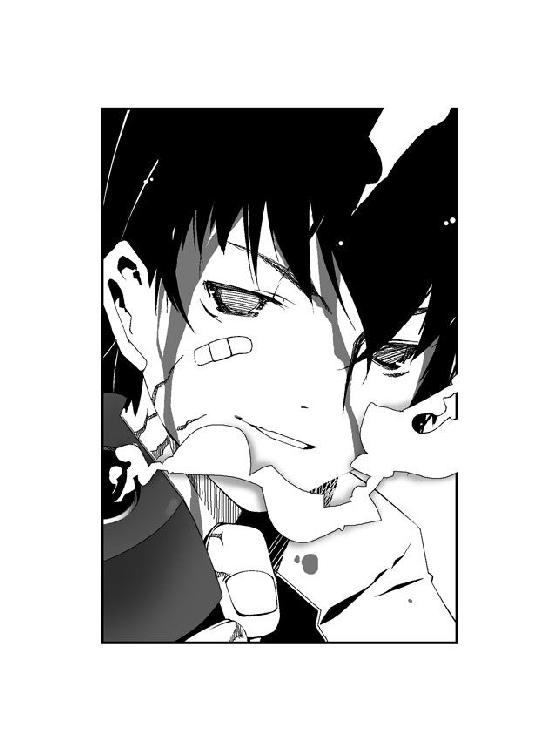
はっきりと、言う。
「ありがとう、千晴。俺のことを守ってくれて」
──吹き荒れていた嵐が、勢いを緩めた。
大助の視界の中で、千晴と〝大喰い〟が対照的に表情を変えていた。
〝大喰い〟が愉悦の笑みを消し──。
千晴は──。
「──うん」
涙を流しながら、満面に笑みを浮かべていた。
「お姉ちゃんなんだから、当たり前だよ」
後方を振り返り、千晴が〝大喰い〟に向かって誇らしげに言った。
「ほらね？ あたしの弟は、誰よりも優しくて強い良い子なんだよ」
〝大喰い〟がわずかに、顔を歪めた。
「──あたしの夢は、もう叶っちゃったよ。大助に許してもらえたもん」
夜空を覆うアゲハチョウが、ノイズがかかったように輪郭を歪めた。翅に浮かべた巨大な眼に、亀裂が生じる。
鱗粉の吹雪が力を失っていく。
夢の持ち主に〝拒絶〟されること。
それこそ〝始まりの三匹〟の最大の弱点──。
──空気が振動した。
大助の渾身の力とありったけの夢を詰めた弾丸が、かっこう虫の顎から吐き出された。
地を裂き、降り注ぐ雪のカーテンを突き破り、炎に包まれた弾丸が〝大喰い〟へと命中する。
「......っ！」
〝大喰い〟の躰が血飛沫に包まれた。銃弾によって右腕が砕け散り、肩から胸にかけてえぐり取られる。虹色の瞳が大きく見開かれる。
吹雪が、止んだ。
空に浮かんだ巨大なアゲハチョウが、黒雲を巻き添えにして消えつつあった。
期待に顔を上げた虫憑きたちの中で、大助だけが顔を歪める。
「まだ......足りないのか......！」
大助が放った一発の弾丸。
本来ならば〝大喰い〟を消滅させるだけの威力を秘めたそれが、しかし〝ふゆほたる〟の雪を完全に退けるには至らなかった。〝大喰い〟に直撃するまでに、大きく威力を削られてしまったのだ。
歯嚙みする大助を、虹色の瞳がギロリと睨みつけた。
「貴方に食事の邪魔をされるのは、何度目かしら、大助ちゃん？」
口の端から血の糸を垂らしながら、〝大喰い〟が歪んだ笑みを浮かべる。
「──さすがに少し、目障りになってきたわね」
がくり、と大助は地面に両膝をつく。
「大助！」
千晴が慌てて大助に駆けよる。握力を失った大助の手から、拳銃が落ちた。
「次にまた、私の邪魔をすることがあったら──その時は、容赦しないわよ？」
これまでに見せたことのない表情を浮かべた〝大喰い〟の躰を、紫色の霧が包んだ。脚から腰へと、その姿が星空に消えていく。
有夏月と〝霞王〟が、逃がすまいと身構える。
だが──。
「〝炎〟の外装を......焼去──」
「千莉！」
〝大喰い〟を指さそうとした千莉の腕が、力を失って垂れた。
慣れない力を使いすぎたせいだろう。消耗し、大粒の汗を浮かべた千莉を、有夏月が支える。
完全に消え去る直前まで、虹色の瞳は大助を見つめていた。
〝大喰い〟の姿が見えなくなり、大助はうなだれる。
「大助......！ 大助......！」
顔を上げた大助の肩を、千晴が支えた。
五年の月日を経て再会した姉の顔を、はじめて間近でじっくりと見る。
まだ小学生だった当時と違い、背が伸びて顔つきも大人っぽくなったと思った。
だが大助を心配して慌てふためく姿は、あの頃とちっとも変わっていない。
「......大丈夫だって......心配性は、あいかわらずだな......」
強がる大助に対し、千晴が泣き笑いを浮かべた。
──目を覚ましたら、また新しい戦いが始まる。
自分の意志で、戦い続ける。
これからも傷つきながら、戦いの日々に明け暮れる。
だから、今は──。
「心配性じゃないよ。普通だよ」
千晴が五年前と変わらない、気楽な口調で言った。
今だけは──。
懐かしい温もりに包まれ、大助は心地よい睡魔に身をゆだねた。
4.02 千晴 The last
＊
ゆらゆら揺れて。
ふわふわ浮かぶ。
千晴の平穏で幸福な日々は、変わらない。
気楽で平和な千晴を、そんな暖かい世界へつなぎ止めてくれるのは──。
「うぅ......」
呻き声とともに、薬屋千晴は身を起こした。
荒れ果てた夜の屋上で気を失っていた千晴は、傷だらけだった。おまけに雨と血でびしょ濡れだ。服を濡らす血の量とは裏腹に、自分の傷はどれも浅かった。
「......」
千晴は立ち上がり、ぼんやりと周囲を見回す。
暗闇に包まれた空間に、千晴以外の人影は見あたらなかった。
頭がぼんやりとしていた。
なぜ自分がこんな場所にいるのか、なぜ校舎がこんなにボロボロなのか、思い出せない。
「──帰らなきゃ......」
ボソリと呟き、ふらついた足取りで歩き出す。
こんな時間に出歩いていたら、母が心配するだろう。そのことしか、頭になかった。
屋上から去ろうとした千晴の肩を、何かが引っ張った。
それは、あるいは自分の中に居たはずの、もう一人の自分。
自分が一瞬だけ抱いた、哀しい夢。
そして何よりも大切だった、たった一人の──。
「......？」
しかし振り返った千晴の視界には、誰もいなかった。
気のせいだと思い、千晴は再び歩き出した。
こうして──。
様々な想いを、この場所へ置き去りにして。
薬屋千晴は、紫央小学校を去った。
＊
離さない。
〝大喰い〟──エルビオレーネが去った後も、鮎川千晴は抱きしめた弟を離さなかった。
一人でこの場所を立ち去った、五年前とは違う。
千晴はこの場所へ帰ってきて、あの時に置いていったものを取り戻した。
「大助......」
涙ぐんだ瞳で、腕の中でまぶたを閉じた弟の存在を確かめる。
傷だらけの大助から、力強い鼓動を感じる。
顔を上げると、満身創痍の虫憑きたちが千晴と大助を見ていた。白と黒のコートを着た人々が、姉弟の再会を静かに見守っている。
彼ら虫憑きはこれまで過酷な戦いをくぐり抜け、これからも戦い続けるのだろう。
弟の大助のように。
全てを思い出した千晴は、彼らの戦いから逃げるわけにはいかない。
──大切な人を見つけたよ、千晴。
弟は言った。
それが誰であるか、エルビオレーネが明かしていた。
杏本詩歌。
〝ふゆほたる〟と呼ばれ、虫憑きの戦いの中心にいる少女だ。
詩歌もこの空の下、今でも戦っているのだろうか？ 戦わない戦いをしようとしている彼女もまた、大助と再び巡り会おうと生き抜いているのだろうか？
二人が出会い、お互いを必要としているのなら──。
弟の命を救うために虫憑きにしてしまったことを、千晴は決して後悔しない。
大助の頭を抱きしめ、千晴はまぶたを閉じる。
腕の中に、邂逅した弟の温もりをはっきりと感じる。
「──アリア......」
両目を閉ざしたまま、千晴は語りかけた。
弟との再会を果たした今、もう一人、捜し出さなければならない相手がいた。
大助が詩歌と会いたいと願うように。
千晴もまた、約束を交わした相手がいる。
「キミの匂いを、感じるよ......キミは今も、どこかを彷徨ってるんだね」
〝始まりの三匹〟──アリア・ヴァレィ。
記憶を完全に取り戻した千晴は、アリア・ヴァレィの匂いもまた思い出していた。その匂いは、ずっと遠くの地の果てから感じた。
菰之村茶深が、言っていた。
〝虫〟の謎を明かすことができれば、虫憑きの戦いを終わらせられると。
アリア・ヴァレィならば、その謎を知っている──。
「キミを迎えに行くよ」
──うん、そうだね。ずーっと......あたしの中に、居ていいよ。
かつての約束を、果たすために。
虫憑きの戦いを見届けるために。
千晴はアリア・ヴァレィを見つけ出す。
「いつか、必ずね......」
ゆらゆら揺れて。
ふわふわ浮かぶ。
そんな平穏で幸福な日々を──。
千晴は確かに、未来に感じていた。
4.03 The others
赤牧市の地下にある特別環境保全事務局、中央本部基地。
地上より数十メートルの深さに達する、第九層にあたる施設の最奥部。
モニタや制御板が並んだ一室が、悲鳴に包まれていた。
機器を破壊し、逃げまどう白衣を着た者たちを切り裂き、制止に入った戦闘員たちを倒していく物体があった。
光り輝く模様を浮かべた、宙を飛ぶ円盤の群れだ。
円盤を操っているのは、両目の下に黒いアイラインを引いた少年である。
「『鱗は混乱している』！ 『鱗は混乱している！』」
少年が青ざめた顔で半狂乱で叫ぶたびに、円盤が室内を飛び回った。天井を切り裂いた円盤によって照明が破壊され、室内が暗闇に包まれた。けたたましい警報が鳴り響く。
すぐに非常灯が点灯し、青白い明かりが室内を照らした。
再び明るさを取り戻した時、アイラインの少年の前にいたのは一人の女性だった。
スーツを着た立ち振る舞いは、少年の異常な破壊行為を前にしても微塵も動じていない。細い瞳で静かに少年を見据え、口元にはうっすらと笑みが浮かんでいる。
「......！」
非常灯の下で微笑する女を見て、アイラインの少年がビクリと肩を震わせた。女の笑みが見えない鎖であるかのように、少年が恐怖の表情を浮かべて硬直する。
「──正常な思考能力を失っていますね、〝鱗〟。敵の攻撃を受けているものと判断します」
鎖の笑みを浮かべた女、魅車八重子が穏やかな口調で言った。
八重子の周囲に、黒マスクを装着した者たちが集まった。
少年が口の中で小さな悲鳴を上げた。反射的に円盤を操り、八重子を攻撃しようとする。
「り......『鱗は混乱している』！ 『鱗は混乱している』！」
黒マスクたちが、とっさに八重子を守りに入った。だがアイラインの少年の攻撃は、誰よりも速かった。出現した〝虫〟たちの間をすり抜け、円盤が八重子の眉間に迫る。
円盤の鋭い刃が、八重子を引き裂こうとした直前だった。
紅蓮の炎が、八重子の視界を埋め尽くした。
咆哮を上げる爆炎のオオエンマハンミョウが円盤を蒸発させ、それでも足りないと言わんばかりに八重子を守る〝虫〟たちも呑み込んでいく。
すべての円盤を灼き尽くし、〝虫〟たちを消滅させ、オオエンマハンミョウが弾けるように消え去った。
微動だにしない八重子の眼前で、アイラインの少年がのけぞった。
急速に光を失いつつある少年の瞳が、八重子を凝視した。譫言のように呟く。
「オ......〝オボエテロ〟......」
言い残し、少年がどさりと床の上に倒れた。
少年を手始めに、八重子の周囲を固めていた黒マスクたちも力なく倒れ臥していく。
「少しは力を抑える努力をしてください、ハルキヨ」
八重子の微笑は、微塵も揺るがない。コンマ一秒の差で命拾いをしたにもかかわらず、最初に立っていた位置から一ミリも移動していなかった。
彼女の視線の先には、異様な姿をした少年がいた。
顔全体をテープで覆い尽くした少年だ。デスクに座った膝の上で頰杖をつき、笑みを浮かべている。八重子でなければ背筋が凍りつくような、壮絶な笑みだ。
異種一号指定、ハルキヨ。
〝かっこう〟や〝ふゆほたる〟と並び、最強の戦闘能力を持つ虫憑きである。
「〝おぼえてろ〟──だとよ。ずいぶんと今さらな台詞じゃねーか」
「何者からかの宣戦布告、といったところでしょう。任務に失敗したばかりか、どこかの小物にまでやられて帰還したようですね。しかし──」
八重子は鎖の笑みを浮かべ、倒れた少年を見下ろす。
「この能力には、興味があります。いずれ相見えることがあれば、利用させてもらうとしましょう」
遅れてやってきた黒マスクたちが、八重子とハルキヨを見て立ち止まった。笑い合う二人に恐怖を抱いたように立ちつくす。
八重子は破壊された室内を見回した。
「最下層の警備を至急、チェックしなさい。警戒レベルを最大限に引き上げます」
指示に従い、黒マスクたちがいっせいに動き出す。
「〝かっこう〟が単独行動をとるなんて、あまりに都合が良すぎると思っていたのです。彼に動くきっかけを与えた人間がいますね。いったい、何者でしょう？」
八重子が微笑をハルキヨへと向けた。
くくっ、と顔にテープを巻いた少年が笑い声を洩らす。
「貴方を私の手元に置いておいて、正解だったようですね。今ごろ貴方の仲間が、最下層に向かっているのですか？ それとも──あわよくば貴方自身が〝かっこう〟と力を合わせて、〝始まりの三匹〟を倒そうと？」
「なんのことだかな」
頰杖をついたまま、ハルキヨが唇の端を持ち上げた。
八重子とハルキヨ、両者の眼差しが交錯する。
「残念でしたね。〝アレ〟の正確な在処は貴方にはまだ分からないでしょうし、〝かっこう〟だけでは〝大喰い〟を倒すこともできないでしょう」
ハルキヨが笑みを消した。紅く燃える瞳が、八重子を貫く。見るだけで相手を灼きつくすような視線を、八重子は鎖の微笑で真正面から受け止めた。
「いいでしょう。まだ化かし合いを続けるつもりですね、ハルキヨ」
非常灯に照らされた室内を、八重子は歩き出した。
警報が鳴り響く中、八重子はハルキヨの前を悠然と通り過ぎる。
「あくまで特別環境保全事務局に従おうとしない貴方たち全員を──私が愛してあげます」
非常灯に照らされた空間に、鎖の微笑が浮かび上がった。
エピローグ closed and beginning
ゆらゆら揺れて。
ふわふわ浮かぶ。
薬屋千晴の日々は平穏で、どこにでもあるような幸せな毎日だった。
自宅のアパートの掃除をする千晴は、いつも通り気楽に鼻歌を口ずさんでいた。
何年もお世話になった感謝の気持ちを込めて、雑巾で床を拭いていく。
「うん、おそうじ完了！」
笑みを浮かべた千晴の前に、家具や電化製品はいっさいなくなっていた。それらは全て処分済みである。
──今日、千晴は紫央市を離れることになっていた。
生活が苦しいことは知っていたが、とうとうアパートを出なければならなくなってしまったのだ。母の昔の同級生を頼って、千晴は新しい街へ引っ越すことになっている。
友達と別れるのは残念だし、見知らぬ土地での新生活に不安もあった。
反面、冒険に旅立つような高揚もあった。よく危なっかしいと言われるくらい、危機感のない自分のことだ。新しい生活の中でも、今までのように気楽にやっていけるだろう。
「んっ......と」
雑巾をしぼる作業で濡れてしまったため、腕に巻いた包帯をとった。
千晴が怪我をして、夜遅くにふらふらと帰宅したのは三日前のことだ。
帰ってすぐに母と色々なことを話したはずだが、その時の記憶はあやふやだった。自分がどうして怪我をしていたのかも、分からない。だが話しているうちに、母がひどく驚いた様子で青ざめていたのをおぼえている。
それ以来、千晴は学校にも通っていない。放任主義だった母が、なぜかやけに千晴を心配するようになっていた。怪我も大したことがないのに、まるで病人扱いである。
──本当に、おぼえていないの......？
今朝もたった一度だけ、母に訊かれた。千晴は何のことか分からず、首を傾げた。
それだけだった。
玄関では、母が大家と話していた。
「──特別環境保全事務局というところから連絡が──大助はそこに──」
ずいぶん話し込んでいるようだ。出て行かざるをえなくなったとはいえ、大家は最後まで良くしてくれた。お礼を言っているのだろう。
電話が鳴った。
もともと部屋の備えつけだった電話だけは、元のままにしてある。
「はい、薬屋です」
千晴が電話に出ると、相手は市立病院と名乗った。
ようやく目を覚ました、本人から連絡先を聞いた、などと事務的な声で言われた。だが千晴は相手の話を聞き終える前に言う。
「いいえ、うちに大助という人はいません」
間違い電話だった。相手は怪訝そうにしながらも、謝罪をして電話を切った。
「千晴。誰からだったの？」
大家との話を終えた母が、戻ってきた。
「間違い電話みたい」
「そう......」
母が嘆息した。
午後になり、千晴と母は手を繫いで家を出た。
最小限の荷物だけを持ち、アパートをあとにする。
──いいんだよ、思い出さなくて。
どこからか、声がした。
何か忘れ物をした気がして、アパートを振り返る。
千晴たちが住んでいた部屋に、人影が見えた。
それは──。
千晴の知らない少年。
「どうしたの、千晴？」
「ううん、なんでもない」
首を振り、母とともに紫央市をあとにする。
空っぽになった部屋に面白半分に入り込んだ、近所の子供だろう。そう思った。
心配をかけるのが嫌だったため、母には言わなかった。
一瞬だけ──胸の奥が、ひどく痛んだことは。
＊
自分は捨てられたのだ。
そのことを理解するのに、時間は必要としなかった。
母が働きすぎで疲れ切っていたのは知っていた。自分が負担になるのは、嫌だった。
そして──。
空室になったアパートに佇んだ大助を、千晴が振り返った。
千晴は不思議そうに首を傾げ、顔をそむけた。
まるで赤の他人を見たように。
「......」
わずかに唇を嚙んだ大助の肩に、一匹のかっこう虫がとまった。
大助はアパートを出て、階段を下りていく。
だが行き先は、母と姉のもとではなかった。
姉にも必要とされなくなった今、大助に居場所はなかった。
どこをどう歩いたのかも分からないくらい、歩き続ける。
夜になる頃、大助は見知らぬ土地の公園にいた。
ブランコに座り、落ちていた玩具の鉄砲で空き缶を撃つ。
これからは、強くならなければならない──。
独りで生きていけるくらい、強く。
絶対に泣くまいと心に決める。
だが大助は、どうやって生きていけばいいのか分からない。
居場所がないという現実は、幼い大助にとってどうしようもなく心細くて──。
「病院を抜け出して、どこへ消えたかと思えば......上手いもんだね」
すぐそばで、声がした。
大助は鼻をすすり、袖で顔を拭いた。やぶにらみに声がしたほうを見る。
スーツを着た青年が、電灯の下に佇んでいた。
「それに、変わった虫を飼ってる」
大助の肩にとまった緑色のかっこう虫を見て、青年が薄い笑みを浮かべた。やけに皮肉っぽい、軽薄な笑みだ。
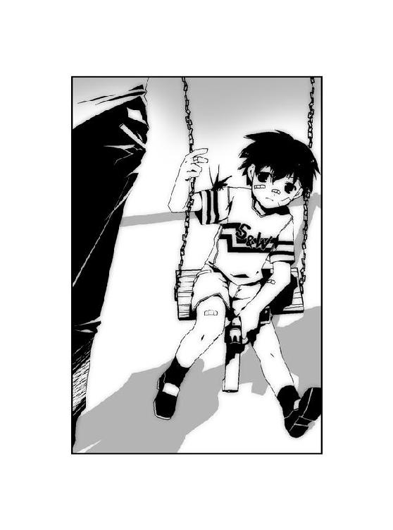
「だれだよ、おまえ」
やぶにらみにたずねる大助に対し、青年が薄ら笑いをいっそう深めた。
──それは、五年前の出来事。
「土師圭吾」
一人の青年との出会い。
そして──。
大助の戦いの、始まりだった。
あとがき
こんにちは、岩井恭平です。
いよいよ『ムシウタ』も五巻に突入しました。
シリーズ開始から約二年が過ぎて五巻目というペースは、他作品から比べると少ないほうなのでしょうか？ 最近ますますライトノベル作家さんの執筆速度の平均が、底上げされているような気がします。怖ろしいことです。
しかしこの二年の間に、雑誌ザ・スニーカーにおいて外伝ともいうべき『ムシウタｂｕｇ』の連載をさせていただいたりと、横の拡がりを持つこともできました。この本とほぼ同時期に発売されるザ・スニーカーでは『ムシウタ』、『ムシウタｂｕｇ』両方の要素を詰め込んだ初の単独特集に取り上げてもらってもいます。身に余る晴れ舞台です。
デビューしたばかりの新人がおっかなびっくりで始めた『ムシウタ』が、今もこうして続いています。本作は物語の節目となりうる話だけに、あらためて読んでくださる方々の有り難さを嚙みしめています。
これまでの巻の例によって、本作のメイキングのような話を少しずつ。
ストーリーについて。
登場人物がガラリと入れ替わって一話完結型のストーリーが多かったこれまでとは異なり、本作は前巻の直後からストーリーが展開されています。前巻の終わりに提起された謎を、解決する形です。
実を言うと登場人物の入れ替わりが少ない長編を書くのは、これが初めてだったりします。
その事実に気づいて一番驚いているのが作者自身だったりしますが、むしろこれがシリーズもののスタンダードなんでしょう。
巻ごとに主人公が入れ替わっていた既刊のような作風も含め、これからも色々な方法で同じ世界で揺れ動く登場人物たちにスポットを当てていきたいと思います。
姉弟という関係について。
本作に出てきた姉弟という形だけでなく、親兄弟という血縁関係は切っても切れない間柄だと思います。自分でも気づかないうちに影響しあい、それが一生続くのでしょう。
そんな強固な関係だからこそ、もし何らかの理由で一時的に離ればなれになっていたとしても、いつか必ず正面から向かい合う時が来るはずです。たとえ目の前に相手がいなくても。
そんな時、どのような行動をとるかは人によって違うと思います。でも、まずは自分の肉親だということを認めた上で、受け入れるかどうか判断をつけることになると思います。できることなら互いを受け入れられることを願っています。
敵との戦い方について。
今の時代、特に日本ではそうそう自分の命を脅かす敵といった存在は、見あたらないと思います。もしいたら、警察などの政府機関に助けを求めてください。
でも誰かとの衝突やライバルの存在は、日常的にあると思います。
そんな時の戦い方は、様々でしょう。
相手を直接、貶める場合もあれば、迂回して別の道を見つけたり、時には諦めることが重大な決断である場合もあります。
でも僕自身は、ひたすら目的だけを見て戦い続ける人が好きです。他人のせいにせず、ひたすら自分を高める努力をすることで目的を達成する。僕自身の経験も含め、それはきれい事でとても難しいことだと思うけど、そうすることで得られるものも多いはずです。実際、今日の日本があるのも、そんな真面目で誠実な日本人の気質によるところが大きいと思います。
時には狡く、時には遠回りをし、時には迷う。
しかし根底では真面目で誠実な人が、次世代を担ってほしいと願います。
お礼です。
担当をしてくださっている女井さんと山口さん。同時進行中の別シリーズ『消閑の挑戦者』でもお世話になっております。原稿の代わりにそこらの週刊誌を届けてみたりしても、少なくとも表面上は笑ってくれました。ごめんなさい。イタズラもほどほどにします。これお礼じゃないな。
イラストを手がけてくださっている、るろおさん。雑誌のほうの特集と時期が重なってしまい、過酷な状況に追いやってしまってごめんなさい。......これもお礼じゃないな。登場人物をあまり増やすなという心の声が、たまに幻聴として聞こえます。
この本を手にとっていただいた皆様に、心からお礼を申し上げます。
シリーズが続いているのも読んでくれる方々がいてこそです。
これからも、がんばります。
二〇〇五年六月
岩 井 恭 平
ムシウタ
05.夢さまよう蛹
岩井恭平
角川スニーカー文庫
平成22年1月1日 発行
発行者 井上伸一郎
発行所 株式会社角川書店
〒102-8078 東京都千代田区富士見2-13-3
http://www.kadokawa.co.jp/
(C) Kyohei IWAI 2010